<!DOCTYPE html>
<html xmlns="http://www.w3.org/1999/xhtml" lang="ko" xml:lang="ko">
<head>
  <meta charset="utf-8" />
  <meta name="generator" content="pandoc" />
  <meta name="viewport" content="width=device-width, initial-scale=1.0, user-scalable=yes" />
  <meta name="author" content="openplatform_v3 팀" />
  <meta name="dcterms.date" content="2026-04-27" />
  <title>openplatform_v3 종합 매뉴얼</title>
  <style>
    /* Default styles provided by pandoc.
    ** See https://pandoc.org/MANUAL.html#variables-for-html for config info.
    */
    span.smallcaps{font-variant: small-caps;}
    div.columns{display: flex; gap: min(4vw, 1.5em);}
    div.column{flex: auto; overflow-x: auto;}
    div.hanging-indent{margin-left: 1.5em; text-indent: -1.5em;}
    /* The extra [class] is a hack that increases specificity enough to
       override a similar rule in reveal.js */
    ul.task-list[class]{list-style: none;}
    ul.task-list li input[type="checkbox"] {
      font-size: inherit;
      width: 0.8em;
      margin: 0 0.8em 0.2em -1.6em;
      vertical-align: middle;
    }
    .display.math{display: block; text-align: center; margin: 0.5rem auto;}
    /* CSS for syntax highlighting */
    html { -webkit-text-size-adjust: 100%; }
    pre > code.sourceCode { white-space: pre; position: relative; }
    pre > code.sourceCode > span { display: inline-block; line-height: 1.25; }
    pre > code.sourceCode > span:empty { height: 1.2em; }
    .sourceCode { overflow: visible; }
    code.sourceCode > span { color: inherit; text-decoration: inherit; }
    div.sourceCode { margin: 1em 0; }
    pre.sourceCode { margin: 0; }
    @media screen {
    div.sourceCode { overflow: auto; }
    }
    @media print {
    pre > code.sourceCode { white-space: pre-wrap; }
    pre > code.sourceCode > span { text-indent: -5em; padding-left: 5em; }
    }
    pre.numberSource code
      { counter-reset: source-line 0; }
    pre.numberSource code > span
      { position: relative; left: -4em; counter-increment: source-line; }
    pre.numberSource code > span > a:first-child::before
      { content: counter(source-line);
        position: relative; left: -1em; text-align: right; vertical-align: baseline;
        border: none; display: inline-block;
        -webkit-touch-callout: none; -webkit-user-select: none;
        -khtml-user-select: none; -moz-user-select: none;
        -ms-user-select: none; user-select: none;
        padding: 0 4px; width: 4em;
        color: #aaaaaa;
      }
    pre.numberSource { margin-left: 3em; border-left: 1px solid #aaaaaa;  padding-left: 4px; }
    div.sourceCode
      {  background-color: #f8f8f8; }
    @media screen {
    pre > code.sourceCode > span > a:first-child::before { text-decoration: underline; }
    }
    code span.al { color: #ef2929; } /* Alert */
    code span.an { color: #8f5902; font-weight: bold; font-style: italic; } /* Annotation */
    code span.at { color: #204a87; } /* Attribute */
    code span.bn { color: #0000cf; } /* BaseN */
    code span.cf { color: #204a87; font-weight: bold; } /* ControlFlow */
    code span.ch { color: #4e9a06; } /* Char */
    code span.cn { color: #8f5902; } /* Constant */
    code span.co { color: #8f5902; font-style: italic; } /* Comment */
    code span.cv { color: #8f5902; font-weight: bold; font-style: italic; } /* CommentVar */
    code span.do { color: #8f5902; font-weight: bold; font-style: italic; } /* Documentation */
    code span.dt { color: #204a87; } /* DataType */
    code span.dv { color: #0000cf; } /* DecVal */
    code span.er { color: #a40000; font-weight: bold; } /* Error */
    code span.ex { } /* Extension */
    code span.fl { color: #0000cf; } /* Float */
    code span.fu { color: #204a87; font-weight: bold; } /* Function */
    code span.im { } /* Import */
    code span.in { color: #8f5902; font-weight: bold; font-style: italic; } /* Information */
    code span.kw { color: #204a87; font-weight: bold; } /* Keyword */
    code span.op { color: #ce5c00; font-weight: bold; } /* Operator */
    code span.ot { color: #8f5902; } /* Other */
    code span.pp { color: #8f5902; font-style: italic; } /* Preprocessor */
    code span.sc { color: #ce5c00; font-weight: bold; } /* SpecialChar */
    code span.ss { color: #4e9a06; } /* SpecialString */
    code span.st { color: #4e9a06; } /* String */
    code span.va { color: #000000; } /* Variable */
    code span.vs { color: #4e9a06; } /* VerbatimString */
    code span.wa { color: #8f5902; font-weight: bold; font-style: italic; } /* Warning */
  </style>
  <link rel="stylesheet" href="_print.css" />
</head>
<body>
<header id="title-block-header">
<h1 class="title">openplatform_v3 종합 매뉴얼</h1>
<p class="subtitle">Spring Boot 3.2 + Vue 3 + Keycloak Federation</p>
<p class="author">openplatform_v3 팀</p>
<p class="date">2026-04-27</p>
</header>
<nav id="TOC" role="doc-toc">
<ul>
<li><a href="#openplatform_v3-종합-매뉴얼"
id="toc-openplatform_v3-종합-매뉴얼"><span
class="toc-section-number">1</span> openplatform_v3 종합 매뉴얼</a>
<ul>
<li><a href="#문서-구성" id="toc-문서-구성"><span
class="toc-section-number">1.1</span> 문서 구성</a></li>
<li><a href="#프로젝트-비전" id="toc-프로젝트-비전"><span
class="toc-section-number">1.2</span> 프로젝트 비전</a></li>
<li><a href="#적용-대상" id="toc-적용-대상"><span
class="toc-section-number">1.3</span> 2. 적용 대상</a></li>
<li><a href="#핵심-차별점" id="toc-핵심-차별점"><span
class="toc-section-number">1.4</span> 3. 핵심 차별점</a></li>
<li><a href="#라이선스-전략" id="toc-라이선스-전략"><span
class="toc-section-number">1.5</span> 4. 라이선스 전략</a></li>
<li><a href="#단일-호스트-sso-통일-kc.localtest.me"
id="toc-단일-호스트-sso-통일-kc.localtest.me"><span
class="toc-section-number">1.6</span> 5. 단일 호스트 SSO 통일:
kc.localtest.me</a></li>
<li><a href="#현재-완성도-phase-14-기준"
id="toc-현재-완성도-phase-14-기준"><span
class="toc-section-number">1.7</span> 6. 현재 완성도 (Phase 14
기준)</a></li>
<li><a href="#참조" id="toc-참조"><span
class="toc-section-number">1.8</span> 참조</a></li>
<li><a href="#이-챕터가-다루지-않은-인접-주제"
id="toc-이-챕터가-다루지-않은-인접-주제"><span
class="toc-section-number">1.9</span> 이 챕터가 다루지 않은 인접
주제</a></li>
</ul></li>
<li><a href="#기술-스택" id="toc-기술-스택"><span
class="toc-section-number">2</span> 02. 기술 스택</a>
<ul>
<li><a href="#백엔드-javaspring-의존성-매트릭스"
id="toc-백엔드-javaspring-의존성-매트릭스"><span
class="toc-section-number">2.1</span> 1. 백엔드 (Java/Spring) 의존성
매트릭스</a></li>
<li><a href="#프론트엔드-vue-3-의존성"
id="toc-프론트엔드-vue-3-의존성"><span
class="toc-section-number">2.2</span> 2. 프론트엔드 (Vue 3)
의존성</a></li>
<li><a href="#버전-매트릭스-단일-표"
id="toc-버전-매트릭스-단일-표"><span
class="toc-section-number">2.3</span> 3. 버전 매트릭스 (단일
표)</a></li>
<li><a href="#라이선스-적합성-1" id="toc-라이선스-적합성-1"><span
class="toc-section-number">2.4</span> 4. 라이선스 적합성</a></li>
<li><a href="#포트-할당-19xxx-대역" id="toc-포트-할당-19xxx-대역"><span
class="toc-section-number">2.5</span> 5. 포트 할당 (19xxx 대역)</a></li>
<li><a href="#빌드배포-도구" id="toc-빌드배포-도구"><span
class="toc-section-number">2.6</span> 6. 빌드/배포 도구</a></li>
<li><a href="#진입점-요약" id="toc-진입점-요약"><span
class="toc-section-number">2.7</span> 7. 진입점 요약</a></li>
<li><a href="#참조-1" id="toc-참조-1"><span
class="toc-section-number">2.8</span> 참조</a></li>
<li><a href="#이-챕터가-다루지-않은-인접-주제-1"
id="toc-이-챕터가-다루지-않은-인접-주제-1"><span
class="toc-section-number">2.9</span> 이 챕터가 다루지 않은 인접
주제</a></li>
<li><a href="#c4-시스템-컨텍스트-system-context"
id="toc-c4-시스템-컨텍스트-system-context"><span
class="toc-section-number">2.10</span> 1. C4 시스템 컨텍스트 (System
Context)</a></li>
<li><a href="#컨테이너-다이어그램-container-diagram"
id="toc-컨테이너-다이어그램-container-diagram"><span
class="toc-section-number">2.11</span> 2. 컨테이너 다이어그램 (Container
Diagram)</a></li>
<li><a href="#backend-bff-port-adapter-아키텍처"
id="toc-backend-bff-port-adapter-아키텍처"><span
class="toc-section-number">2.12</span> 3. Backend-BFF — Port-Adapter
아키텍처</a></li>
<li><a href="#backend-core-도메인-주도-설계"
id="toc-backend-core-도메인-주도-설계"><span
class="toc-section-number">2.13</span> 4. Backend-Core — 도메인 주도
설계</a></li>
<li><a href="#ha-토폴로지" id="toc-ha-토폴로지"><span
class="toc-section-number">2.14</span> 5. HA 토폴로지</a></li>
<li><a href="#데이터-흐름-결재-라이프사이클"
id="toc-데이터-흐름-결재-라이프사이클"><span
class="toc-section-number">2.15</span> 6. 데이터 흐름 — 결재
라이프사이클</a></li>
<li><a href="#참조-2" id="toc-참조-2"><span
class="toc-section-number">2.16</span> 참조</a></li>
<li><a href="#다루지-않은-인접-주제"
id="toc-다루지-않은-인접-주제"><span
class="toc-section-number">2.17</span> 다루지 않은 인접 주제</a></li>
</ul></li>
<li><a href="#데이터-모델" id="toc-데이터-모델"><span
class="toc-section-number">3</span> 04. 데이터 모델</a>
<ul>
<li><a href="#스키마-개요" id="toc-스키마-개요"><span
class="toc-section-number">3.1</span> 1. 스키마 개요</a></li>
<li><a href="#flyway-마이그레이션-체인"
id="toc-flyway-마이그레이션-체인"><span
class="toc-section-number">3.2</span> 2. Flyway 마이그레이션
체인</a></li>
<li><a href="#핵심-erd-5-클러스터" id="toc-핵심-erd-5-클러스터"><span
class="toc-section-number">3.3</span> 3. 핵심 ERD (5 클러스터)</a></li>
<li><a href="#정규화-정책" id="toc-정규화-정책"><span
class="toc-section-number">3.4</span> 4. 정규화 정책</a></li>
<li><a href="#인덱스-설계" id="toc-인덱스-설계"><span
class="toc-section-number">3.5</span> 5. 인덱스 설계</a></li>
<li><a href="#flyway-운영-정책" id="toc-flyway-운영-정책"><span
class="toc-section-number">3.6</span> 6. Flyway 운영 정책</a></li>
<li><a href="#mybatis-vs-jpa" id="toc-mybatis-vs-jpa"><span
class="toc-section-number">3.7</span> 7. MyBatis vs JPA</a></li>
<li><a href="#시드-데이터" id="toc-시드-데이터"><span
class="toc-section-number">3.8</span> 8. 시드 데이터</a></li>
<li><a href="#참조-3" id="toc-참조-3"><span
class="toc-section-number">3.9</span> 참조</a></li>
<li><a href="#이-챕터가-다루지-않은-인접-주제-2"
id="toc-이-챕터가-다루지-않은-인접-주제-2"><span
class="toc-section-number">3.10</span> 이 챕터가 다루지 않은 인접
주제</a></li>
<li><a href="#목차" id="toc-목차"><span
class="toc-section-number">3.11</span> 목차</a></li>
<li><a href="#api-게이트웨이-아키텍처"
id="toc-api-게이트웨이-아키텍처"><span
class="toc-section-number">3.12</span> 1. API 게이트웨이
아키텍처</a></li>
<li><a href="#dataset-단일-엔드포인트"
id="toc-dataset-단일-엔드포인트"><span
class="toc-section-number">3.13</span> 2. DataSet 단일
엔드포인트</a></li>
<li><a href="#datasetservicemapping-어노테이션"
id="toc-datasetservicemapping-어노테이션"><span
class="toc-section-number">3.14</span> 3. DataSetServiceMapping
어노테이션</a></li>
<li><a href="#bff-apibff-엔드포인트"
id="toc-bff-apibff-엔드포인트"><span
class="toc-section-number">3.15</span> 4. BFF /api/bff/*
엔드포인트</a></li>
<li><a href="#권한-및-인증" id="toc-권한-및-인증"><span
class="toc-section-number">3.16</span> 5. 권한 및 인증</a></li>
<li><a href="#페이지네이션정렬필터-규약"
id="toc-페이지네이션정렬필터-규약"><span
class="toc-section-number">3.17</span> 6. 페이지네이션·정렬·필터
규약</a></li>
<li><a href="#응답-포맷-에러-처리" id="toc-응답-포맷-에러-처리"><span
class="toc-section-number">3.18</span> 7. 응답 포맷 &amp; 에러
처리</a></li>
<li><a href="#외부-서비스-직통-호출"
id="toc-외부-서비스-직통-호출"><span
class="toc-section-number">3.19</span> 8. 외부 서비스 직통 호출</a></li>
<li><a href="#참조-4" id="toc-참조-4"><span
class="toc-section-number">3.20</span> 참조</a></li>
<li><a href="#이-챕터가-다루지-않은-인접-주제-3"
id="toc-이-챕터가-다루지-않은-인접-주제-3"><span
class="toc-section-number">3.21</span> 이 챕터가 다루지 않은 인접
주제</a></li>
<li><a href="#directory-structure-overview"
id="toc-directory-structure-overview"><span
class="toc-section-number">3.22</span> 1. Directory Structure
Overview</a></li>
<li><a href="#routing-architecture-27-routes"
id="toc-routing-architecture-27-routes"><span
class="toc-section-number">3.23</span> 2. Routing Architecture (27+
Routes)</a></li>
<li><a href="#state-management-pinia-3"
id="toc-state-management-pinia-3"><span
class="toc-section-number">3.24</span> 3. State Management (Pinia
3)</a></li>
<li><a href="#axios-interceptor-error-handling"
id="toc-axios-interceptor-error-handling"><span
class="toc-section-number">3.25</span> 4. Axios Interceptor &amp; Error
Handling</a></li>
<li><a href="#keycloak-integration" id="toc-keycloak-integration"><span
class="toc-section-number">3.26</span> 5. Keycloak Integration</a></li>
<li><a href="#vite-configuration-build"
id="toc-vite-configuration-build"><span
class="toc-section-number">3.27</span> 6. Vite Configuration &amp;
Build</a></li>
<li><a href="#vue-spring-framework-reuse-policy"
id="toc-vue-spring-framework-reuse-policy"><span
class="toc-section-number">3.28</span> 7. Vue-Spring-Framework Reuse
Policy</a></li>
<li><a href="#composables-business-logic"
id="toc-composables-business-logic"><span
class="toc-section-number">3.29</span> 8. Composables &amp; Business
Logic</a></li>
<li><a href="#tech-stack" id="toc-tech-stack"><span
class="toc-section-number">3.30</span> 9. Tech Stack</a></li>
<li><a href="#key-design-patterns" id="toc-key-design-patterns"><span
class="toc-section-number">3.31</span> 10. Key Design Patterns</a></li>
<li><a href="#entry-point-bootstrap"
id="toc-entry-point-bootstrap"><span
class="toc-section-number">3.32</span> 11. Entry Point &amp;
Bootstrap</a></li>
<li><a href="#root-component-app.vue"
id="toc-root-component-app.vue"><span
class="toc-section-number">3.33</span> 12. Root Component
(App.vue)</a></li>
<li><a href="#참조-5" id="toc-참조-5"><span
class="toc-section-number">3.34</span> 참조</a></li>
<li><a href="#이-챕터가-다루지-않은-인접-주제-4"
id="toc-이-챕터가-다루지-않은-인접-주제-4"><span
class="toc-section-number">3.35</span> 이 챕터가 다루지 않은 인접
주제</a></li>
</ul></li>
<li><a href="#chapter-1.7-frontend-components-ui-architecture"
id="toc-chapter-1.7-frontend-components-ui-architecture"><span
class="toc-section-number">4</span> Chapter 1.7: Frontend Components
&amp; UI Architecture</a>
<ul>
<li><a href="#primevue-4-채택-배경" id="toc-primevue-4-채택-배경"><span
class="toc-section-number">4.1</span> 1. PrimeVue 4 채택 배경</a></li>
<li><a href="#다중-패널-패턴" id="toc-다중-패널-패턴"><span
class="toc-section-number">4.2</span> 2. 다중 패널 패턴</a></li>
<li><a href="#컴포넌트-카탈로그-45개"
id="toc-컴포넌트-카탈로그-45개"><span
class="toc-section-number">4.3</span> 3. 컴포넌트 카탈로그
(45개)</a></li>
<li><a href="#fullcalendar-6.1.20-통합"
id="toc-fullcalendar-6.1.20-통합"><span
class="toc-section-number">4.4</span> 4. FullCalendar 6.1.20
통합</a></li>
<li><a href="#livekit-client-2.18.1-통합"
id="toc-livekit-client-2.18.1-통합"><span
class="toc-section-number">4.5</span> 5. LiveKit Client 2.18.1
통합</a></li>
<li><a href="#md-editor-v3-6.4.1" id="toc-md-editor-v3-6.4.1"><span
class="toc-section-number">4.6</span> 6. md-editor-v3 6.4.1</a></li>
<li><a href="#컴포넌트-이름-규칙" id="toc-컴포넌트-이름-규칙"><span
class="toc-section-number">4.7</span> 7. 컴포넌트 이름 규칙</a></li>
<li><a href="#상태-관리-pinia-3-stores"
id="toc-상태-관리-pinia-3-stores"><span
class="toc-section-number">4.8</span> 8. 상태 관리 (Pinia, 3
stores)</a></li>
<li><a href="#composables-23개" id="toc-composables-23개"><span
class="toc-section-number">4.9</span> 9. Composables (23개)</a></li>
<li><a href="#참조-6" id="toc-참조-6"><span
class="toc-section-number">4.10</span> 참조</a></li>
<li><a href="#이-챕터가-다루지-않은-인접-주제-5"
id="toc-이-챕터가-다루지-않은-인접-주제-5"><span
class="toc-section-number">4.11</span> 이 챕터가 다루지 않은 인접
주제</a></li>
</ul></li>
<li><a href="#chapter-1.8-frontend-conventions-vue-3-typescript"
id="toc-chapter-1.8-frontend-conventions-vue-3-typescript"><span
class="toc-section-number">5</span> Chapter 1.8 — Frontend Conventions
(Vue 3 / TypeScript)</a>
<ul>
<li><a href="#단일파일-vue-컴포넌트-sfc-구조-순서"
id="toc-단일파일-vue-컴포넌트-sfc-구조-순서"><span
class="toc-section-number">5.1</span> 1. 단일파일 Vue 컴포넌트 (SFC)
구조 순서</a></li>
<li><a href="#컴포넌트-네이밍-규칙" id="toc-컴포넌트-네이밍-규칙"><span
class="toc-section-number">5.2</span> 2. 컴포넌트 네이밍 규칙</a></li>
<li><a href="#pinia-store-패턴" id="toc-pinia-store-패턴"><span
class="toc-section-number">5.3</span> 3. Pinia Store 패턴</a></li>
<li><a href="#api-호출-규약-dataset-단일-진입점"
id="toc-api-호출-규약-dataset-단일-진입점"><span
class="toc-section-number">5.4</span> 4. API 호출 규약 — DataSet 단일
진입점</a></li>
<li><a href="#상수-enum-관리" id="toc-상수-enum-관리"><span
class="toc-section-number">5.5</span> 5. 상수 &amp; Enum 관리</a></li>
<li><a href="#에러-처리" id="toc-에러-처리"><span
class="toc-section-number">5.6</span> 6. 에러 처리</a></li>
<li><a href="#i18n-다국어-koenjazh-cn"
id="toc-i18n-다국어-koenjazh-cn"><span
class="toc-section-number">5.7</span> 7. i18n (다국어) —
ko/en/ja/zh-CN</a></li>
<li><a href="#권한-체크" id="toc-권한-체크"><span
class="toc-section-number">5.8</span> 8. 권한 체크</a></li>
<li><a href="#approvalsubmitdialog.vue-종합-예시"
id="toc-approvalsubmitdialog.vue-종합-예시"><span
class="toc-section-number">5.9</span> 9. ApprovalSubmitDialog.vue 종합
예시</a></li>
<li><a href="#주의-사항-안티패턴" id="toc-주의-사항-안티패턴"><span
class="toc-section-number">5.10</span> 10. 주의 사항 &amp;
안티패턴</a></li>
<li><a href="#참조-7" id="toc-참조-7"><span
class="toc-section-number">5.11</span> 참조</a></li>
<li><a href="#이-챕터가-다루지-않은-인접-주제-6"
id="toc-이-챕터가-다루지-않은-인접-주제-6"><span
class="toc-section-number">5.12</span> 이 챕터가 다루지 않은 인접
주제</a></li>
<li><a href="#하이브리드-아키텍처-개요"
id="toc-하이브리드-아키텍처-개요"><span
class="toc-section-number">5.13</span> 1. 하이브리드 아키텍처
개요</a></li>
<li><a href="#pattern-a-backend-core-domain-ecosystem"
id="toc-pattern-a-backend-core-domain-ecosystem"><span
class="toc-section-number">5.14</span> 2. Pattern A: Backend-Core Domain
Ecosystem</a></li>
<li><a href="#pattern-b-backend-bff-port-adapter-federation"
id="toc-pattern-b-backend-bff-port-adapter-federation"><span
class="toc-section-number">5.15</span> 3. Pattern B: Backend-BFF
Port-Adapter Federation</a></li>
<li><a href="#pattern-c-외부-서비스-직통-호출"
id="toc-pattern-c-외부-서비스-직통-호출"><span
class="toc-section-number">5.16</span> 4. Pattern C: 외부 서비스 직통
호출</a></li>
<li><a href="#notificationservice-다형-시그니처-phase-14-t6"
id="toc-notificationservice-다형-시그니처-phase-14-t6"><span
class="toc-section-number">5.17</span> 5. NotificationService: 다형
시그니처 (Phase 14 T6)</a></li>
<li><a href="#공통-인프라" id="toc-공통-인프라"><span
class="toc-section-number">5.18</span> 6. 공통 인프라</a></li>
<li><a href="#특수-패턴-approvalservice-leaveservice"
id="toc-특수-패턴-approvalservice-leaveservice"><span
class="toc-section-number">5.19</span> 7. 특수 패턴: ApprovalService ↔︎
LeaveService</a></li>
<li><a href="#데이터베이스-스키마" id="toc-데이터베이스-스키마"><span
class="toc-section-number">5.20</span> 8. 데이터베이스 스키마</a></li>
<li><a href="#배포-구조" id="toc-배포-구조"><span
class="toc-section-number">5.21</span> 9. 배포 구조</a></li>
<li><a href="#흐름-예시" id="toc-흐름-예시"><span
class="toc-section-number">5.22</span> 10. 흐름 예시</a></li>
<li><a href="#참조-8" id="toc-참조-8"><span
class="toc-section-number">5.23</span> 참조</a></li>
<li><a href="#이-챕터가-다루지-않은-인접-주제-7"
id="toc-이-챕터가-다루지-않은-인접-주제-7"><span
class="toc-section-number">5.24</span> 이 챕터가 다루지 않은 인접
주제</a></li>
<li><a href="#목차-1" id="toc-목차-1"><span
class="toc-section-number">5.25</span> 목차</a></li>
<li><a href="#mybatis-동적-sql-규약"
id="toc-mybatis-동적-sql-규약"><span
class="toc-section-number">5.26</span> 1. MyBatis 동적 SQL 규약</a></li>
<li><a href="#dataset-라우팅-규약-datasetservicemapping"
id="toc-dataset-라우팅-규약-datasetservicemapping"><span
class="toc-section-number">5.27</span> 2. DataSet 라우팅 규약 (<span
class="citation"
data-cites="DataSetServiceMapping">@DataSetServiceMapping</span>)</a></li>
<li><a href="#ui-그리드-변경-사항-병합-_rowtype-패턴"
id="toc-ui-그리드-변경-사항-병합-_rowtype-패턴"><span
class="toc-section-number">5.28</span> 3. UI 그리드 변경 사항 병합
(_rowType 패턴)</a></li>
<li><a href="#트랜잭션-경계-설정" id="toc-트랜잭션-경계-설정"><span
class="toc-section-number">5.29</span> 4. 트랜잭션 경계 설정</a></li>
<li><a href="#응답-표준-apiresponse"
id="toc-응답-표준-apiresponse"><span
class="toc-section-number">5.30</span> 5. 응답 표준
(ApiResponse)</a></li>
<li><a href="#예외-처리-businessexception"
id="toc-예외-처리-businessexception"><span
class="toc-section-number">5.31</span> 6. 예외 처리
(BusinessException)</a></li>
<li><a href="#시큐리티-컨텍스트-사용-preferred_username-employee_no"
id="toc-시큐리티-컨텍스트-사용-preferred_username-employee_no"><span
class="toc-section-number">5.32</span> 7. 시큐리티 컨텍스트 사용
(preferred_username → employee_no)</a></li>
<li><a href="#순환-의존-회피-패턴" id="toc-순환-의존-회피-패턴"><span
class="toc-section-number">5.33</span> 8. 순환 의존 회피 패턴</a></li>
<li><a href="#flyway-운영-정책-1" id="toc-flyway-운영-정책-1"><span
class="toc-section-number">5.34</span> 9. Flyway 운영 정책</a></li>
<li><a href="#참조-9" id="toc-참조-9"><span
class="toc-section-number">5.35</span> 참조</a></li>
<li><a href="#이-챕터가-다루지-않은-인접-주제-8"
id="toc-이-챕터가-다루지-않은-인접-주제-8"><span
class="toc-section-number">5.36</span> 이 챕터가 다루지 않은 인접
주제</a></li>
<li><a href="#overview" id="toc-overview"><span
class="toc-section-number">5.37</span> Overview</a></li>
<li><a href="#logging-stack-logback-default"
id="toc-logging-stack-logback-default"><span
class="toc-section-number">5.38</span> 1. Logging Stack: Logback
Default</a></li>
<li><a href="#adminauditaspect-audit-logging-via-aop"
id="toc-adminauditaspect-audit-logging-via-aop"><span
class="toc-section-number">5.39</span> 2. AdminAuditAspect: Audit
Logging via AOP</a></li>
<li><a href="#request-id-distributed-tracing"
id="toc-request-id-distributed-tracing"><span
class="toc-section-number">5.40</span> 3. Request ID &amp; Distributed
Tracing</a></li>
<li><a href="#loki-promtail-log-aggregation"
id="toc-loki-promtail-log-aggregation"><span
class="toc-section-number">5.41</span> 4. Loki + Promtail: Log
Aggregation</a></li>
<li><a href="#globalexceptionhandler-error-logging"
id="toc-globalexceptionhandler-error-logging"><span
class="toc-section-number">5.42</span> 5. GlobalExceptionHandler &amp;
Error Logging</a></li>
<li><a href="#sensitive-data-masking"
id="toc-sensitive-data-masking"><span
class="toc-section-number">5.43</span> 6. Sensitive Data
Masking</a></li>
<li><a href="#performance-baselines"
id="toc-performance-baselines"><span
class="toc-section-number">5.44</span> 7. Performance Baselines</a></li>
<li><a href="#implementation-checklist"
id="toc-implementation-checklist"><span
class="toc-section-number">5.45</span> 8. Implementation
Checklist</a></li>
<li><a href="#참조-references" id="toc-참조-references"><span
class="toc-section-number">5.46</span> 참조 (References)</a></li>
<li><a href="#adjacent-topics-not-covered"
id="toc-adjacent-topics-not-covered"><span
class="toc-section-number">5.47</span> Adjacent Topics Not
Covered</a></li>
</ul></li>
<li><a href="#chapter-12-보안-아키텍처-security"
id="toc-chapter-12-보안-아키텍처-security"><span
class="toc-section-number">6</span> Chapter 12 — 보안 아키텍처
(Security)</a>
<ul>
<li><a href="#인증-모델-keycloak-oidc"
id="toc-인증-모델-keycloak-oidc"><span
class="toc-section-number">6.1</span> 12.1 인증 모델 (Keycloak
OIDC)</a></li>
<li><a href="#jwt-토큰-구조-rs256" id="toc-jwt-토큰-구조-rs256"><span
class="toc-section-number">6.2</span> 12.2 JWT 토큰 구조
(RS256)</a></li>
<li><a href="#securityconfig-백엔드-두-모듈"
id="toc-securityconfig-백엔드-두-모듈"><span
class="toc-section-number">6.3</span> 12.3 SecurityConfig — 백엔드 두
모듈</a></li>
<li><a href="#rbac-역할메뉴-매트릭스"
id="toc-rbac-역할메뉴-매트릭스"><span
class="toc-section-number">6.4</span> 12.4 RBAC — 역할·메뉴
매트릭스</a></li>
<li><a href="#외부-서비스-sso-federation-5종"
id="toc-외부-서비스-sso-federation-5종"><span
class="toc-section-number">6.5</span> 12.5 외부 서비스 SSO Federation
(5종)</a></li>
<li><a href="#keycloak-admin-토큰-발급-phase-14-track-5"
id="toc-keycloak-admin-토큰-발급-phase-14-track-5"><span
class="toc-section-number">6.6</span> 12.6 Keycloak Admin 토큰 발급
(Phase 14 Track 5)</a></li>
<li><a href="#비밀-관리-secrets" id="toc-비밀-관리-secrets"><span
class="toc-section-number">6.7</span> 12.7 비밀 관리 (Secrets)</a></li>
<li><a href="#감사-로그-v14-adminauditaspect"
id="toc-감사-로그-v14-adminauditaspect"><span
class="toc-section-number">6.8</span> 12.8 감사 로그 (V14 +
AdminAuditAspect)</a></li>
<li><a href="#owasp-top-10-2021-매트릭스"
id="toc-owasp-top-10-2021-매트릭스"><span
class="toc-section-number">6.9</span> 12.9 OWASP Top 10 (2021)
매트릭스</a></li>
<li><a href="#알려진-미완-known-gaps"
id="toc-알려진-미완-known-gaps"><span
class="toc-section-number">6.10</span> 12.10 알려진 미완 (Known
Gaps)</a></li>
<li><a href="#참조-10" id="toc-참조-10"><span
class="toc-section-number">6.11</span> 참조</a></li>
<li><a href="#이-챕터가-다루지-않은-인접-주제-9"
id="toc-이-챕터가-다루지-않은-인접-주제-9"><span
class="toc-section-number">6.12</span> 이 챕터가 다루지 않은 인접
주제</a></li>
</ul></li>
<li><a href="#chapter-1.13-deployment-infrastructure"
id="toc-chapter-1.13-deployment-infrastructure"><span
class="toc-section-number">7</span> Chapter 1.13: Deployment &amp;
Infrastructure</a>
<ul>
<li><a href="#overview-1" id="toc-overview-1"><span
class="toc-section-number">7.1</span> Overview</a></li>
<li><a href="#compose-다층-구성-6-layer"
id="toc-compose-다층-구성-6-layer"><span
class="toc-section-number">7.2</span> 1. Compose 다층 구성 (6
layer)</a></li>
<li><a href="#네트워크" id="toc-네트워크"><span
class="toc-section-number">7.3</span> 2. 네트워크</a></li>
<li><a href="#컨테이너-인벤토리-12-개"
id="toc-컨테이너-인벤토리-12-개"><span
class="toc-section-number">7.4</span> 3. 컨테이너 인벤토리 (12
개)</a></li>
<li><a href="#traefik-라우팅-infratraefikdynamic.yml"
id="toc-traefik-라우팅-infratraefikdynamic.yml"><span
class="toc-section-number">7.5</span> 4. Traefik 라우팅
(<code>infra/traefik/dynamic.yml</code>)</a></li>
<li><a href="#헬스체크" id="toc-헬스체크"><span
class="toc-section-number">7.6</span> 5. 헬스체크</a></li>
<li><a href="#리소스-제한-docker-compose.resources.yml"
id="toc-리소스-제한-docker-compose.resources.yml"><span
class="toc-section-number">7.7</span> 6. 리소스 제한
(<code>docker-compose.resources.yml</code>)</a></li>
<li><a href="#크론-작업-ofelia" id="toc-크론-작업-ofelia"><span
class="toc-section-number">7.8</span> 7. 크론 작업 (Ofelia)</a></li>
<li><a href="#운영-스크립트" id="toc-운영-스크립트"><span
class="toc-section-number">7.9</span> 8. 운영 스크립트</a></li>
<li><a href="#환경-변수" id="toc-환경-변수"><span
class="toc-section-number">7.10</span> 9. 환경 변수</a></li>
<li><a href="#롤링-배포-현재-미지원-권장"
id="toc-롤링-배포-현재-미지원-권장"><span
class="toc-section-number">7.11</span> 10. 롤링 배포 (현재 미지원,
권장)</a></li>
<li><a href="#db-초기화" id="toc-db-초기화"><span
class="toc-section-number">7.12</span> 11. DB 초기화</a></li>
<li><a href="#참조-11" id="toc-참조-11"><span
class="toc-section-number">7.13</span> 참조</a></li>
<li><a href="#이-챕터가-다루지-않은-인접-주제-10"
id="toc-이-챕터가-다루지-않은-인접-주제-10"><span
class="toc-section-number">7.14</span> 이 챕터가 다루지 않은 인접
주제</a></li>
</ul></li>
<li><a href="#chapter-1.14-testing-verification-strategy"
id="toc-chapter-1.14-testing-verification-strategy"><span
class="toc-section-number">8</span> Chapter 1.14: Testing &amp;
Verification Strategy</a>
<ul>
<li><a href="#overview-2" id="toc-overview-2"><span
class="toc-section-number">8.1</span> Overview</a></li>
<li><a href="#테스트-전략-현재-진술"
id="toc-테스트-전략-현재-진술"><span
class="toc-section-number">8.2</span> 1. 테스트 전략 — 현재
진술</a></li>
<li><a href="#단위-통합-테스트-minimal-권장-추가"
id="toc-단위-통합-테스트-minimal-권장-추가"><span
class="toc-section-number">8.3</span> 2. 단위 / 통합 테스트 — minimal,
권장 추가</a></li>
<li><a href="#e2e-playwright-mcp-본-프로젝트의-핵심-검증"
id="toc-e2e-playwright-mcp-본-프로젝트의-핵심-검증"><span
class="toc-section-number">8.4</span> 3. E2E (Playwright MCP) — 본
프로젝트의 핵심 검증</a></li>
<li><a href="#화상회의-수동-검증-출처-docsvideo-manual-check.md"
id="toc-화상회의-수동-검증-출처-docsvideo-manual-check.md"><span
class="toc-section-number">8.5</span> 4. 화상회의 수동 검증 (출처:
<code>docs/video-manual-check.md</code>)</a></li>
<li><a href="#부하-카오스-미적용-권장"
id="toc-부하-카오스-미적용-권장"><span
class="toc-section-number">8.6</span> 5. 부하 / 카오스 — 미적용,
권장</a></li>
<li><a href="#동시성-세션-일관성-권장"
id="toc-동시성-세션-일관성-권장"><span
class="toc-section-number">8.7</span> 6. 동시성 / 세션 일관성 —
권장</a></li>
<li><a href="#ci-통합-부재-권장" id="toc-ci-통합-부재-권장"><span
class="toc-section-number">8.8</span> 7. CI 통합 — 부재, 권장</a></li>
<li><a href="#검증-통과-표-phase-af-및-phase-14"
id="toc-검증-통과-표-phase-af-및-phase-14"><span
class="toc-section-number">8.9</span> 8. 검증 통과 표 — Phase A~F 및
Phase 14</a></li>
<li><a href="#참조-12" id="toc-참조-12"><span
class="toc-section-number">8.10</span> 참조</a></li>
<li><a href="#이-챕터가-다루지-않은-인접-주제-11"
id="toc-이-챕터가-다루지-않은-인접-주제-11"><span
class="toc-section-number">8.11</span> 이 챕터가 다루지 않은 인접
주제</a></li>
</ul></li>
<li><a href="#chapter-15.-관찰성-observability"
id="toc-chapter-15.-관찰성-observability"><span
class="toc-section-number">9</span> Chapter 15. 관찰성
(Observability)</a>
<ul>
<li><a href="#스택-개요-lgtm-부분-적용"
id="toc-스택-개요-lgtm-부분-적용"><span
class="toc-section-number">9.1</span> 15.1 스택 개요 — LGTM 부분
적용</a></li>
<li><a href="#메트릭-actuator-micrometer"
id="toc-메트릭-actuator-micrometer"><span
class="toc-section-number">9.2</span> 15.2 메트릭 — Actuator +
Micrometer</a></li>
<li><a href="#prometheus-스크레이프"
id="toc-prometheus-스크레이프"><span
class="toc-section-number">9.3</span> 15.3 Prometheus —
스크레이프</a></li>
<li><a href="#grafana-데이터소스-대시보드"
id="toc-grafana-데이터소스-대시보드"><span
class="toc-section-number">9.4</span> 15.4 Grafana — 데이터소스 /
대시보드</a></li>
<li><a href="#loki-promtail" id="toc-loki-promtail"><span
class="toc-section-number">9.5</span> 15.5 Loki + Promtail</a></li>
<li><a href="#알람-규칙-현재-미설정-솔직"
id="toc-알람-규칙-현재-미설정-솔직"><span
class="toc-section-number">9.6</span> 15.6 알람 규칙 — <strong>현재
미설정</strong> (솔직)</a></li>
<li><a href="#sli-slo-공식-정의-없음"
id="toc-sli-slo-공식-정의-없음"><span
class="toc-section-number">9.7</span> 15.7 SLI / SLO — <strong>공식 정의
없음</strong></a></li>
<li><a href="#분산-추적-미적용" id="toc-분산-추적-미적용"><span
class="toc-section-number">9.8</span> 15.8 분산 추적 —
<strong>미적용</strong></a></li>
<li><a href="#헬스체크-prometheus-연계"
id="toc-헬스체크-prometheus-연계"><span
class="toc-section-number">9.9</span> 15.9 헬스체크 → Prometheus
연계</a></li>
<li><a href="#외부-서비스-모니터링" id="toc-외부-서비스-모니터링"><span
class="toc-section-number">9.10</span> 15.10 외부 서비스
모니터링</a></li>
<li><a href="#참조-13" id="toc-참조-13"><span
class="toc-section-number">9.11</span> 참조</a></li>
<li><a href="#이-챕터가-다루지-않은-인접-주제-12"
id="toc-이-챕터가-다루지-않은-인접-주제-12"><span
class="toc-section-number">9.12</span> 이 챕터가 다루지 않은 인접
주제</a></li>
</ul></li>
<li><a href="#chapter-1.16-사용자-매뉴얼-user-manual"
id="toc-chapter-1.16-사용자-매뉴얼-user-manual"><span
class="toc-section-number">10</span> Chapter 1.16 사용자 매뉴얼 (User
Manual)</a>
<ul>
<li><a href="#역할별-시나리오" id="toc-역할별-시나리오"><span
class="toc-section-number">10.1</span> 1. 역할별 시나리오</a></li>
<li><a href="#주요-화면-흐름" id="toc-주요-화면-흐름"><span
class="toc-section-number">10.2</span> 2. 주요 화면 흐름</a></li>
<li><a href="#결재-라이프사이클-사용자-시점"
id="toc-결재-라이프사이클-사용자-시점"><span
class="toc-section-number">10.3</span> 3. 결재 라이프사이클 (사용자
시점)</a></li>
<li><a href="#근태-연차" id="toc-근태-연차"><span
class="toc-section-number">10.4</span> 4. 근태 / 연차</a></li>
<li><a href="#회의실-예약-room" id="toc-회의실-예약-room"><span
class="toc-section-number">10.5</span> 5. 회의실 예약
(<code>/room</code>)</a></li>
<li><a href="#자료실-datalib" id="toc-자료실-datalib"><span
class="toc-section-number">10.6</span> 6. 자료실
(<code>/datalib</code>)</a></li>
<li><a href="#메신저-sso-rocket.chat"
id="toc-메신저-sso-rocket.chat"><span
class="toc-section-number">10.7</span> 7. 메신저 SSO
(Rocket.Chat)</a></li>
<li><a href="#메일-stalwart-jmap-3단-레이아웃"
id="toc-메일-stalwart-jmap-3단-레이아웃"><span
class="toc-section-number">10.8</span> 8. 메일 (Stalwart JMAP 3단
레이아웃)</a></li>
<li><a href="#위키-wiki.js-게스트-자동-가입"
id="toc-위키-wiki.js-게스트-자동-가입"><span
class="toc-section-number">10.9</span> 9. 위키 (Wiki.js — 게스트 자동
가입)</a></li>
<li><a href="#화상회의-livekit-view-only-폴백"
id="toc-화상회의-livekit-view-only-폴백"><span
class="toc-section-number">10.10</span> 10. 화상회의 (LiveKit +
view-only 폴백)</a></li>
<li><a href="#모바일-호환성-미적용-솔직-진술"
id="toc-모바일-호환성-미적용-솔직-진술"><span
class="toc-section-number">10.11</span> 11. 모바일 호환성 — 미적용 솔직
진술</a></li>
<li><a href="#참조-14" id="toc-참조-14"><span
class="toc-section-number">10.12</span> 12. 참조</a></li>
<li><a href="#이-챕터가-다루지-않은-인접-주제-13"
id="toc-이-챕터가-다루지-않은-인접-주제-13"><span
class="toc-section-number">10.13</span> 13. 이 챕터가 다루지 않은 인접
주제</a></li>
</ul></li>
<li><a href="#chapter-1.17-운영-매뉴얼-operations-manual"
id="toc-chapter-1.17-운영-매뉴얼-operations-manual"><span
class="toc-section-number">11</span> Chapter 1.17: 운영 매뉴얼
(Operations Manual)</a>
<ul>
<li><a href="#클린-설치" id="toc-클린-설치"><span
class="toc-section-number">11.1</span> 1. 클린 설치</a></li>
<li><a href="#업그레이드" id="toc-업그레이드"><span
class="toc-section-number">11.2</span> 2. 업그레이드</a></li>
<li><a href="#백업복구" id="toc-백업복구"><span
class="toc-section-number">11.3</span> 3. 백업·복구</a></li>
<li><a href="#헬스체크-8-서비스" id="toc-헬스체크-8-서비스"><span
class="toc-section-number">11.4</span> 4. 헬스체크 (8 서비스)</a></li>
<li><a href="#정기-작업-cron" id="toc-정기-작업-cron"><span
class="toc-section-number">11.5</span> 5. 정기 작업 (Cron)</a></li>
<li><a href="#보안-스캔" id="toc-보안-스캔"><span
class="toc-section-number">11.6</span> 6. 보안 스캔</a></li>
<li><a href="#성능-스캔" id="toc-성능-스캔"><span
class="toc-section-number">11.7</span> 7. 성능 스캔</a></li>
<li><a href="#장애-대응-시나리오" id="toc-장애-대응-시나리오"><span
class="toc-section-number">11.8</span> 8. 장애 대응 시나리오</a></li>
<li><a href="#롤링-배포" id="toc-롤링-배포"><span
class="toc-section-number">11.9</span> 9. 롤링 배포</a></li>
<li><a href="#모니터링-대시보드" id="toc-모니터링-대시보드"><span
class="toc-section-number">11.10</span> 10. 모니터링 대시보드</a></li>
<li><a href="#운영-체크리스트" id="toc-운영-체크리스트"><span
class="toc-section-number">11.11</span> 11. 운영 체크리스트</a></li>
<li><a href="#참조-15" id="toc-참조-15"><span
class="toc-section-number">11.12</span> 참조</a></li>
<li><a href="#이-챕터가-다루지-않은-인접-주제-14"
id="toc-이-챕터가-다루지-않은-인접-주제-14"><span
class="toc-section-number">11.13</span> 이 챕터가 다루지 않은 인접
주제</a></li>
</ul></li>
<li><a href="#chapter-1.18-개발-가이드-developer-guide"
id="toc-chapter-1.18-개발-가이드-developer-guide"><span
class="toc-section-number">12</span> Chapter 1.18 — 개발 가이드
(Developer Guide)</a>
<ul>
<li><a href="#coding_standards.md-부재에-대한-솔직-진술"
id="toc-coding_standards.md-부재에-대한-솔직-진술"><span
class="toc-section-number">12.1</span> 0. CODING_STANDARDS.md 부재에
대한 솔직 진술</a></li>
<li><a href="#워크스페이스-공통-규칙"
id="toc-워크스페이스-공통-규칙"><span
class="toc-section-number">12.2</span> 1. 워크스페이스 공통
규칙</a></li>
<li><a href="#자율-모드-운영" id="toc-자율-모드-운영"><span
class="toc-section-number">12.3</span> 2. 자율 모드 운영</a></li>
<li><a href="#ai-생성-제약-vue-spring-fw-재사용-정책"
id="toc-ai-생성-제약-vue-spring-fw-재사용-정책"><span
class="toc-section-number">12.4</span> 3. AI 생성 제약 — vue-spring-fw
재사용 정책</a></li>
<li><a href="#백엔드-규약-dataset-패턴"
id="toc-백엔드-규약-dataset-패턴"><span
class="toc-section-number">12.5</span> 4. 백엔드 규약 (DataSet
패턴)</a></li>
<li><a href="#프론트엔드-규약-vue-3-sfc"
id="toc-프론트엔드-규약-vue-3-sfc"><span
class="toc-section-number">12.6</span> 5. 프론트엔드 규약 (Vue 3
SFC)</a></li>
<li><a href="#커밋브랜치-규약-git-log-기반"
id="toc-커밋브랜치-규약-git-log-기반"><span
class="toc-section-number">12.7</span> 6. 커밋·브랜치 규약
(<code>git log</code> 기반)</a></li>
<li><a href="#금지자제-사항-warn.md-기반-사실상의-규약"
id="toc-금지자제-사항-warn.md-기반-사실상의-규약"><span
class="toc-section-number">12.8</span> 7. 금지·자제 사항 (warn.md 기반
사실상의 규약)</a></li>
<li><a href="#셀프-qa-루프-claude.md-정의"
id="toc-셀프-qa-루프-claude.md-정의"><span
class="toc-section-number">12.9</span> 8. 셀프 QA 루프 (CLAUDE.md
정의)</a></li>
<li><a href="#신규-도메인-추가-절차-11단계-체크리스트"
id="toc-신규-도메인-추가-절차-11단계-체크리스트"><span
class="toc-section-number">12.10</span> 9. 신규 도메인 추가 절차 —
11단계 체크리스트</a></li>
<li><a href="#참조-16" id="toc-참조-16"><span
class="toc-section-number">12.11</span> 참조</a></li>
<li><a href="#이-챕터가-다루지-않은-인접-주제-15"
id="toc-이-챕터가-다루지-않은-인접-주제-15"><span
class="toc-section-number">12.12</span> 이 챕터가 다루지 않은 인접
주제</a></li>
</ul></li>
<li><a href="#chapter-1.19-troubleshooting-known-issues"
id="toc-chapter-1.19-troubleshooting-known-issues"><span
class="toc-section-number">13</span> Chapter 1.19: Troubleshooting &amp;
Known Issues</a>
<ul>
<li><a href="#overview-3" id="toc-overview-3"><span
class="toc-section-number">13.1</span> Overview</a></li>
<li><a href="#frequency-ranked-faq" id="toc-frequency-ranked-faq"><span
class="toc-section-number">13.2</span> 1. Frequency-ranked FAQ</a></li>
<li><a href="#sso-integration-defects-resolved-phase-12"
id="toc-sso-integration-defects-resolved-phase-12"><span
class="toc-section-number">13.3</span> 2. SSO Integration Defects
(Resolved — Phase 12)</a></li>
<li><a href="#jmap-serialization-bugs-phase-h-2026-04-16"
id="toc-jmap-serialization-bugs-phase-h-2026-04-16"><span
class="toc-section-number">13.4</span> 3. JMAP Serialization Bugs (Phase
H, 2026-04-16)</a></li>
<li><a href="#primevue-4-tabpanel-api-change"
id="toc-primevue-4-tabpanel-api-change"><span
class="toc-section-number">13.5</span> 4. PrimeVue 4 TabPanel API
Change</a></li>
<li><a href="#mybatis-camelcase-resolution"
id="toc-mybatis-camelcase-resolution"><span
class="toc-section-number">13.6</span> 5. MyBatis camelCase
Resolution</a></li>
<li><a href="#postgresql-date-casting"
id="toc-postgresql-date-casting"><span
class="toc-section-number">13.7</span> 6. PostgreSQL DATE
Casting</a></li>
<li><a href="#notificationservice-messenger-stub"
id="toc-notificationservice-messenger-stub"><span
class="toc-section-number">13.8</span> 7. NotificationService MESSENGER
— Stub</a></li>
<li><a href="#known-incomplete-items"
id="toc-known-incomplete-items"><span
class="toc-section-number">13.9</span> 8. Known Incomplete
Items</a></li>
<li><a href="#log-pattern-diagnostic-table"
id="toc-log-pattern-diagnostic-table"><span
class="toc-section-number">13.10</span> 9. Log-Pattern Diagnostic
Table</a></li>
<li><a href="#playwright-livekit-headless-constraint"
id="toc-playwright-livekit-headless-constraint"><span
class="toc-section-number">13.11</span> 10. Playwright / LiveKit
Headless Constraint</a></li>
<li><a href="#참조-17" id="toc-참조-17"><span
class="toc-section-number">13.12</span> 참조</a></li>
<li><a href="#이-챕터가-다루지-않은-인접-주제-16"
id="toc-이-챕터가-다루지-않은-인접-주제-16"><span
class="toc-section-number">13.13</span> 이 챕터가 다루지 않은 인접
주제</a></li>
</ul></li>
<li><a href="#부록-appendix" id="toc-부록-appendix"><span
class="toc-section-number">14</span> 1.20 부록 (Appendix)</a>
<ul>
<li><a href="#용어집-glossary" id="toc-용어집-glossary"><span
class="toc-section-number">14.1</span> 1. 용어집 (Glossary)</a></li>
<li><a href="#외부-링크-참고-자료" id="toc-외부-링크-참고-자료"><span
class="toc-section-number">14.2</span> 2. 외부 링크 / 참고 자료</a></li>
<li><a href="#라이선스" id="toc-라이선스"><span
class="toc-section-number">14.3</span> 3. 라이선스</a></li>
<li><a href="#변경-이력-changelog-phase-0-14"
id="toc-변경-이력-changelog-phase-0-14"><span
class="toc-section-number">14.4</span> 4. 변경 이력 (Changelog) — Phase
0 ~ 14</a></li>
<li><a href="#세션-핸드오프-5분-컨텍스트-복구"
id="toc-세션-핸드오프-5분-컨텍스트-복구"><span
class="toc-section-number">14.5</span> 5. 세션 핸드오프 (5분 컨텍스트
복구)</a></li>
<li><a href="#빌드-산출물-pdf-html" id="toc-빌드-산출물-pdf-html"><span
class="toc-section-number">14.6</span> 6. 빌드 산출물 PDF /
HTML</a></li>
<li><a href="#포트-빠른-참조-19xxx-단일-표"
id="toc-포트-빠른-참조-19xxx-단일-표"><span
class="toc-section-number">14.7</span> 7. 포트 빠른 참조 (19xxx 단일
표)</a></li>
<li><a href="#계정-빠른-참조" id="toc-계정-빠른-참조"><span
class="toc-section-number">14.8</span> 8. 계정 빠른 참조</a></li>
<li><a href="#참조-18" id="toc-참조-18"><span
class="toc-section-number">14.9</span> 참조</a></li>
<li><a href="#이-챕터가-다루지-않은-인접-주제-17"
id="toc-이-챕터가-다루지-않은-인접-주제-17"><span
class="toc-section-number">14.10</span> 이 챕터가 다루지 않은 인접
주제</a></li>
</ul></li>
</ul>
</nav>
<h1 data-number="1" id="openplatform_v3-종합-매뉴얼"><span
class="header-section-number">1</span> openplatform_v3 종합 매뉴얼</h1>
<p><strong>버전</strong>: v1.0<br />
<strong>작성일</strong>: 2026-04-27<br />
<strong>기준</strong>: Phase 14 완료 시점</p>
<h2 data-number="1.1" id="문서-구성"><span
class="header-section-number">1.1</span> 문서 구성</h2>
<p>본 매뉴얼은 다음 20개 챕터로 구성됩니다.</p>
<table>
<thead>
<tr>
<th>#</th>
<th>챕터</th>
<th>내용</th>
</tr>
</thead>
<tbody>
<tr>
<td>1.1</td>
<td>개요</td>
<td>프로젝트 비전, 적용 대상, 핵심 차별점</td>
</tr>
<tr>
<td>1.2</td>
<td>기술 스택</td>
<td>Spring Boot/Vue 3 의존성과 라이선스</td>
</tr>
<tr>
<td>1.3</td>
<td>아키텍처</td>
<td>C4 컨테이너/컴포넌트 그림</td>
</tr>
<tr>
<td>1.4</td>
<td>데이터 모델</td>
<td>ERD + Flyway V1~V17</td>
</tr>
<tr>
<td>1.5</td>
<td>API 명세</td>
<td>DataSet 라우터 + BFF Federation</td>
</tr>
<tr>
<td>1.6</td>
<td>프엔 구조</td>
<td>디렉토리/라우터/Pinia/Vite</td>
</tr>
<tr>
<td>1.7</td>
<td>컴포넌트</td>
<td>PrimeVue 4 + Multi-panel pattern</td>
</tr>
<tr>
<td>1.8</td>
<td>프엔 규약</td>
<td>SFC 순서, useXxx, 네이밍</td>
</tr>
<tr>
<td>1.9</td>
<td>백엔드 구조</td>
<td>Pattern A/B/C, 도메인 16개</td>
</tr>
<tr>
<td>1.10</td>
<td>백엔드 규약</td>
<td>MyBatis, _rowType, 트랜잭션</td>
</tr>
<tr>
<td>1.11</td>
<td>로깅·추적</td>
<td>Logback, AOP, Loki</td>
</tr>
<tr>
<td>1.12</td>
<td>보안</td>
<td>OAuth2/JWT, RBAC, OWASP</td>
</tr>
<tr>
<td>1.13</td>
<td>배포</td>
<td>Docker compose 8 yml + Traefik</td>
</tr>
<tr>
<td>1.14</td>
<td>테스트</td>
<td>Playwright E2E + 권장</td>
</tr>
<tr>
<td>1.15</td>
<td>관찰성</td>
<td>Prometheus/Grafana/Loki</td>
</tr>
<tr>
<td>1.16</td>
<td>사용자 매뉴얼</td>
<td>역할별 시나리오</td>
</tr>
<tr>
<td>1.17</td>
<td>운영 매뉴얼</td>
<td>백업/복구/장애대응</td>
</tr>
<tr>
<td>1.18</td>
<td>개발 가이드</td>
<td>워크스페이스 규칙 + 신규 도메인 절차</td>
</tr>
<tr>
<td>1.19</td>
<td>트러블슈팅</td>
<td>빈도순 FAQ + 알려진 미완</td>
</tr>
<tr>
<td>1.20</td>
<td>부록</td>
<td>용어집/링크/체인지로그</td>
</tr>
</tbody>
</table>
<div style="page-break-before: always;">

</div>
<p># 1.1 프로젝트 개요</p>
<h2 data-number="1.2" id="프로젝트-비전"><span
class="header-section-number">1.2</span> 프로젝트 비전</h2>
<p><strong>openplatform v3</strong> 는 레거시 v1(Spring Legacy + jQuery)
과 v2(Hexagonal BFF 실험) 를 모두 흡수하여 <strong>단일 Keycloak SSO
허브 아래</strong> 13개 마이크로 서비스를 오케스트레이션하는
<strong>통합 그룹웨어</strong>입니다 [src: README.md §1].</p>
<p>본 프로젝트는 <strong>옵션 C 하이브리드</strong> 아키텍처를
채택합니다 [src: README.md §하이브리드전략]:</p>
<table>
<colgroup>
<col style="width: 33%" />
<col style="width: 33%" />
<col style="width: 33%" />
</colgroup>
<thead>
<tr>
<th>영역</th>
<th>기원</th>
<th>채택 방식</th>
</tr>
</thead>
<tbody>
<tr>
<td>DataSet 컨트롤러 / MyBatis 매퍼</td>
<td>v1</td>
<td>패턴만 포팅 (리팩터링)</td>
</tr>
<tr>
<td>Port-Adapter / BFF 프록시</td>
<td>v2</td>
<td>확장 포팅</td>
</tr>
<tr>
<td>Vue3 컴포넌트 / composable / store</td>
<td>vue-spring-fw</td>
<td>원본 복사 (수정 금지)</td>
</tr>
<tr>
<td>결재 BPMN (Flowable)</td>
<td>v1</td>
<td>선택 포팅 예정</td>
</tr>
</tbody>
</table>
<ul>
<li><strong>backend-core</strong> — DataSet 진입점, MyBatis + Flowable
(결재 BPMN), 도메인 로직 [src: README.md §1]</li>
<li><strong>backend-bff</strong> — WebFlux 기반 Port-Adapter, 외부
시스템(Keycloak/Rocket.Chat/Stalwart/MinIO/LiveKit/Wiki.js) 추상화 [src:
README.md §1]</li>
<li><strong>ui</strong> — Vue 3 + PrimeVue 4 + Pinia + keycloak-js
(vue-spring-fw 컴포넌트 정적 복사) [src: README.md §1]</li>
<li><strong>인프라 9종</strong> — PostgreSQL / Redis / Keycloak / MinIO
/ Rocket.Chat / Stalwart / LiveKit / Wiki.js / Traefik [src: README.md
§1]</li>
</ul>
<p>현재 Phase 14 기준, 본 그룹웨어는 <strong>50명 규모 회사가 한 달
단위로 실제 업무를 돌릴 수 있는</strong> 프로덕션급 시스템으로
완성되었습니다 [src: docs/PHASE14_REPORT.md §목표]. 총 <strong>17개
Flyway 마이그레이션</strong>, <strong>약 95개 DataSet 서비스</strong>,
<strong>26개 UI 페이지</strong>, <strong>55개+ UI 컴포넌트</strong>을
포함합니다 [src: docs/PHASE14_REPORT.md §산출통계].</p>
<hr />
<h2 data-number="1.3" id="적용-대상"><span
class="header-section-number">1.3</span> 2. 적용 대상</h2>
<p>본 그룹웨어는 다음 두 부문의 조직을 주 타겟으로 설계되었습니다.</p>
<h3 data-number="1.3.1" id="sme-중소-엔터프라이즈-그룹웨어"><span
class="header-section-number">1.3.1</span> 2.1 SME (중소 엔터프라이즈)
그룹웨어</h3>
<ul>
<li><strong>조직 규모</strong>: 30~100명 범위 (시드 데이터 기준 48명
샘플)</li>
<li><strong>업무 유형</strong>: 일반 사무직, HR, IT, 운영 부문</li>
<li><strong>핵심 시나리오</strong>:
<ul>
<li>전자결재 (품의/휴가/지출/출장 4종 양식) [src: docs/scenarios.md
§3-4]</li>
<li>부서별 게시판 + 자유 커뮤니티 [src: docs/scenarios.md §5]</li>
<li>통합 캘린더 (개인/팀/회사) [src: docs/scenarios.md §6]</li>
<li>조직도 탐색 + 연락처 관리 [src: docs/scenarios.md §7]</li>
</ul></li>
</ul>
<h3 data-number="1.3.2" id="제조-협업-manufacturing-collaboration"><span
class="header-section-number">1.3.2</span> 2.2 제조 협업 (Manufacturing
Collaboration)</h3>
<ul>
<li><strong>조직 특성</strong>: 생산부, 품질관리, 구매, 자재 부문</li>
<li><strong>핵심 시나리오</strong>:
<ul>
<li>근태/연차/휴가 자동 관리 (Phase 14 트랙 1) [src:
docs/PHASE14_REPORT.md §트랙1, docs/scenarios.md §16]</li>
<li>회의실 예약 + 화상회의 자동 통합 (트랙 2) [src:
docs/PHASE14_REPORT.md §트랙2, docs/scenarios.md §17]</li>
<li>자료실 + 폴더 권한 관리 (트랙 3) [src: docs/PHASE14_REPORT.md
§트랙3, docs/scenarios.md §18]</li>
<li>일별 업무일지 + 부서장 팀 뷰 (트랙 4) [src: docs/PHASE14_REPORT.md
§트랙4, docs/scenarios.md §19]</li>
</ul></li>
</ul>
<p>전자결재 시 자동으로 영업일 계산 (공휴일 + 주말 제외) 및 휴가 결재
승인 시 연차 자동 차감 기능이 제조 부문의 인사 효율화에 기여합니다 [src:
docs/PHASE14_REPORT.md §트랙1].</p>
<hr />
<h2 data-number="1.4" id="핵심-차별점"><span
class="header-section-number">1.4</span> 3. 핵심 차별점</h2>
<h3 data-number="1.4.1" id="keycloak-단일-sso-허브"><span
class="header-section-number">1.4.1</span> 3.1 Keycloak 단일 SSO
허브</h3>
<p>모든 외부 서비스 및 본 포탈이 <strong>kc.localtest.me</strong> 단일
호스트 아래 통합됩니다 [src: CLAUDE.md §아키텍처]. 사용자는 <strong>한
번의 Keycloak 로그인으로</strong> 이하 6개 서비스에 자동으로
접근합니다:</p>
<table>
<colgroup>
<col style="width: 20%" />
<col style="width: 20%" />
<col style="width: 20%" />
<col style="width: 20%" />
<col style="width: 20%" />
</colgroup>
<thead>
<tr>
<th>서비스</th>
<th>프로토콜</th>
<th>위치</th>
<th>인증</th>
<th>상태</th>
</tr>
</thead>
<tbody>
<tr>
<td>openplatform v3 UI</td>
<td>PKCE</td>
<td>http://localhost:25174</td>
<td>Keycloak 토큰</td>
<td>운영</td>
</tr>
<tr>
<td>Rocket.Chat</td>
<td>Custom OAuth</td>
<td>:19065</td>
<td>Custom client</td>
<td>SSO 구현</td>
</tr>
<tr>
<td>Stalwart Mail</td>
<td>OIDC</td>
<td>:19480</td>
<td>OIDC client</td>
<td>JMAP + OIDC</td>
</tr>
<tr>
<td>Wiki.js</td>
<td>OIDC</td>
<td>:19001</td>
<td>OIDC client</td>
<td>SSO 구현</td>
</tr>
<tr>
<td>MinIO Console</td>
<td>OIDC</td>
<td>:19901</td>
<td>OIDC client</td>
<td>분석 완료</td>
</tr>
<tr>
<td>LiveKit</td>
<td>JWT</td>
<td>:19880</td>
<td>backend-bff 발급</td>
<td>통합</td>
</tr>
</tbody>
</table>
<p>각 서비스는 <code>openplatform-v3</code> Realm 내 전용 클라이언트를
보유하며, 권한(role) 및 속성(mapper)은 중앙 제어됩니다 [src:
docs/group_ware.md, docs/PHASE14_REPORT.md §트랙2-트랙5].</p>
<h3 data-number="1.4.2" id="개-외부-서비스-federation"><span
class="header-section-number">1.4.2</span> 3.2 5개 외부 서비스
Federation</h3>
<p>v3 포탈은 단순 UI를 제공하며, 메신저/메일/위키/화상회의/스토리지
기능은 모두 <strong>OSS 외부 서비스</strong>를 federation 합니다:</p>
<ul>
<li><strong>Rocket.Chat</strong> (메신저) — REST API + Custom OAuth
[src: docs/group_ware.md §Rocket.Chat]</li>
<li><strong>Stalwart Mail</strong> (웹메일) — JMAP 3.0 + OIDC [src:
docs/group_ware.md §Stalwart]</li>
<li><strong>Wiki.js</strong> (문서/위키) — GraphQL + OIDC [src:
docs/group_ware.md §Wiki.js]</li>
<li><strong>MinIO</strong> (파일 스토리지) — S3 호환 + presigned URL
[src: docs/group_ware.md §MinIO]</li>
<li><strong>LiveKit</strong> (화상회의) — WebRTC + JWT [src:
docs/group_ware.md §LiveKit]</li>
</ul>
<p>본 v3 포탈은 <strong>자체 메신저/메일/위키 구현 없음</strong> — 각
서비스는 독립적으로 호스팅되며 BFF(backend-bff) 계층을 통해 추상화됩니다
[src: README.md §backend-bff, CLAUDE.md §아키텍처].</p>
<h3 data-number="1.4.3" id="port-adapter-hexagonal-architecture"><span
class="header-section-number">1.4.3</span> 3.3 Port-Adapter Hexagonal
Architecture</h3>
<p>backend-bff 는 Spring WebFlux 기반 <strong>Port-Adapter
패턴</strong>을 구현합니다:</p>
<ul>
<li><strong>7개 Port 인터페이스</strong>: Identity / Messaging / Mail /
Video / Wiki / Storage / Notification [src: CLAUDE.md 암시,
docs/PHASE14_REPORT.md §트랙5]</li>
<li><strong>1개 BFF 컨트롤러</strong>: <code>/api/bff/*</code> 단일
진입점, 모든 port 라우트 통합</li>
<li><strong>6개 Adapter</strong>: Keycloak / Rocket.Chat / Stalwart /
MinIO / LiveKit / Wiki.js</li>
</ul>
<p>이를 통해 외부 서비스 교체 시 Port 인터페이스만 재구현하면 되며,
backend-core 및 UI 는 무영향 상태로 유지됩니다 [src: README.md,
CLAUDE.md].</p>
<h3 data-number="1.4.4" id="dataset-라우터-패턴-v1-자산"><span
class="header-section-number">1.4.4</span> 3.4 DataSet 라우터 패턴 (v1
자산)</h3>
<p>backend-core 는 <strong>DataSet Controller</strong> 를 통해 모든 CRUD
를 단일 REST 엔드포인트로 처리합니다:</p>
<pre><code>POST /api/dataset
{
  &quot;service&quot;: &quot;approval&quot;,
  &quot;method&quot;: &quot;submitDocument&quot;,
  &quot;data&quot;: { ... }
}</code></pre>
<p>이는 v1 레거시 패턴을 포팅한 것으로, 서비스명 + 메서드명 기반
라우팅을 제공합니다 [src: docs/api-catalog.md, docs/PHASE14_REPORT.md
암시].</p>
<h3 data-number="1.4.5" id="vue-spring-fw-컴포넌트-정적-복사"><span
class="header-section-number">1.4.5</span> 3.5 Vue-Spring-fw 컴포넌트
정적 복사</h3>
<p>UI 기반은 <strong>vue-spring-fw</strong> (동일 워크스페이스 내 별도
프로젝트) 의 컴포넌트, composable, store 를 <strong>원본 미수정
정책</strong> 하에 v3 로 복사합니다 [src: CLAUDE.md
§vue-spring-fw취급규칙]:</p>
<ul>
<li>Layout / Header / Sidebar / Router guard 기본 구조는 vue-spring-fw
원본</li>
<li>Approval / Board / Calendar 등 도메인 페이지는 v3 에서 신규
작성</li>
<li>복사 이력은 <code>docs/vue-spring-fw-reuse-map.md</code> 에 추적
[src: CLAUDE.md]</li>
</ul>
<hr />
<h2 data-number="1.5" id="라이선스-전략"><span
class="header-section-number">1.5</span> 4. 라이선스 전략</h2>
<h3 data-number="1.5.1" id="외부-서비스-모두-oss"><span
class="header-section-number">1.5.1</span> 4.1 외부 서비스 — 모두
OSS</h3>
<p>v3 포탈이 federation 하는 모든 외부 서비스는 <strong>오픈소스
라이선스</strong>를 따릅니다:</p>
<table>
<colgroup>
<col style="width: 33%" />
<col style="width: 33%" />
<col style="width: 33%" />
</colgroup>
<thead>
<tr>
<th>서비스</th>
<th>라이선스</th>
<th>저장소</th>
</tr>
</thead>
<tbody>
<tr>
<td>Rocket.Chat</td>
<td>AGPL 3.0</td>
<td>https://github.com/RocketChat/Rocket.Chat</td>
</tr>
<tr>
<td>Stalwart Mail</td>
<td>AGPL 3.0</td>
<td>https://github.com/stalwartlabs/mail-server</td>
</tr>
<tr>
<td>Wiki.js</td>
<td>AGPL 3.0</td>
<td>https://github.com/requarks/wiki</td>
</tr>
<tr>
<td>MinIO</td>
<td>AGPL 3.0</td>
<td>https://github.com/minio/minio</td>
</tr>
<tr>
<td>LiveKit</td>
<td>Apache 2.0</td>
<td>https://github.com/livekit/livekit-server</td>
</tr>
<tr>
<td>PostgreSQL</td>
<td>PostgreSQL License</td>
<td>https://www.postgresql.org</td>
</tr>
<tr>
<td>Redis</td>
<td>BSD 3-Clause</td>
<td>https://github.com/redis/redis</td>
</tr>
<tr>
<td>Keycloak</td>
<td>Apache 2.0</td>
<td>https://github.com/keycloak/keycloak</td>
</tr>
<tr>
<td>Traefik</td>
<td>MIT</td>
<td>https://github.com/traefik/traefik</td>
</tr>
</tbody>
</table>
<p>본 프로젝트 자체 라이선스는 현재 <strong>미정</strong> 상태입니다
[src: README.md (라이선스 명시 없음), CLAUDE.md (명시 없음)]. 배포 전
프로젝트 팀과 협의하여 결정해야 합니다.</p>
<h3 data-number="1.5.2" id="라이선스-적합성"><span
class="header-section-number">1.5.2</span> 4.2 라이선스 적합성</h3>
<p>모든 OSS 외부 서비스는 <strong>컨테이너 이미지로 제공</strong>되며,
v3 포탈 코드와는 <strong>별도 프로세스로 운영</strong>됩니다.
따라서:</p>
<ul>
<li>v3 포탈 라이선스와 관계없이 각 서비스의 원 라이선스가
유지됩니다.</li>
<li>AGPL 3.0 (Rocket.Chat/Stalwart/Wiki.js/MinIO) 서비스 사용 시 해당
서비스의 소스 공개 의무는 각 프로젝트에 귀속됩니다.</li>
<li>v3 포탈이 AGPL 서비스 코드를 직접 상속/수정하지 않으면, 포탈 자체는
AGPL 의무가 없습니다 (API federation 만).</li>
</ul>
<hr />
<h2 data-number="1.6" id="단일-호스트-sso-통일-kc.localtest.me"><span
class="header-section-number">1.6</span> 5. 단일 호스트 SSO 통일:
kc.localtest.me</h2>
<h3 data-number="1.6.1" id="문제-배경"><span
class="header-section-number">1.6.1</span> 5.1 문제 배경</h3>
<p>초기 개발 시 다음과 같은 SSO 통합 결함이 관찰되었습니다:</p>
<ul>
<li>localhost vs 127.0.0.1 혼용으로 인한 쿠키 도메인 불일치</li>
<li>Keycloak hostname 변경 시 realm 설정과 컨테이너 환경 비동기</li>
<li>각 외부 서비스의 Valid Redirect URI 관리 혼란</li>
</ul>
<h3 data-number="1.6.2" id="해결-kc.localtest.me-단일화"><span
class="header-section-number">1.6.2</span> 5.2 해결: kc.localtest.me
단일화</h3>
<p>Phase 12.1 에서 모든 서비스를 <strong>kc.localtest.me</strong> 로
통일했습니다 [src: CLAUDE.md, docs/PHASE14_REPORT.md §12.1]:</p>
<div class="sourceCode" id="cb2"><pre
class="sourceCode yaml"><code class="sourceCode yaml"><span id="cb2-1"><a href="#cb2-1" aria-hidden="true" tabindex="-1"></a><span class="co"># infra/docker-compose.yml — 모든 컨테이너 설정</span></span>
<span id="cb2-2"><a href="#cb2-2" aria-hidden="true" tabindex="-1"></a><span class="fu">services</span><span class="kw">:</span></span>
<span id="cb2-3"><a href="#cb2-3" aria-hidden="true" tabindex="-1"></a><span class="at">  </span><span class="fu">v3-postgres</span><span class="kw">:</span></span>
<span id="cb2-4"><a href="#cb2-4" aria-hidden="true" tabindex="-1"></a><span class="at">    </span><span class="fu">extra_hosts</span><span class="kw">:</span></span>
<span id="cb2-5"><a href="#cb2-5" aria-hidden="true" tabindex="-1"></a><span class="at">      </span><span class="kw">-</span><span class="at"> </span><span class="st">&quot;kc.localtest.me:host-gateway&quot;</span></span>
<span id="cb2-6"><a href="#cb2-6" aria-hidden="true" tabindex="-1"></a><span class="at">  </span><span class="fu">v3-keycloak</span><span class="kw">:</span></span>
<span id="cb2-7"><a href="#cb2-7" aria-hidden="true" tabindex="-1"></a><span class="at">    </span><span class="fu">environment</span><span class="kw">:</span></span>
<span id="cb2-8"><a href="#cb2-8" aria-hidden="true" tabindex="-1"></a><span class="at">      </span><span class="fu">KC_HOSTNAME_URL</span><span class="kw">:</span><span class="at"> http://kc.localtest.me:19281</span></span>
<span id="cb2-9"><a href="#cb2-9" aria-hidden="true" tabindex="-1"></a><span class="at">      </span><span class="fu">KC_HOSTNAME</span><span class="kw">:</span><span class="at"> kc.localtest.me</span></span>
<span id="cb2-10"><a href="#cb2-10" aria-hidden="true" tabindex="-1"></a><span class="at">    </span><span class="fu">ports</span><span class="kw">:</span></span>
<span id="cb2-11"><a href="#cb2-11" aria-hidden="true" tabindex="-1"></a><span class="at">      </span><span class="kw">-</span><span class="at"> </span><span class="st">&quot;19281:8080&quot;</span></span>
<span id="cb2-12"><a href="#cb2-12" aria-hidden="true" tabindex="-1"></a><span class="co">  # ... 모든 서비스 동일</span></span></code></pre></div>
<h3 data-number="1.6.3" id="호스트-바인딩-로컬-개발"><span
class="header-section-number">1.6.3</span> 5.3 호스트 바인딩 (로컬
개발)</h3>
<p>개발 호스트의 <code>/etc/hosts</code> (또는 Windows hosts 파일):</p>
<pre><code>127.0.0.1  localhost kc.localtest.me</code></pre>
<h3 data-number="1.6.4" id="각-서비스별-설정"><span
class="header-section-number">1.6.4</span> 5.4 각 서비스별 설정</h3>
<table>
<colgroup>
<col style="width: 33%" />
<col style="width: 33%" />
<col style="width: 33%" />
</colgroup>
<thead>
<tr>
<th>서비스</th>
<th>Keycloak 설정</th>
<th>결과</th>
</tr>
</thead>
<tbody>
<tr>
<td>v3 UI</td>
<td>client <code>ui-v3</code>, redirect_uri
<code>http://localhost:25174/*</code></td>
<td>PKCE 로그인 → kc.localtest.me 리다이렉트</td>
</tr>
<tr>
<td>Rocket.Chat</td>
<td><code>Custom OAuth</code> 클라이언트, callback_url
<code>http://kc.localtest.me:19065/login/...</code></td>
<td>SSO 성공</td>
</tr>
<tr>
<td>Stalwart</td>
<td>OIDC client <code>stalwart-v3</code></td>
<td>LDAP Federation + OIDC</td>
</tr>
<tr>
<td>Wiki.js</td>
<td>OIDC client <code>wikijs-v3</code></td>
<td>SSO 자동 로그인</td>
</tr>
<tr>
<td>MinIO</td>
<td>OIDC client <code>minio-v3</code></td>
<td>콘솔 SSO 가능</td>
</tr>
<tr>
<td>LiveKit</td>
<td>JWT 토큰 (backend-bff 발급, kid=livekit-v3)</td>
<td>토큰 기반 룸 접근</td>
</tr>
</tbody>
</table>
<hr />
<h2 data-number="1.7" id="현재-완성도-phase-14-기준"><span
class="header-section-number">1.7</span> 6. 현재 완성도 (Phase 14
기준)</h2>
<table>
<thead>
<tr>
<th>항목</th>
<th>상태</th>
<th>비고</th>
</tr>
</thead>
<tbody>
<tr>
<td><strong>Core 기능</strong></td>
<td>✅ 완료</td>
<td>결재/게시판/캘린더/조직도 전부</td>
</tr>
<tr>
<td><strong>근태/연차</strong></td>
<td>✅ 완료 (V10)</td>
<td>결재 승인 시 자동 차감</td>
</tr>
<tr>
<td><strong>회의실 예약</strong></td>
<td>✅ 완료 (V11)</td>
<td>LiveKit 자동 통합</td>
</tr>
<tr>
<td><strong>자료실</strong></td>
<td>✅ 완료 (V12)</td>
<td>부서별 폴더 권한</td>
</tr>
<tr>
<td><strong>업무일지</strong></td>
<td>✅ 완료 (V13)</td>
<td>부서장 팀 뷰</td>
</tr>
<tr>
<td><strong>어드민 콘솔</strong></td>
<td>✅ 완료 (V14)</td>
<td>사용자/조직/메뉴/코드 관리</td>
</tr>
<tr>
<td><strong>UX 강화</strong></td>
<td>✅ 완료 (V15)</td>
<td>통합검색/즐겨찾기/알림설정</td>
</tr>
<tr>
<td><strong>대시보드 위젯</strong></td>
<td>✅ 완료 (V16)</td>
<td>12-column Grid + 9개 위젯</td>
</tr>
<tr>
<td><strong>메뉴 통합</strong></td>
<td>✅ 완료 (V17)</td>
<td>26개 메뉴 + 역할 권한 매트릭스</td>
</tr>
<tr>
<td><strong>SSO Federation</strong></td>
<td>✅ 완료</td>
<td>6개 외부 서비스 + kc.localtest.me</td>
</tr>
<tr>
<td><strong>테스트</strong></td>
<td>🟡 부분</td>
<td>단위/통합 약함, E2E 강함</td>
</tr>
</tbody>
</table>
<p>모든
컨테이너(postgres/redis/keycloak/core/bff/ui/rocketchat/stalwart/livekit/wikijs/minio)
는 healthy 상태로 동작하며, Flyway V1~V17 clean boot 검증 완료입니다
[src: docs/PHASE14_REPORT.md §검증결과].</p>
<hr />
<h2 data-number="1.8" id="참조"><span
class="header-section-number">1.8</span> 참조</h2>
<h3 data-number="1.8.1" id="차-정보원-문서"><span
class="header-section-number">1.8.1</span> 1차 정보원 (문서)</h3>
<ul>
<li><a href="../../README.md">README.md</a> — 프로젝트 개요, 아키텍처,
빠른 시작</li>
<li><a href="../../CLAUDE.md">CLAUDE.md</a> — 프로젝트 규칙, 포트 할당,
vue-spring-fw 취급</li>
<li><a
href="../../framework_documentation_prompt.md">framework_documentation_prompt.md</a>
— 문서화 프롬프트 및 목표 정렬</li>
<li><a href="../PHASE14_REPORT.md">docs/PHASE14_REPORT.md</a> — Phase 14
완료 보고서, 산출 통계</li>
<li><a
href="../PHASE14_PRODUCTION_GROUPWARE.md">docs/PHASE14_PRODUCTION_GROUPWARE.md</a>
— Phase 14 상세 플랜</li>
<li><a href="../scenarios.md">docs/scenarios.md</a> — 사용자 시나리오
16~23 (제조 협업 타겟)</li>
<li><a href="../group_ware.md">docs/group_ware.md</a> — 외부 서비스 API
매뉴얼 및 Federation</li>
<li><a href="../api-catalog.md">docs/api-catalog.md</a> — API 카탈로그
(DataSet 라우터)</li>
<li><a
href="../vue-spring-fw-reuse-map.md">docs/vue-spring-fw-reuse-map.md</a>
— 컴포넌트 복사 추적</li>
<li><a
href="../inventory/10_chapter_source_map.md">docs/comprehensive/inventory/10_chapter_source_map.md</a>
— 챕터 매핑</li>
</ul>
<h3 data-number="1.8.2" id="코드-경로-참고"><span
class="header-section-number">1.8.2</span> 코드 경로 (참고)</h3>
<ul>
<li>backend-core: Spring Boot 3.2, DataSet 패턴, MyBatis, Flowable
BPMN</li>
<li>backend-bff: WebFlux, Port-Adapter (7개 Port)</li>
<li>ui: Vue 3, PrimeVue 4, Pinia, keycloak-js</li>
</ul>
<hr />
<h2 data-number="1.9" id="이-챕터가-다루지-않은-인접-주제"><span
class="header-section-number">1.9</span> 이 챕터가 다루지 않은 인접
주제</h2>
<ul>
<li><strong>상세 아키텍처 (C4 다이어그램)</strong>: §1.3 참조</li>
<li><strong>기술 스택 버전 및 라이선스 매트릭스</strong>: §1.2 참조</li>
<li><strong>Port-Adapter 구현 상세 (7개 Port 인터페이스)</strong>: §1.5,
§1.9 참조</li>
</ul>
<hr />
<p><em>작성일: 2026-04-27 — openplatform v3 종합 문서화 Phase
1.1</em></p>
<div style="page-break-before: always;">

</div>
<h1 data-number="2" id="기술-스택"><span
class="header-section-number">2</span> 02. 기술 스택</h1>
<h2 data-number="2.1" id="백엔드-javaspring-의존성-매트릭스"><span
class="header-section-number">2.1</span> 1. 백엔드 (Java/Spring) 의존성
매트릭스</h2>
<p>본 프로젝트는 두 개의 Spring Boot 3.2.5 모듈로 구성된다 —
<code>backend-core</code> (DataSet 도메인) + <code>backend-bff</code>
(Port-Adapter Federation). 두 모듈 모두 Java 17 LTS 위에서 동작한다
<code>[src: backend-core/pom.xml]</code>
<code>[src: backend-bff/pom.xml]</code>.</p>
<h3 data-number="2.1.1" id="backend-core-19090-port"><span
class="header-section-number">2.1.1</span> 1.1 backend-core
(<code>19090</code> port)</h3>
<table>
<colgroup>
<col style="width: 25%" />
<col style="width: 25%" />
<col style="width: 25%" />
<col style="width: 25%" />
</colgroup>
<thead>
<tr>
<th>카테고리</th>
<th>라이브러리</th>
<th>버전</th>
<th>용도</th>
</tr>
</thead>
<tbody>
<tr>
<td>Framework</td>
<td>spring-boot-starter</td>
<td>3.2.5</td>
<td>부모 BOM, autoconfiguration</td>
</tr>
<tr>
<td>Web</td>
<td>spring-boot-starter-web</td>
<td>3.2.5</td>
<td>REST + Servlet</td>
</tr>
<tr>
<td>Security</td>
<td>spring-boot-starter-oauth2-resource-server</td>
<td>3.2.5</td>
<td>JWT 검증 (Keycloak JWKS)</td>
</tr>
<tr>
<td>Persistence</td>
<td>mybatis-spring-boot-starter</td>
<td>3.0.4</td>
<td>XML 매핑 SQL</td>
</tr>
<tr>
<td>DB Driver</td>
<td>postgresql</td>
<td>runtime</td>
<td>PostgreSQL 15+</td>
</tr>
<tr>
<td>Migration</td>
<td>flyway-core</td>
<td>10.10.0</td>
<td>V1~V17 마이그레이션</td>
</tr>
<tr>
<td>Workflow</td>
<td>flowable-spring-boot-starter</td>
<td>7.1.0</td>
<td>BPMN/DMN 결재</td>
</tr>
<tr>
<td>AOP</td>
<td>spring-boot-starter-aop</td>
<td>3.2.5</td>
<td><code>AdminAuditAspect</code></td>
</tr>
<tr>
<td>Storage</td>
<td>minio</td>
<td>8.5.7</td>
<td>자료실 presigned URL</td>
</tr>
<tr>
<td>Cache</td>
<td>spring-boot-starter-data-redis</td>
<td>3.2.5</td>
<td>선택, 세션/캐시</td>
</tr>
<tr>
<td>Metrics</td>
<td>micrometer-registry-prometheus</td>
<td>(auto)</td>
<td><code>/actuator/prometheus</code></td>
</tr>
</tbody>
</table>
<p><code>[inv: docs/comprehensive/inventory/02_stack_a_backend.md "Core Architecture"]</code></p>
<h3 data-number="2.1.2" id="backend-bff-19091-port"><span
class="header-section-number">2.1.2</span> 1.2 backend-bff
(<code>19091</code> port)</h3>
<table>
<colgroup>
<col style="width: 25%" />
<col style="width: 25%" />
<col style="width: 25%" />
<col style="width: 25%" />
</colgroup>
<thead>
<tr>
<th>카테고리</th>
<th>라이브러리</th>
<th>버전</th>
<th>용도</th>
</tr>
</thead>
<tbody>
<tr>
<td>Framework</td>
<td>spring-boot-starter-web</td>
<td>3.2.5</td>
<td>BffController</td>
</tr>
<tr>
<td>HTTP Client</td>
<td>spring-boot-starter-webflux</td>
<td>3.2.5</td>
<td>reactive WebClient (외부 호출)</td>
</tr>
<tr>
<td>Security</td>
<td>spring-boot-starter-oauth2-resource-server</td>
<td>3.2.5</td>
<td>JWT</td>
</tr>
<tr>
<td>JWT</td>
<td>jjwt-api / impl / jackson</td>
<td>0.12.6</td>
<td>LiveKit RS256 토큰 발급</td>
</tr>
<tr>
<td>Storage</td>
<td>minio</td>
<td>8.5.7</td>
<td>StoragePort</td>
</tr>
</tbody>
</table>
<p><code>[inv: docs/comprehensive/inventory/03_stack_b_backend.md "Service Dependencies"]</code></p>
<blockquote>
<p>두 모듈 모두 <code>pom.xml</code> 부모로
<code>spring-boot-starter-parent:3.2.5</code> 를 상속한다.</p>
</blockquote>
<h2 data-number="2.2" id="프론트엔드-vue-3-의존성"><span
class="header-section-number">2.2</span> 2. 프론트엔드 (Vue 3)
의존성</h2>
<p><code>ui/</code> 모듈은 Vite 6.1 기반 SPA. 빌드 산출물은
<code>dist/</code> → <code>nginx:alpine</code> 컨테이너에 마운트되어
19173 포트로 서비스된다 <code>[src: ui/package.json]</code>.</p>
<table>
<thead>
<tr>
<th>카테고리</th>
<th>라이브러리</th>
<th>버전</th>
<th>용도</th>
</tr>
</thead>
<tbody>
<tr>
<td>Framework</td>
<td>vue</td>
<td>3.5.x</td>
<td>Composition API</td>
</tr>
<tr>
<td>UI</td>
<td>primevue</td>
<td>4.3.0</td>
<td>80+ 컴포넌트, Material 테마</td>
</tr>
<tr>
<td>Icons</td>
<td>primeicons</td>
<td>7.0.0</td>
<td>표준 아이콘</td>
</tr>
<tr>
<td>Icons (보조)</td>
<td><span class="citation"
data-cites="tabler/icons-vue">@tabler/icons-vue</span></td>
<td>3.41.1</td>
<td>위젯/메뉴 아이콘</td>
</tr>
<tr>
<td>Routing</td>
<td>vue-router</td>
<td>4.5.0</td>
<td>27 라우트 + 가드</td>
</tr>
<tr>
<td>State</td>
<td>pinia</td>
<td>3.0.0</td>
<td>auth/notification/tab 3 store</td>
</tr>
<tr>
<td>HTTP</td>
<td>axios</td>
<td>1.15.0</td>
<td>interceptor (JWT, 401, 5xx retry)</td>
</tr>
<tr>
<td>Calendar</td>
<td><span class="citation"
data-cites="fullcalendar/vue3">@fullcalendar/vue3</span></td>
<td>6.1.20</td>
<td>timeGridWeek/dayGridMonth</td>
</tr>
<tr>
<td>Editor</td>
<td>md-editor-v3</td>
<td>6.4.1</td>
<td>게시판/위키 마크다운</td>
</tr>
<tr>
<td>Video</td>
<td>livekit-client</td>
<td>2.18.1</td>
<td>WebRTC 화상회의</td>
</tr>
<tr>
<td>Auth</td>
<td>keycloak-js</td>
<td>24.0.0</td>
<td>OIDC 로그인/refresh</td>
</tr>
<tr>
<td>Date</td>
<td>dayjs</td>
<td>1.11.x</td>
<td>날짜 포매팅</td>
</tr>
<tr>
<td>Build</td>
<td>vite</td>
<td>6.1.0</td>
<td>빌드/dev server</td>
</tr>
<tr>
<td>Type</td>
<td>typescript</td>
<td>5.7</td>
<td>strict mode</td>
</tr>
<tr>
<td>Type (vue)</td>
<td>vue-tsc</td>
<td>(devDep)</td>
<td>.vue 타입체킹</td>
</tr>
</tbody>
</table>
<p><code>[inv: docs/comprehensive/inventory/04_frontend.md "Tech Stack"]</code></p>
<h3 data-number="2.2.1" id="vite-설정-요약"><span
class="header-section-number">2.2.1</span> 2.1 Vite 설정 요약</h3>
<p><code>ui/vite.config.ts</code> 는 (a) <code>@vitejs/plugin-vue</code>
플러그인, (b) <code>/api/*</code> 프록시(→
<code>backend-bff:19091</code>), (c) <code>@/</code>
alias(<code>src/</code>), (d) dev port 25174 를 설정한다
<code>[src: ui/vite.config.ts]</code>.</p>
<h3 data-number="2.2.2" id="typescript-설정-요약"><span
class="header-section-number">2.2.2</span> 2.2 TypeScript 설정 요약</h3>
<p><code>ui/tsconfig.json</code> 은 (a) <code>strict: true</code>, (b)
<code>noEmit: true</code> (Vite 가 빌드 담당), (c)
<code>paths</code>alias 와 (d) <code>vue-tsc</code> 의 .vue 인식 설정을
둔다 <code>[src: ui/tsconfig.json]</code>. recent commit
<code>23571fe</code> 가 stale .js emission 방지를 위해 noEmit 추가
<code>[src: git log]</code>.</p>
<h2 data-number="2.3" id="버전-매트릭스-단일-표"><span
class="header-section-number">2.3</span> 3. 버전 매트릭스 (단일 표)</h2>
<table>
<thead>
<tr>
<th>분류</th>
<th>항목</th>
<th>버전</th>
</tr>
</thead>
<tbody>
<tr>
<td>Runtime</td>
<td>Java</td>
<td>17 LTS</td>
</tr>
<tr>
<td>Runtime</td>
<td>Node</td>
<td>(CI), 빌드 only</td>
</tr>
<tr>
<td>Framework</td>
<td>Spring Boot</td>
<td>3.2.5</td>
</tr>
<tr>
<td>ORM</td>
<td>MyBatis</td>
<td>3.0.4</td>
</tr>
<tr>
<td>Workflow</td>
<td>Flowable</td>
<td>7.1.0</td>
</tr>
<tr>
<td>Migration</td>
<td>Flyway</td>
<td>10.10.0</td>
</tr>
<tr>
<td>DB</td>
<td>PostgreSQL</td>
<td>15+</td>
</tr>
<tr>
<td>Cache</td>
<td>Redis</td>
<td>7</td>
</tr>
<tr>
<td>Storage</td>
<td>MinIO</td>
<td>8.5.7 (Java SDK)</td>
</tr>
<tr>
<td>Auth</td>
<td>Keycloak</td>
<td>latest (image)</td>
</tr>
<tr>
<td>Frontend</td>
<td>Vue</td>
<td>3.5</td>
</tr>
<tr>
<td>Frontend</td>
<td>PrimeVue</td>
<td>4.3.0</td>
</tr>
<tr>
<td>Frontend</td>
<td>Vite</td>
<td>6.1.0</td>
</tr>
<tr>
<td>Frontend</td>
<td>TypeScript</td>
<td>5.7</td>
</tr>
<tr>
<td>External</td>
<td>Rocket.Chat</td>
<td>latest (image)</td>
</tr>
<tr>
<td>External</td>
<td>Stalwart Mail</td>
<td>latest (image)</td>
</tr>
<tr>
<td>External</td>
<td>Wiki.js</td>
<td>latest (image)</td>
</tr>
<tr>
<td>External</td>
<td>LiveKit</td>
<td>latest (image)</td>
</tr>
</tbody>
</table>
<p><code>[inv: inventory/02_stack_a_backend.md, 03_stack_b_backend.md, 04_frontend.md]</code></p>
<h2 data-number="2.4" id="라이선스-적합성-1"><span
class="header-section-number">2.4</span> 4. 라이선스 적합성</h2>
<p>본 프로젝트는 Apache 2.0/MIT 호환 OSS 의존성만 사용한다.</p>
<table>
<thead>
<tr>
<th>라이브러리</th>
<th>라이선스</th>
<th>호환성</th>
</tr>
</thead>
<tbody>
<tr>
<td>Spring Boot</td>
<td>Apache 2.0</td>
<td>✓</td>
</tr>
<tr>
<td>MyBatis</td>
<td>Apache 2.0</td>
<td>✓</td>
</tr>
<tr>
<td>Flowable</td>
<td>Apache 2.0</td>
<td>✓</td>
</tr>
<tr>
<td>Flyway Community</td>
<td>Apache 2.0</td>
<td>✓</td>
</tr>
<tr>
<td>MinIO Java SDK</td>
<td>Apache 2.0</td>
<td>✓</td>
</tr>
<tr>
<td>PostgreSQL JDBC</td>
<td>BSD-2-Clause</td>
<td>✓</td>
</tr>
<tr>
<td>Vue 3</td>
<td>MIT</td>
<td>✓</td>
</tr>
<tr>
<td>PrimeVue</td>
<td>MIT</td>
<td>✓</td>
</tr>
<tr>
<td>Vite</td>
<td>MIT</td>
<td>✓</td>
</tr>
<tr>
<td>Pinia</td>
<td>MIT</td>
<td>✓</td>
</tr>
<tr>
<td>Axios</td>
<td>MIT</td>
<td>✓</td>
</tr>
<tr>
<td>FullCalendar (Standard)</td>
<td>MIT</td>
<td>✓ (premium 기능 미사용)</td>
</tr>
<tr>
<td>livekit-client</td>
<td>Apache 2.0</td>
<td>✓</td>
</tr>
<tr>
<td>keycloak-js</td>
<td>Apache 2.0</td>
<td>✓</td>
</tr>
<tr>
<td>md-editor-v3</td>
<td>MIT</td>
<td>✓</td>
</tr>
<tr>
<td><span class="citation"
data-cites="tabler/icons-vue">@tabler/icons-vue</span></td>
<td>MIT</td>
<td>✓</td>
</tr>
<tr>
<td>dayjs</td>
<td>MIT</td>
<td>✓</td>
</tr>
</tbody>
</table>
<blockquote>
<p>본 프로젝트(openplatform_v3) 자체의 라이선스는 README 에 명시되어
있지 않음 — <strong>확인 필요</strong> (Apache 2.0 또는 사내 전용 결정
필요).</p>
</blockquote>
<h2 data-number="2.5" id="포트-할당-19xxx-대역"><span
class="header-section-number">2.5</span> 5. 포트 할당 (19xxx 대역)</h2>
<p><code>docs/port-allocation.md</code> 가 권위. 핵심 요약:</p>
<table>
<thead>
<tr>
<th>서비스</th>
<th>호스트 포트</th>
<th>내부 컨테이너 포트</th>
</tr>
</thead>
<tbody>
<tr>
<td>backend-core</td>
<td>19090</td>
<td>8080</td>
</tr>
<tr>
<td>backend-bff</td>
<td>19091</td>
<td>8080</td>
</tr>
<tr>
<td>ui (nginx)</td>
<td>19173</td>
<td>80</td>
</tr>
<tr>
<td>ui (Vite dev)</td>
<td>25174</td>
<td>(호스트만)</td>
</tr>
<tr>
<td>postgres</td>
<td>19432</td>
<td>5432</td>
</tr>
<tr>
<td>redis</td>
<td>19379</td>
<td>6379</td>
</tr>
<tr>
<td>keycloak</td>
<td>19281</td>
<td>8080</td>
</tr>
<tr>
<td>rocketchat</td>
<td>19065</td>
<td>3000</td>
</tr>
<tr>
<td>stalwart (HTTP)</td>
<td>19480</td>
<td>8080</td>
</tr>
<tr>
<td>livekit</td>
<td>19880 / 19881 / 19882</td>
<td>(WebRTC)</td>
</tr>
<tr>
<td>minio</td>
<td>19900 / 19901</td>
<td>9000 / 9001</td>
</tr>
<tr>
<td>wikijs</td>
<td>19001</td>
<td>3000</td>
</tr>
</tbody>
</table>
<p><code>[src: docs/port-allocation.md]</code>
<code>[src: C:/claude/docker-info.xml — 권위 레지스트리]</code></p>
<h2 data-number="2.6" id="빌드배포-도구"><span
class="header-section-number">2.6</span> 6. 빌드/배포 도구</h2>
<table>
<colgroup>
<col style="width: 33%" />
<col style="width: 33%" />
<col style="width: 33%" />
</colgroup>
<thead>
<tr>
<th>단계</th>
<th>명령</th>
<th>산출물</th>
</tr>
</thead>
<tbody>
<tr>
<td>backend 빌드</td>
<td><code>mvn clean package</code> (각 모듈)</td>
<td><code>target/*.jar</code></td>
</tr>
<tr>
<td>ui 빌드</td>
<td><code>npm run build</code> (vue-tsc + vite)</td>
<td><code>ui/dist/</code></td>
</tr>
<tr>
<td>도커 빌드</td>
<td><code>docker compose build</code></td>
<td>3개 이미지 (core/bff/ui)</td>
</tr>
<tr>
<td>통합 기동</td>
<td><code>start.sh</code> 또는
<code>docker compose -f infra/docker-compose.yml ... up -d</code></td>
<td>11~12 컨테이너</td>
</tr>
</tbody>
</table>
<h2 data-number="2.7" id="진입점-요약"><span
class="header-section-number">2.7</span> 7. 진입점 요약</h2>
<ul>
<li><code>POST /api/dataset</code> — backend-core 단일 라우터 (DataSet
패턴)</li>
<li><code>/api/bff/*</code> — backend-bff Federation 게이트웨이</li>
<li><code>/api/notifications</code>, <code>/api/codes</code>,
<code>/api/i18n</code> — backend-core 전용 컨트롤러</li>
<li>UI dev: <code>http://localhost:25174</code> / prod:
<code>http://localhost:19173</code></li>
</ul>
<p>자세한 API 명세는 챕터 1.5, 아키텍처 그림은 1.3 참고.</p>
<h2 data-number="2.8" id="참조-1"><span
class="header-section-number">2.8</span> 참조</h2>
<ul>
<li><code>backend-core/pom.xml</code>,
<code>backend-bff/pom.xml</code></li>
<li><code>ui/package.json</code>, <code>ui/vite.config.ts</code>,
<code>ui/tsconfig.json</code></li>
<li><code>docs/port-allocation.md</code></li>
<li><code>docs/comprehensive/inventory/02_stack_a_backend.md</code></li>
<li><code>docs/comprehensive/inventory/03_stack_b_backend.md</code></li>
<li><code>docs/comprehensive/inventory/04_frontend.md</code></li>
<li><code>C:/claude/docker-info.xml</code> (워크스페이스 권위
레지스트리)</li>
</ul>
<h2 data-number="2.9" id="이-챕터가-다루지-않은-인접-주제-1"><span
class="header-section-number">2.9</span> 이 챕터가 다루지 않은 인접
주제</h2>
<ul>
<li>시스템 컨텍스트·컨테이너 다이어그램은 챕터 1.3 (아키텍처) 참조.</li>
<li>API 엔드포인트 표·페이로드 형식은 챕터 1.5 (API 명세) 참조.</li>
<li>외부 서비스 5종(Rocket.Chat/Stalwart/LiveKit/Wiki.js/MinIO)의
OAuth/SSO 설정은 챕터 1.12 (보안) 참조.</li>
</ul>
<div style="page-break-before: always;">

</div>
<p># Chapter 1.3 — 시스템 아키텍처 (Architecture)</p>
<h2 data-number="2.10" id="c4-시스템-컨텍스트-system-context"><span
class="header-section-number">2.10</span> 1. C4 시스템 컨텍스트 (System
Context)</h2>
<p>openplatform v3는 <strong>포탈-게이트웨이-코어-외부서비스</strong>의
4계층 구조를 따릅니다. 최종 사용자(브라우저)에서부터
데이터베이스·메일·화상·스토리지까지 모든 상호작용을 담당합니다.</p>
<p>\ graph TB User[“👤 브라우저<br/>(포탈 사용자)”]</p>
<pre><code>subgraph &quot;v3 Infra (Docker Compose)&quot;
    Traefik[&quot;🔀 Traefik&lt;br/&gt;(리버스 프록시)&lt;br/&gt;:80/:443&quot;]
    UI[&quot;📱 UI (nginx)&lt;br/&gt;Vue 3 SPA&lt;br/&gt;:19173&quot;]
    BFF[&quot;🌉 Backend-BFF&lt;br/&gt;(게이트웨이)&lt;br/&gt;:19091&quot;]
    Core[&quot;⚙️ Backend-Core&lt;br/&gt;(도메인 로직)&lt;br/&gt;:19090&quot;]
end

subgraph &quot;데이터 계층&quot;
    PG[&quot;🗄️ PostgreSQL&lt;br/&gt;(platform_v3)&lt;br/&gt;:19432&quot;]
    Redis[&quot;💾 Redis&lt;br/&gt;:19379&quot;]
end

subgraph &quot;외부 서비스 (Federation)&quot;
    KC[&quot;🔐 Keycloak&lt;br/&gt;(SSO/OAuth2)&lt;br/&gt;:19281&quot;]
    RC[&quot;💬 Rocket.Chat&lt;br/&gt;(메신저)&lt;br/&gt;:19065&quot;]
    SW[&quot;📧 Stalwart&lt;br/&gt;(메일)&lt;br/&gt;:19480&quot;]
    LK[&quot;📹 LiveKit&lt;br/&gt;(화상)&lt;br/&gt;:19880&quot;]
    MIO[&quot;💾 MinIO&lt;br/&gt;(S3 스토리지)&lt;br/&gt;:19900&quot;]
    WIKI[&quot;📚 Wiki.js&lt;br/&gt;(위키)&lt;br/&gt;:19001&quot;]
end

User --&gt;|HTTP(S)| Traefik
Traefik --&gt;|portal.v3.localhost| UI
Traefik --&gt;|api.v3.localhost| Core
Traefik --&gt;|bff.v3.localhost| BFF

UI --&gt;|REST + JWT| Core
UI --&gt;|BFF 프록시| BFF
UI --&gt;|SSO 리다이렉트| KC

Core --&gt;|SQL| PG
Core --&gt;|Cache| Redis
Core --&gt;|Presigned URL| MIO
Core --&gt;|HTTP 클라이언트| BFF

BFF --&gt;|OAuth2 token| KC
BFF --&gt;|HTTP API| RC
BFF --&gt;|HTTP API| SW
BFF --&gt;|HTTP API| WIKI
BFF --&gt;|JWT 발급| LK
BFF --&gt;|S3 SDK| MIO

KC --&gt;|Auth provider| RC
KC --&gt;|Auth provider| WIKI

classDef browser fill:#e1f5ff,stroke:#0277bd
classDef proxy fill:#fff3e0,stroke:#f57c00
classDef service fill:#f3e5f5,stroke:#6a1b9a
classDef storage fill:#e8f5e9,stroke:#2e7d32
classDef external fill:#fce4ec,stroke:#c2185b

class User browser
class Traefik,UI,BFF proxy
class Core service
class PG,Redis storage
class KC,RC,SW,LK,MIO,WIKI external</code></pre>
<p>\<br />
</p>
<p>[src: docker-compose.yml, docker-compose.traefik.yml]</p>
<hr />
<h2 data-number="2.11" id="컨테이너-다이어그램-container-diagram"><span
class="header-section-number">2.11</span> 2. 컨테이너 다이어그램
(Container Diagram)</h2>
<p>Docker Compose 환경에서 실행되는 11개 주요 서비스와 내부 3개
애플리케이션의 관계.</p>
<p><strong>포트 매핑 테이블:</strong></p>
<table>
<thead>
<tr>
<th>서비스</th>
<th>컨테이너</th>
<th>호스트</th>
<th>용도</th>
</tr>
</thead>
<tbody>
<tr>
<td>postgres</td>
<td>5432</td>
<td>19432</td>
<td>관계형 DB (platform_v3 schema)</td>
</tr>
<tr>
<td>redis</td>
<td>6379</td>
<td>19379</td>
<td>캐시 &amp; 세션</td>
</tr>
<tr>
<td>keycloak</td>
<td>8080</td>
<td>19281</td>
<td>인증 서버 (openplatform-v3 realm)</td>
</tr>
<tr>
<td>rocketchat</td>
<td>3000</td>
<td>19065</td>
<td>메신저 (mongo 백엔드)</td>
</tr>
<tr>
<td>mongo</td>
<td>27017</td>
<td>(내부)</td>
<td>Rocket.Chat DB (replicaSet rs0)</td>
</tr>
<tr>
<td>wikijs</td>
<td>3000</td>
<td>19001</td>
<td>위키 (postgres 공유)</td>
</tr>
<tr>
<td>stalwart</td>
<td>8080</td>
<td>19480</td>
<td>메일 서버 (LDAP 사용자)</td>
</tr>
<tr>
<td>openldap</td>
<td>389</td>
<td>19389</td>
<td>디렉터리 (사용자 풀)</td>
</tr>
<tr>
<td>livekit</td>
<td>7880</td>
<td>19880</td>
<td>화상회의 (WebSocket)</td>
</tr>
<tr>
<td>minio</td>
<td>9000/9001</td>
<td>19900/19901</td>
<td>S3 호환 스토리지</td>
</tr>
<tr>
<td>backend-bff</td>
<td>8080</td>
<td>19091</td>
<td>게이트웨이 (REST)</td>
</tr>
<tr>
<td>backend-core</td>
<td>8080</td>
<td>19090</td>
<td>도메인 로직 (REST)</td>
</tr>
<tr>
<td>ui-frontend</td>
<td>80</td>
<td>19173</td>
<td>SPA 포탈 (Nginx)</td>
</tr>
</tbody>
</table>
<p>[src: docker-compose.yml]</p>
<hr />
<h2 data-number="2.12" id="backend-bff-port-adapter-아키텍처"><span
class="header-section-number">2.12</span> 3. Backend-BFF — Port-Adapter
아키텍처</h2>
<p>Backend-BFF는 헥사고날(육각형) 아키텍처를 따르며, 포탈 UI와 외부
서비스 간의 어댑터 역할을 수행합니다.</p>
<p><strong>BffController 엔드포인트:</strong></p>
<table>
<thead>
<tr>
<th>엔드포인트</th>
<th>외부 서비스</th>
<th>설명</th>
</tr>
</thead>
<tbody>
<tr>
<td>/api/bff/identity/me\</td>
<td>Keycloak</td>
<td>현재 사용자 정보</td>
</tr>
<tr>
<td>/api/bff/identity/users\</td>
<td>Keycloak</td>
<td>사용자 관리 (admin 전용)</td>
</tr>
<tr>
<td>/api/bff/messages\</td>
<td>Rocket.Chat</td>
<td>메시지 조회/송신</td>
</tr>
<tr>
<td>/api/bff/mail/*\</td>
<td>Stalwart</td>
<td>메일 조회/송신 (JMAP)</td>
</tr>
<tr>
<td>/api/bff/wiki/*\</td>
<td>Wiki.js</td>
<td>위키 페이지 CRUD (GraphQL)</td>
</tr>
<tr>
<td>/api/bff/video/token\</td>
<td>LiveKit</td>
<td>화상회의 토큰 발급 (JWT)</td>
</tr>
<tr>
<td>/api/bff/video/room\</td>
<td>LiveKit</td>
<td>방 생성/조회 (Twirp)</td>
</tr>
<tr>
<td>/api/bff/storage/*\</td>
<td>MinIO</td>
<td>파일 업/다운로드 (presigned URL)</td>
</tr>
</tbody>
</table>
<p><strong>7개 포트 + 6개 어댑터:</strong> - IdentityPort →
KeycloakIdentityAdapter - MessagingPort → RocketChatAdapter - MailPort →
StalwartMailAdapter - WikiPort → WikiJsAdapter - VideoPort →
LiveKitAdapter - StoragePort → MinioStorageAdapter - NotificationPort →
(미구현)</p>
<p>[src: backend-bff/src/main/java/com/platform/v3/bff]</p>
<hr />
<h2 data-number="2.13" id="backend-core-도메인-주도-설계"><span
class="header-section-number">2.13</span> 4. Backend-Core — 도메인 주도
설계</h2>
<p>Backend-Core는 포탈의 핵심 비즈니스 로직을 담당하며, <strong>DataSet
라우터 패턴</strong>으로 모든 비즈니스 작업을 단일 진입점(POST
/api/dataset)으로 통합합니다.</p>
<p><strong>핵심 특징:</strong> 1. <strong>DataSet 라우터 패턴</strong> —
{service: “domain/action”, params: {…}}로 통합 2. <strong>Flowable
BPMN/DMN</strong> — 결재, 연차 승인 등 워크플로우 자동화 3.
<strong>MyBatis 기반 영속성</strong> — SQL 명시적 관리 4. <strong>Flyway
버전 관리</strong> — V1~V17 점진적 스키마 진화</p>
<p><strong>16개 도메인 서비스:</strong> - ApprovalService (결재) -
LeaveService (연차/휴가) - AttendanceService (출퇴근) - RoomService
(회의실) - BoardService (게시판) - CalendarService (일정) -
DataLibraryService (자료실) - WorkReportService (업무일지) -
NotificationService (알림) - + 7개 더 (Org, Menu, Code, Admin 등)</p>
<p>[src: backend-core/src/main/java/com/platform/v3/core,
docs/comprehensive/inventory/02_stack_a_backend.md]</p>
<hr />
<h2 data-number="2.14" id="ha-토폴로지"><span
class="header-section-number">2.14</span> 5. HA 토폴로지</h2>
<h3 data-number="2.14.1" id="현재-상태-단일-docker-compose"><span
class="header-section-number">2.14.1</span> 현재 상태 (단일 Docker
Compose)</h3>
<ul>
<li>모놀리식 구조</li>
<li>단일 호스트</li>
<li>재시작 시 다운타임</li>
<li>용도: 개발, 데모, 50명 규모 회사</li>
</ul>
<h3 data-number="2.14.2" id="권장-미래-상태-kubernetesswarm"><span
class="header-section-number">2.14.2</span> 권장 미래 상태
(Kubernetes/Swarm)</h3>
<ul>
<li>수평 확장 가능</li>
<li>고가용성</li>
<li>자동 복구</li>
<li>용도: 프로덕션 (500명+ 규모)</li>
</ul>
<p><strong>마이그레이션 경로:</strong> 1. Phase 14: 현재 상태 완성 2.
Phase 15: Docker Swarm 또는 Kubernetes 도입 3. Phase 16: 데이터베이스
이중화 4. Phase 17+: 외부 서비스 클러스터화</p>
<hr />
<h2 data-number="2.15" id="데이터-흐름-결재-라이프사이클"><span
class="header-section-number">2.15</span> 6. 데이터 흐름 — 결재
라이프사이클</h2>
<h3 data-number="2.15.1" id="휴가-결재-신청-승인-연차-차감"><span
class="header-section-number">2.15.1</span> 휴가 결재 신청 → 승인 → 연차
차감</h3>
<p><strong>1단계</strong>: 사용자가 /leave 페이지에서 “휴가 신청” 클릭
<strong>2단계</strong>: POST /api/dataset (form_code=‘LEAVE’)
<strong>3단계</strong>: ApprovalService.submitDocument() - DB 레코드
생성 <strong>4단계</strong>: Flowable BPMN 엔진 - 프로세스 시작
<strong>5단계</strong>: 승인자가 결재 상세에서 “승인” 클릭
<strong>6단계</strong>: ApprovalService.approve() - 상태 갱신
<strong>7단계</strong>: LeaveService.onDocApproved() - 연차 차감 +
캘린더 업데이트 <strong>8단계</strong>: 대시보드 &amp; UI 실시간 갱신
(SSE)</p>
<p><strong>최종 데이터 상태:</strong> - ap_document: status=‘APPROVED’ -
ap_approval_line: [APPROVED, APPROVED] - at_leave_request:
status=‘APPROVED’ - at_leave_balance: used_days 증가 (15.0→13.0) -
at_attendance: 해당 날짜 status=‘LEAVE’</p>
<p>[src: backend-core/approval, docs/group_ware.md,
PHASE14_PRODUCTION_GROUPWARE.md]</p>
<hr />
<h2 data-number="2.16" id="참조-2"><span
class="header-section-number">2.16</span> 참조</h2>
<h3 data-number="2.16.1" id="구성-파일"><span
class="header-section-number">2.16.1</span> 구성 파일</h3>
<ul>
<li>/docker-compose.yml — 12개 서비스 정의</li>
<li>/docker-compose.traefik.yml — Traefik 라우팅</li>
<li>/livekit.yaml — LiveKit 설정</li>
</ul>
<h3 data-number="2.16.2" id="아키텍처-문서"><span
class="header-section-number">2.16.2</span> 아키텍처 문서</h3>
<ul>
<li>/comprehensive/inventory/01_tree.txt — 프로젝트 구조</li>
<li>/comprehensive/inventory/02_stack_a_backend.md — Backend-Core</li>
<li>/comprehensive/inventory/03_stack_b_backend.md — Backend-BFF</li>
<li>/group_ware.md — 외부 서비스 API 매뉴얼</li>
<li>/PHASE14_PRODUCTION_GROUPWARE.md — Phase 14 구현 가이드</li>
</ul>
<h3 data-number="2.16.3" id="소스코드"><span
class="header-section-number">2.16.3</span> 소스코드</h3>
<ul>
<li>ackend-core/src/main/java/com/platform/v3/core/ — 도메인 서비스</li>
<li>ackend-bff/src/main/java/com/platform/v3/bff/ — Port-Adapter</li>
<li>/src/router/index.ts — Vue Router</li>
<li>/src/composables/ — DataSet 헬퍼</li>
</ul>
<hr />
<h2 data-number="2.17" id="다루지-않은-인접-주제"><span
class="header-section-number">2.17</span> 다루지 않은 인접 주제</h2>
<ul>
<li><strong>Security Deep Dive</strong> — OAuth2, JWT, CSRF/XSS →
Chapter 1.5</li>
<li><strong>Database Optimization</strong> — 인덱스, 캐시 → Chapter
2.2</li>
<li><strong>Monitoring &amp; Observability</strong> — Prometheus, Loki,
Grafana → Chapter 3.1</li>
<li><strong>Disaster Recovery</strong> — 백업, RTO/RPO → Chapter
3.3</li>
</ul>
<hr />
<p><strong>작성일</strong>: 2026-04-27 | <strong>대상 버전</strong>:
Phase 14+ | <strong>다이어그램</strong>: 5개 (C4, Container, BFF, Core,
HA)</p>
<div style="page-break-before: always;">

</div>
<h1 data-number="3" id="데이터-모델"><span
class="header-section-number">3</span> 04. 데이터 모델</h1>
<h2 data-number="3.1" id="스키마-개요"><span
class="header-section-number">3.1</span> 1. 스키마 개요</h2>
<p>본 프로젝트의 영속 계층은 PostgreSQL 15+ 위에 두 개의 독립 스키마로
구성된다 <code>[inv: inventory/05_database.md "Database"]</code>.</p>
<table>
<colgroup>
<col style="width: 33%" />
<col style="width: 33%" />
<col style="width: 33%" />
</colgroup>
<thead>
<tr>
<th>스키마</th>
<th>관리 주체</th>
<th>역할</th>
</tr>
</thead>
<tbody>
<tr>
<td><code>platform_v3</code></td>
<td>Flyway (V1~V17)</td>
<td>애플리케이션 도메인 테이블 (~30개)</td>
</tr>
<tr>
<td><code>flowable_v3</code></td>
<td>Flowable Engine</td>
<td>BPMN 프로세스 인스턴스·태스크·이력 (자동 생성)</td>
</tr>
</tbody>
</table>
<p>Flowable 자체 테이블(<code>act_re_*</code>, <code>act_ru_*</code>,
<code>act_hi_*</code>)은 Flyway 가 관리하지 않으며, Flowable Engine 첫
부팅 시 자체 마이그레이션으로 생성된다.</p>
<h2 data-number="3.2" id="flyway-마이그레이션-체인"><span
class="header-section-number">3.2</span> 2. Flyway 마이그레이션
체인</h2>
<p><code>backend-core/src/main/resources/db/migration/</code> 에 V1~V17
의 17개 파일이 위치한다
<code>[code: backend-core/src/main/resources/db/migration/]</code>.</p>
<table>
<colgroup>
<col style="width: 25%" />
<col style="width: 25%" />
<col style="width: 25%" />
<col style="width: 25%" />
</colgroup>
<thead>
<tr>
<th>버전</th>
<th>파일</th>
<th>주요 엔티티</th>
<th>도입 단계</th>
</tr>
</thead>
<tbody>
<tr>
<td>V1</td>
<td><code>V1__baseline.sql</code></td>
<td>(placeholder)</td>
<td>Phase 6~9 도메인 분리 전 빈 baseline
<code>[code: V1__baseline.sql]</code></td>
</tr>
<tr>
<td>V2</td>
<td><code>V2__org_schema.sql</code></td>
<td><code>org_department</code>, <code>org_position</code>,
<code>org_employee</code></td>
<td>조직 트리</td>
</tr>
<tr>
<td>V3</td>
<td><code>V3__common_code_notification.sql</code></td>
<td><code>cm_code</code>, <code>cm_i18n_message</code>,
<code>cm_notification</code></td>
<td>공통코드/다국어/알림</td>
</tr>
<tr>
<td>V4</td>
<td><code>V4__board_calendar.sql</code></td>
<td><code>bd_post</code>, <code>cal_event</code></td>
<td>게시판/캘린더</td>
</tr>
<tr>
<td>V5</td>
<td><code>V5__seed_data.sql</code></td>
<td>(시드)</td>
<td>부서·사용자·코드</td>
</tr>
<tr>
<td>V6</td>
<td><code>V6__menu_permission.sql</code></td>
<td><code>cm_menu</code>, <code>cm_role</code>,
<code>cm_role_menu</code></td>
<td>메뉴/RBAC</td>
</tr>
<tr>
<td>V7</td>
<td><code>V7__seed_data.sql</code></td>
<td>(시드 보강)</td>
<td>ON CONFLICT DO NOTHING</td>
</tr>
<tr>
<td>V8</td>
<td><code>V8__approval_and_extras.sql</code></td>
<td><code>ap_document</code>, <code>ap_approval_line</code>,
<code>ap_attachment</code>, <code>ap_delegation</code>,
<code>ap_history</code>, <code>bd_comment</code>,
<code>bd_attachment</code>, <code>cm_holiday</code></td>
<td>결재 도메인 + 부가</td>
</tr>
<tr>
<td>V9</td>
<td><code>V9__i18n_labels_and_seed_data.sql</code></td>
<td><code>cm_i18n_message</code> 4개 언어 시드 (ko/en/zh/ja)</td>
<td>i18n</td>
</tr>
<tr>
<td>V10</td>
<td><code>V10__attendance_leave.sql</code></td>
<td><code>at_attendance</code>, <code>at_leave_balance</code>,
<code>at_leave_request</code></td>
<td>Phase 14 T1</td>
</tr>
<tr>
<td>V11</td>
<td><code>V11__room_booking.sql</code></td>
<td><code>rm_room</code>, <code>rm_booking</code> (+ LiveKit 연계)</td>
<td>Phase 14 T2</td>
</tr>
<tr>
<td>V12</td>
<td><code>V12__data_library.sql</code></td>
<td><code>dl_folder</code>, <code>dl_file</code></td>
<td>Phase 14 T3</td>
</tr>
<tr>
<td>V13</td>
<td><code>V13__work_report.sql</code></td>
<td><code>wr_daily</code> (UNIQUE employee_no+report_date)</td>
<td>Phase 14 T4</td>
</tr>
<tr>
<td>V14</td>
<td><code>V14__admin_audit.sql</code></td>
<td><code>sa_audit</code> (관리자 감사)</td>
<td>Phase 14 T5</td>
</tr>
<tr>
<td>V15</td>
<td><code>V15__ux_features.sql</code></td>
<td><code>ux_favorite</code>, <code>ux_notify_pref</code></td>
<td>Phase 14 T6</td>
</tr>
<tr>
<td>V16</td>
<td><code>V16__dashboard_widget.sql</code></td>
<td><code>db_widget</code>, <code>db_user_widget</code></td>
<td>Phase 14 T7</td>
</tr>
<tr>
<td>V17</td>
<td><code>V17__phase14_menus.sql</code></td>
<td><code>cm_menu</code> INSERT (13 페이지 + 4 그룹)</td>
<td>Phase 14 T8</td>
</tr>
</tbody>
</table>
<p><code>[src: V*.sql 헤더 주석 직접 인용]</code></p>
<h2 data-number="3.3" id="핵심-erd-5-클러스터"><span
class="header-section-number">3.3</span> 3. 핵심 ERD (5 클러스터)</h2>
<blockquote>
<p>파일이 분할 되어 있어 ERD 도 클러스터 단위로 그린다. 컬럼 이름은 실제
마이그레이션 SQL 의 <code>CREATE TABLE</code> 문에서 검증된 것만
표기한다 (추측 제거).</p>
</blockquote>
<h3 data-number="3.3.1" id="identity-org"><span
class="header-section-number">3.3.1</span> 3.1 Identity &amp; Org</h3>
<pre class="mermaid"><code>erDiagram
  ORG_DEPARTMENT ||--o{ ORG_DEPARTMENT : &quot;parent_dept_id (self)&quot;
  ORG_DEPARTMENT ||--o{ ORG_EMPLOYEE   : &quot;dept_id&quot;
  ORG_POSITION   ||--o{ ORG_EMPLOYEE   : &quot;position_id&quot;

  ORG_DEPARTMENT {
    bigint dept_id PK
    bigint parent_dept_id FK
    varchar dept_name
    int dept_level
  }
  ORG_POSITION {
    bigint position_id PK
    int position_level
  }
  ORG_EMPLOYEE {
    bigint employee_id PK
    varchar employee_no UK
    varchar keycloak_user_id &quot;OIDC 매핑&quot;
    bigint dept_id FK
    bigint position_id FK
  }</code></pre>
<p><code>[code: V2__org_schema.sql]</code> —
<code>idx_org_employee_dept</code>,
<code>idx_org_employee_keycloak</code> 인덱스 존재.</p>
<h3 data-number="3.3.2" id="approval-flowable-연계"><span
class="header-section-number">3.3.2</span> 3.2 Approval (Flowable
연계)</h3>
<pre class="mermaid"><code>erDiagram
  ORG_EMPLOYEE      ||--o{ AP_DOCUMENT       : &quot;drafter_no&quot;
  AP_DOCUMENT       ||--o{ AP_APPROVAL_LINE  : &quot;doc_id&quot;
  AP_DOCUMENT       ||--o{ AP_ATTACHMENT     : &quot;doc_id&quot;
  AP_DOCUMENT       ||--o{ AP_HISTORY        : &quot;doc_id&quot;
  AP_DOCUMENT       }o--|| FLOWABLE_PROCESS  : &quot;process_id (외부 스키마)&quot;
  ORG_EMPLOYEE      ||--o{ AP_DELEGATION     : &quot;delegator_no&quot;

  AP_DOCUMENT { bigint doc_id PK }
  AP_APPROVAL_LINE { bigint line_id PK }
  AP_ATTACHMENT { bigint attach_id PK }
  AP_HISTORY { bigint history_id PK }
  AP_DELEGATION { bigint delegation_id PK }
  FLOWABLE_PROCESS { varchar process_id &quot;flowable_v3&quot; }</code></pre>
<p><code>[code: V8__approval_and_extras.sql]</code> —
<code>idx_ap_document_drafter/status/form</code>,
<code>idx_ap_line_doc/approver</code>,
<code>idx_ap_attachment_doc</code>, <code>idx_ap_history_doc</code>,
<code>idx_ap_delegation_delegator</code> 인덱스.
<code>ap_document.process_id</code> 가
<code>flowable_v3.act_ru_execution.id</code> 와 (수동) 연결.</p>
<h3 data-number="3.3.3" id="board-calendar"><span
class="header-section-number">3.3.3</span> 3.3 Board &amp; Calendar</h3>
<pre class="mermaid"><code>erDiagram
  ORG_EMPLOYEE ||--o{ BD_POST       : &quot;created_by&quot;
  BD_POST      ||--o{ BD_COMMENT    : &quot;post_id&quot;
  BD_COMMENT   ||--o{ BD_COMMENT    : &quot;parent_id (대댓글)&quot;
  BD_POST      ||--o{ BD_ATTACHMENT : &quot;post_id&quot;
  ORG_EMPLOYEE ||--o{ CAL_EVENT     : &quot;owner_id&quot;
  CM_HOLIDAY   ||--|| CAL_EVENT     : &quot;공휴일 background&quot;

  BD_POST { bigint post_id PK }
  BD_COMMENT { bigint comment_id PK }
  BD_ATTACHMENT { bigint attach_id PK }
  CAL_EVENT { bigint event_id PK }
  CM_HOLIDAY { date holiday_date }</code></pre>
<p><code>[code: V4__board_calendar.sql, V8__approval_and_extras.sql]</code>
— 댓글은 1단 대댓글(<code>parent_id</code>) 지원, 삭제는 soft delete
<code>[src: warn.md 2026-04-16 21:22]</code>.</p>
<h3 data-number="3.3.4" id="attendance-leave"><span
class="header-section-number">3.3.4</span> 3.4 Attendance &amp;
Leave</h3>
<pre class="mermaid"><code>erDiagram
  ORG_EMPLOYEE ||--o{ AT_ATTENDANCE     : &quot;employee_no&quot;
  ORG_EMPLOYEE ||--o{ AT_LEAVE_BALANCE  : &quot;employee_no&quot;
  ORG_EMPLOYEE ||--o{ AT_LEAVE_REQUEST  : &quot;employee_no&quot;
  AP_DOCUMENT  ||--o{ AT_LEAVE_REQUEST  : &quot;doc_id (결재 연동)&quot;

  AT_ATTENDANCE { bigint attendance_id PK }
  AT_LEAVE_BALANCE { bigint balance_id PK }
  AT_LEAVE_REQUEST { bigint request_id PK &quot;doc_id FK 옵션&quot; }</code></pre>
<p><code>[code: V10__attendance_leave.sql]</code> —
<code>idx_at_attendance_emp_date</code>, <code>idx_at_leave_emp</code>,
<code>idx_at_leave_doc</code> 인덱스.
결재(<code>form_code='LEAVE'</code>)와 1:0..1 매핑.</p>
<h3 data-number="3.3.5" id="ux-widget-phase-14"><span
class="header-section-number">3.3.5</span> 3.5 UX &amp; Widget (Phase
14)</h3>
<pre class="mermaid"><code>erDiagram
  ORG_EMPLOYEE ||--o{ UX_FAVORITE    : &quot;employee_no&quot;
  ORG_EMPLOYEE ||--o{ UX_NOTIFY_PREF : &quot;employee_no&quot;
  ORG_EMPLOYEE ||--o{ DB_USER_WIDGET : &quot;employee_no&quot;
  DB_WIDGET    ||--o{ DB_USER_WIDGET : &quot;widget_code&quot;

  UX_FAVORITE { bigint favorite_id PK &quot;icon col 추가&quot; }
  UX_NOTIFY_PREF { bigint pref_id PK }
  DB_WIDGET { varchar widget_code PK }
  DB_USER_WIDGET { bigint id PK &quot;pos/size grid&quot; }</code></pre>
<p><code>[code: V15__ux_features.sql, V16__dashboard_widget.sql]</code>
— <code>db_user_widget</code> 의 <code>pos_x/pos_y/width/height</code>
는 12-column 그리드 좌표. <code>idx_db_user_widget_emp</code> 인덱스로
사용자별 빠른 조회.</p>
<h2 data-number="3.4" id="정규화-정책"><span
class="header-section-number">3.4</span> 4. 정규화 정책</h2>
<table>
<colgroup>
<col style="width: 33%" />
<col style="width: 33%" />
<col style="width: 33%" />
</colgroup>
<thead>
<tr>
<th>영역</th>
<th>수준</th>
<th>비고</th>
</tr>
</thead>
<tbody>
<tr>
<td>Identity/Org</td>
<td>3NF</td>
<td>자참조 트리 (department)</td>
</tr>
<tr>
<td>Approval</td>
<td>3NF + 이중화</td>
<td><code>ap_history</code> (감사 보존) + <code>ap_approval_line</code>
상태 분리</td>
</tr>
<tr>
<td>Board</td>
<td>3NF</td>
<td>첨부 별도 테이블</td>
</tr>
<tr>
<td>Attendance/Leave</td>
<td>3NF</td>
<td><code>leave_balance.remaining</code> GENERATED ALWAYS AS
<code>[inv: 05_database.md]</code></td>
</tr>
<tr>
<td>UX/Widget</td>
<td>비정규화 일부</td>
<td><code>ux_favorite.icon</code> (메뉴 변경 시에도 유지),
<code>db_user_widget.config_json</code> JSONB</td>
</tr>
</tbody>
</table>
<p>비정규화는 모두 <strong>사용자 개인 설정</strong> 영역이라
마스터-소스 일관성 부담이 적다.</p>
<h2 data-number="3.5" id="인덱스-설계"><span
class="header-section-number">3.5</span> 5. 인덱스 설계</h2>
<table>
<thead>
<tr>
<th>인덱스</th>
<th>사용처</th>
</tr>
</thead>
<tbody>
<tr>
<td><code>idx_ap_document_drafter</code></td>
<td>내가 상신한 결재 목록</td>
</tr>
<tr>
<td><code>idx_ap_document_status</code></td>
<td>결재함(미결/완결) 필터</td>
</tr>
<tr>
<td><code>idx_ap_document_form</code></td>
<td>양식별 통계</td>
</tr>
<tr>
<td><code>idx_ap_line_approver</code></td>
<td>내가 결재할 라인</td>
</tr>
<tr>
<td><code>idx_at_attendance_emp_date</code></td>
<td>일일 출근부</td>
</tr>
<tr>
<td><code>idx_at_leave_emp</code></td>
<td>휴가 캘린더</td>
</tr>
<tr>
<td><code>idx_org_employee_keycloak</code></td>
<td>OIDC 토큰 → 직원 매핑</td>
</tr>
<tr>
<td><code>idx_db_user_widget_emp</code></td>
<td>대시보드 위젯 로딩</td>
</tr>
</tbody>
</table>
<p><code>[code: V2/V8/V10/V16 의 CREATE INDEX]</code></p>
<h2 data-number="3.6" id="flyway-운영-정책"><span
class="header-section-number">3.6</span> 6. Flyway 운영 정책</h2>
<p>본 프로젝트는 <strong>전진-only(forward-only)</strong> 정책 +
<strong>멱등 패턴</strong> 을 채택한다.</p>
<div class="sourceCode" id="cb10"><pre
class="sourceCode sql"><code class="sourceCode sql"><span id="cb10-1"><a href="#cb10-1" aria-hidden="true" tabindex="-1"></a><span class="co">-- V8 발췌</span></span>
<span id="cb10-2"><a href="#cb10-2" aria-hidden="true" tabindex="-1"></a><span class="kw">CREATE</span> <span class="kw">TABLE</span> <span class="cf">IF</span> <span class="kw">NOT</span> <span class="kw">EXISTS</span> platform_v3.ap_document ( <span class="op">..</span>. );</span>
<span id="cb10-3"><a href="#cb10-3" aria-hidden="true" tabindex="-1"></a><span class="kw">ALTER</span> <span class="kw">TABLE</span> platform_v3.ap_document</span>
<span id="cb10-4"><a href="#cb10-4" aria-hidden="true" tabindex="-1"></a>  <span class="kw">ADD</span> <span class="kw">COLUMN</span> <span class="cf">IF</span> <span class="kw">NOT</span> <span class="kw">EXISTS</span> amount BIGINT;  <span class="co">-- 후방 호환</span></span></code></pre></div>
<p><code>[src: warn.md 2026-04-16 00:50 — Phase 13]</code> — V8 호환성
결정: 런타임 DB 에 이미 일부 테이블이 있는 상태에서도 클린 부팅과
양립.</p>
<h2 data-number="3.7" id="mybatis-vs-jpa"><span
class="header-section-number">3.7</span> 7. MyBatis vs JPA</h2>
<p>본 프로젝트는 <strong>MyBatis 3.0.4</strong> 의 XML 매퍼 위주이고,
JPA Entity 는 사용하지 않는다
<code>[inv: 02_stack_a_backend.md "Mappers"]</code>. mapper XML
위치:</p>
<pre><code>backend-core/src/main/resources/mapper/
├─ approval/  attendance/  board/  calendar/  code/
├─ datalib/   i18n/        leave/  menu/      notification/
├─ org/       room/        ux/     widget/    worklog/
└─ admin/</code></pre>
<p>Service 는 <code>@Mapper</code> 인터페이스 + XML 의 동적 SQL 을
호출하고 결과는 보통 <code>Map&lt;String,Object&gt;</code> 또는 도메인
DTO 로 받는다 (자세한 규약은 챕터 1.10 참고).</p>
<h2 data-number="3.8" id="시드-데이터"><span
class="header-section-number">3.8</span> 8. 시드 데이터</h2>
<ul>
<li><strong>V5</strong>: 부서 트리(본사 → 본부 → 팀), 직원, 공통코드,
메뉴 기본.</li>
<li><strong>V7</strong>: 결재선 템플릿, 사용자 추가, ON CONFLICT DO
NOTHING 패턴.</li>
<li><strong>V9</strong>: i18n 메시지 4개 언어.</li>
<li><strong>런타임 시드</strong>: 대시보드 위젯 기본 6종은
<code>WidgetService.listMine()</code> 첫 호출 시 자동 INSERT
<code>[src: warn.md T7 결정]</code>.</li>
</ul>
<h2 data-number="3.9" id="참조-3"><span
class="header-section-number">3.9</span> 참조</h2>
<ul>
<li><code>backend-core/src/main/resources/db/migration/V{1..17}*.sql</code></li>
<li><code>docs/comprehensive/inventory/05_database.md</code></li>
<li><code>docs/comprehensive/inventory/02_stack_a_backend.md</code>
(MyBatis Mapper 디렉토리)</li>
<li><code>warn.md</code> (V8 호환성, T1/T6/T7 결정)</li>
</ul>
<h2 data-number="3.10" id="이-챕터가-다루지-않은-인접-주제-2"><span
class="header-section-number">3.10</span> 이 챕터가 다루지 않은 인접
주제</h2>
<ul>
<li>결재 BPMN 프로세스 정의
(<code>backend-core/.../processes/*.bpmn</code>) → 챕터 1.9 (백엔드
구조).</li>
<li>MyBatis 동적 SQL 규약 → 챕터 1.10.</li>
<li>백업/복구 절차 → 챕터 1.17 (운영 매뉴얼).</li>
<li>마이그레이션 시 Flowable 스키마 호환 — Flowable Engine 자체
업그레이드 대응은 별도 운영 가이드 필요.</li>
</ul>
<div style="page-break-before: always;">

</div>
<p># Chapter 1.5: API Specification &amp; Integration Guide</p>
<p><strong>문서 버전</strong>: v3.0 (Phase 14 기반)<br />
<strong>대상 시스템</strong>: openplatform_v3 백엔드 (backend-core
19090, backend-bff 19091)<br />
<strong>마지막 업데이트</strong>: 2026-04-27</p>
<hr />
<h2 data-number="3.11" id="목차"><span
class="header-section-number">3.11</span> 목차</h2>
<ol type="1">
<li><a href="#1-api-게이트웨이-아키텍처">API 게이트웨이
아키텍처</a></li>
<li><a href="#2-dataset-단일-엔드포인트">DataSet 단일
엔드포인트</a></li>
<li><a href="#3-datasetsermicemapping-어노테이션">DataSetServiceMapping
어노테이션</a></li>
<li><a href="#4-bff-apibff-엔드포인트">BFF /api/bff/*
엔드포인트</a></li>
<li><a href="#5-권한-및-인증">권한 및 인증</a></li>
<li><a href="#6-페이지네이션정렬필터-규약">페이지네이션·정렬·필터
규약</a></li>
<li><a href="#7-응답-포맷--에러-처리">응답 포맷 &amp; 에러 처리</a></li>
<li><a href="#8-외부-서비스-직통-호출">외부 서비스 직통 호출</a></li>
<li><a href="#9-참조">참조</a></li>
</ol>
<hr />
<h2 data-number="3.12" id="api-게이트웨이-아키텍처"><span
class="header-section-number">3.12</span> 1. API 게이트웨이
아키텍처</h2>
<p>v3 는 <strong>마이크로서비스 기반</strong>의 다층 API 구조를
제공합니다.</p>
<h3 data-number="3.12.1" id="계층-구분"><span
class="header-section-number">3.12.1</span> 1.1 계층 구분</h3>
<table>
<colgroup>
<col style="width: 20%" />
<col style="width: 20%" />
<col style="width: 20%" />
<col style="width: 20%" />
<col style="width: 20%" />
</colgroup>
<thead>
<tr>
<th>계층</th>
<th>포트</th>
<th>베이스 경로</th>
<th>특징</th>
<th>담당 파일</th>
</tr>
</thead>
<tbody>
<tr>
<td><strong>Core API</strong></td>
<td>19090</td>
<td><code>/api/dataset</code> (단일) + <code>/api/notification</code>,
<code>/api/codes</code>, <code>/api/i18n</code></td>
<td>비즈니스 로직 중심, 서비스 레지스트리 패턴</td>
<td><code>backend-core</code></td>
</tr>
<tr>
<td><strong>BFF</strong></td>
<td>19091</td>
<td><code>/api/bff/*</code></td>
<td>외부 서비스 프록시 + JWT 발급</td>
<td><code>backend-bff</code></td>
</tr>
<tr>
<td><strong>인증 서버</strong></td>
<td>19281</td>
<td><code>/auth</code></td>
<td>Keycloak OAuth2/OIDC</td>
<td>Keycloak</td>
</tr>
</tbody>
</table>
<h3 data-number="3.12.2" id="라우팅-규칙"><span
class="header-section-number">3.12.2</span> 1.2 라우팅 규칙</h3>
<pre><code>브라우저 요청
  ├─ /api/dataset/* → DataSetController (POST 단일 진입점)
  ├─ /api/bff/* → BffController (마이크로 엔드포인트)
  ├─ /api/notification/* → NotificationController (SSE)
  ├─ /api/codes → CodeController (공통코드)
  ├─ /api/i18n/{locale} → I18nController (다국어)
  └─ /actuator/health → Spring Health (공개)</code></pre>
<hr />
<h2 data-number="3.13" id="dataset-단일-엔드포인트"><span
class="header-section-number">3.13</span> 2. DataSet 단일
엔드포인트</h2>
<h3 data-number="3.13.1" id="개요"><span
class="header-section-number">3.13.1</span> 2.1 개요</h3>
<p><strong>DataSet</strong> 은 모든 비즈니스 로직을 단일 POST
진입점(<code>/api/dataset/{search|save|search-save}</code>)을 통해
라우팅하는 <strong>역동적 서비스 디스패치 패턴</strong>입니다.</p>
<ul>
<li><strong>목표</strong>: 복잡한 CRUD 요청을 <code>serviceName</code>
기반으로 분류하여 올바른 핸들러에 전달</li>
<li><strong>장점</strong>: 새로운 서비스 추가 시 컨트롤러 수정 불필요
(어노테이션 기반 자동 등록)</li>
<li><strong>보안</strong>: JWT 인증 필수, 모든 요청에서
<code>currentUser</code> 정규화</li>
</ul>
<h3 data-number="3.13.2" id="엔드포인트-목록"><span
class="header-section-number">3.13.2</span> 2.2 엔드포인트 목록</h3>
<table>
<colgroup>
<col style="width: 20%" />
<col style="width: 20%" />
<col style="width: 20%" />
<col style="width: 20%" />
<col style="width: 20%" />
</colgroup>
<thead>
<tr>
<th>메서드</th>
<th>경로</th>
<th>설명</th>
<th>인증</th>
<th>용례</th>
</tr>
</thead>
<tbody>
<tr>
<td>POST</td>
<td><code>/api/dataset/search</code></td>
<td>조회 (read-only)</td>
<td>JWT</td>
<td><code>approval/searchInbox</code>,
<code>org/searchEmployees</code></td>
</tr>
<tr>
<td>POST</td>
<td><code>/api/dataset/save</code></td>
<td>저장/수정 (transactional)</td>
<td>JWT</td>
<td><code>approval/saveDraft</code>,
<code>calendar/saveEvents</code></td>
</tr>
<tr>
<td>POST</td>
<td><code>/api/dataset/search-save</code></td>
<td>저장 후 재조회</td>
<td>JWT</td>
<td>승인 후 목록 새로고침</td>
</tr>
</tbody>
</table>
<h3 data-number="3.13.3" id="요청-페이로드-형식"><span
class="header-section-number">3.13.3</span> 2.3 요청 페이로드 형식</h3>
<div class="sourceCode" id="cb13"><pre
class="sourceCode json"><code class="sourceCode json"><span id="cb13-1"><a href="#cb13-1" aria-hidden="true" tabindex="-1"></a><span class="er">POST</span> <span class="er">/api/dataset/search</span></span>
<span id="cb13-2"><a href="#cb13-2" aria-hidden="true" tabindex="-1"></a><span class="er">Content-Type:</span> <span class="er">application/json</span></span>
<span id="cb13-3"><a href="#cb13-3" aria-hidden="true" tabindex="-1"></a><span class="er">Authorization:</span> <span class="er">Bearer</span> <span class="er">&lt;JWT&gt;</span></span>
<span id="cb13-4"><a href="#cb13-4" aria-hidden="true" tabindex="-1"></a></span>
<span id="cb13-5"><a href="#cb13-5" aria-hidden="true" tabindex="-1"></a><span class="fu">{</span></span>
<span id="cb13-6"><a href="#cb13-6" aria-hidden="true" tabindex="-1"></a>  <span class="dt">&quot;serviceName&quot;</span><span class="fu">:</span> <span class="st">&quot;org/searchEmployees&quot;</span><span class="fu">,</span></span>
<span id="cb13-7"><a href="#cb13-7" aria-hidden="true" tabindex="-1"></a>  <span class="dt">&quot;ds_search&quot;</span><span class="fu">:</span> <span class="fu">{</span></span>
<span id="cb13-8"><a href="#cb13-8" aria-hidden="true" tabindex="-1"></a>    <span class="dt">&quot;deptId&quot;</span><span class="fu">:</span> <span class="dv">10</span><span class="fu">,</span></span>
<span id="cb13-9"><a href="#cb13-9" aria-hidden="true" tabindex="-1"></a>    <span class="dt">&quot;keyword&quot;</span><span class="fu">:</span> <span class="st">&quot;길동&quot;</span><span class="fu">,</span></span>
<span id="cb13-10"><a href="#cb13-10" aria-hidden="true" tabindex="-1"></a>    <span class="dt">&quot;pageNo&quot;</span><span class="fu">:</span> <span class="dv">1</span><span class="fu">,</span></span>
<span id="cb13-11"><a href="#cb13-11" aria-hidden="true" tabindex="-1"></a>    <span class="dt">&quot;pageSize&quot;</span><span class="fu">:</span> <span class="dv">20</span><span class="fu">,</span></span>
<span id="cb13-12"><a href="#cb13-12" aria-hidden="true" tabindex="-1"></a>    <span class="dt">&quot;sortField&quot;</span><span class="fu">:</span> <span class="st">&quot;employeeNo&quot;</span><span class="fu">,</span></span>
<span id="cb13-13"><a href="#cb13-13" aria-hidden="true" tabindex="-1"></a>    <span class="dt">&quot;sortOrder&quot;</span><span class="fu">:</span> <span class="st">&quot;ASC&quot;</span></span>
<span id="cb13-14"><a href="#cb13-14" aria-hidden="true" tabindex="-1"></a>  <span class="fu">}</span></span>
<span id="cb13-15"><a href="#cb13-15" aria-hidden="true" tabindex="-1"></a><span class="fu">}</span></span></code></pre></div>
<p><strong>필드 설명</strong>:</p>
<table>
<colgroup>
<col style="width: 25%" />
<col style="width: 25%" />
<col style="width: 25%" />
<col style="width: 25%" />
</colgroup>
<thead>
<tr>
<th>필드</th>
<th>타입</th>
<th>필수</th>
<th>설명</th>
</tr>
</thead>
<tbody>
<tr>
<td><code>serviceName</code></td>
<td>String</td>
<td>Yes</td>
<td><code>domain/method</code> 형식 (e.g.,
<code>approval/submitDocument</code>)</td>
</tr>
<tr>
<td><code>ds_search</code></td>
<td>Object</td>
<td>No</td>
<td>검색/필터 파라미터. <code>pageNo</code>, <code>pageSize</code>,
<code>sortField</code>, <code>sortOrder</code> 포함 가능</td>
</tr>
<tr>
<td><code>ds_*</code> (기타)</td>
<td>Object</td>
<td>No</td>
<td>추가 데이터셋. 예: <code>ds_rows</code> (행 데이터),
<code>ds_detail</code> (상세 정보)</td>
</tr>
</tbody>
</table>
<h3 data-number="3.13.4" id="동작-흐름-코드-인용"><span
class="header-section-number">3.13.4</span> 2.4 동작 흐름 (코드
인용)</h3>
<p><strong>DataSetController.search()</strong>
(backend-core/src/main/java/com/platform/v3/core/dataset/DataSetController.java:32-41):</p>
<div class="sourceCode" id="cb14"><pre
class="sourceCode java"><code class="sourceCode java"><span id="cb14-1"><a href="#cb14-1" aria-hidden="true" tabindex="-1"></a><span class="at">@PostMapping</span><span class="op">(</span><span class="st">&quot;/search&quot;</span><span class="op">)</span></span>
<span id="cb14-2"><a href="#cb14-2" aria-hidden="true" tabindex="-1"></a><span class="kw">public</span> ApiResponse<span class="op">&lt;</span><span class="bu">Map</span><span class="op">&lt;</span><span class="bu">String</span><span class="op">,</span> <span class="bu">Object</span><span class="op">&gt;&gt;</span> <span class="fu">search</span><span class="op">(</span></span>
<span id="cb14-3"><a href="#cb14-3" aria-hidden="true" tabindex="-1"></a>        <span class="at">@RequestBody</span> <span class="bu">Map</span><span class="op">&lt;</span><span class="bu">String</span><span class="op">,</span> <span class="bu">Object</span><span class="op">&gt;</span> body<span class="op">,</span></span>
<span id="cb14-4"><a href="#cb14-4" aria-hidden="true" tabindex="-1"></a>        Authentication authentication</span>
<span id="cb14-5"><a href="#cb14-5" aria-hidden="true" tabindex="-1"></a><span class="op">)</span> <span class="op">{</span></span>
<span id="cb14-6"><a href="#cb14-6" aria-hidden="true" tabindex="-1"></a>    <span class="bu">String</span> serviceName <span class="op">=</span> <span class="op">(</span><span class="bu">String</span><span class="op">)</span> body<span class="op">.</span><span class="fu">get</span><span class="op">(</span><span class="st">&quot;serviceName&quot;</span><span class="op">);</span></span>
<span id="cb14-7"><a href="#cb14-7" aria-hidden="true" tabindex="-1"></a>    <span class="bu">Map</span><span class="op">&lt;</span><span class="bu">String</span><span class="op">,</span> <span class="bu">Object</span><span class="op">&gt;</span> datasets <span class="op">=</span> <span class="fu">extractDatasets</span><span class="op">(</span>body<span class="op">);</span></span>
<span id="cb14-8"><a href="#cb14-8" aria-hidden="true" tabindex="-1"></a>    <span class="bu">String</span> user <span class="op">=</span> <span class="fu">currentUser</span><span class="op">(</span>authentication<span class="op">);</span></span>
<span id="cb14-9"><a href="#cb14-9" aria-hidden="true" tabindex="-1"></a>    <span class="cf">return</span> ApiResponse<span class="op">.</span><span class="fu">ok</span><span class="op">(</span>dataSetService<span class="op">.</span><span class="fu">search</span><span class="op">(</span>serviceName<span class="op">,</span> datasets<span class="op">,</span> user<span class="op">));</span></span>
<span id="cb14-10"><a href="#cb14-10" aria-hidden="true" tabindex="-1"></a><span class="op">}</span></span></code></pre></div>
<p><strong>ServiceRegistry.execute()</strong>
(backend-core/src/main/java/com/platform/v3/core/dataset/ServiceRegistry.java:62-79):</p>
<div class="sourceCode" id="cb15"><pre
class="sourceCode java"><code class="sourceCode java"><span id="cb15-1"><a href="#cb15-1" aria-hidden="true" tabindex="-1"></a><span class="kw">public</span> <span class="bu">Map</span><span class="op">&lt;</span><span class="bu">String</span><span class="op">,</span> <span class="bu">Object</span><span class="op">&gt;</span> <span class="fu">execute</span><span class="op">(</span><span class="bu">String</span> serviceName<span class="op">,</span> <span class="bu">Map</span><span class="op">&lt;</span><span class="bu">String</span><span class="op">,</span> <span class="bu">Object</span><span class="op">&gt;</span> datasets<span class="op">,</span> <span class="bu">String</span> currentUser<span class="op">)</span> <span class="op">{</span></span>
<span id="cb15-2"><a href="#cb15-2" aria-hidden="true" tabindex="-1"></a>    ServiceMethodHolder holder <span class="op">=</span> registry<span class="op">.</span><span class="fu">get</span><span class="op">(</span>serviceName<span class="op">);</span></span>
<span id="cb15-3"><a href="#cb15-3" aria-hidden="true" tabindex="-1"></a>    <span class="cf">if</span> <span class="op">(</span>holder <span class="op">==</span> <span class="kw">null</span><span class="op">)</span> <span class="op">{</span></span>
<span id="cb15-4"><a href="#cb15-4" aria-hidden="true" tabindex="-1"></a>        <span class="cf">throw</span> BusinessException<span class="op">.</span><span class="fu">notFound</span><span class="op">(</span><span class="st">&quot;Service not found: &quot;</span> <span class="op">+</span> serviceName<span class="op">);</span></span>
<span id="cb15-5"><a href="#cb15-5" aria-hidden="true" tabindex="-1"></a>    <span class="op">}</span></span>
<span id="cb15-6"><a href="#cb15-6" aria-hidden="true" tabindex="-1"></a>    <span class="cf">try</span> <span class="op">{</span></span>
<span id="cb15-7"><a href="#cb15-7" aria-hidden="true" tabindex="-1"></a>        <span class="bu">Object</span> result <span class="op">=</span> holder<span class="op">.</span><span class="fu">method</span><span class="op">().</span><span class="fu">invoke</span><span class="op">(</span>holder<span class="op">.</span><span class="fu">bean</span><span class="op">(),</span> datasets<span class="op">,</span> currentUser<span class="op">);</span></span>
<span id="cb15-8"><a href="#cb15-8" aria-hidden="true" tabindex="-1"></a>        <span class="cf">if</span> <span class="op">(</span>result <span class="op">==</span> <span class="kw">null</span><span class="op">)</span> <span class="cf">return</span> <span class="bu">Map</span><span class="op">.</span><span class="fu">of</span><span class="op">();</span></span>
<span id="cb15-9"><a href="#cb15-9" aria-hidden="true" tabindex="-1"></a>        <span class="cf">if</span> <span class="op">(</span>result <span class="kw">instanceof</span> <span class="bu">Map</span><span class="op">&lt;?,</span> <span class="op">?&gt;</span> map<span class="op">)</span> <span class="cf">return</span> <span class="op">(</span><span class="bu">Map</span><span class="op">&lt;</span><span class="bu">String</span><span class="op">,</span> <span class="bu">Object</span><span class="op">&gt;)</span> map<span class="op">;</span></span>
<span id="cb15-10"><a href="#cb15-10" aria-hidden="true" tabindex="-1"></a>        <span class="cf">throw</span> <span class="kw">new</span> <span class="bu">IllegalStateException</span><span class="op">(</span><span class="st">&quot;DataSet service must return Map&lt;String,Object&gt;&quot;</span><span class="op">);</span></span>
<span id="cb15-11"><a href="#cb15-11" aria-hidden="true" tabindex="-1"></a>    <span class="op">}</span> <span class="cf">catch</span> <span class="op">(</span><span class="bu">InvocationTargetException</span> e<span class="op">)</span> <span class="op">{</span></span>
<span id="cb15-12"><a href="#cb15-12" aria-hidden="true" tabindex="-1"></a>        <span class="bu">Throwable</span> cause <span class="op">=</span> e<span class="op">.</span><span class="fu">getCause</span><span class="op">();</span></span>
<span id="cb15-13"><a href="#cb15-13" aria-hidden="true" tabindex="-1"></a>        <span class="cf">if</span> <span class="op">(</span>cause <span class="kw">instanceof</span> <span class="bu">RuntimeException</span> re<span class="op">)</span> <span class="cf">throw</span> re<span class="op">;</span></span>
<span id="cb15-14"><a href="#cb15-14" aria-hidden="true" tabindex="-1"></a>        <span class="cf">throw</span> <span class="kw">new</span> <span class="bu">RuntimeException</span><span class="op">(</span>cause<span class="op">);</span></span>
<span id="cb15-15"><a href="#cb15-15" aria-hidden="true" tabindex="-1"></a>    <span class="op">}</span></span>
<span id="cb15-16"><a href="#cb15-16" aria-hidden="true" tabindex="-1"></a><span class="op">}</span></span></code></pre></div>
<p><strong>currentUser 정규화</strong>
(backend-core/src/main/java/com/platform/v3/core/dataset/DataSetController.java:87-113):</p>
<div class="sourceCode" id="cb16"><pre
class="sourceCode java"><code class="sourceCode java"><span id="cb16-1"><a href="#cb16-1" aria-hidden="true" tabindex="-1"></a><span class="kw">private</span> <span class="bu">String</span> <span class="fu">currentUser</span><span class="op">(</span>Authentication auth<span class="op">)</span> <span class="op">{</span></span>
<span id="cb16-2"><a href="#cb16-2" aria-hidden="true" tabindex="-1"></a>    <span class="cf">if</span> <span class="op">(</span>auth <span class="op">==</span> <span class="kw">null</span><span class="op">)</span> <span class="cf">return</span> <span class="st">&quot;anonymous&quot;</span><span class="op">;</span></span>
<span id="cb16-3"><a href="#cb16-3" aria-hidden="true" tabindex="-1"></a>    <span class="bu">Object</span> principal <span class="op">=</span> auth<span class="op">.</span><span class="fu">getPrincipal</span><span class="op">();</span></span>
<span id="cb16-4"><a href="#cb16-4" aria-hidden="true" tabindex="-1"></a>    <span class="bu">String</span> username <span class="op">=</span> <span class="kw">null</span><span class="op">;</span></span>
<span id="cb16-5"><a href="#cb16-5" aria-hidden="true" tabindex="-1"></a>    <span class="cf">if</span> <span class="op">(</span>principal <span class="kw">instanceof</span> Jwt jwt<span class="op">)</span> <span class="op">{</span></span>
<span id="cb16-6"><a href="#cb16-6" aria-hidden="true" tabindex="-1"></a>        username <span class="op">=</span> jwt<span class="op">.</span><span class="fu">getClaimAsString</span><span class="op">(</span><span class="st">&quot;preferred_username&quot;</span><span class="op">);</span></span>
<span id="cb16-7"><a href="#cb16-7" aria-hidden="true" tabindex="-1"></a>        <span class="cf">if</span> <span class="op">(</span>username <span class="op">==</span> <span class="kw">null</span><span class="op">)</span> username <span class="op">=</span> jwt<span class="op">.</span><span class="fu">getSubject</span><span class="op">();</span></span>
<span id="cb16-8"><a href="#cb16-8" aria-hidden="true" tabindex="-1"></a>    <span class="op">}</span> <span class="cf">else</span> <span class="op">{</span></span>
<span id="cb16-9"><a href="#cb16-9" aria-hidden="true" tabindex="-1"></a>        username <span class="op">=</span> auth<span class="op">.</span><span class="fu">getName</span><span class="op">();</span></span>
<span id="cb16-10"><a href="#cb16-10" aria-hidden="true" tabindex="-1"></a>    <span class="op">}</span></span>
<span id="cb16-11"><a href="#cb16-11" aria-hidden="true" tabindex="-1"></a>    <span class="cf">if</span> <span class="op">(</span>username <span class="op">==</span> <span class="kw">null</span> <span class="op">||</span> username<span class="op">.</span><span class="fu">isBlank</span><span class="op">())</span> <span class="cf">return</span> <span class="st">&quot;anonymous&quot;</span><span class="op">;</span></span>
<span id="cb16-12"><a href="#cb16-12" aria-hidden="true" tabindex="-1"></a>    <span class="cf">try</span> <span class="op">{</span></span>
<span id="cb16-13"><a href="#cb16-13" aria-hidden="true" tabindex="-1"></a>        <span class="bu">Map</span><span class="op">&lt;</span><span class="bu">String</span><span class="op">,</span> <span class="bu">Object</span><span class="op">&gt;</span> emp <span class="op">=</span> orgMapper<span class="op">.</span><span class="fu">findEmployeeByKeycloakUserId</span><span class="op">(</span>username<span class="op">);</span></span>
<span id="cb16-14"><a href="#cb16-14" aria-hidden="true" tabindex="-1"></a>        <span class="cf">if</span> <span class="op">(</span>emp <span class="op">!=</span> <span class="kw">null</span><span class="op">)</span> <span class="op">{</span></span>
<span id="cb16-15"><a href="#cb16-15" aria-hidden="true" tabindex="-1"></a>            <span class="bu">Object</span> empNo <span class="op">=</span> emp<span class="op">.</span><span class="fu">get</span><span class="op">(</span><span class="st">&quot;employeeNo&quot;</span><span class="op">);</span></span>
<span id="cb16-16"><a href="#cb16-16" aria-hidden="true" tabindex="-1"></a>            <span class="cf">if</span> <span class="op">(</span>empNo <span class="op">==</span> <span class="kw">null</span><span class="op">)</span> empNo <span class="op">=</span> emp<span class="op">.</span><span class="fu">get</span><span class="op">(</span><span class="st">&quot;employee_no&quot;</span><span class="op">);</span></span>
<span id="cb16-17"><a href="#cb16-17" aria-hidden="true" tabindex="-1"></a>            <span class="cf">if</span> <span class="op">(</span>empNo <span class="op">!=</span> <span class="kw">null</span><span class="op">)</span> <span class="op">{</span></span>
<span id="cb16-18"><a href="#cb16-18" aria-hidden="true" tabindex="-1"></a>                <span class="cf">return</span> empNo<span class="op">.</span><span class="fu">toString</span><span class="op">();</span>  <span class="co">// 정규화: username → employeeNo</span></span>
<span id="cb16-19"><a href="#cb16-19" aria-hidden="true" tabindex="-1"></a>            <span class="op">}</span></span>
<span id="cb16-20"><a href="#cb16-20" aria-hidden="true" tabindex="-1"></a>        <span class="op">}</span></span>
<span id="cb16-21"><a href="#cb16-21" aria-hidden="true" tabindex="-1"></a>    <span class="op">}</span> <span class="cf">catch</span> <span class="op">(</span><span class="bu">Exception</span> e<span class="op">)</span> <span class="op">{</span></span>
<span id="cb16-22"><a href="#cb16-22" aria-hidden="true" tabindex="-1"></a>        log<span class="op">.</span><span class="fu">warn</span><span class="op">(</span><span class="st">&quot;currentUser keycloak→employee_no 매핑 실패: {}&quot;</span><span class="op">,</span> username<span class="op">);</span></span>
<span id="cb16-23"><a href="#cb16-23" aria-hidden="true" tabindex="-1"></a>    <span class="op">}</span></span>
<span id="cb16-24"><a href="#cb16-24" aria-hidden="true" tabindex="-1"></a>    <span class="cf">return</span> username<span class="op">;</span>  <span class="co">// fallback</span></span>
<span id="cb16-25"><a href="#cb16-25" aria-hidden="true" tabindex="-1"></a><span class="op">}</span></span></code></pre></div>
<p><strong>주의</strong>: 모든 도메인 서비스는 <code>currentUser</code>
가 항상 <code>employee_no</code> (e.g., <code>E0001</code>) 형식이라고
가정할 수 있습니다.</p>
<h3 data-number="3.13.5" id="응답-포맷"><span
class="header-section-number">3.13.5</span> 2.5 응답 포맷</h3>
<div class="sourceCode" id="cb17"><pre
class="sourceCode json"><code class="sourceCode json"><span id="cb17-1"><a href="#cb17-1" aria-hidden="true" tabindex="-1"></a><span class="fu">{</span></span>
<span id="cb17-2"><a href="#cb17-2" aria-hidden="true" tabindex="-1"></a>  <span class="dt">&quot;success&quot;</span><span class="fu">:</span> <span class="kw">true</span><span class="fu">,</span></span>
<span id="cb17-3"><a href="#cb17-3" aria-hidden="true" tabindex="-1"></a>  <span class="dt">&quot;data&quot;</span><span class="fu">:</span> <span class="fu">{</span></span>
<span id="cb17-4"><a href="#cb17-4" aria-hidden="true" tabindex="-1"></a>    <span class="dt">&quot;rows&quot;</span><span class="fu">:</span> <span class="ot">[</span></span>
<span id="cb17-5"><a href="#cb17-5" aria-hidden="true" tabindex="-1"></a>      <span class="fu">{</span> <span class="dt">&quot;deptId&quot;</span><span class="fu">:</span> <span class="dv">10</span><span class="fu">,</span> <span class="dt">&quot;deptName&quot;</span><span class="fu">:</span> <span class="st">&quot;개발팀&quot;</span><span class="fu">,</span> <span class="er">...</span> <span class="fu">}</span><span class="ot">,</span></span>
<span id="cb17-6"><a href="#cb17-6" aria-hidden="true" tabindex="-1"></a>      <span class="fu">{</span> <span class="dt">&quot;deptId&quot;</span><span class="fu">:</span> <span class="dv">11</span><span class="fu">,</span> <span class="dt">&quot;deptName&quot;</span><span class="fu">:</span> <span class="st">&quot;운영팀&quot;</span><span class="fu">,</span> <span class="er">...</span> <span class="fu">}</span></span>
<span id="cb17-7"><a href="#cb17-7" aria-hidden="true" tabindex="-1"></a>    <span class="ot">]</span><span class="fu">,</span></span>
<span id="cb17-8"><a href="#cb17-8" aria-hidden="true" tabindex="-1"></a>    <span class="dt">&quot;totalCount&quot;</span><span class="fu">:</span> <span class="dv">2</span></span>
<span id="cb17-9"><a href="#cb17-9" aria-hidden="true" tabindex="-1"></a>  <span class="fu">},</span></span>
<span id="cb17-10"><a href="#cb17-10" aria-hidden="true" tabindex="-1"></a>  <span class="dt">&quot;message&quot;</span><span class="fu">:</span> <span class="kw">null</span><span class="fu">,</span></span>
<span id="cb17-11"><a href="#cb17-11" aria-hidden="true" tabindex="-1"></a>  <span class="dt">&quot;error&quot;</span><span class="fu">:</span> <span class="kw">null</span></span>
<span id="cb17-12"><a href="#cb17-12" aria-hidden="true" tabindex="-1"></a><span class="fu">}</span></span></code></pre></div>
<hr />
<h2 data-number="3.14" id="datasetservicemapping-어노테이션"><span
class="header-section-number">3.14</span> 3. DataSetServiceMapping
어노테이션</h2>
<h3 data-number="3.14.1" id="개요-1"><span
class="header-section-number">3.14.1</span> 3.1 개요</h3>
<p><code>@DataSetServiceMapping</code> 는 메서드 레벨 어노테이션으로,
해당 메서드를 <strong>ServiceRegistry</strong> 에 자동 등록합니다.</p>
<p><strong>정의</strong>
(backend-core/src/main/java/com/platform/v3/core/dataset/DataSetServiceMapping.java):</p>
<div class="sourceCode" id="cb18"><pre
class="sourceCode java"><code class="sourceCode java"><span id="cb18-1"><a href="#cb18-1" aria-hidden="true" tabindex="-1"></a><span class="at">@Target</span><span class="op">(</span><span class="bu">ElementType</span><span class="op">.</span><span class="fu">METHOD</span><span class="op">)</span></span>
<span id="cb18-2"><a href="#cb18-2" aria-hidden="true" tabindex="-1"></a><span class="at">@Retention</span><span class="op">(</span><span class="bu">RetentionPolicy</span><span class="op">.</span><span class="fu">RUNTIME</span><span class="op">)</span></span>
<span id="cb18-3"><a href="#cb18-3" aria-hidden="true" tabindex="-1"></a><span class="kw">public</span> <span class="at">@interface</span> DataSetServiceMapping <span class="op">{</span></span>
<span id="cb18-4"><a href="#cb18-4" aria-hidden="true" tabindex="-1"></a>    <span class="bu">String</span> <span class="fu">value</span><span class="op">();</span>  <span class="co">// e.g., &quot;org/searchDeptTree&quot;</span></span>
<span id="cb18-5"><a href="#cb18-5" aria-hidden="true" tabindex="-1"></a><span class="op">}</span></span></code></pre></div>
<h3 data-number="3.14.2" id="사용-예시"><span
class="header-section-number">3.14.2</span> 3.2 사용 예시</h3>
<p><strong>CalendarService.java</strong>
(backend-core/src/main/java/com/platform/v3/core/calendar/CalendarService.java:38-51):</p>
<div class="sourceCode" id="cb19"><pre
class="sourceCode java"><code class="sourceCode java"><span id="cb19-1"><a href="#cb19-1" aria-hidden="true" tabindex="-1"></a><span class="at">@DataSetServiceMapping</span><span class="op">(</span><span class="st">&quot;calendar/searchEvents&quot;</span><span class="op">)</span></span>
<span id="cb19-2"><a href="#cb19-2" aria-hidden="true" tabindex="-1"></a><span class="kw">public</span> <span class="bu">Map</span><span class="op">&lt;</span><span class="bu">String</span><span class="op">,</span> <span class="bu">Object</span><span class="op">&gt;</span> <span class="fu">searchEvents</span><span class="op">(</span><span class="bu">Map</span><span class="op">&lt;</span><span class="bu">String</span><span class="op">,</span> <span class="bu">Object</span><span class="op">&gt;</span> datasets<span class="op">,</span> <span class="bu">String</span> currentUser<span class="op">)</span> <span class="op">{</span></span>
<span id="cb19-3"><a href="#cb19-3" aria-hidden="true" tabindex="-1"></a>    <span class="bu">Map</span><span class="op">&lt;</span><span class="bu">String</span><span class="op">,</span> <span class="bu">Object</span><span class="op">&gt;</span> s <span class="op">=</span> DataSetSupport<span class="op">.</span><span class="fu">getSearchParams</span><span class="op">(</span>datasets<span class="op">);</span></span>
<span id="cb19-4"><a href="#cb19-4" aria-hidden="true" tabindex="-1"></a>    <span class="bu">Long</span> deptId <span class="op">=</span> DataSetSupport<span class="op">.</span><span class="fu">toLong</span><span class="op">(</span>s<span class="op">.</span><span class="fu">get</span><span class="op">(</span><span class="st">&quot;deptId&quot;</span><span class="op">));</span></span>
<span id="cb19-5"><a href="#cb19-5" aria-hidden="true" tabindex="-1"></a>    <span class="bu">String</span> startDt <span class="op">=</span> DataSetSupport<span class="op">.</span><span class="fu">toStr</span><span class="op">(</span>s<span class="op">.</span><span class="fu">get</span><span class="op">(</span><span class="st">&quot;startDt&quot;</span><span class="op">));</span></span>
<span id="cb19-6"><a href="#cb19-6" aria-hidden="true" tabindex="-1"></a>    <span class="bu">String</span> endDt <span class="op">=</span> DataSetSupport<span class="op">.</span><span class="fu">toStr</span><span class="op">(</span>s<span class="op">.</span><span class="fu">get</span><span class="op">(</span><span class="st">&quot;endDt&quot;</span><span class="op">));</span></span>
<span id="cb19-7"><a href="#cb19-7" aria-hidden="true" tabindex="-1"></a></span>
<span id="cb19-8"><a href="#cb19-8" aria-hidden="true" tabindex="-1"></a>    <span class="bu">List</span><span class="op">&lt;</span><span class="bu">Map</span><span class="op">&lt;</span><span class="bu">String</span><span class="op">,</span> <span class="bu">Object</span><span class="op">&gt;&gt;</span> events <span class="op">=</span> <span class="kw">new</span> <span class="bu">ArrayList</span><span class="op">&lt;&gt;(</span>calendarMapper<span class="op">.</span><span class="fu">selectEvents</span><span class="op">(</span></span>
<span id="cb19-9"><a href="#cb19-9" aria-hidden="true" tabindex="-1"></a>            DataSetSupport<span class="op">.</span><span class="fu">toLong</span><span class="op">(</span>s<span class="op">.</span><span class="fu">get</span><span class="op">(</span><span class="st">&quot;ownerId&quot;</span><span class="op">)),</span></span>
<span id="cb19-10"><a href="#cb19-10" aria-hidden="true" tabindex="-1"></a>            deptId<span class="op">,</span></span>
<span id="cb19-11"><a href="#cb19-11" aria-hidden="true" tabindex="-1"></a>            startDt<span class="op">,</span></span>
<span id="cb19-12"><a href="#cb19-12" aria-hidden="true" tabindex="-1"></a>            endDt<span class="op">,</span></span>
<span id="cb19-13"><a href="#cb19-13" aria-hidden="true" tabindex="-1"></a>            DataSetSupport<span class="op">.</span><span class="fu">toStr</span><span class="op">(</span>s<span class="op">.</span><span class="fu">get</span><span class="op">(</span><span class="st">&quot;eventType&quot;</span><span class="op">))</span></span>
<span id="cb19-14"><a href="#cb19-14" aria-hidden="true" tabindex="-1"></a>    <span class="op">));</span></span>
<span id="cb19-15"><a href="#cb19-15" aria-hidden="true" tabindex="-1"></a>    <span class="co">// ... 추가 로직</span></span>
<span id="cb19-16"><a href="#cb19-16" aria-hidden="true" tabindex="-1"></a>    <span class="cf">return</span> DataSetSupport<span class="op">.</span><span class="fu">rows</span><span class="op">(</span>events<span class="op">);</span></span>
<span id="cb19-17"><a href="#cb19-17" aria-hidden="true" tabindex="-1"></a><span class="op">}</span></span></code></pre></div>
<h3 data-number="3.14.3" id="serviceregistry-자동-등록"><span
class="header-section-number">3.14.3</span> 3.3 ServiceRegistry 자동
등록</h3>
<p><strong>ServiceRegistry</strong> 는 Spring 애플리케이션 시작 시
어노테이션을 자동으로 스캔합니다. 로그:</p>
<pre><code>INFO DataSet service registered: calendar/searchEvents -&gt; CalendarService#searchEvents
INFO ServiceRegistry initialized with 35 services</code></pre>
<hr />
<h2 data-number="3.15" id="bff-apibff-엔드포인트"><span
class="header-section-number">3.15</span> 4. BFF /api/bff/*
엔드포인트</h2>
<h3 data-number="3.15.1" id="개요-2"><span
class="header-section-number">3.15.1</span> 4.1 개요</h3>
<p><strong>BFF (Backend for Frontend)</strong> 는 외부 서비스를
프록시하는 어댑터 계층입니다.</p>
<table>
<thead>
<tr>
<th>메서드</th>
<th>경로</th>
<th>서비스</th>
<th>인증</th>
</tr>
</thead>
<tbody>
<tr>
<td>GET</td>
<td><code>/identity/me</code></td>
<td>IdentityPort</td>
<td>JWT</td>
</tr>
<tr>
<td>GET</td>
<td><code>/messenger/channels</code></td>
<td>MessagingPort</td>
<td>JWT</td>
</tr>
<tr>
<td>POST</td>
<td><code>/messenger/messages</code></td>
<td>MessagingPort</td>
<td>JWT</td>
</tr>
<tr>
<td>GET</td>
<td><code>/mail/emails</code></td>
<td>MailPort</td>
<td>JWT</td>
</tr>
<tr>
<td>POST</td>
<td><code>/mail/send</code></td>
<td>MailPort</td>
<td>JWT</td>
</tr>
<tr>
<td>GET</td>
<td><code>/wiki/search</code></td>
<td>WikiPort</td>
<td>JWT</td>
</tr>
<tr>
<td>POST</td>
<td><code>/video/token</code></td>
<td>VideoPort</td>
<td>JWT</td>
</tr>
<tr>
<td>GET</td>
<td><code>/storage/presigned</code></td>
<td>StoragePort</td>
<td>JWT</td>
</tr>
</tbody>
</table>
<hr />
<h2 data-number="3.16" id="권한-및-인증"><span
class="header-section-number">3.16</span> 5. 권한 및 인증</h2>
<h3 data-number="3.16.1" id="인증-방식"><span
class="header-section-number">3.16.1</span> 5.1 인증 방식</h3>
<table>
<thead>
<tr>
<th>방식</th>
<th>대상</th>
<th>검증</th>
</tr>
</thead>
<tbody>
<tr>
<td><strong>JWT (Bearer)</strong></td>
<td>DataSet, BFF</td>
<td>Keycloak JWK 서명 검증</td>
</tr>
<tr>
<td><strong>공개</strong></td>
<td>/api/codes, /api/i18n</td>
<td>인증 불필요</td>
</tr>
</tbody>
</table>
<h3 data-number="3.16.2" id="권한-매트릭스"><span
class="header-section-number">3.16.2</span> 5.2 권한 매트릭스</h3>
<table>
<thead>
<tr>
<th>엔드포인트</th>
<th>ROLE_USER</th>
<th>ROLE_ADMIN</th>
</tr>
</thead>
<tbody>
<tr>
<td><code>/api/dataset/search</code></td>
<td>✅</td>
<td>✅</td>
</tr>
<tr>
<td><code>/api/bff/identity/users</code> (POST)</td>
<td>❌</td>
<td>✅</td>
</tr>
<tr>
<td><code>/api/bff/storage/presigned</code></td>
<td>✅</td>
<td>✅</td>
</tr>
</tbody>
</table>
<hr />
<h2 data-number="3.17" id="페이지네이션정렬필터-규약"><span
class="header-section-number">3.17</span> 6. 페이지네이션·정렬·필터
규약</h2>
<table>
<thead>
<tr>
<th>파라미터</th>
<th>타입</th>
<th>기본값</th>
<th>설명</th>
</tr>
</thead>
<tbody>
<tr>
<td><code>pageNo</code></td>
<td>Integer</td>
<td>1</td>
<td>1 기반 페이지 번호</td>
</tr>
<tr>
<td><code>pageSize</code></td>
<td>Integer</td>
<td>20</td>
<td>페이지당 행 수</td>
</tr>
<tr>
<td><code>sortField</code></td>
<td>String</td>
<td>null</td>
<td>정렬 컬럼명</td>
</tr>
<tr>
<td><code>sortOrder</code></td>
<td>String</td>
<td>ASC</td>
<td>ASC 또는 DESC</td>
</tr>
</tbody>
</table>
<hr />
<h2 data-number="3.18" id="응답-포맷-에러-처리"><span
class="header-section-number">3.18</span> 7. 응답 포맷 &amp; 에러
처리</h2>
<h3 data-number="3.18.1" id="성공-응답"><span
class="header-section-number">3.18.1</span> 7.1 성공 응답</h3>
<div class="sourceCode" id="cb21"><pre
class="sourceCode json"><code class="sourceCode json"><span id="cb21-1"><a href="#cb21-1" aria-hidden="true" tabindex="-1"></a><span class="fu">{</span></span>
<span id="cb21-2"><a href="#cb21-2" aria-hidden="true" tabindex="-1"></a>  <span class="dt">&quot;success&quot;</span><span class="fu">:</span> <span class="kw">true</span><span class="fu">,</span></span>
<span id="cb21-3"><a href="#cb21-3" aria-hidden="true" tabindex="-1"></a>  <span class="dt">&quot;data&quot;</span><span class="fu">:</span> <span class="fu">{</span> <span class="dt">&quot;rows&quot;</span><span class="fu">:</span> <span class="ot">[</span><span class="er">...</span><span class="ot">]</span><span class="fu">,</span> <span class="dt">&quot;totalCount&quot;</span><span class="fu">:</span> <span class="dv">100</span> <span class="fu">},</span></span>
<span id="cb21-4"><a href="#cb21-4" aria-hidden="true" tabindex="-1"></a>  <span class="dt">&quot;message&quot;</span><span class="fu">:</span> <span class="kw">null</span><span class="fu">,</span></span>
<span id="cb21-5"><a href="#cb21-5" aria-hidden="true" tabindex="-1"></a>  <span class="dt">&quot;error&quot;</span><span class="fu">:</span> <span class="kw">null</span></span>
<span id="cb21-6"><a href="#cb21-6" aria-hidden="true" tabindex="-1"></a><span class="fu">}</span></span></code></pre></div>
<h3 data-number="3.18.2" id="에러-응답"><span
class="header-section-number">3.18.2</span> 7.2 에러 응답</h3>
<table>
<thead>
<tr>
<th>코드</th>
<th>HTTP</th>
<th>설명</th>
</tr>
</thead>
<tbody>
<tr>
<td>BAD_REQUEST</td>
<td>400</td>
<td>필수 파라미터 누락</td>
</tr>
<tr>
<td>NOT_FOUND</td>
<td>404</td>
<td>serviceName 미등록</td>
</tr>
<tr>
<td>UNAUTHORIZED</td>
<td>401</td>
<td>JWT 누락</td>
</tr>
<tr>
<td>FORBIDDEN</td>
<td>403</td>
<td>권한 부족</td>
</tr>
</tbody>
</table>
<hr />
<h2 data-number="3.19" id="외부-서비스-직통-호출"><span
class="header-section-number">3.19</span> 8. 외부 서비스 직통 호출</h2>
<h3 data-number="3.19.1" id="rocket.chat"><span
class="header-section-number">3.19.1</span> 8.1 Rocket.Chat</h3>
<div class="sourceCode" id="cb22"><pre
class="sourceCode bash"><code class="sourceCode bash"><span id="cb22-1"><a href="#cb22-1" aria-hidden="true" tabindex="-1"></a><span class="ex">curl</span> <span class="at">-H</span> <span class="st">&quot;Authorization: Bearer </span><span class="dt">\&quot;</span><span class="st"> http://kc.localtest.me:19091/api/bff/messenger/channels</span></span></code></pre></div>
<p>자세한 내용은 <strong>docs/group_ware.md § 1. Rocket.Chat</strong>
참고.</p>
<h3 data-number="3.19.2" id="wiki.js"><span
class="header-section-number">3.19.2</span> 8.2 Wiki.js</h3>
<div class="sourceCode" id="cb23"><pre
class="sourceCode bash"><code class="sourceCode bash"><span id="cb23-1"><a href="#cb23-1" aria-hidden="true" tabindex="-1"></a><span class="ex">curl</span> <span class="at">-H</span> <span class="st">&quot;Authorization: Bearer </span><span class="dt">\&quot;</span><span class="st"> &quot;</span>http://kc.localtest.me:19091/api/bff/wiki/search<span class="pp">?</span>keyword=result<span class="st">&quot;</span></span></code></pre></div>
<p>자세한 내용은 <strong>docs/group_ware.md § 2. Wiki.js</strong>
참고.</p>
<h3 data-number="3.19.3" id="minio"><span
class="header-section-number">3.19.3</span> 8.3 MinIO</h3>
<div class="sourceCode" id="cb24"><pre
class="sourceCode bash"><code class="sourceCode bash"><span id="cb24-1"><a href="#cb24-1" aria-hidden="true" tabindex="-1"></a><span class="ex">curl</span> <span class="at">-H</span> <span class="st">&quot;Authorization: Bearer </span><span class="dt">\&quot;</span><span class="st"> &quot;</span>http://kc.localtest.me:19091/api/bff/storage/presigned<span class="pp">?</span>object=approval/123/contract.pdf<span class="kw">&amp;</span><span class="va">op</span><span class="op">=</span>PUT<span class="kw">&amp;</span><span class="va">expire</span><span class="op">=</span>600<span class="st">&quot;</span></span></code></pre></div>
<p>자세한 내용은 <strong>docs/group_ware.md § 3. MinIO</strong>
참고.</p>
<h3 data-number="3.19.4" id="stalwart"><span
class="header-section-number">3.19.4</span> 8.4 Stalwart</h3>
<div class="sourceCode" id="cb25"><pre
class="sourceCode bash"><code class="sourceCode bash"><span id="cb25-1"><a href="#cb25-1" aria-hidden="true" tabindex="-1"></a><span class="ex">curl</span> <span class="at">-H</span> <span class="st">&quot;Authorization: Bearer </span><span class="dt">\&quot;</span><span class="st"> &quot;</span>http://kc.localtest.me:19091/api/bff/mail/mailboxes<span class="st">&quot;</span></span></code></pre></div>
<p>자세한 내용은 <strong>docs/group_ware.md § 4. Stalwart</strong>
참고.</p>
<h3 data-number="3.19.5" id="livekit"><span
class="header-section-number">3.19.5</span> 8.5 LiveKit</h3>
<div class="sourceCode" id="cb26"><pre
class="sourceCode bash"><code class="sourceCode bash"><span id="cb26-1"><a href="#cb26-1" aria-hidden="true" tabindex="-1"></a><span class="ex">curl</span> <span class="at">-X</span> POST <span class="at">-H</span> <span class="st">&quot;Authorization: Bearer </span><span class="dt">\&quot;</span><span class="st"> -H &quot;</span>Content-Type: application/json<span class="st">&quot; </span><span class="dt">\</span></span>
<span id="cb26-2"><a href="#cb26-2" aria-hidden="true" tabindex="-1"></a><span class="st">  -d &#39;{&quot;</span>roomName<span class="st">&quot;:&quot;</span>v3-meeting-42<span class="st">&quot;,&quot;</span>canPublish<span class="st">&quot;:true}&#39; </span><span class="dt">\</span></span>
<span id="cb26-3"><a href="#cb26-3" aria-hidden="true" tabindex="-1"></a><span class="st">  http://kc.localtest.me:19091/api/bff/video/token</span></span></code></pre></div>
<p>자세한 내용은 <strong>docs/group_ware.md § 5. LiveKit</strong>
참고.</p>
<hr />
<h2 data-number="3.20" id="참조-4"><span
class="header-section-number">3.20</span> 참조</h2>
<h3 data-number="3.20.1" id="소스-파일"><span
class="header-section-number">3.20.1</span> 9.1 소스 파일</h3>
<table>
<thead>
<tr>
<th>파일 경로</th>
<th>라인 범위</th>
<th>내용</th>
</tr>
</thead>
<tbody>
<tr>
<td><code>backend-core/.../DataSetController.java</code></td>
<td>1-114</td>
<td>DataSet 진입점</td>
</tr>
<tr>
<td><code>backend-core/.../ServiceRegistry.java</code></td>
<td>1-82</td>
<td>어노테이션 스캔</td>
</tr>
<tr>
<td><code>backend-bff/.../BffController.java</code></td>
<td>1-215</td>
<td>BFF 엔드포인트</td>
</tr>
<tr>
<td><code>backend-core/.../ApiResponse.java</code></td>
<td>1-34</td>
<td>응답 포맷</td>
</tr>
<tr>
<td><code>backend-core/.../GlobalExceptionHandler.java</code></td>
<td>1-37</td>
<td>에러 처리</td>
</tr>
</tbody>
</table>
<h3 data-number="3.20.2" id="관련-문서"><span
class="header-section-number">3.20.2</span> 9.2 관련 문서</h3>
<ul>
<li><strong>docs/api-catalog.md</strong> — DataSet serviceName 전체 목록
(35+개)</li>
<li><strong>docs/group_ware.md</strong> — 외부 서비스 실전 가이드</li>
<li><strong>docs/approval.md</strong> — 결재 워크플로우</li>
</ul>
<h3 data-number="3.20.3" id="phase-14-체크리스트"><span
class="header-section-number">3.20.3</span> 9.3 Phase 14 체크리스트</h3>
<table>
<thead>
<tr>
<th>트랙</th>
<th>DataSet 서비스</th>
<th>BFF 엔드포인트</th>
<th>상태</th>
</tr>
</thead>
<tbody>
<tr>
<td>1 (근태/연차)</td>
<td><code>attendance/*</code>, <code>leave/*</code></td>
<td><code>/api/bff/ux/*</code></td>
<td>✅</td>
</tr>
<tr>
<td>2 (회의실)</td>
<td><code>room/*</code></td>
<td><code>/api/bff/video/room</code></td>
<td>✅</td>
</tr>
<tr>
<td>5 (관리자)</td>
<td><code>admin/*</code></td>
<td><code>/api/bff/identity/users*</code></td>
<td>✅</td>
</tr>
</tbody>
</table>
<hr />
<h2 data-number="3.21" id="이-챕터가-다루지-않은-인접-주제-3"><span
class="header-section-number">3.21</span> 이 챕터가 다루지 않은 인접
주제</h2>
<ul>
<li>백엔드 도메인 구조와 패턴은 챕터 1.9 참조</li>
<li>백엔드 규약 (MyBatis 동적 SQL, 트랜잭션 경계) 은 챕터 1.10 참조</li>
<li>보안 (JWT 클레임 처리, 권한 매트릭스) 은 챕터 1.12 참조</li>
<li>DataSet 페이로드의 전체 케이스(_rowType C/U/D 통합) 는 챕터 1.10
참조</li>
</ul>
<div style="page-break-before: always;">

</div>
<p># Chapter 1.6: Frontend Architecture &amp; Structure</p>
<p><strong>Document Root</strong>:
<code>C:/claude/openplatform_v3/ui/src/</code><br />
<strong>Framework</strong>: Vue 3 (Composition API) + PrimeVue 4 +
TypeScript 5.7 + Vite 6.1<br />
<strong>Build &amp; Serve</strong>: Vite dev server (port 25174),
production build with gzip + caching<br />
<strong>Last Updated</strong>: 2026-04-27</p>
<hr />
<h2 data-number="3.22" id="directory-structure-overview"><span
class="header-section-number">3.22</span> 1. Directory Structure
Overview</h2>
<pre><code>ui/src/
├── pages/              # 24 Vue page components (lazy-loaded)
├── components/         # 70+ reusable Vue components (8 categories)
├── composables/        # 23 TypeScript composables (business logic hooks)
├── store/              # 3 Pinia stores (auth, notification, tab)
├── router/             # SPA routing (27+ routes)
├── api/                # Axios interceptor (token + retry + error handling)
├── styles/             # Global CSS (PrimeVue theme overrides)
├── App.vue             # Root component (Toast, ConfirmDialog, router-view)
├── main.ts             # Entry point (Vue + Pinia + PrimeVue + Router + Keycloak init)
└── keycloak.ts         # Keycloak OIDC adapter</code></pre>
<h3 data-number="3.22.1" id="directory-tree-with-file-counts"><span
class="header-section-number">3.22.1</span> Directory Tree with File
Counts</h3>
<table>
<colgroup>
<col style="width: 29%" />
<col style="width: 18%" />
<col style="width: 27%" />
<col style="width: 24%" />
</colgroup>
<thead>
<tr>
<th>Directory</th>
<th>Files</th>
<th>Category</th>
<th>Purpose</th>
</tr>
</thead>
<tbody>
<tr>
<td><code>pages/</code></td>
<td>24 .vue</td>
<td>Page Templates</td>
<td>Dashboard, Approval, Board, Calendar, Org, Messenger, Mail, Wiki,
Video, Attendance, Leave, Room, DataLib, WorkLog, Search, Settings,
Admin, Login, 403</td>
</tr>
<tr>
<td><code>components/approval/</code></td>
<td>5</td>
<td>Approval UI</td>
<td>ApprovalActionBar, ApprovalDetailDialog, ApprovalLineTimeline,
ApprovalSubmitDialog, ApprovalAttachmentList</td>
</tr>
<tr>
<td><code>components/common/</code></td>
<td>8</td>
<td>Reusable</td>
<td>CrudToolbar, FileUploadPanel, LoadingSkeleton, NotificationBell,
AppActionSpeedDial, AppContextSpeedDial, PopupHost, SearchPanel</td>
</tr>
<tr>
<td><code>components/layout/</code></td>
<td>8</td>
<td>Layout Wrapper</td>
<td>LayoutDefault, LayoutHeader, LayoutSidebar, LayoutTabBar,
LayoutTopNav, FavoriteRail, SearchBar, ThemeSettingsDrawer</td>
</tr>
<tr>
<td><code>components/dashboard/widgets/</code></td>
<td>8</td>
<td>Dashboard</td>
<td>WidgetAttendance, WidgetLeaveBalance, WidgetLeaveChart,
WidgetMessenger, WidgetMyRooms, WidgetNotices, WidgetPendingApproval,
WidgetTodayEvents</td>
</tr>
<tr>
<td><code>composables/</code></td>
<td>23 .ts</td>
<td>Business Logic</td>
<td>useAdmin, useApproval, useAttendance, useCodes, useCombo,
useDataLibrary, useDataSet, useItemPermission, useLabel, useLeave,
useLocale, useMessage, useNotificationSse, usePermission, usePopup,
useQuickActions, useRoom, useStorage, useTheme, useTransaction, useUx,
useWidget, useWorkLog</td>
</tr>
<tr>
<td><code>store/</code></td>
<td>3 .ts</td>
<td>State</td>
<td>auth.ts, notification.ts, tab.ts</td>
</tr>
<tr>
<td><code>router/</code></td>
<td>1 .ts</td>
<td>Routing</td>
<td>index.ts (27+ routes)</td>
</tr>
<tr>
<td><code>api/</code></td>
<td>1 .ts</td>
<td>HTTP</td>
<td>interceptor.ts</td>
</tr>
</tbody>
</table>
<hr />
<h2 data-number="3.23" id="routing-architecture-27-routes"><span
class="header-section-number">3.23</span> 2. Routing Architecture (27+
Routes)</h2>
<p><strong>Source</strong>: <code>ui/src/router/index.ts</code> (88
lines)</p>
<h3 data-number="3.23.1" id="route-structure"><span
class="header-section-number">3.23.1</span> Route Structure</h3>
<p>The router follows a <strong>hierarchical, lazy-loaded</strong>
design with 27+ routes organized under root path and guarded by
auth/admin/menu permissions.</p>
<p><strong>Main Routes</strong> (under <code>/</code> with
LayoutDefault): - <code>/dashboard</code> — Dashboard (menuId:
dashboard) - <code>/approval</code> — Approval requests (menuId:
approval) - <code>/board</code> — Discussion board (menuId: board) -
<code>/calendar</code> — Calendar (menuId: calendar) - <code>/org</code>
— Organization directory (menuId: org) - <code>/messenger</code> —
Messaging (menuId: messenger) - <code>/mail</code> — Email (menuId:
mail) - <code>/wiki</code> — Wiki (menuId: wiki) - <code>/video</code> —
Video conferencing (menuId: video) - <code>/attendance</code> —
Attendance tracking (menuId: attendance) — Phase 14 -
<code>/leave</code> — Leave requests (menuId: leave) -
<code>/room</code> — Room booking (menuId: room) - <code>/datalib</code>
— Data library (menuId: datalib) - <code>/worklog</code> — Work log
(menuId: worklog) - <code>/search</code> — Global search (menuId:
search) - <code>/settings/notify</code> — Notification settings (menuId:
settings_notify) - <code>/settings/favorites</code> — Favorites (menuId:
settings_fav) - <code>/admin/users</code> — User management (menuId:
admin_users, requiresAdmin: true) - <code>/admin/depts</code> —
Department management (menuId: admin_depts, requiresAdmin: true) -
<code>/admin/menus</code> — Menu management (menuId: admin_menus,
requiresAdmin: true) - <code>/admin/codes</code> — Code management
(menuId: admin_codes, requiresAdmin: true) - <code>/admin/audit</code> —
Audit log (menuId: admin_audit, requiresAdmin: true)</p>
<p><strong>Auth Routes</strong>: - <code>/login</code> — Keycloak
redirect (requiresAuth: false) - <code>/403</code> — Permission denied
(requiresAuth: false)</p>
<p><strong>Fallback</strong>: Unmatched paths redirect to
<code>/dashboard</code></p>
<h3 data-number="3.23.2" id="route-meta-guards-router.beforeeach"><span
class="header-section-number">3.23.2</span> Route Meta Guards
(router.beforeEach)</h3>
<table>
<colgroup>
<col style="width: 26%" />
<col style="width: 34%" />
<col style="width: 39%" />
</colgroup>
<thead>
<tr>
<th>Flag</th>
<th>Values</th>
<th>Handler</th>
</tr>
</thead>
<tbody>
<tr>
<td><code>requiresAuth</code></td>
<td>true/false</td>
<td>Redirect to <code>/login</code> if true and unauthenticated</td>
</tr>
<tr>
<td><code>requiresAdmin</code></td>
<td>true/false</td>
<td>Redirect to <code>/403</code> if true and user lacks ROLE_ADMIN</td>
</tr>
<tr>
<td><code>menuId</code></td>
<td>string</td>
<td>Check menu permission (canRead) from auth.menus; redirect
<code>/403</code> if denied</td>
</tr>
</tbody>
</table>
<hr />
<h2 data-number="3.24" id="state-management-pinia-3"><span
class="header-section-number">3.24</span> 3. State Management (Pinia
3)</h2>
<h3 data-number="3.24.1" id="auth-store-auth.ts"><span
class="header-section-number">3.24.1</span> 3.1 Auth Store
(<code>auth.ts</code>)</h3>
<p><strong>State</strong>: - <code>isAuthenticated</code> — Login status
- <code>user</code> — User info (id, name, email, dept, roles) -
<code>accessToken</code> — JWT/OAuth2 access token -
<code>refreshToken</code> — Optional refresh token - <code>menus</code>
— Menu items with canRead/canWrite/canDelete flags - <code>roles</code>
— User roles (ROLE_ADMIN, ROLE_USER, etc.)</p>
<p><strong>Key Actions</strong>: - <code>login()</code> — Redirect to
Keycloak - <code>logout()</code> — Clear tokens + menus -
<code>refresh()</code> — Keycloak updateToken() -&gt; accessToken -
<code>loadUserInfo()</code> — Fetch from
<code>/api/bff/identity/me</code> - <code>hasRole(role)</code> — Check
if user has role - <code>canRead(menuId)</code> — Check menu
permission</p>
<p><strong>Persistence</strong>: localStorage (tokens), sessionStorage
(user info)</p>
<h3 data-number="3.24.2" id="notification-store-notification.ts"><span
class="header-section-number">3.24.2</span> 3.2 Notification Store
(<code>notification.ts</code>)</h3>
<p><strong>State</strong>: - <code>notifications</code> — Array of
notification objects - <code>unreadCount</code> — Badge count for
notification bell</p>
<p><strong>Actions</strong>: add(), remove(), markAsRead(), clear()</p>
<p><strong>Trigger</strong>: SSE stream from
<code>/api/notifications/stream</code> (useNotificationSse
composable)</p>
<h3 data-number="3.24.3" id="tab-store-tab.ts"><span
class="header-section-number">3.24.3</span> 3.3 Tab Store
(<code>tab.ts</code>)</h3>
<p><strong>State</strong>: - <code>openTabs</code> — Array of open page
tabs - <code>activeTabPath</code> — Currently active tab</p>
<p><strong>Actions</strong>: open(), close(), closeAll(),
setActive()</p>
<p><strong>Persistence</strong>: sessionStorage (per browser tab)</p>
<hr />
<h2 data-number="3.25" id="axios-interceptor-error-handling"><span
class="header-section-number">3.25</span> 4. Axios Interceptor &amp;
Error Handling</h2>
<p><strong>Source</strong>: <code>ui/src/api/interceptor.ts</code> (103
lines)</p>
<h3 data-number="3.25.1" id="request-interceptor"><span
class="header-section-number">3.25.1</span> Request Interceptor</h3>
<ul>
<li>Inject Authorization header:
<code>Bearer ${keycloak.token || auth.accessToken}</code></li>
<li>Inject X-Locale and Accept-Language from localStorage</li>
</ul>
<h3 data-number="3.25.2" id="response-interceptor"><span
class="header-section-number">3.25.2</span> Response Interceptor</h3>
<table>
<colgroup>
<col style="width: 50%" />
<col style="width: 50%" />
</colgroup>
<thead>
<tr>
<th>Status</th>
<th>Action</th>
</tr>
</thead>
<tbody>
<tr>
<td>2xx</td>
<td>Reset fail counter, return response</td>
</tr>
<tr>
<td>401</td>
<td>Refresh token; if success retry; else redirect /login</td>
</tr>
<tr>
<td>403</td>
<td>Redirect /403</td>
</tr>
<tr>
<td>4xx/5xx</td>
<td>Show error toast (skip silent paths: /api/messages, /api/i18n/,
/api/codes/, /bff/identity/me)</td>
</tr>
<tr>
<td>5xx</td>
<td>Exponential backoff retry (max 2 attempts, 1000 * 2^n ms); if
consecutive fail &gt;= 3: redirect /login</td>
</tr>
</tbody>
</table>
<hr />
<h2 data-number="3.26" id="keycloak-integration"><span
class="header-section-number">3.26</span> 5. Keycloak Integration</h2>
<p><strong>Source</strong>: <code>ui/src/keycloak.ts</code> (37
lines)</p>
<p><strong>Config</strong>: - URL: <code>VITE_KEYCLOAK_URL</code>
(default: <code>http://kc.localtest.me:19281</code>) - Realm:
<code>VITE_KEYCLOAK_REALM</code> (default: <code>openplatform-v3</code>)
- Client: <code>VITE_KEYCLOAK_CLIENT</code> (default:
<code>v3-ui</code>)</p>
<p><strong>Init</strong>:</p>
<div class="sourceCode" id="cb28"><pre
class="sourceCode typescript"><code class="sourceCode typescript"><span id="cb28-1"><a href="#cb28-1" aria-hidden="true" tabindex="-1"></a>kc<span class="op">.</span><span class="fu">init</span>({</span>
<span id="cb28-2"><a href="#cb28-2" aria-hidden="true" tabindex="-1"></a>  onLoad<span class="op">:</span> <span class="st">&#39;check-sso&#39;</span><span class="op">,</span></span>
<span id="cb28-3"><a href="#cb28-3" aria-hidden="true" tabindex="-1"></a>  silentCheckSsoRedirectUri<span class="op">:</span> <span class="bu">window</span><span class="op">.</span><span class="at">location</span><span class="op">.</span><span class="at">origin</span> <span class="op">+</span> <span class="st">&#39;/silent-check-sso.html&#39;</span><span class="op">,</span></span>
<span id="cb28-4"><a href="#cb28-4" aria-hidden="true" tabindex="-1"></a>  pkceMethod<span class="op">:</span> <span class="st">&#39;S256&#39;</span><span class="op">,</span></span>
<span id="cb28-5"><a href="#cb28-5" aria-hidden="true" tabindex="-1"></a>  checkLoginIframe<span class="op">:</span> <span class="kw">false</span></span>
<span id="cb28-6"><a href="#cb28-6" aria-hidden="true" tabindex="-1"></a>})</span></code></pre></div>
<p><strong>Token Refresh</strong>: Every 5 minutes,
<code>kc.updateToken(60)</code> (auto-refresh if &lt;= 60s to
expiry)</p>
<hr />
<h2 data-number="3.27" id="vite-configuration-build"><span
class="header-section-number">3.27</span> 6. Vite Configuration &amp;
Build</h2>
<p><strong>Dev Server</strong> (port 25174): - Proxy
<code>/api/bff</code> -&gt; <code>http://localhost:19091</code> - Proxy
<code>/api</code> -&gt; <code>http://localhost:19090</code></p>
<p><strong>Build</strong>: - Output: <code>ui/dist/</code> (gzipped) -
Source maps enabled - Path alias: <code>@</code> -&gt;
<code>src/</code></p>
<p><strong>TypeScript</strong>: - Target: ES2022 - Module: ESNext -
Strict mode enabled - Path aliases configured</p>
<hr />
<h2 data-number="3.28" id="vue-spring-framework-reuse-policy"><span
class="header-section-number">3.28</span> 7. Vue-Spring-Framework Reuse
Policy</h2>
<p><strong>Source</strong>:
<code>docs/vue-spring-fw-reuse-map.md</code></p>
<p><strong>Core Principle</strong>: - Original:
<code>C:\claude\vue-spring-fw</code> — Read-only (never modify) -
Target: <code>C:\claude\openplatform_v3\ui\src\</code> — Static copy +
modification tracking - Method: Phase-based copying (Phase 4 onward)</p>
<p><strong>Reuse Categories</strong>: - <strong>Layouts</strong>:
LayoutDefault, LayoutHeader, LayoutSidebar, LayoutTabBar (source:
frontend/) - <strong>Components</strong>: CrudToolbar, SearchPanel,
PopupHost (source: frontend/) - <strong>Composables</strong>:
useDataSet, usePermission, useCodes, useLabel, useMessage, useCombo,
useLocale, useTheme (source: composables/) - <strong>Stores</strong>:
auth.ts (major refactor to Keycloak), tab.ts (source: store/) -
<strong>Interceptor</strong>: api/interceptor.ts (refactored for
Keycloak tokens, source: api/) - <strong>Router</strong>:
router/index.ts (routes replaced, guard logic retained) -
<strong>Login</strong>: pages/PageLogin.vue (layout retained, logic
-&gt; Keycloak redirect)</p>
<p><strong>Forbidden</strong>: - Modify original files (read-only rule)
- Copy backend/<strong>, docker/</strong>, MyBatis XML,
pages/admin/**</p>
<hr />
<h2 data-number="3.29" id="composables-business-logic"><span
class="header-section-number">3.29</span> 8. Composables &amp; Business
Logic</h2>
<p>23 composables organized by domain:</p>
<table>
<colgroup>
<col style="width: 37%" />
<col style="width: 27%" />
<col style="width: 34%" />
</colgroup>
<thead>
<tr>
<th>Composable</th>
<th>Domain</th>
<th>Function</th>
</tr>
</thead>
<tbody>
<tr>
<td>useApproval</td>
<td>Approval</td>
<td>Fetch, submit, approve/reject</td>
</tr>
<tr>
<td>useAttendance</td>
<td>Attendance</td>
<td>Check-in/out, stats</td>
</tr>
<tr>
<td>useLeave</td>
<td>Leave</td>
<td>Submit, balance, requests</td>
</tr>
<tr>
<td>useRoom</td>
<td>Room</td>
<td>List, book, cancel</td>
</tr>
<tr>
<td>useDataLibrary</td>
<td>Data Lib</td>
<td>Folder CRUD, file upload/download</td>
</tr>
<tr>
<td>useDataSet</td>
<td>API</td>
<td>POST /api/dataset router pattern</td>
</tr>
<tr>
<td>useDataSetPaging</td>
<td>Pagination</td>
<td>Dataset pagination wrapper</td>
</tr>
<tr>
<td>useCodes</td>
<td>Dropdown</td>
<td>Fetch codes by group</td>
</tr>
<tr>
<td>useCombo</td>
<td>Lookup</td>
<td>Fetch combo data</td>
</tr>
<tr>
<td>useAdmin</td>
<td>Admin</td>
<td>CRUD for users, depts, menus, codes, audit</td>
</tr>
<tr>
<td>useItemPermission</td>
<td>Permission</td>
<td>Check read/write/delete</td>
</tr>
<tr>
<td>useLabel</td>
<td>i18n</td>
<td>Fetch labels by locale</td>
</tr>
<tr>
<td>useLocale</td>
<td>i18n</td>
<td>Manage i18n (ko, en, ja, zh-CN)</td>
</tr>
<tr>
<td>useMessage</td>
<td>Toast</td>
<td>Global notifications</td>
</tr>
<tr>
<td>usePermission</td>
<td>Auth</td>
<td>Check roles (ROLE_ADMIN, etc.)</td>
</tr>
<tr>
<td>usePopup</td>
<td>Dialog</td>
<td>Dialog/modal state</td>
</tr>
<tr>
<td>useQuickActions</td>
<td>Actions</td>
<td>Dynamic action menu (FAB)</td>
</tr>
<tr>
<td>useStorage</td>
<td>Storage</td>
<td>localStorage/sessionStorage</td>
</tr>
<tr>
<td>useNotificationSse</td>
<td>SSE</td>
<td>EventSource from /api/notifications/stream</td>
</tr>
<tr>
<td>useTheme</td>
<td>Theme</td>
<td>PrimeVue theme switching</td>
</tr>
<tr>
<td>useTransaction</td>
<td>Form</td>
<td>Dirty check, unsaved changes</td>
</tr>
<tr>
<td>useUx</td>
<td>UX</td>
<td>Favorites, search history</td>
</tr>
<tr>
<td>useWidget</td>
<td>Dashboard</td>
<td>Widget config, drag-drop</td>
</tr>
<tr>
<td>useWorkLog</td>
<td>WorkLog</td>
<td>Daily submit, team view</td>
</tr>
</tbody>
</table>
<hr />
<h2 data-number="3.30" id="tech-stack"><span
class="header-section-number">3.30</span> 9. Tech Stack</h2>
<table>
<thead>
<tr>
<th>Category</th>
<th>Package</th>
<th>Version</th>
<th>Purpose</th>
</tr>
</thead>
<tbody>
<tr>
<td>Framework</td>
<td>vue</td>
<td>3.4+</td>
<td>Frontend framework (Composition API)</td>
</tr>
<tr>
<td>Build</td>
<td>vite</td>
<td>6.1.0</td>
<td>Dev server + bundler</td>
</tr>
<tr>
<td>Type</td>
<td>typescript</td>
<td>5.7+</td>
<td>Static type checking</td>
</tr>
<tr>
<td>UI</td>
<td>primevue</td>
<td>4.3.0+</td>
<td>Material Design components (80+)</td>
</tr>
<tr>
<td>Router</td>
<td>vue-router</td>
<td>4.5.0</td>
<td>SPA routing</td>
</tr>
<tr>
<td>State</td>
<td>pinia</td>
<td>3.0.0</td>
<td>State management</td>
</tr>
<tr>
<td>HTTP</td>
<td>axios</td>
<td>1.15.0</td>
<td>HTTP client (interceptors)</td>
</tr>
<tr>
<td>Auth</td>
<td>keycloak-js</td>
<td>24.0.0</td>
<td>OAuth2/OIDC client</td>
</tr>
<tr>
<td>Calendar</td>
<td>fullcalendar</td>
<td>6.1.20</td>
<td>Calendar widget</td>
</tr>
<tr>
<td>Editor</td>
<td>md-editor-v3</td>
<td>6.4.1</td>
<td>Markdown editor</td>
</tr>
<tr>
<td>Video</td>
<td>livekit-client</td>
<td>2.18.1</td>
<td>WebRTC video</td>
</tr>
<tr>
<td>Icons</td>
<td><span class="citation"
data-cites="tabler/icons-vue">@tabler/icons-vue</span>, primeicons</td>
<td>3.41.1, 7.0.0</td>
<td>Icons</td>
</tr>
<tr>
<td>Date</td>
<td>dayjs</td>
<td>1.11.0</td>
<td>Date manipulation</td>
</tr>
</tbody>
</table>
<hr />
<h2 data-number="3.31" id="key-design-patterns"><span
class="header-section-number">3.31</span> 10. Key Design Patterns</h2>
<ol type="1">
<li><strong>Composition API</strong>: Business logic in
<code>useXxx</code> composables</li>
<li><strong>Lazy Loading</strong>: Route-level code splitting (each page
is separate chunk)</li>
<li><strong>Reactive State</strong>: Pinia stores for global state
(auth, notifications, tabs)</li>
<li><strong>Type Safety</strong>: Full TypeScript, strict mode</li>
<li><strong>Centralized Error Handling</strong>: Axios interceptor +
useMessage composable</li>
<li><strong>Multi-Layer Permission Guards</strong>: Router beforeEach +
composable + conditional rendering</li>
</ol>
<hr />
<h2 data-number="3.32" id="entry-point-bootstrap"><span
class="header-section-number">3.32</span> 11. Entry Point &amp;
Bootstrap</h2>
<p><strong>Source</strong>: <code>ui/src/main.ts</code></p>
<p><strong>Boot Sequence</strong>: 1. Create Vue app + Pinia store 2.
Register router + PrimeVue + services 3. Setup Axios interceptor 4.
Initialize Keycloak (OIDC check-sso) 5. Load user info from backend 6.
Mount to <code>#app</code></p>
<hr />
<h2 data-number="3.33" id="root-component-app.vue"><span
class="header-section-number">3.33</span> 12. Root Component
(App.vue)</h2>
<p><strong>Hosts</strong>: - Toast notifications (top-right) - Confirm
dialogs - Router view (page content)</p>
<hr />
<h2 data-number="3.34" id="참조-5"><span
class="header-section-number">3.34</span> 참조</h2>
<h3 data-number="3.34.1" id="primary-sources"><span
class="header-section-number">3.34.1</span> Primary Sources</h3>
<ul>
<li><code>docs/comprehensive/inventory/04_frontend.md</code> — Tech
stack, component inventory</li>
<li><code>ui/src/router/index.ts</code> — Routes and guards</li>
<li><code>ui/src/main.ts</code> — Bootstrap sequence</li>
<li><code>ui/src/api/interceptor.ts</code> — HTTP interceptor</li>
<li><code>ui/src/keycloak.ts</code> — Keycloak adapter</li>
<li><code>ui/vite.config.ts</code> — Build config</li>
<li><code>docs/vue-spring-fw-reuse-map.md</code> — Reuse policy</li>
</ul>
<hr />
<h2 data-number="3.35" id="이-챕터가-다루지-않은-인접-주제-4"><span
class="header-section-number">3.35</span> 이 챕터가 다루지 않은 인접
주제</h2>
<ol type="1">
<li><strong>Backend API Contracts</strong> — Endpoint specs, schemas
(Reference: Chapter 2.x, <code>docs/api-catalog.md</code>)</li>
<li><strong>Database Schema &amp; ORM</strong> — MyBatis, Flyway
(Reference: Backend inventory)</li>
<li><strong>Keycloak Realm Config</strong> — User federation, roles
setup (Reference: <code>infra/keycloak/</code>)</li>
<li><strong>Component Deep-Dives</strong> — PrimeVue component usage
(Reference: PrimeVue docs, component sources)</li>
<li><strong>Test Suite</strong> — Unit/E2E tests (Reference:
<code>ui/tests/**/*</code>)</li>
<li><strong>CI/CD Pipeline</strong> — GitHub Actions, deployment
(Reference: <code>.github/workflows/ci.yml</code>)</li>
<li><strong>Performance Optimization</strong> — Bundle analysis, code
splitting (Reference: Vite tools)</li>
<li><strong>Accessibility (a11y)</strong> — ARIA, keyboard nav
(Reference: PrimeVue a11y)</li>
<li><strong>i18n Details</strong> — Translation files (Reference:
<code>useLocale</code>, <code>useLabel</code> composables)</li>
<li><strong>Form Validation</strong> — Zod/Valibot (Reference: Page
components)</li>
<li><strong>Responsive Design</strong> — Tailwind/Grid (Reference:
<code>global.css</code>)</li>
<li><strong>WebSocket &amp; Real-Time</strong> — SSE details (Reference:
<code>useNotificationSse</code>)</li>
<li><strong>Error Boundaries</strong> — Custom error pages (Reference:
<code>pages/Page403.vue</code>)</li>
<li><strong>Environment Config</strong> — <code>.env.local</code>
(Reference: Vite env vars)</li>
</ol>
<hr />
<p><strong>Document</strong>:
<code>docs/comprehensive/chapters/06_frontend_structure.md</code><br />
<strong>Status</strong>: Complete<br />
<strong>Last Check</strong>: 2026-04-27</p>
<div style="page-break-before: always;">

</div>
<h1 data-number="4"
id="chapter-1.7-frontend-components-ui-architecture"><span
class="header-section-number">4</span> Chapter 1.7: Frontend Components
&amp; UI Architecture</h1>
<p><strong>OpenPlatform v3</strong> 프론트엔드는 <strong>Vue 3 +
PrimeVue 4</strong> 기반의 70+ 컴포넌트로 구성된 엔터프라이즈급
SPA입니다.</p>
<hr />
<h2 data-number="4.1" id="primevue-4-채택-배경"><span
class="header-section-number">4.1</span> 1. PrimeVue 4 채택 배경</h2>
<p>원래 vue-spring-fw 프로젝트에서 PrimeVue 을 채택했으므로, 팀 역량을
재사용하면서 80+ 컴포넌트와 Material Design 기반 Theme 시스템을
활용합니다.</p>
<table>
<colgroup>
<col style="width: 50%" />
<col style="width: 50%" />
</colgroup>
<thead>
<tr>
<th>항목</th>
<th>이유</th>
</tr>
</thead>
<tbody>
<tr>
<td><strong>컴포넌트 수</strong></td>
<td>80+ 공식 컴포넌트 (Button, DataTable, Dialog, Calendar 등)</td>
</tr>
<tr>
<td><strong>License</strong></td>
<td>MIT (무료, 상용 이용)</td>
</tr>
<tr>
<td><strong>Design</strong></td>
<td>Material Design 기반</td>
</tr>
<tr>
<td><strong>TypeScript</strong></td>
<td>정식 타입 정의 포함</td>
</tr>
<tr>
<td><strong>접근성</strong></td>
<td>WCAG 2.1 AA 준수</td>
</tr>
<tr>
<td><strong>성능</strong></td>
<td>Virtual scroller (대규모 데이터)</td>
</tr>
</tbody>
</table>
<p><strong>버전</strong>: primevue@4.3.0, <span class="citation"
data-cites="primevue/themes">@primevue/themes</span><span
class="citation" data-cites="4.3.0">@4.3.0</span>, primeicons@7.0.0</p>
<hr />
<h2 data-number="4.2" id="다중-패널-패턴"><span
class="header-section-number">4.2</span> 2. 다중 패널 패턴</h2>
<p>OpenPlatform v3 의 핵심은 <strong>Grid/List + Detail + Chart/Status +
Form</strong> 4-패널 구조입니다.</p>
<h3 data-number="4.2.1" id="pageapproval.vue-결재함"><span
class="header-section-number">4.2.1</span> PageApproval.vue
(결재함)</h3>
<pre><code>Left Panel: 9-box nav     |  Right Panel: DataTable
- DRAFT                  |  docId | 제목 | 작성자
- MY_DOCS               |  ─────────────────────
- PENDING (5)           |  상태 Tag | 페이지네이션
- ...                   |</code></pre>
<p><strong>데이터 흐름</strong>: 1. selectBox(code) →
approval.searchInbox() 2. DataTable 갱신 3. row-click →
ApprovalDetailDialog open 4. TabView (4탭): 내용 / 결재선 / 첨부 / 이력
5. ApprovalActionBar (footer): 승인/반려/위임 6. 변경 시 <span
class="citation" data-cites="changed">@changed</span> emit →
reload()</p>
<p><strong>출처</strong>: /ui/src/pages/PageApproval.vue</p>
<h3 data-number="4.2.2" id="pageboard.vue-게시판"><span
class="header-section-number">4.2.2</span> PageBoard.vue (게시판)</h3>
<p><strong>구조</strong>: Toolbar → DataTable → Detail Dialog → Form
Dialog</p>
<p><strong>컴포넌트</strong>: - BoardDetailDialog (상세 + CommentThread)
- BoardFormDialog (작성/수정 + FileUploadPanel)</p>
<p><strong>md-editor-v3 준비</strong>: Package.json 에 포함 (아직
미사용)</p>
<p><strong>출처</strong>: /ui/src/pages/PageBoard.vue</p>
<h3 data-number="4.2.3" id="pagedashboard.vue-대시보드"><span
class="header-section-number">4.2.3</span> PageDashboard.vue
(대시보드)</h3>
<p><strong>특징</strong>: 12-column CSS Grid + 동적 위젯
(add/remove/resize)</p>
<p><strong>컴포넌트 로드</strong>:</p>
<div class="sourceCode" id="cb30"><pre
class="sourceCode typescript"><code class="sourceCode typescript"><span id="cb30-1"><a href="#cb30-1" aria-hidden="true" tabindex="-1"></a><span class="kw">const</span> COMPONENT_MAP<span class="op">:</span> <span class="bu">Record</span><span class="op">&lt;</span><span class="dt">string</span><span class="op">,</span> Component<span class="op">&gt;</span> <span class="op">=</span> {</span>
<span id="cb30-2"><a href="#cb30-2" aria-hidden="true" tabindex="-1"></a>  ATTENDANCE<span class="op">:</span> WidgetAttendance<span class="op">,</span></span>
<span id="cb30-3"><a href="#cb30-3" aria-hidden="true" tabindex="-1"></a>  LEAVE_BALANCE<span class="op">:</span> WidgetLeaveBalance<span class="op">,</span></span>
<span id="cb30-4"><a href="#cb30-4" aria-hidden="true" tabindex="-1"></a>  PENDING_APPROVAL<span class="op">:</span> WidgetPendingApproval<span class="op">,</span></span>
<span id="cb30-5"><a href="#cb30-5" aria-hidden="true" tabindex="-1"></a>  TODAY_EVENTS<span class="op">:</span> WidgetTodayEvents<span class="op">,</span></span>
<span id="cb30-6"><a href="#cb30-6" aria-hidden="true" tabindex="-1"></a>  NOTICES<span class="op">:</span> WidgetNotices<span class="op">,</span></span>
<span id="cb30-7"><a href="#cb30-7" aria-hidden="true" tabindex="-1"></a>  MESSENGER_UNREAD<span class="op">:</span> WidgetMessenger<span class="op">,</span></span>
<span id="cb30-8"><a href="#cb30-8" aria-hidden="true" tabindex="-1"></a>  MY_ROOMS<span class="op">:</span> WidgetMyRooms<span class="op">,</span></span>
<span id="cb30-9"><a href="#cb30-9" aria-hidden="true" tabindex="-1"></a>  TEAM_WORKLOG<span class="op">:</span> WidgetTeamWorklog<span class="op">,</span></span>
<span id="cb30-10"><a href="#cb30-10" aria-hidden="true" tabindex="-1"></a>  CHART_LEAVE_USAGE<span class="op">:</span> WidgetLeaveChart</span>
<span id="cb30-11"><a href="#cb30-11" aria-hidden="true" tabindex="-1"></a>}<span class="op">;</span></span></code></pre></div>
<p><strong>레이아웃 저장</strong>: _rowType (‘C’=new, ‘U’=update,
‘D’=delete)</p>
<p><strong>출처</strong>: /ui/src/pages/PageDashboard.vue</p>
<hr />
<h2 data-number="4.3" id="컴포넌트-카탈로그-45개"><span
class="header-section-number">4.3</span> 3. 컴포넌트 카탈로그
(45개)</h2>
<h3 data-number="4.3.1" id="layout-8개"><span
class="header-section-number">4.3.1</span> Layout (8개)</h3>
<p>LayoutDefault, LayoutHeader, LayoutSidebar, LayoutTabBar,
LayoutTopNav, FavoriteRail, SearchBar, ThemeSettingsDrawer</p>
<h3 data-number="4.3.2" id="approval-5개"><span
class="header-section-number">4.3.2</span> Approval (5개)</h3>
<p>ApprovalActionBar, ApprovalDetailDialog, ApprovalLineTimeline,
ApprovalSubmitDialog, ApprovalAttachmentList</p>
<h3 data-number="4.3.3" id="board-3개"><span
class="header-section-number">4.3.3</span> Board (3개)</h3>
<p>BoardFormDialog, BoardDetailDialog, CommentThread</p>
<h3 data-number="4.3.4" id="dashboard-widgets-9개"><span
class="header-section-number">4.3.4</span> Dashboard Widgets (9개)</h3>
<p>WidgetAttendance, WidgetLeaveBalance, WidgetLeaveChart,
WidgetMessenger, WidgetMyRooms, WidgetNotices, WidgetPendingApproval,
WidgetTodayEvents, WidgetTeamWorklog</p>
<p><strong>갱신 주기</strong>: - 5분: WidgetPendingApproval (poll),
WidgetMessenger - 1시간: WidgetAttendance, WidgetMyRooms, WidgetNotices,
WidgetTodayEvents, WidgetTeamWorklog - Daily: WidgetLeaveBalance,
WidgetLeaveChart</p>
<h3 data-number="4.3.5" id="common-8개"><span
class="header-section-number">4.3.5</span> Common (8개)</h3>
<p>CrudToolbar, FileUploadPanel, LoadingSkeleton, NotificationBell,
AppActionSpeedDial, AppContextSpeedDial, PopupHost, SearchPanel</p>
<h3 data-number="4.3.6" id="other-12개"><span
class="header-section-number">4.3.6</span> Other (12개)</h3>
<ul>
<li>calendar: CalendarEventDialog</li>
<li>mail: MailboxTree, EmailList, EmailDetail, ComposeDialog</li>
<li>org: EmployeeDetailDialog</li>
<li>room: BookingDialog, RoomCard</li>
<li>attendance: MonthlyCalendar</li>
<li>leave: LeaveBalanceCard</li>
<li>datalib: FolderActions</li>
<li>worklog: DailyEditor</li>
</ul>
<p><strong>출처</strong>: /ui/src/components/*.vue (45 files total)</p>
<hr />
<h2 data-number="4.4" id="fullcalendar-6.1.20-통합"><span
class="header-section-number">4.4</span> 4. FullCalendar 6.1.20
통합</h2>
<p><strong>사용처</strong>: PageCalendar.vue</p>
<p><strong>기능</strong>: - 월/주/일 뷰 (dayGridMonth, timeGridWeek,
timeGridDay) - 드래그-드롭 이동 (eventDrop) - 크기 조정 (eventResize) -
공휴일 배경 표시 - 한국어 locale</p>
<p><strong>핵심</strong>:</p>
<div class="sourceCode" id="cb31"><pre
class="sourceCode typescript"><code class="sourceCode typescript"><span id="cb31-1"><a href="#cb31-1" aria-hidden="true" tabindex="-1"></a>eventDrop<span class="op">:</span> handleEventDrop<span class="op">,</span>  <span class="co">// 이동 후 API 저장</span></span>
<span id="cb31-2"><a href="#cb31-2" aria-hidden="true" tabindex="-1"></a>eventResize<span class="op">:</span> handleEventResize  <span class="co">// 크기 조정 후 API 저장</span></span></code></pre></div>
<p><strong>출처</strong>: /ui/src/pages/PageCalendar.vue (lines
1-182)</p>
<hr />
<h2 data-number="4.5" id="livekit-client-2.18.1-통합"><span
class="header-section-number">4.5</span> 5. LiveKit Client 2.18.1
통합</h2>
<p><strong>사용처</strong>: PageVideo.vue</p>
<p><strong>특징</strong>: Keycloak SSO 기반 WebRTC (P2P + SFU)</p>
<p><strong>핵심</strong>:</p>
<div class="sourceCode" id="cb32"><pre
class="sourceCode typescript"><code class="sourceCode typescript"><span id="cb32-1"><a href="#cb32-1" aria-hidden="true" tabindex="-1"></a>room <span class="op">=</span> <span class="kw">new</span> <span class="fu">Room</span>({ adaptiveStream<span class="op">:</span> <span class="kw">true</span><span class="op">,</span> dynacast<span class="op">:</span> <span class="kw">true</span> })<span class="op">;</span></span>
<span id="cb32-2"><a href="#cb32-2" aria-hidden="true" tabindex="-1"></a>room<span class="op">.</span><span class="fu">on</span>(RoomEvent<span class="op">.</span><span class="at">ParticipantConnected</span><span class="op">,</span> <span class="op">...</span>)<span class="op">;</span></span>
<span id="cb32-3"><a href="#cb32-3" aria-hidden="true" tabindex="-1"></a>room<span class="op">.</span><span class="fu">on</span>(RoomEvent<span class="op">.</span><span class="at">TrackSubscribed</span><span class="op">,</span> <span class="op">...</span>)<span class="op">;</span></span>
<span id="cb32-4"><a href="#cb32-4" aria-hidden="true" tabindex="-1"></a><span class="cf">await</span> room<span class="op">.</span><span class="fu">connect</span>(wsUrl<span class="op">,</span> token)<span class="op">;</span></span>
<span id="cb32-5"><a href="#cb32-5" aria-hidden="true" tabindex="-1"></a></span>
<span id="cb32-6"><a href="#cb32-6" aria-hidden="true" tabindex="-1"></a><span class="co">// 카메라/마이크 권한 없으면 view-only 폴백</span></span>
<span id="cb32-7"><a href="#cb32-7" aria-hidden="true" tabindex="-1"></a><span class="cf">try</span> {</span>
<span id="cb32-8"><a href="#cb32-8" aria-hidden="true" tabindex="-1"></a>  <span class="kw">const</span> tracks <span class="op">=</span> <span class="cf">await</span> <span class="fu">createLocalTracks</span>({ audio<span class="op">:</span> <span class="kw">true</span><span class="op">,</span> video<span class="op">:</span> <span class="kw">true</span> })<span class="op">;</span></span>
<span id="cb32-9"><a href="#cb32-9" aria-hidden="true" tabindex="-1"></a>} <span class="cf">catch</span> (mediaErr) {</span>
<span id="cb32-10"><a href="#cb32-10" aria-hidden="true" tabindex="-1"></a>  <span class="bu">console</span><span class="op">.</span><span class="fu">warn</span>(<span class="st">&#39;view-only 모드:&#39;</span><span class="op">,</span> mediaErr)<span class="op">;</span></span>
<span id="cb32-11"><a href="#cb32-11" aria-hidden="true" tabindex="-1"></a>  micOn<span class="op">.</span><span class="at">value</span> <span class="op">=</span> <span class="kw">false</span><span class="op">;</span></span>
<span id="cb32-12"><a href="#cb32-12" aria-hidden="true" tabindex="-1"></a>  camOn<span class="op">.</span><span class="at">value</span> <span class="op">=</span> <span class="kw">false</span><span class="op">;</span></span>
<span id="cb32-13"><a href="#cb32-13" aria-hidden="true" tabindex="-1"></a>}</span></code></pre></div>
<p><strong>중요</strong>: 미디어 권한 거부 시 view-only 모드로 폴백
가능</p>
<p><strong>출처</strong>: /ui/src/pages/PageVideo.vue (lines 1-156)</p>
<hr />
<h2 data-number="4.6" id="md-editor-v3-6.4.1"><span
class="header-section-number">4.6</span> 6. md-editor-v3 6.4.1</h2>
<p><strong>상태</strong>: 패키지 포함, 사용 대기 중</p>
<p><strong>용도</strong>: 마크다운 WYSIWYG 에디터 (이미지 업로드, syntax
highlighting)</p>
<p><strong>예상</strong>: BoardFormDialog 내용 필드 교체 (Phase 15+)</p>
<p><strong>현재</strong>: 미사용 (Textarea 로 충분)</p>
<hr />
<h2 data-number="4.7" id="컴포넌트-이름-규칙"><span
class="header-section-number">4.7</span> 7. 컴포넌트 이름 규칙</h2>
<p><strong>본 프로젝트 명시적 규칙</strong>:</p>
<table>
<thead>
<tr>
<th>접두사</th>
<th>용도</th>
<th>예시</th>
</tr>
</thead>
<tbody>
<tr>
<td>Page*</td>
<td>라우트 페이지</td>
<td>PageApproval, PageBoard</td>
</tr>
<tr>
<td>Layout*</td>
<td>레이아웃</td>
<td>LayoutDefault, LayoutHeader</td>
</tr>
<tr>
<td>Widget*</td>
<td>위젯</td>
<td>WidgetAttendance</td>
</tr>
<tr>
<td>App*</td>
<td>전역 UI</td>
<td>AppActionSpeedDial</td>
</tr>
<tr>
<td>[도메인]Dialog</td>
<td>모달</td>
<td>ApprovalDetailDialog</td>
</tr>
<tr>
<td>기타</td>
<td>도메인+역할</td>
<td>NotificationBell, SearchBar</td>
</tr>
</tbody>
</table>
<p><strong>❌ 미사용</strong>: Cm* prefix (vue-spring-fw 스타일)</p>
<p><strong>이유</strong>: 명시적 목적을 이름에 반영 → 자가 문서화</p>
<hr />
<h2 data-number="4.8" id="상태-관리-pinia-3-stores"><span
class="header-section-number">4.8</span> 8. 상태 관리 (Pinia, 3
stores)</h2>
<ul>
<li><strong>auth.ts</strong>: user, tokens, roles, menus (localStorage +
sessionStorage)</li>
<li><strong>notification.ts</strong>: notifications[], unreadCount (SSE
스트림)</li>
<li><strong>tab.ts</strong>: openTabs[] (sessionStorage, 탭별 독립)</li>
</ul>
<hr />
<h2 data-number="4.9" id="composables-23개"><span
class="header-section-number">4.9</span> 9. Composables (23개)</h2>
<p>주요: useApproval, useAttendance, useLeave, useRoom, useDataLibrary,
useCodes, useMessage, usePermission, useWidget, useTheme,
useNotificationSse</p>
<p><strong>패턴</strong>:</p>
<div class="sourceCode" id="cb33"><pre
class="sourceCode typescript"><code class="sourceCode typescript"><span id="cb33-1"><a href="#cb33-1" aria-hidden="true" tabindex="-1"></a><span class="kw">const</span> { documents<span class="op">,</span> load } <span class="op">=</span> <span class="fu">useApproval</span>()<span class="op">;</span></span>
<span id="cb33-2"><a href="#cb33-2" aria-hidden="true" tabindex="-1"></a><span class="kw">const</span> { success<span class="op">,</span> error } <span class="op">=</span> <span class="fu">useMessage</span>()<span class="op">;</span></span>
<span id="cb33-3"><a href="#cb33-3" aria-hidden="true" tabindex="-1"></a><span class="fu">onMounted</span>(() <span class="kw">=&gt;</span> <span class="fu">load</span>())<span class="op">;</span></span></code></pre></div>
<p><strong>출처</strong>: /ui/src/composables/*.ts</p>
<hr />
<h2 data-number="4.10" id="참조-6"><span
class="header-section-number">4.10</span> 참조</h2>
<p><strong>1차 입력</strong>:
/docs/comprehensive/inventory/04_frontend.md</p>
<p><strong>핵심 소스</strong>: - /ui/src/pages/PageApproval.vue — 4-패널
- /ui/src/pages/PageBoard.vue — 3-패널 - /ui/src/pages/PageDashboard.vue
— 12-col Grid - /ui/src/pages/PageCalendar.vue — FullCalendar -
/ui/src/pages/PageVideo.vue — LiveKit -
/ui/src/components/{layout,approval,board,dashboard,common}/*.vue -
/ui/package.json</p>
<p><strong>관련</strong>: - Chapter 1.3 — 라우터 (27+ 라우트) - Chapter
1.4 — Pinia 상태 관리 - Chapter 1.5 — Axios 인터셉터 - Chapter 1.6 —
Keycloak SSO</p>
<hr />
<h2 data-number="4.11" id="이-챕터가-다루지-않은-인접-주제-5"><span
class="header-section-number">4.11</span> 이 챕터가 다루지 않은 인접
주제</h2>
<ol type="1">
<li>CSS/Styling — PrimeVue 테마, CSS Variables, Scoped styles</li>
<li>테스트 — 단위/통합/e2e 테스트 전략</li>
<li>성능 — Code splitting, Virtual scroller, Lazy loading</li>
<li>접근성 (a11y) — WCAG 준수, 스크린리더</li>
<li>i18n — 다국어 (4언어: ko, en, ja, zh-CN)</li>
<li>Form 검증 — Client-side validation, Schema</li>
<li>디버깅 — Vue DevTools, 성능 프로파일링</li>
<li>Vite 빌드 — 번들 분석, Production sourcemaps</li>
<li>WebSocket — 실시간 통신 (SSE만 다룸)</li>
<li>컴포넌트 라이브러리 — npm publish 패키지화</li>
</ol>
<hr />
<p><strong>작성</strong>: 2026-04-27<br />
<strong>버전</strong>: OpenPlatform v3.0.0<br />
<strong>대상</strong>: 프론트엔드 개발자, UI/UX 엔지니어, 신규
팀원<br />
<strong>크기</strong>: ~8 KB</p>
<div style="page-break-before: always;">

</div>
<h1 data-number="5"
id="chapter-1.8-frontend-conventions-vue-3-typescript"><span
class="header-section-number">5</span> Chapter 1.8 — Frontend
Conventions (Vue 3 / TypeScript)</h1>
<p><strong>Project</strong>: openplatform_v3<br />
<strong>UI Root</strong>: <code>ui/</code> (Vue 3 + TypeScript +
PrimeVue)<br />
<strong>Framework</strong>: DataSet 중심 설계 (vue-spring-fw 정적
복사)<br />
<strong>Date</strong>: 2026-04-27</p>
<hr />
<h2 data-number="5.1" id="단일파일-vue-컴포넌트-sfc-구조-순서"><span
class="header-section-number">5.1</span> 1. 단일파일 Vue 컴포넌트 (SFC)
구조 순서</h2>
<p><code>&lt;script setup lang="ts"&gt;</code> 내부의 코드 작성 순서는
<strong>항상 아래 순서 준수</strong>. 이를 통해 일관된 코드 가독성과
유지보수성을 확보한다.</p>
<h3 data-number="5.1.1" id="표준-순서"><span
class="header-section-number">5.1.1</span> 1.1 표준 순서</h3>
<div class="sourceCode" id="cb34"><pre
class="sourceCode typescript"><code class="sourceCode typescript"><span id="cb34-1"><a href="#cb34-1" aria-hidden="true" tabindex="-1"></a><span class="co">// &lt;script setup lang=&quot;ts&quot;&gt;</span></span>
<span id="cb34-2"><a href="#cb34-2" aria-hidden="true" tabindex="-1"></a></span>
<span id="cb34-3"><a href="#cb34-3" aria-hidden="true" tabindex="-1"></a><span class="co">// (a) Types &amp; Interfaces — 타입 정의</span></span>
<span id="cb34-4"><a href="#cb34-4" aria-hidden="true" tabindex="-1"></a><span class="kw">interface</span> FormState {</span>
<span id="cb34-5"><a href="#cb34-5" aria-hidden="true" tabindex="-1"></a>  formCode<span class="op">:</span> <span class="dt">string</span><span class="op">;</span></span>
<span id="cb34-6"><a href="#cb34-6" aria-hidden="true" tabindex="-1"></a>  docTitle<span class="op">:</span> <span class="dt">string</span><span class="op">;</span></span>
<span id="cb34-7"><a href="#cb34-7" aria-hidden="true" tabindex="-1"></a>}</span>
<span id="cb34-8"><a href="#cb34-8" aria-hidden="true" tabindex="-1"></a></span>
<span id="cb34-9"><a href="#cb34-9" aria-hidden="true" tabindex="-1"></a><span class="co">// (b) Composables &amp; API 호출</span></span>
<span id="cb34-10"><a href="#cb34-10" aria-hidden="true" tabindex="-1"></a><span class="im">import</span> { useApproval } <span class="im">from</span> <span class="st">&#39;@/composables/useApproval&#39;</span><span class="op">;</span></span>
<span id="cb34-11"><a href="#cb34-11" aria-hidden="true" tabindex="-1"></a><span class="kw">const</span> approval <span class="op">=</span> <span class="fu">useApproval</span>()<span class="op">;</span></span>
<span id="cb34-12"><a href="#cb34-12" aria-hidden="true" tabindex="-1"></a></span>
<span id="cb34-13"><a href="#cb34-13" aria-hidden="true" tabindex="-1"></a><span class="co">// (c) Props &amp; Emits</span></span>
<span id="cb34-14"><a href="#cb34-14" aria-hidden="true" tabindex="-1"></a><span class="kw">const</span> props <span class="op">=</span> <span class="fu">defineProps</span><span class="op">&lt;</span>{ visible<span class="op">:</span> <span class="dt">boolean</span><span class="op">;</span> docId<span class="op">:</span> <span class="dt">number</span> <span class="op">|</span> <span class="dt">null</span> }<span class="op">&gt;</span>()<span class="op">;</span></span>
<span id="cb34-15"><a href="#cb34-15" aria-hidden="true" tabindex="-1"></a><span class="kw">const</span> emit <span class="op">=</span> <span class="fu">defineEmits</span><span class="op">&lt;</span>{ (e<span class="op">:</span> <span class="st">&#39;update:visible&#39;</span><span class="op">,</span> v<span class="op">:</span> <span class="dt">boolean</span>)<span class="op">:</span> <span class="dt">void</span> }<span class="op">&gt;</span>()<span class="op">;</span></span>
<span id="cb34-16"><a href="#cb34-16" aria-hidden="true" tabindex="-1"></a></span>
<span id="cb34-17"><a href="#cb34-17" aria-hidden="true" tabindex="-1"></a><span class="co">// (d) Reactive State — ref/reactive/computed</span></span>
<span id="cb34-18"><a href="#cb34-18" aria-hidden="true" tabindex="-1"></a><span class="kw">const</span> form <span class="op">=</span> <span class="fu">ref</span><span class="op">&lt;</span>FormState<span class="op">&gt;</span>({ formCode<span class="op">:</span> <span class="st">&#39;&#39;</span><span class="op">,</span> docTitle<span class="op">:</span> <span class="st">&#39;&#39;</span> })<span class="op">;</span></span>
<span id="cb34-19"><a href="#cb34-19" aria-hidden="true" tabindex="-1"></a><span class="kw">const</span> loading <span class="op">=</span> <span class="fu">ref</span>(<span class="kw">false</span>)<span class="op">;</span></span>
<span id="cb34-20"><a href="#cb34-20" aria-hidden="true" tabindex="-1"></a></span>
<span id="cb34-21"><a href="#cb34-21" aria-hidden="true" tabindex="-1"></a><span class="co">// (e) Actions &amp; Handlers — 함수 정의</span></span>
<span id="cb34-22"><a href="#cb34-22" aria-hidden="true" tabindex="-1"></a><span class="kw">async</span> <span class="kw">function</span> <span class="fu">onSubmit</span>() {</span>
<span id="cb34-23"><a href="#cb34-23" aria-hidden="true" tabindex="-1"></a>  loading<span class="op">.</span><span class="at">value</span> <span class="op">=</span> <span class="kw">true</span><span class="op">;</span></span>
<span id="cb34-24"><a href="#cb34-24" aria-hidden="true" tabindex="-1"></a>  <span class="cf">try</span> {</span>
<span id="cb34-25"><a href="#cb34-25" aria-hidden="true" tabindex="-1"></a>    <span class="cf">await</span> approval<span class="op">.</span><span class="fu">submitDocument</span>(form<span class="op">.</span><span class="at">value</span>)<span class="op">;</span></span>
<span id="cb34-26"><a href="#cb34-26" aria-hidden="true" tabindex="-1"></a>  } <span class="cf">finally</span> {</span>
<span id="cb34-27"><a href="#cb34-27" aria-hidden="true" tabindex="-1"></a>    loading<span class="op">.</span><span class="at">value</span> <span class="op">=</span> <span class="kw">false</span><span class="op">;</span></span>
<span id="cb34-28"><a href="#cb34-28" aria-hidden="true" tabindex="-1"></a>  }</span>
<span id="cb34-29"><a href="#cb34-29" aria-hidden="true" tabindex="-1"></a>}</span>
<span id="cb34-30"><a href="#cb34-30" aria-hidden="true" tabindex="-1"></a></span>
<span id="cb34-31"><a href="#cb34-31" aria-hidden="true" tabindex="-1"></a><span class="co">// (f) Lifecycle &amp; Watchers — onMounted, watch 등</span></span>
<span id="cb34-32"><a href="#cb34-32" aria-hidden="true" tabindex="-1"></a><span class="fu">watch</span>(() <span class="kw">=&gt;</span> props<span class="op">.</span><span class="at">docId</span><span class="op">,</span> <span class="kw">async</span> (id) <span class="kw">=&gt;</span> {</span>
<span id="cb34-33"><a href="#cb34-33" aria-hidden="true" tabindex="-1"></a>  <span class="cf">if</span> (id) <span class="cf">await</span> <span class="fu">reload</span>()<span class="op">;</span></span>
<span id="cb34-34"><a href="#cb34-34" aria-hidden="true" tabindex="-1"></a>})<span class="op">;</span></span></code></pre></div>
<p><strong>이유</strong>: 타입 정의 → composable 호출 → 상태 → 액션 →
라이프사이클 순서로 의존성 명확화.</p>
<h3 data-number="5.1.2" id="template-style-순서"><span
class="header-section-number">5.1.2</span> 1.2 Template → Style
순서</h3>
<pre class="vue"><code>&lt;template&gt;
  &lt;div class=&quot;container&quot;&gt;
    &lt;h2&gt;{{ title }}&lt;/h2&gt;
    &lt;Button :loading=&quot;loading&quot; @click=&quot;onSubmit&quot; label=&quot;저장&quot; /&gt;
  &lt;/div&gt;
&lt;/template&gt;

&lt;script setup lang=&quot;ts&quot;&gt;
// 위 1.1 순서 준수
&lt;/script&gt;

&lt;style scoped&gt;
.container { padding: 1rem; }
&lt;/style&gt;</code></pre>
<hr />
<h2 data-number="5.2" id="컴포넌트-네이밍-규칙"><span
class="header-section-number">5.2</span> 2. 컴포넌트 네이밍 규칙</h2>
<h3 data-number="5.2.1" id="파일-위치별-프리픽스"><span
class="header-section-number">5.2.1</span> 2.1 파일 위치별 프리픽스</h3>
<table>
<colgroup>
<col style="width: 25%" />
<col style="width: 25%" />
<col style="width: 25%" />
<col style="width: 25%" />
</colgroup>
<thead>
<tr>
<th>종류</th>
<th>프리픽스</th>
<th>예시</th>
<th>위치</th>
</tr>
</thead>
<tbody>
<tr>
<td>페이지</td>
<td><code>Page</code></td>
<td><code>PageApproval.vue</code></td>
<td><code>ui/src/pages/</code></td>
</tr>
<tr>
<td>레이아웃</td>
<td><code>Layout</code></td>
<td><code>LayoutDefault.vue</code></td>
<td><code>ui/src/components/layout/</code></td>
</tr>
<tr>
<td>Widget</td>
<td><code>Widget</code></td>
<td><code>WidgetPendingApproval.vue</code></td>
<td><code>ui/src/components/dashboard/widgets/</code></td>
</tr>
<tr>
<td>Dialog</td>
<td><code>&lt;Domain&gt;Dialog</code></td>
<td><code>ApprovalSubmitDialog.vue</code></td>
<td><code>ui/src/components/&lt;domain&gt;/</code></td>
</tr>
<tr>
<td>렌더링만</td>
<td><code>&lt;Domain&gt;&lt;Name&gt;</code></td>
<td><code>ApprovalLineTimeline.vue</code></td>
<td><code>ui/src/components/&lt;domain&gt;/</code></td>
</tr>
</tbody>
</table>
<p><strong>PrimeVue 컴포넌트</strong>: 프리픽스 없음 (Dialog, Button,
DataTable 등 그대로 사용).</p>
<p><strong>CLAUDE.md의 Cm 프리픽스는 본 프로젝트에 미적용.</strong></p>
<h3 data-number="5.2.2" id="composable-23개-목록"><span
class="header-section-number">5.2.2</span> 2.2 Composable (23개
목록)</h3>
<p><strong>핵심 (데이터/상태)</strong>: - <code>useDataSet</code> — 행
변경 추적 (C/U/D), 유효성 검증 - <code>useDataSetPaging</code> — 페이징
조회 - <code>useTransaction</code> — API 단일 진입점 -
<code>useApproval</code> — 결재 도메인 래퍼 - <code>useMessage</code> —
토스트 + 확인 다이얼로그 + 한글 조사 - <code>usePermission</code> — 메뉴
권한 (CRUD 레벨) - <code>useItemPermission</code> — 항목별 권한
(컴포넌트 레벨)</p>
<p><strong>i18n</strong>: - <code>useLabel</code> — 다국어 라벨 (t 함수)
- <code>useLocale</code> — 로케일 변경</p>
<p><strong>도메인 (10개+)</strong>: - <code>useApproval</code>,
<code>useLeave</code>, <code>useRoom</code>, <code>useAttendance</code>,
<code>useWorkLog</code>, <code>useAdmin</code>,
<code>useDataLibrary</code>, <code>useCodes</code>,
<code>useCombo</code></p>
<p><strong>UI 유틸</strong>: - <code>useStorage</code>,
<code>usePopup</code>, <code>useTheme</code>,
<code>useNotificationSse</code>, <code>useQuickActions</code>,
<code>useWidget</code>, <code>useUx</code></p>
<hr />
<h2 data-number="5.3" id="pinia-store-패턴"><span
class="header-section-number">5.3</span> 3. Pinia Store 패턴</h2>
<p><strong>Composition API 스타일</strong> (defineStore(‘name’, () =&gt;
{ … })):</p>
<div class="sourceCode" id="cb36"><pre
class="sourceCode typescript"><code class="sourceCode typescript"><span id="cb36-1"><a href="#cb36-1" aria-hidden="true" tabindex="-1"></a><span class="co">// store/auth.ts</span></span>
<span id="cb36-2"><a href="#cb36-2" aria-hidden="true" tabindex="-1"></a><span class="im">import</span> { defineStore } <span class="im">from</span> <span class="st">&#39;pinia&#39;</span><span class="op">;</span></span>
<span id="cb36-3"><a href="#cb36-3" aria-hidden="true" tabindex="-1"></a><span class="im">import</span> { ref<span class="op">,</span> computed } <span class="im">from</span> <span class="st">&#39;vue&#39;</span><span class="op">;</span></span>
<span id="cb36-4"><a href="#cb36-4" aria-hidden="true" tabindex="-1"></a></span>
<span id="cb36-5"><a href="#cb36-5" aria-hidden="true" tabindex="-1"></a><span class="im">export</span> <span class="kw">const</span> useAuthStore <span class="op">=</span> <span class="fu">defineStore</span>(<span class="st">&#39;auth&#39;</span><span class="op">,</span> () <span class="kw">=&gt;</span> {</span>
<span id="cb36-6"><a href="#cb36-6" aria-hidden="true" tabindex="-1"></a>  <span class="kw">const</span> accessToken <span class="op">=</span> <span class="fu">ref</span><span class="op">&lt;</span><span class="dt">string</span> <span class="op">|</span> <span class="dt">null</span><span class="op">&gt;</span>(<span class="kw">null</span>)<span class="op">;</span></span>
<span id="cb36-7"><a href="#cb36-7" aria-hidden="true" tabindex="-1"></a>  <span class="kw">const</span> user <span class="op">=</span> <span class="fu">ref</span><span class="op">&lt;</span>UserInfo <span class="op">|</span> <span class="dt">null</span><span class="op">&gt;</span>(<span class="kw">null</span>)<span class="op">;</span></span>
<span id="cb36-8"><a href="#cb36-8" aria-hidden="true" tabindex="-1"></a></span>
<span id="cb36-9"><a href="#cb36-9" aria-hidden="true" tabindex="-1"></a>  <span class="kw">const</span> isAuthenticated <span class="op">=</span> <span class="fu">computed</span>(() <span class="kw">=&gt;</span> <span class="op">!!</span>accessToken<span class="op">.</span><span class="at">value</span>)<span class="op">;</span></span>
<span id="cb36-10"><a href="#cb36-10" aria-hidden="true" tabindex="-1"></a></span>
<span id="cb36-11"><a href="#cb36-11" aria-hidden="true" tabindex="-1"></a>  <span class="kw">async</span> <span class="kw">function</span> <span class="fu">login</span>() {</span>
<span id="cb36-12"><a href="#cb36-12" aria-hidden="true" tabindex="-1"></a>    <span class="co">// ...</span></span>
<span id="cb36-13"><a href="#cb36-13" aria-hidden="true" tabindex="-1"></a>  }</span>
<span id="cb36-14"><a href="#cb36-14" aria-hidden="true" tabindex="-1"></a></span>
<span id="cb36-15"><a href="#cb36-15" aria-hidden="true" tabindex="-1"></a>  <span class="cf">return</span> { accessToken<span class="op">,</span> user<span class="op">,</span> isAuthenticated<span class="op">,</span> login }<span class="op">;</span></span>
<span id="cb36-16"><a href="#cb36-16" aria-hidden="true" tabindex="-1"></a>})<span class="op">;</span></span></code></pre></div>
<hr />
<h2 data-number="5.4" id="api-호출-규약-dataset-단일-진입점"><span
class="header-section-number">5.4</span> 4. API 호출 규약 — DataSet 단일
진입점</h2>
<p>모든 백엔드 호출: <code>/api/dataset/search</code> 또는
<code>/api/dataset/save</code> (2개 엔드포인트만 사용).</p>
<h3 data-number="5.4.1" id="호출-방식-우선순위"><span
class="header-section-number">5.4.1</span> 4.1 호출 방식 (우선순위)</h3>
<p><strong>(1) 도메인 Composable 래퍼 (권장)</strong></p>
<div class="sourceCode" id="cb37"><pre
class="sourceCode typescript"><code class="sourceCode typescript"><span id="cb37-1"><a href="#cb37-1" aria-hidden="true" tabindex="-1"></a><span class="kw">const</span> approval <span class="op">=</span> <span class="fu">useApproval</span>()<span class="op">;</span></span>
<span id="cb37-2"><a href="#cb37-2" aria-hidden="true" tabindex="-1"></a><span class="kw">const</span> inbox <span class="op">=</span> <span class="cf">await</span> approval<span class="op">.</span><span class="fu">searchInbox</span>(<span class="st">&#39;PENDING&#39;</span>)<span class="op">;</span></span></code></pre></div>
<p><strong>(2) useTransaction() 직접 호출</strong></p>
<div class="sourceCode" id="cb38"><pre
class="sourceCode typescript"><code class="sourceCode typescript"><span id="cb38-1"><a href="#cb38-1" aria-hidden="true" tabindex="-1"></a><span class="kw">const</span> { transaction } <span class="op">=</span> <span class="fu">useTransaction</span>()<span class="op">;</span></span>
<span id="cb38-2"><a href="#cb38-2" aria-hidden="true" tabindex="-1"></a><span class="kw">const</span> result <span class="op">=</span> <span class="cf">await</span> <span class="fu">transaction</span>({</span>
<span id="cb38-3"><a href="#cb38-3" aria-hidden="true" tabindex="-1"></a>  serviceName<span class="op">:</span> <span class="st">&#39;approval/searchInbox&#39;</span><span class="op">,</span></span>
<span id="cb38-4"><a href="#cb38-4" aria-hidden="true" tabindex="-1"></a>  datasets<span class="op">:</span> { ds_search<span class="op">:</span> { boxType<span class="op">:</span> <span class="st">&#39;PENDING&#39;</span><span class="op">,</span> userNo<span class="op">:</span> <span class="st">&#39;E0032&#39;</span> } }<span class="op">,</span></span>
<span id="cb38-5"><a href="#cb38-5" aria-hidden="true" tabindex="-1"></a>  out<span class="op">:</span> { ds_inbox<span class="op">:</span> ds_list }</span>
<span id="cb38-6"><a href="#cb38-6" aria-hidden="true" tabindex="-1"></a>})<span class="op">;</span></span></code></pre></div>
<p><strong>(3) axios 직접 호출 (금지)</strong> ❌ 하면 안됨 (interceptor
우회, 에러 처리 중복).</p>
<h3 data-number="5.4.2" id="인터셉터-기능"><span
class="header-section-number">5.4.2</span> 4.2 인터셉터 기능</h3>
<ul>
<li>Authorization 헤더 자동 추가 (Keycloak JWT)</li>
<li>401 → 로그인 페이지</li>
<li>403/5xx → 글로벌 토스트 에러</li>
<li>네트워크 타임아웃 감시</li>
</ul>
<hr />
<h2 data-number="5.5" id="상수-enum-관리"><span
class="header-section-number">5.5</span> 5. 상수 &amp; Enum 관리</h2>
<h3 data-number="5.5.1" id="가지-패턴"><span
class="header-section-number">5.5.1</span> 5.1 3가지 패턴</h3>
<p><strong>Case A: 도메인별 인라인 (권장)</strong></p>
<div class="sourceCode" id="cb39"><pre
class="sourceCode typescript"><code class="sourceCode typescript"><span id="cb39-1"><a href="#cb39-1" aria-hidden="true" tabindex="-1"></a><span class="kw">const</span> DOC_STATUS <span class="op">=</span> {</span>
<span id="cb39-2"><a href="#cb39-2" aria-hidden="true" tabindex="-1"></a>  DRAFT<span class="op">:</span> <span class="st">&#39;임시저장&#39;</span><span class="op">,</span></span>
<span id="cb39-3"><a href="#cb39-3" aria-hidden="true" tabindex="-1"></a>  PENDING<span class="op">:</span> <span class="st">&#39;대기&#39;</span><span class="op">,</span></span>
<span id="cb39-4"><a href="#cb39-4" aria-hidden="true" tabindex="-1"></a>  APPROVED<span class="op">:</span> <span class="st">&#39;승인완료&#39;</span></span>
<span id="cb39-5"><a href="#cb39-5" aria-hidden="true" tabindex="-1"></a>} <span class="im">as</span> <span class="kw">const</span><span class="op">;</span></span></code></pre></div>
<p><strong>Case B: 중앙 types 파일</strong></p>
<div class="sourceCode" id="cb40"><pre
class="sourceCode typescript"><code class="sourceCode typescript"><span id="cb40-1"><a href="#cb40-1" aria-hidden="true" tabindex="-1"></a><span class="co">// ui/src/types/approval.ts</span></span>
<span id="cb40-2"><a href="#cb40-2" aria-hidden="true" tabindex="-1"></a><span class="im">export</span> <span class="kw">enum</span> ApprovalStatus { DRAFT<span class="op">,</span> PENDING<span class="op">,</span> APPROVED<span class="op">,</span> REJECTED }</span></code></pre></div>
<p><strong>Case C: 백엔드 공유 코드 (useCodes)</strong></p>
<div class="sourceCode" id="cb41"><pre
class="sourceCode typescript"><code class="sourceCode typescript"><span id="cb41-1"><a href="#cb41-1" aria-hidden="true" tabindex="-1"></a><span class="kw">const</span> codes <span class="op">=</span> <span class="fu">useCodes</span>()<span class="op">;</span></span>
<span id="cb41-2"><a href="#cb41-2" aria-hidden="true" tabindex="-1"></a><span class="kw">const</span> formCodes <span class="op">=</span> <span class="cf">await</span> codes<span class="op">.</span><span class="fu">getByGroup</span>(<span class="st">&#39;FORM_CODE&#39;</span>)<span class="op">;</span></span></code></pre></div>
<hr />
<h2 data-number="5.6" id="에러-처리"><span
class="header-section-number">5.6</span> 6. 에러 처리</h2>
<div class="sourceCode" id="cb42"><pre
class="sourceCode typescript"><code class="sourceCode typescript"><span id="cb42-1"><a href="#cb42-1" aria-hidden="true" tabindex="-1"></a><span class="kw">const</span> $msg <span class="op">=</span> <span class="fu">useMessage</span>()<span class="op">;</span></span>
<span id="cb42-2"><a href="#cb42-2" aria-hidden="true" tabindex="-1"></a></span>
<span id="cb42-3"><a href="#cb42-3" aria-hidden="true" tabindex="-1"></a><span class="cf">try</span> {</span>
<span id="cb42-4"><a href="#cb42-4" aria-hidden="true" tabindex="-1"></a>  <span class="cf">await</span> approval<span class="op">.</span><span class="fu">submitDocument</span>(form<span class="op">.</span><span class="at">value</span>)<span class="op">;</span></span>
<span id="cb42-5"><a href="#cb42-5" aria-hidden="true" tabindex="-1"></a>  $msg<span class="op">.</span><span class="fu">success</span>(<span class="st">&#39;상신 완료&#39;</span>)<span class="op">;</span></span>
<span id="cb42-6"><a href="#cb42-6" aria-hidden="true" tabindex="-1"></a>} <span class="cf">catch</span> (error<span class="op">:</span> <span class="dt">any</span>) {</span>
<span id="cb42-7"><a href="#cb42-7" aria-hidden="true" tabindex="-1"></a>  $msg<span class="op">.</span><span class="fu">error</span>(error<span class="op">?.</span><span class="at">response</span><span class="op">?.</span><span class="at">data</span><span class="op">?.</span><span class="at">message</span> <span class="op">||</span> <span class="st">&#39;실패&#39;</span>)<span class="op">;</span></span>
<span id="cb42-8"><a href="#cb42-8" aria-hidden="true" tabindex="-1"></a>}</span></code></pre></div>
<p><strong>인터셉터가 401/403/5xx를 자동 처리하므로 추가 catch
불필요.</strong></p>
<hr />
<h2 data-number="5.7" id="i18n-다국어-koenjazh-cn"><span
class="header-section-number">5.7</span> 7. i18n (다국어) —
ko/en/ja/zh-CN</h2>
<div class="sourceCode" id="cb43"><pre
class="sourceCode typescript"><code class="sourceCode typescript"><span id="cb43-1"><a href="#cb43-1" aria-hidden="true" tabindex="-1"></a><span class="co">// 라벨 조회</span></span>
<span id="cb43-2"><a href="#cb43-2" aria-hidden="true" tabindex="-1"></a><span class="kw">const</span> { t } <span class="op">=</span> <span class="fu">useLabel</span>()<span class="op">;</span></span>
<span id="cb43-3"><a href="#cb43-3" aria-hidden="true" tabindex="-1"></a><span class="kw">const</span> label <span class="op">=</span> <span class="fu">t</span>(<span class="st">&#39;LBL_CUSTOMER_NAME&#39;</span>)<span class="op">;</span></span>
<span id="cb43-4"><a href="#cb43-4" aria-hidden="true" tabindex="-1"></a></span>
<span id="cb43-5"><a href="#cb43-5" aria-hidden="true" tabindex="-1"></a><span class="co">// 메시지 (파라미터 + 조사 자동)</span></span>
<span id="cb43-6"><a href="#cb43-6" aria-hidden="true" tabindex="-1"></a><span class="kw">const</span> $msg <span class="op">=</span> <span class="fu">useMessage</span>()<span class="op">;</span></span>
<span id="cb43-7"><a href="#cb43-7" aria-hidden="true" tabindex="-1"></a>$msg<span class="op">.</span><span class="fu">byId</span>(<span class="st">&#39;MSG_DELETE_CONFIRM&#39;</span><span class="op">,</span> { name<span class="op">:</span> <span class="st">&#39;고객명&#39;</span> })<span class="op">;</span></span>
<span id="cb43-8"><a href="#cb43-8" aria-hidden="true" tabindex="-1"></a><span class="co">// → &quot;&#39;고객명&#39;을 삭제하시겠습니까?&quot; (한글 조사 자동)</span></span>
<span id="cb43-9"><a href="#cb43-9" aria-hidden="true" tabindex="-1"></a></span>
<span id="cb43-10"><a href="#cb43-10" aria-hidden="true" tabindex="-1"></a><span class="co">// 조사 수동 처리</span></span>
<span id="cb43-11"><a href="#cb43-11" aria-hidden="true" tabindex="-1"></a>$msg<span class="op">.</span><span class="fu">particle</span>(<span class="st">&#39;고객&#39;</span><span class="op">,</span> <span class="st">&#39;을/를&#39;</span>)<span class="op">;</span>  <span class="co">// → &#39;고객을&#39;</span></span></code></pre></div>
<hr />
<h2 data-number="5.8" id="권한-체크"><span
class="header-section-number">5.8</span> 8. 권한 체크</h2>
<h3 data-number="5.8.1" id="메뉴-레벨-페이지"><span
class="header-section-number">5.8.1</span> 메뉴 레벨 (페이지)</h3>
<div class="sourceCode" id="cb44"><pre
class="sourceCode typescript"><code class="sourceCode typescript"><span id="cb44-1"><a href="#cb44-1" aria-hidden="true" tabindex="-1"></a><span class="kw">const</span> permission <span class="op">=</span> <span class="fu">usePermission</span>(<span class="st">&#39;approval-list&#39;</span>)<span class="op">;</span></span>
<span id="cb44-2"><a href="#cb44-2" aria-hidden="true" tabindex="-1"></a><span class="op">&lt;</span>Button v<span class="op">-</span><span class="cf">if</span><span class="op">=</span><span class="st">&quot;permission.canCreate&quot;</span> label<span class="op">=</span><span class="st">&quot;상신&quot;</span> <span class="op">/&gt;</span></span></code></pre></div>
<h3 data-number="5.8.2" id="항목-레벨-컴포넌트"><span
class="header-section-number">5.8.2</span> 항목 레벨 (컴포넌트)</h3>
<div class="sourceCode" id="cb45"><pre
class="sourceCode typescript"><code class="sourceCode typescript"><span id="cb45-1"><a href="#cb45-1" aria-hidden="true" tabindex="-1"></a><span class="kw">const</span> itemPerm <span class="op">=</span> <span class="fu">useItemPermission</span>(<span class="st">&#39;approval-list&#39;</span>)<span class="op">;</span></span>
<span id="cb45-2"><a href="#cb45-2" aria-hidden="true" tabindex="-1"></a><span class="kw">const</span> isVisible <span class="op">=</span> <span class="fu">computed</span>(() <span class="kw">=&gt;</span> itemPerm<span class="op">.</span><span class="at">value</span>[itemId]<span class="op">?.</span><span class="at">visible</span> <span class="op">??</span> <span class="kw">true</span>)<span class="op">;</span></span></code></pre></div>
<h3 data-number="5.8.3" id="라우터-가드"><span
class="header-section-number">5.8.3</span> 라우터 가드</h3>
<div class="sourceCode" id="cb46"><pre
class="sourceCode typescript"><code class="sourceCode typescript"><span id="cb46-1"><a href="#cb46-1" aria-hidden="true" tabindex="-1"></a>router<span class="op">.</span><span class="fu">beforeEach</span>((to<span class="op">,</span> <span class="im">from</span><span class="op">,</span> next) <span class="kw">=&gt;</span> {</span>
<span id="cb46-2"><a href="#cb46-2" aria-hidden="true" tabindex="-1"></a>  <span class="cf">if</span> (to<span class="op">.</span><span class="at">meta</span><span class="op">.</span><span class="at">requiredPermission</span>) {</span>
<span id="cb46-3"><a href="#cb46-3" aria-hidden="true" tabindex="-1"></a>    <span class="kw">const</span> perm <span class="op">=</span> <span class="fu">usePermission</span>(to<span class="op">.</span><span class="at">meta</span><span class="op">.</span><span class="at">requiredPermission</span>)<span class="op">;</span></span>
<span id="cb46-4"><a href="#cb46-4" aria-hidden="true" tabindex="-1"></a>    <span class="cf">if</span> (<span class="op">!</span>perm<span class="op">.</span><span class="at">value</span><span class="op">.</span><span class="at">canRead</span>) {</span>
<span id="cb46-5"><a href="#cb46-5" aria-hidden="true" tabindex="-1"></a>      <span class="fu">next</span>({ name<span class="op">:</span> <span class="st">&#39;403&#39;</span> })<span class="op">;</span></span>
<span id="cb46-6"><a href="#cb46-6" aria-hidden="true" tabindex="-1"></a>    } <span class="cf">else</span> {</span>
<span id="cb46-7"><a href="#cb46-7" aria-hidden="true" tabindex="-1"></a>      <span class="fu">next</span>()<span class="op">;</span></span>
<span id="cb46-8"><a href="#cb46-8" aria-hidden="true" tabindex="-1"></a>    }</span>
<span id="cb46-9"><a href="#cb46-9" aria-hidden="true" tabindex="-1"></a>  }</span>
<span id="cb46-10"><a href="#cb46-10" aria-hidden="true" tabindex="-1"></a>})<span class="op">;</span></span></code></pre></div>
<hr />
<h2 data-number="5.9" id="approvalsubmitdialog.vue-종합-예시"><span
class="header-section-number">5.9</span> 9. ApprovalSubmitDialog.vue
종합 예시</h2>
<div class="sourceCode" id="cb47"><pre
class="sourceCode typescript"><code class="sourceCode typescript"><span id="cb47-1"><a href="#cb47-1" aria-hidden="true" tabindex="-1"></a><span class="op">&lt;</span>script setup lang<span class="op">=</span><span class="st">&quot;ts&quot;</span><span class="op">&gt;</span></span>
<span id="cb47-2"><a href="#cb47-2" aria-hidden="true" tabindex="-1"></a><span class="co">// (a) Types</span></span>
<span id="cb47-3"><a href="#cb47-3" aria-hidden="true" tabindex="-1"></a><span class="kw">interface</span> FormState { formCode<span class="op">:</span> <span class="dt">string</span><span class="op">;</span> docTitle<span class="op">:</span> <span class="dt">string</span><span class="op">;</span> amount<span class="op">:</span> <span class="dt">number</span> <span class="op">|</span> <span class="dt">null</span> }</span>
<span id="cb47-4"><a href="#cb47-4" aria-hidden="true" tabindex="-1"></a></span>
<span id="cb47-5"><a href="#cb47-5" aria-hidden="true" tabindex="-1"></a><span class="co">// (b) Composables</span></span>
<span id="cb47-6"><a href="#cb47-6" aria-hidden="true" tabindex="-1"></a><span class="kw">const</span> approval <span class="op">=</span> <span class="fu">useApproval</span>()<span class="op">;</span></span>
<span id="cb47-7"><a href="#cb47-7" aria-hidden="true" tabindex="-1"></a><span class="kw">const</span> $msg <span class="op">=</span> <span class="fu">useMessage</span>()<span class="op">;</span></span>
<span id="cb47-8"><a href="#cb47-8" aria-hidden="true" tabindex="-1"></a><span class="kw">const</span> auth <span class="op">=</span> <span class="fu">useAuthStore</span>()<span class="op">;</span></span>
<span id="cb47-9"><a href="#cb47-9" aria-hidden="true" tabindex="-1"></a></span>
<span id="cb47-10"><a href="#cb47-10" aria-hidden="true" tabindex="-1"></a><span class="co">// (c) Props</span></span>
<span id="cb47-11"><a href="#cb47-11" aria-hidden="true" tabindex="-1"></a><span class="kw">const</span> props <span class="op">=</span> <span class="fu">defineProps</span><span class="op">&lt;</span>{ visible<span class="op">:</span> <span class="dt">boolean</span><span class="op">;</span> initialFormCode<span class="op">?:</span> <span class="dt">string</span> }<span class="op">&gt;</span>()<span class="op">;</span></span>
<span id="cb47-12"><a href="#cb47-12" aria-hidden="true" tabindex="-1"></a><span class="kw">const</span> emit <span class="op">=</span> <span class="fu">defineEmits</span><span class="op">&lt;</span>{ (e<span class="op">:</span> <span class="st">&#39;update:visible&#39;</span><span class="op">,</span> v<span class="op">:</span> <span class="dt">boolean</span>)<span class="op">:</span> <span class="dt">void</span> }<span class="op">&gt;</span>()<span class="op">;</span></span>
<span id="cb47-13"><a href="#cb47-13" aria-hidden="true" tabindex="-1"></a></span>
<span id="cb47-14"><a href="#cb47-14" aria-hidden="true" tabindex="-1"></a><span class="co">// (d) State</span></span>
<span id="cb47-15"><a href="#cb47-15" aria-hidden="true" tabindex="-1"></a><span class="kw">const</span> form <span class="op">=</span> <span class="fu">ref</span><span class="op">&lt;</span>FormState<span class="op">&gt;</span>({ formCode<span class="op">:</span> <span class="st">&#39;&#39;</span><span class="op">,</span> docTitle<span class="op">:</span> <span class="st">&#39;&#39;</span><span class="op">,</span> amount<span class="op">:</span> <span class="dt">null</span> })<span class="op">;</span></span>
<span id="cb47-16"><a href="#cb47-16" aria-hidden="true" tabindex="-1"></a><span class="kw">const</span> submitting <span class="op">=</span> <span class="fu">ref</span>(<span class="kw">false</span>)<span class="op">;</span></span>
<span id="cb47-17"><a href="#cb47-17" aria-hidden="true" tabindex="-1"></a></span>
<span id="cb47-18"><a href="#cb47-18" aria-hidden="true" tabindex="-1"></a><span class="co">// (e) Actions</span></span>
<span id="cb47-19"><a href="#cb47-19" aria-hidden="true" tabindex="-1"></a><span class="kw">async</span> <span class="kw">function</span> <span class="fu">onSubmit</span>() {</span>
<span id="cb47-20"><a href="#cb47-20" aria-hidden="true" tabindex="-1"></a>  <span class="cf">if</span> (<span class="op">!</span>form<span class="op">.</span><span class="at">value</span><span class="op">.</span><span class="at">formCode</span>) { $msg<span class="op">.</span><span class="fu">warn</span>(<span class="st">&#39;양식을 선택하세요&#39;</span>)<span class="op">;</span> <span class="cf">return</span><span class="op">;</span> }</span>
<span id="cb47-21"><a href="#cb47-21" aria-hidden="true" tabindex="-1"></a>  submitting<span class="op">.</span><span class="at">value</span> <span class="op">=</span> <span class="kw">true</span><span class="op">;</span></span>
<span id="cb47-22"><a href="#cb47-22" aria-hidden="true" tabindex="-1"></a>  <span class="cf">try</span> {</span>
<span id="cb47-23"><a href="#cb47-23" aria-hidden="true" tabindex="-1"></a>    <span class="kw">const</span> result <span class="op">=</span> <span class="cf">await</span> approval<span class="op">.</span><span class="fu">submitDocument</span>({</span>
<span id="cb47-24"><a href="#cb47-24" aria-hidden="true" tabindex="-1"></a>      <span class="op">...</span>form<span class="op">.</span><span class="at">value</span><span class="op">,</span></span>
<span id="cb47-25"><a href="#cb47-25" aria-hidden="true" tabindex="-1"></a>      drafterNo<span class="op">:</span> auth<span class="op">.</span><span class="at">user</span><span class="op">?.</span><span class="at">employeeNo</span> <span class="op">||</span> <span class="st">&#39;&#39;</span><span class="op">,</span></span>
<span id="cb47-26"><a href="#cb47-26" aria-hidden="true" tabindex="-1"></a>      drafterName<span class="op">:</span> auth<span class="op">.</span><span class="at">user</span><span class="op">?.</span><span class="at">userName</span> <span class="op">||</span> <span class="st">&#39;&#39;</span></span>
<span id="cb47-27"><a href="#cb47-27" aria-hidden="true" tabindex="-1"></a>    })<span class="op">;</span></span>
<span id="cb47-28"><a href="#cb47-28" aria-hidden="true" tabindex="-1"></a>    $msg<span class="op">.</span><span class="fu">success</span>(<span class="vs">`상신 완료 (문서: </span><span class="sc">${</span>result<span class="op">.</span><span class="at">docId</span><span class="sc">}</span><span class="vs">)`</span>)<span class="op">;</span></span>
<span id="cb47-29"><a href="#cb47-29" aria-hidden="true" tabindex="-1"></a>    <span class="fu">emit</span>(<span class="st">&#39;submitted&#39;</span><span class="op">,</span> result<span class="op">.</span><span class="at">docId</span>)<span class="op">;</span></span>
<span id="cb47-30"><a href="#cb47-30" aria-hidden="true" tabindex="-1"></a>    <span class="fu">emit</span>(<span class="st">&#39;update:visible&#39;</span><span class="op">,</span> <span class="kw">false</span>)<span class="op">;</span></span>
<span id="cb47-31"><a href="#cb47-31" aria-hidden="true" tabindex="-1"></a>  } <span class="cf">catch</span> (e<span class="op">:</span> <span class="dt">any</span>) {</span>
<span id="cb47-32"><a href="#cb47-32" aria-hidden="true" tabindex="-1"></a>    $msg<span class="op">.</span><span class="fu">error</span>(e<span class="op">?.</span><span class="at">response</span><span class="op">?.</span><span class="at">data</span><span class="op">?.</span><span class="at">message</span> <span class="op">||</span> <span class="st">&#39;상신 실패&#39;</span>)<span class="op">;</span></span>
<span id="cb47-33"><a href="#cb47-33" aria-hidden="true" tabindex="-1"></a>  } <span class="cf">finally</span> {</span>
<span id="cb47-34"><a href="#cb47-34" aria-hidden="true" tabindex="-1"></a>    submitting<span class="op">.</span><span class="at">value</span> <span class="op">=</span> <span class="kw">false</span><span class="op">;</span></span>
<span id="cb47-35"><a href="#cb47-35" aria-hidden="true" tabindex="-1"></a>  }</span>
<span id="cb47-36"><a href="#cb47-36" aria-hidden="true" tabindex="-1"></a>}</span>
<span id="cb47-37"><a href="#cb47-37" aria-hidden="true" tabindex="-1"></a></span>
<span id="cb47-38"><a href="#cb47-38" aria-hidden="true" tabindex="-1"></a><span class="co">// (f) Lifecycle</span></span>
<span id="cb47-39"><a href="#cb47-39" aria-hidden="true" tabindex="-1"></a><span class="fu">onMounted</span>(() <span class="kw">=&gt;</span> {</span>
<span id="cb47-40"><a href="#cb47-40" aria-hidden="true" tabindex="-1"></a>  <span class="cf">if</span> (props<span class="op">.</span><span class="at">initialFormCode</span>) form<span class="op">.</span><span class="at">value</span><span class="op">.</span><span class="at">formCode</span> <span class="op">=</span> props<span class="op">.</span><span class="at">initialFormCode</span><span class="op">;</span></span>
<span id="cb47-41"><a href="#cb47-41" aria-hidden="true" tabindex="-1"></a>})<span class="op">;</span></span>
<span id="cb47-42"><a href="#cb47-42" aria-hidden="true" tabindex="-1"></a><span class="op">&lt;/</span>script<span class="op">&gt;</span></span></code></pre></div>
<hr />
<h2 data-number="5.10" id="주의-사항-안티패턴"><span
class="header-section-number">5.10</span> 10. 주의 사항 &amp;
안티패턴</h2>
<table>
<thead>
<tr>
<th>금지 사항</th>
<th>올바른 방식</th>
</tr>
</thead>
<tbody>
<tr>
<td>axios 직접 호출</td>
<td>useTransaction() 또는 composable</td>
</tr>
<tr>
<td>DataSet 외부 상태</td>
<td>useDataSet + getChangedRows()</td>
</tr>
<tr>
<td>hardcoded URL</td>
<td>/api/… 절대 경로</td>
</tr>
<tr>
<td>computed 안 async</td>
<td>watch 또는 함수 액션</td>
</tr>
<tr>
<td>글로벌 변수</td>
<td>Pinia store</td>
</tr>
</tbody>
</table>
<hr />
<h2 data-number="5.11" id="참조-7"><span
class="header-section-number">5.11</span> 참조</h2>
<ul>
<li><code>ui/src/composables/useApproval.ts</code> — 결재 래퍼</li>
<li><code>ui/src/composables/useDataSet.ts</code> — 행 변경 추적
핵심</li>
<li><code>ui/src/components/approval/ApprovalSubmitDialog.vue</code> —
SFC 패턴</li>
<li><code>docs/approval.md</code> — 결재 도메인 상세</li>
<li><code>CLAUDE.md</code> — 프로젝트 규칙</li>
</ul>
<hr />
<h2 data-number="5.12" id="이-챕터가-다루지-않은-인접-주제-6"><span
class="header-section-number">5.12</span> 이 챕터가 다루지 않은 인접
주제</h2>
<ol type="1">
<li>라우팅 &amp; 네비게이션 (<code>router/index.ts</code>)</li>
<li>공통 컴포넌트 세트 (<code>components/common/</code>)</li>
<li>Keycloak SSO 통합 (<code>keycloak.ts</code>)</li>
<li>테마 &amp; 스타일 (PrimeVue Aura + Tailwind)</li>
<li>성능 최적화 &amp; 테스트</li>
</ol>
<div style="page-break-before: always;">

</div>
<p># Chapter 1.9 — Backend Architecture: Hybrid Pattern (DataSet +
Port-Adapter)</p>
<p><strong>작성 일자</strong>: 2026-04-27<br />
<strong>범위</strong>: ackend-core (Stack A) + ackend-bff (Stack
B)<br />
<strong>핵심</strong>: 16개 도메인의 DataSet 라우팅(core) ↔︎ 6개 외부
서비스의 Port-Adapter 페더레이션(bff)</p>
<hr />
<h2 data-number="5.13" id="하이브리드-아키텍처-개요"><span
class="header-section-number">5.13</span> 1. 하이브리드 아키텍처
개요</h2>
<p>v3 백엔드는 <strong>두 개의 Spring Boot 애플리케이션</strong>으로
구성되며, 각각 다른 아키텍처 패턴을 채용합니다.</p>
<table style="width:100%;">
<colgroup>
<col style="width: 16%" />
<col style="width: 33%" />
<col style="width: 16%" />
<col style="width: 16%" />
<col style="width: 16%" />
</colgroup>
<thead>
<tr>
<th>계층</th>
<th>애플리케이션</th>
<th>패턴</th>
<th>포트</th>
<th>역할</th>
</tr>
</thead>
<tbody>
<tr>
<td><strong>Domain Logic</strong></td>
<td><code>backend-core</code></td>
<td>DataSet 라우팅 + 도메인 서비스</td>
<td>19090</td>
<td>결재·게시판·인사 등 16개 도메인의 비즈니스 로직</td>
</tr>
<tr>
<td><strong>Federation</strong></td>
<td><code>backend-bff</code></td>
<td>Port-Adapter (Hexagonal)</td>
<td>19091</td>
<td>Keycloak·RocketChat·MinIO 등 외부 서비스 통합</td>
</tr>
</tbody>
</table>
<p><strong>흐름</strong>: \<br />
Vue 포탈 ↓ POST /api/dataset/{method} (backend-core:19090) ├─→
DataSetController ├─→ ServiceRegistry (annotation-driven dispatch) └─→
<span class="citation"
data-cites="DataSetServiceMapping">@DataSetServiceMapping</span>(“domain/method”)
Service └─→ DB (PostgreSQL + MyBatis)</p>
<p>GET /api/bff/* (backend-bff:19091) ├─→ BffController ├─→ Port
(interface) └─→ Adapter (구현체) └─→ 외부 서비스
(Keycloak/RocketChat/MinIO/Stalwart/Wiki.js/LiveKit) \<br />
</p>
<hr />
<h2 data-number="5.14"
id="pattern-a-backend-core-domain-ecosystem"><span
class="header-section-number">5.14</span> 2. Pattern A: Backend-Core
Domain Ecosystem</h2>
<h3 data-number="5.14.1" id="dataset-단일-진입점"><span
class="header-section-number">5.14.1</span> 2.1 DataSet 단일 진입점</h3>
<p>모든 <strong>도메인 CRUD 및 비즈니스 로직</strong>은 하나의 컨트롤러
엔드포인트를 통합합니다.</p>
<p>\ // DataSetController.java — 3개 메서드 <span class="citation"
data-cites="PostMapping">@PostMapping</span>(“/search”) // 조회 <span
class="citation" data-cites="PostMapping">@PostMapping</span>(“/save”)
// 저장 (INSERT/UPDATE) <span class="citation"
data-cites="PostMapping">@PostMapping</span>(“/search-save”) // 저장 후
조회 \<br />
</p>
<p><strong>요청 구조</strong>: \ { “serviceName”:
“approval/submitDocument”, “datasets”: { “ds_doc”: { “rows”: [{
“docTitle”: “…”, “amount”: 1000 }] }, “ds_search”: { “keyword”: “결재” }
} } \<br />
</p>
<p><strong>응답 구조</strong>: \ { “success”: true, “data”: {
“ds_inbox”: { “rows”: […] }, “ds_count”: { “count”: 5 } } } \<br />
</p>
<h3 data-number="5.14.2"
id="serviceregistry-런타임-reflection-dispatch"><span
class="header-section-number">5.14.2</span> 2.2 ServiceRegistry: 런타임
Reflection Dispatch</h3>
<p>@DataSetServiceMapping(“domain/method”) 어노테이션이 붙은 모든
메서드를 애플리케이션 시작 시 스캔하여 등록:</p>
<p>\ <span class="citation" data-cites="Component">@Component</span>
public class ServiceRegistry implements SmartInitializingSingleton {
private final Map&lt;String, ServiceMethodHolder&gt; registry = new
ConcurrentHashMap&lt;&gt;();</p>
<pre><code>@Override
public void afterSingletonsInstantiated() {
    // 모든 빈 스캔 → @DataSetServiceMapping 어노테이션 추출 → registry 등록
}

public Map&lt;String, Object&gt; execute(String serviceName, Map&lt;String, Object&gt; datasets, String currentUser) {
    ServiceMethodHolder holder = registry.get(serviceName);
    return (Map&lt;String, Object&gt;) holder.method().invoke(holder.bean(), datasets, currentUser);
}</code></pre>
<p>} \<br />
</p>
<p><strong>장점</strong>: - 컨트롤러 계층 없음 → 도메인 서비스가 직접
응답 - 신규 메서드 추가 시 라우팅 수정 불필요 (어노테이션만 붙이면 자동
등록) - 통일된 요청/응답 구조</p>
<h3 data-number="5.14.3" id="도메인-서비스-인벤토리-16개"><span
class="header-section-number">5.14.3</span> 2.3 도메인 서비스 인벤토리
(16개)</h3>
<table style="width:100%;">
<colgroup>
<col style="width: 11%" />
<col style="width: 29%" />
<col style="width: 37%" />
<col style="width: 22%" />
</colgroup>
<thead>
<tr>
<th>#</th>
<th>도메인</th>
<th>주요 메서드</th>
<th>비고</th>
</tr>
</thead>
<tbody>
<tr>
<td>1</td>
<td>admin</td>
<td>userList, userSave, userToggleActive, deptTree, menuList,
auditSearch</td>
<td>Keycloak 통합 (Phase 14 T5)</td>
</tr>
<tr>
<td>2</td>
<td>approval</td>
<td>submitDocument, approve, reject, withdraw, resubmit,
countPending</td>
<td>Flowable 7.1.0 BPMN, Leave 자동 연동</td>
</tr>
<tr>
<td>3</td>
<td>attendance</td>
<td>checkIn, checkOut, searchMyMonth</td>
<td>SSO 타임스탠프</td>
</tr>
<tr>
<td>4</td>
<td>board</td>
<td>searchPosts, savePosts, deletePost</td>
<td>게시판·댓글·첨부</td>
</tr>
<tr>
<td>5</td>
<td>calendar</td>
<td>searchEvents, saveEvents, deleteEvent</td>
<td>전사 휴무일 + 개인 일정</td>
</tr>
<tr>
<td>6</td>
<td>code</td>
<td>getCodesByGroup</td>
<td>드롭다운 마스터</td>
</tr>
<tr>
<td>7</td>
<td>datalib</td>
<td>listFolders, uploadFile, deleteFile</td>
<td>MinIO 연계</td>
</tr>
<tr>
<td>8</td>
<td>dataset</td>
<td>invoke</td>
<td>라우팅 제어</td>
</tr>
<tr>
<td>9</td>
<td>i18n</td>
<td>getLabel, saveLabel</td>
<td>다국어 레이블</td>
</tr>
<tr>
<td>10</td>
<td>leave</td>
<td>submitLeaveRequest, getLeaveBalance</td>
<td>결재 자동 차감</td>
</tr>
<tr>
<td>11</td>
<td>menu</td>
<td>getMenuTreeByRole</td>
<td>역할 기반 메뉴</td>
</tr>
<tr>
<td>12</td>
<td>notification</td>
<td>searchList, markRead, notify, notifyByUserNo</td>
<td>SSE + 다형 오버로드 (T6)</td>
</tr>
<tr>
<td>13</td>
<td>org</td>
<td>getDeptTree, getUsersByDept</td>
<td>조직도</td>
</tr>
<tr>
<td>14</td>
<td>room</td>
<td>createBooking, cancelBooking</td>
<td>회의실 예약</td>
</tr>
<tr>
<td>15</td>
<td>ux</td>
<td>addFavorite, updatePreferences, search</td>
<td>UX 선호도 (Phase 14 T6)</td>
</tr>
<tr>
<td>16</td>
<td>widget</td>
<td>getWidgetConfig</td>
<td>대시보드 위젯</td>
</tr>
</tbody>
</table>
<p><strong>총 요약</strong>: 4 Controllers, 21 Services, 17 MyBatis
Mappers, 17 Flyway Migrations (platform_v3 schema)</p>
<h3 data-number="5.14.4" id="flowable-7.1.0-bpmn-통합"><span
class="header-section-number">5.14.4</span> 2.4 Flowable 7.1.0 BPMN
통합</h3>
<p>결재 프로세스(approval domain)는 <strong>별도의 flowable_v3
스키마</strong>에서 BPMN 엔진으로 실행됩니다.</p>
<table style="width:100%;">
<colgroup>
<col style="width: 42%" />
<col style="width: 28%" />
<col style="width: 28%" />
</colgroup>
<thead>
<tr>
<th>컴포넌트</th>
<th>파일</th>
<th>역할</th>
</tr>
</thead>
<tbody>
<tr>
<td>CompleteDelegate</td>
<td>ApprovalCompleteDelegate.java</td>
<td>전결 endEvent 처리 → 상태 APPROVED, 기안자 알림</td>
</tr>
<tr>
<td>AssigneeResolver</td>
<td>ApprovalAssigneeResolver.java</td>
<td>동적 결재자 해석 (위임·대결)</td>
</tr>
<tr>
<td>NotificationListener</td>
<td>ApprovalNotificationListener.java</td>
<td>결재 작업 생성 시 결재자 알림</td>
</tr>
<tr>
<td>ProcessStartListener</td>
<td>ApprovalProcessStartListener.java</td>
<td>프로세스 시작 시 메타정보 초기화</td>
</tr>
</tbody>
</table>
<p><strong>특징</strong>: - DMN(Decision Model) 으로 금액/양식별 결재선
자동 결정 - Leave 양식(formCode=‘LEAVE’)일 경우 LeaveService 자동 호출
(setter 주입 required=false) - 기안자·결재자·반려자 모두
NotificationService로 SSE 알림</p>
<hr />
<h2 data-number="5.15"
id="pattern-b-backend-bff-port-adapter-federation"><span
class="header-section-number">5.15</span> 3. Pattern B: Backend-BFF
Port-Adapter Federation</h2>
<h3 data-number="5.15.1"
id="port-adapter-패턴-hexagonal-architecture"><span
class="header-section-number">5.15.1</span> 3.1 Port-Adapter 패턴
(Hexagonal Architecture)</h3>
<p>BFF는 <strong>외부 서비스와의 의존성을 추상화</strong>하여 느슨한
결합을 유지합니다.</p>
<p>\<br />
BffController (REST 엔드포인트) ↓ Port Interface (추상 계약) ↓ Adapter
구현체 (외부 서비스 호출) \<br />
</p>
<h3 data-number="5.15.2" id="port-인터페이스-7개"><span
class="header-section-number">5.15.2</span> 3.2 Port 인터페이스
(7개)</h3>
<table>
<colgroup>
<col style="width: 24%" />
<col style="width: 44%" />
<col style="width: 32%" />
</colgroup>
<thead>
<tr>
<th>Port</th>
<th>주요 메서드</th>
<th>서비스</th>
</tr>
</thead>
<tbody>
<tr>
<td>IdentityPort</td>
<td>getMe, createUser, updateUser, setActive, resetPassword</td>
<td>Keycloak</td>
</tr>
<tr>
<td>MessagingPort</td>
<td>listChannels, listMessages, postMessage</td>
<td>RocketChat</td>
</tr>
<tr>
<td>MailPort</td>
<td>listMailboxes, listEmails, sendEmail, saveDraft</td>
<td>Stalwart (JMAP)</td>
</tr>
<tr>
<td>WikiPort</td>
<td>searchPages, getPage</td>
<td>Wiki.js (GraphQL)</td>
</tr>
<tr>
<td>VideoPort</td>
<td>createRoom, issueToken</td>
<td>LiveKit</td>
</tr>
<tr>
<td>StoragePort</td>
<td>uploadFile, presignedGetUrl, presignedPutUrl, removeObject</td>
<td>MinIO S3</td>
</tr>
<tr>
<td>NotificationPort</td>
<td>(미구현)</td>
<td>향후</td>
</tr>
</tbody>
</table>
<h3 data-number="5.15.3" id="adapter-구현-상태"><span
class="header-section-number">5.15.3</span> 3.3 Adapter 구현 상태</h3>
<table>
<colgroup>
<col style="width: 37%" />
<col style="width: 25%" />
<col style="width: 37%" />
</colgroup>
<thead>
<tr>
<th>Adapter</th>
<th>상태</th>
<th>주요 구현</th>
</tr>
</thead>
<tbody>
<tr>
<td>KeycloakIdentityAdapter</td>
<td>✅</td>
<td>admin-cli password grant, 사용자/역할 CRUD</td>
</tr>
<tr>
<td>RocketChatAdapter</td>
<td>❌ Stub</td>
<td>메시지·채널·구독 (Phase 10 구현 예정)</td>
</tr>
<tr>
<td>StalwartMailAdapter</td>
<td>❌ Stub</td>
<td>JMAP 호출 (Phase 10 구현 예정)</td>
</tr>
<tr>
<td>WikiJsAdapter</td>
<td>❌ Stub</td>
<td>GraphQL 쿼리 (Phase 10 구현 예정)</td>
</tr>
<tr>
<td>MinioStorageAdapter</td>
<td>✅</td>
<td>putObject, presignedGetUrl, presignedPutUrl, removeObject</td>
</tr>
<tr>
<td>LiveKitAdapter</td>
<td>✅</td>
<td>JWT HS256 토큰, 방 생성</td>
</tr>
</tbody>
</table>
<h3 data-number="5.15.4" id="keycloakidentityadapter-phase-14-t5"><span
class="header-section-number">5.15.4</span> 3.4 KeycloakIdentityAdapter
(Phase 14 T5)</h3>
<p>\ <span class="citation" data-cites="Component">@Component</span>
public class KeycloakIdentityAdapter implements IdentityPort { //
admin-cli (master realm) + password grant 사용 // 운영 환경에서는
service-account (client_credentials) 권장</p>
<pre><code>private String adminToken() {
    // POST /realms/master/protocol/openid-connect/token
    // grant_type=password, client_id=admin-cli
}

public Map&lt;String, Object&gt; createUser(Map&lt;String, Object&gt; request) {
    // 1) POST /admin/realms/{realm}/users
    // 2) lookupUserIdByUsername
    // 3) assignRealmRoles (있으면)
}</code></pre>
<p>} \<br />
</p>
<h3 data-number="5.15.5" id="bffcontroller-주요-엔드포인트"><span
class="header-section-number">5.15.5</span> 3.5 BffController 주요
엔드포인트</h3>
<table style="width:100%;">
<colgroup>
<col style="width: 30%" />
<col style="width: 23%" />
<col style="width: 23%" />
<col style="width: 23%" />
</colgroup>
<thead>
<tr>
<th>메서드</th>
<th>경로</th>
<th>Port</th>
<th>설명</th>
</tr>
</thead>
<tbody>
<tr>
<td>GET</td>
<td>/identity/me</td>
<td>IdentityPort</td>
<td>현재 사용자 정보</td>
</tr>
<tr>
<td>POST</td>
<td>/identity/users</td>
<td>IdentityPort</td>
<td>신규 사용자 (ROLE_ADMIN)</td>
</tr>
<tr>
<td>PUT</td>
<td>/identity/users/{username}</td>
<td>IdentityPort</td>
<td>사용자 수정</td>
</tr>
<tr>
<td>PUT</td>
<td>/identity/users/{username}/active</td>
<td>IdentityPort</td>
<td>활성/비활성 토글</td>
</tr>
<tr>
<td>POST</td>
<td>/identity/users/{username}/reset-password</td>
<td>IdentityPort</td>
<td>임시 비밀번호</td>
</tr>
<tr>
<td>GET</td>
<td>/messenger/channels</td>
<td>MessagingPort</td>
<td>RocketChat 채널</td>
</tr>
<tr>
<td>GET</td>
<td>/messenger/messages</td>
<td>MessagingPort</td>
<td>메시지 페이징</td>
</tr>
<tr>
<td>POST</td>
<td>/messenger/messages</td>
<td>MessagingPort</td>
<td>메시지 전송</td>
</tr>
<tr>
<td>GET</td>
<td>/mail/mailboxes</td>
<td>MailPort</td>
<td>메일함 목록</td>
</tr>
<tr>
<td>GET</td>
<td>/mail/emails</td>
<td>MailPort</td>
<td>메일 목록</td>
</tr>
<tr>
<td>POST</td>
<td>/mail/send</td>
<td>MailPort</td>
<td>메일 발송</td>
</tr>
<tr>
<td>GET</td>
<td>/wiki/search</td>
<td>WikiPort</td>
<td>위키 검색</td>
</tr>
<tr>
<td>POST</td>
<td>/video/token</td>
<td>VideoPort</td>
<td>화상회의 토큰</td>
</tr>
<tr>
<td>GET</td>
<td>/storage/presigned</td>
<td>StoragePort</td>
<td>MinIO presigned URL</td>
</tr>
</tbody>
</table>
<hr />
<h2 data-number="5.16" id="pattern-c-외부-서비스-직통-호출"><span
class="header-section-number">5.16</span> 4. Pattern C: 외부 서비스 직통
호출</h2>
<p>UI가 BFF를 우회하고 외부 서비스에 직접 접근하는 경우:</p>
<table>
<thead>
<tr>
<th>서비스</th>
<th>시나리오</th>
<th>이유</th>
</tr>
</thead>
<tbody>
<tr>
<td>MinIO</td>
<td>Presigned GET 다운로드</td>
<td>브라우저 S3 직접 다운로드</td>
</tr>
<tr>
<td>RocketChat</td>
<td>OAuth 리다이렉트</td>
<td>Keycloak 자동 인증</td>
</tr>
<tr>
<td>Wiki.js</td>
<td>OIDC 리다이렉트</td>
<td>Keycloak 자동 인증</td>
</tr>
<tr>
<td>LiveKit</td>
<td>WebSocket 직접 연결</td>
<td>BFF JWT 토큰만 발급</td>
</tr>
</tbody>
</table>
<hr />
<h2 data-number="5.17"
id="notificationservice-다형-시그니처-phase-14-t6"><span
class="header-section-number">5.17</span> 5. NotificationService: 다형
시그니처 (Phase 14 T6)</h2>
<p>\ // 기본 4개 인자 public void notify(Long docId, Long recipientId,
String type, String channel) { … }</p>
<p>// 제목/본문 추가 public void notify(Long docId, Long recipientId,
String type, String channel, String title, String content) { … }</p>
<p>// employee_no(문자) 기반 (기존 호환) public void
notifyByUserNo(String recipientUserNo, Long docId, String type, String
channel, String title, String content) { … }</p>
<p>// 카테고리 추가 (채널 환경설정 분기) — 총 6/7 오버로드 public void
notifyByUserNo(String recipientUserNo, Long docId, String type, String
channel, String title, String content, String category) { … } \<br />
</p>
<p><strong>Track 6</strong>:
category(APPROVAL|BOARD|CALENDAR|MENTION|ROOM|LEAVE) 기반으로 - PORTAL
(SSE + DB) 활성 확인 - EMAIL (BFF /api/bff/mail/send) 활성 확인 -
MESSENGER (RocketChat DM, 현재 미구현) 활성 확인</p>
<hr />
<h2 data-number="5.18" id="공통-인프라"><span
class="header-section-number">5.18</span> 6. 공통 인프라</h2>
<h3 data-number="5.18.1" id="apiresponse-통일"><span
class="header-section-number">5.18.1</span> 6.1 ApiResponse 통일</h3>
<p>\ public record ApiResponse<T>( boolean success, T data, String
message, ErrorDetail error, List<FieldError> errors )</p>
<p>// 사용 return ApiResponse.ok(result); return
ApiResponse.fail(“NOT_FOUND”, “문서를 찾을 수 없습니다”); \<br />
</p>
<h3 data-number="5.18.2"
id="businessexception-globalexceptionhandler"><span
class="header-section-number">5.18.2</span> 6.2 BusinessException &amp;
GlobalExceptionHandler</h3>
<p>\ public class BusinessException extends RuntimeException { //
Factory: notFound(), badRequest(), forbidden(), duplicate() }</p>
<p><span class="citation"
data-cites="RestControllerAdvice">@RestControllerAdvice</span> public
class GlobalExceptionHandler { // <span class="citation"
data-cites="ExceptionHandler">@ExceptionHandler</span> 3가지:
BusinessException, MethodArgumentNotValidException, Exception } \<br />
</p>
<h3 data-number="5.18.3" id="bff-securityconfig"><span
class="header-section-number">5.18.3</span> 6.3 BFF SecurityConfig</h3>
<ul>
<li>Stateless (SessionCreationPolicy.STATELESS)</li>
<li>JWT 검증: Keycloak JWKS</li>
<li>CORS: localhost:* (포트 가변)</li>
<li>엔드포인트: /actuator/health 만 permitAll</li>
</ul>
<hr />
<h2 data-number="5.19" id="특수-패턴-approvalservice-leaveservice"><span
class="header-section-number">5.19</span> 7. 특수 패턴: ApprovalService
↔︎ LeaveService</h2>
<p>결재·휴가 느슨한 결합:</p>
<p>\ // ApprovalService private LeaveService leaveService;</p>
<p><span class="citation"
data-cites="Autowired">@Autowired</span>(required = false) public void
setLeaveService(LeaveService leaveService) { this.leaveService =
leaveService; }</p>
<p>// submitDocument() 에서 if (leaveService != null &amp;&amp;
“LEAVE”.equals(formCode)) { leaveService.applyFromDoc(docId,
currentUser, leaveType, …); } \<br />
</p>
<p><strong>이점</strong>: Track 1 없이도 Approval 동작, Track 6 추가 시
자동 활성화</p>
<hr />
<h2 data-number="5.20" id="데이터베이스-스키마"><span
class="header-section-number">5.20</span> 8. 데이터베이스 스키마</h2>
<h3 data-number="5.20.1" id="postgresql-platform_v3"><span
class="header-section-number">5.20.1</span> 8.1 PostgreSQL
(platform_v3)</h3>
<p>17개 Flyway migration: - V1: 기본 (user, dept, role) - V4: board,
calendar - V8: approval (ap_document, ap_approval_line) - V10:
attendance, leave - V12: data_lib - V14: admin_audit - V15: favorite,
notify_pref (UX) - V16: widget</p>
<h3 data-number="5.20.2" id="flowable-flowable_v3-자동-생성"><span
class="header-section-number">5.20.2</span> 8.2 Flowable (flowable_v3,
자동 생성)</h3>
<ul>
<li>ACT_RE_*: 프로세스 정의</li>
<li>ACT_RU_*: 런타임 인스턴스</li>
<li>ACT_HI_*: 이력</li>
</ul>
<hr />
<h2 data-number="5.21" id="배포-구조"><span
class="header-section-number">5.21</span> 9. 배포 구조</h2>
<p>\<br />
backend-core:19090 (Spring Boot) backend-bff:19091 (Spring Boot)
postgres:5432 (platform_v3 + flowable_v3) keycloak:19281 (SSO)
rocketchat:19065 (외부) wikijs:19001 (외부) minio:19900 (외부)
stalwart:19480 (외부) livekit:19880 (외부) \<br />
</p>
<hr />
<h2 data-number="5.22" id="흐름-예시"><span
class="header-section-number">5.22</span> 10. 흐름 예시</h2>
<h3 data-number="5.22.1" id="결재-상신"><span
class="header-section-number">5.22.1</span> 10.1 결재 상신</h3>
<ol type="1">
<li>Vue: POST /api/dataset</li>
<li>DataSetController.save()</li>
<li>ServiceRegistry.execute(“approval/submitDocument”, …)</li>
<li>ApprovalService.submitDocument()
<ul>
<li>ap_document INSERT</li>
<li>ap_approval_line 다건 INSERT (DMN 으로 결재자 결정)</li>
<li>notifyByUserNo() 호출 (첫 결재자에게 SSE)</li>
<li>leaveService.applyFromDoc() (formCode=“LEAVE” 이면)</li>
</ul></li>
<li>NotificationService.notifyByUserNo()
<ul>
<li>category=“APPROVAL” 시:
<ul>
<li>PORTAL enabled → SSE 전송</li>
<li>EMAIL enabled → BFF /api/bff/mail/send</li>
<li>MESSENGER enabled → stub (미구현)</li>
</ul></li>
</ul></li>
</ol>
<h3 data-number="5.22.2" id="비디오-토큰-발급"><span
class="header-section-number">5.22.2</span> 10.2 비디오 토큰 발급</h3>
<ol type="1">
<li>Vue: POST /api/bff/video/token (Bearer JWT)</li>
<li>BffController.issueVideoToken() → username 추출</li>
<li>LiveKitAdapter.issueToken() → JWT HS256 생성</li>
<li>응답: { token, wsUrl: “ws://localhost:19880” }</li>
<li>Vue: livekit-client 직접 WS 연결 (BFF 우회)</li>
</ol>
<hr />
<h2 data-number="5.23" id="참조-8"><span
class="header-section-number">5.23</span> 참조</h2>
<ul>
<li><strong>Stack A 인벤토리</strong>:
docs/comprehensive/inventory/02_stack_a_backend.md</li>
<li><strong>Stack B 인벤토리</strong>:
docs/comprehensive/inventory/03_stack_b_backend.md</li>
<li><strong>외부 서비스 매뉴얼</strong>: docs/group_ware.md</li>
<li><strong>Phase 14 결정</strong>: docs/comprehensive/warn.md</li>
<li><strong>소스</strong>: backend-core/src/main/java/…/dataset/,
backend-bff/src/main/java/…/port/adapter/</li>
</ul>
<hr />
<h2 data-number="5.24" id="이-챕터가-다루지-않은-인접-주제-7"><span
class="header-section-number">5.24</span> 이 챕터가 다루지 않은 인접
주제</h2>
<ul>
<li><strong>Chapter 1.10</strong>: 코딩 컨벤션 (DataSet 입출력, 에러
처리)</li>
<li><strong>Chapter 1.11</strong>: API 에러 시나리오 (retry, timeout,
circuit breaker)</li>
<li><strong>Chapter 1.12</strong>: 보안 심화 (RBAC, audit trail,
encryption)</li>
<li><strong>Chapter 1.13</strong>: 배포 구성 (docker-compose 튜닝)</li>
<li><strong>Chapter 1.17</strong>: 운영 절차 (백업, 복구)</li>
<li><strong>Chapter 1.19</strong>: 트러블슈팅 (알려진 미완:
recordHistory actorName, BFF mail service-account)</li>
</ul>
<div style="page-break-before: always;">

</div>
<p># 챕터 1.10 — 백엔드 규약 (Backend Conventions)</p>
<p><strong>작성 기준</strong>: 2026-04-27 | <strong>대상 버전</strong>:
openplatform_v3 Phase 14 | <strong>스택</strong>: Spring Boot 3.x +
MyBatis + Flowable<br />
<strong>출처</strong>: 실측 코드 분석 (ApprovalService.java,
ApprovalMapper.xml, BoardMapper.xml, common/*.java,
V8__approval_and_extras.sql)</p>
<hr />
<h2 data-number="5.25" id="목차-1"><span
class="header-section-number">5.25</span> 목차</h2>
<ol type="1">
<li><a href="#1-mybatis-동적-sql-규약">MyBatis 동적 SQL 규약</a></li>
<li><a href="#2-dataset-라우팅-규약-datasetsservicemapping">DataSet
라우팅 규약 (<span class="citation"
data-cites="DataSetServiceMapping">@DataSetServiceMapping</span>)</a></li>
<li><a href="#3-ui-그리드-변경-사항-병합-rowtype-패턴">UI 그리드 변경
사항 병합 (_rowType 패턴)</a></li>
<li><a href="#4-트랜잭션-경계-설정">트랜잭션 경계 설정</a></li>
<li><a href="#5-응답-표준-apiresponse">응답 표준 (ApiResponse)</a></li>
<li><a href="#6-예외-처리-businessexception">예외 처리
(BusinessException)</a></li>
<li><a
href="#7-시큐리티-컨텍스트-사용-preferred_username--employee_no">시큐리티
컨텍스트 사용 (preferred_username → employee_no)</a></li>
<li><a href="#8-순환-의존-회피-패턴">순환 의존 회피 패턴</a></li>
<li><a href="#9-flyway-운영-정책">Flyway 운영 정책</a></li>
<li><a href="#참조">참조</a></li>
</ol>
<hr />
<h2 data-number="5.26" id="mybatis-동적-sql-규약"><span
class="header-section-number">5.26</span> 1. MyBatis 동적 SQL 규약</h2>
<h3 data-number="5.26.1"
id="기본-구조-parametertypemap-resulttypemap-또는-도메인"><span
class="header-section-number">5.26.1</span> 1.1 기본 구조:
parameterType=Map, resultType=Map 또는 도메인</h3>
<p><strong>예: ApprovalMapper.xml 결재함 조회 (line 6~68)</strong></p>
<p><strong>mapper 파일의 select 요소</strong>: - resultType: map
(소문자, 각 행을 Map&lt;String,Object&gt;로 반환) - parameterType 생략:
기본값 Map - snake_case ↔︎ camelCase 자동 변환 (application.yml에서
map-underscore-to-camel-case: true)</p>
<p>데이터베이스 drafter_no → Map 키 drafterNo로 자동 변환됨.</p>
<p><strong>동적 SQL 태그 패턴</strong>: - <choose>/<when>/<otherwise>:
상호배타 조건 분기 (boxType 별 WHERE) - <if test="...">: 조건부 포함
(keyword 검색 필터) - <foreach>: 배열 반복 (SELECT … WHERE doc_id IN
(…))</p>
<h3 data-number="5.26.2" id="insertupdate의-keyproperty-패턴"><span
class="header-section-number">5.26.2</span> 1.2 INSERT/UPDATE의
keyProperty 패턴</h3>
<p><strong>예: ApprovalMapper.xml insertDocument (line
92~98)</strong></p>
<p>useGeneratedKeys=“true” 옵션으로: - PostgreSQL BIGSERIAL
auto-increment 활성화 - keyProperty=“docId”: Java Map에 docId 키로 자동
채우기 - keyColumn=“doc_id”: DB 컬럼명</p>
<p><strong>서비스에서의 사용</strong>:
<code>java Map&lt;String, Object&gt; row = new HashMap&lt;&gt;(); row.put("docTitle", "...");  row.put("status", "PENDING"); approvalMapper.insertDocument(row); Long docId = DataSetSupport.toLong(row.get("docId"));  // 자동 채워짐</code></p>
<hr />
<h2 data-number="5.27"
id="dataset-라우팅-규약-datasetservicemapping"><span
class="header-section-number">5.27</span> 2. DataSet 라우팅 규약 (<span
class="citation"
data-cites="DataSetServiceMapping">@DataSetServiceMapping</span>)</h2>
<h3 data-number="5.27.1" id="어노테이션과-메서드-시그니처"><span
class="header-section-number">5.27.1</span> 2.1 어노테이션과 메서드
시그니처</h3>
<p><strong>규약</strong>: - 어노테이션 값: “도메인/액션” 형식 (예:
approval/searchInbox) - 메서드 시그니처 고정: - 인자 1:
Map&lt;String,Object&gt; datasets (UI에서 전송한 모든 DataSet) - 인자 2:
String currentUser (Keycloak JWT에서 추출한 employee_no) - 반환값:
Map&lt;String,Object&gt; ({ “ds_xxx”: { “rows”: […], “totalCount”: N } }
형식)</p>
<h3 data-number="5.27.2" id="입력출력-변환-헬퍼"><span
class="header-section-number">5.27.2</span> 2.2 입력/출력 변환 헬퍼</h3>
<p><strong>DataSetSupport 유틸</strong>
(core/common/DataSetSupport.java):
<code>getSearchParams(Map&lt;String,Object&gt;) → Map toLong(Object) → Long toStr(Object) → String rows(List&lt;?&gt;) → Map with "rows" + "totalCount"</code></p>
<p><strong>사용 패턴</strong>: - 검색 파라미터 추출:
DataSetSupport.getSearchParams(datasets) - 타입 변환: toLong(…),
toStr(…) - 응답 조립: Map.of(“ds_result”,
DataSetSupport.rows(resultList))</p>
<h3 data-number="5.27.3" id="동적-라우팅-메커니즘-serviceregistry"><span
class="header-section-number">5.27.3</span> 2.3 동적 라우팅 메커니즘
(ServiceRegistry)</h3>
<p>애플리케이션 시작 시: 1. 모든 Bean을 스캔 2. <span class="citation"
data-cites="DataSetServiceMapping">@DataSetServiceMapping</span>
어노테이션이 있는 메서드를 발견 3. serviceName → (bean, method) 매핑을
ConcurrentHashMap에 저장</p>
<p>호출 흐름: UI의 POST /api/dataset/search → ServiceRegistry.execute(…)
→ 리플렉션 호출</p>
<hr />
<h2 data-number="5.28" id="ui-그리드-변경-사항-병합-_rowtype-패턴"><span
class="header-section-number">5.28</span> 3. UI 그리드 변경 사항 병합
(_rowType 패턴)</h2>
<h3 data-number="5.28.1" id="기본-개념"><span
class="header-section-number">5.28.1</span> 3.1 기본 개념</h3>
<p>UI 그리드에서 사용자가 여러 행을 수정하면, 변경 사항을 하나의 배열로
전송: - _rowType: “C” (CREATE), “U” (UPDATE), “D” (DELETE) - 한
페이로드에 C/U/D를 모두 묶어서 백엔드가 분기 처리</p>
<h3 data-number="5.28.2" id="서비스-측-분기-로직"><span
class="header-section-number">5.28.2</span> 3.2 서비스 측 분기 로직</h3>
<p><strong>예: ApprovalService.submitDocument (line 80~150)</strong></p>
<p>가장 간단한 패턴 (CREATE만 처리): `java <span class="citation"
data-cites="DataSetServiceMapping">@DataSetServiceMapping</span>(“approval/submitDocument”)
<span class="citation" data-cites="Transactional">@Transactional</span>
public Map&lt;String, Object&gt; submitDocument(…) { Map&lt;String,
Object&gt; ds = (Map&lt;String, Object&gt;) datasets.get(“ds_doc”);
List&lt;Map&lt;String, Object&gt;&gt; rows = (List&lt;Map&lt;String,
Object&gt;&gt;) ds.getOrDefault(“rows”, List.of());</p>
<pre><code>for (Map&lt;String, Object&gt; row : rows) {
    String rowType = DataSetSupport.toStr(row.get(&quot;_rowType&quot;));
    if (&quot;C&quot;.equals(rowType)) {
        approvalMapper.insertDocument(row);
    } else if (&quot;U&quot;.equals(rowType)) {
        approvalMapper.updateDocument(row);
    } else if (&quot;D&quot;.equals(rowType)) {
        approvalMapper.deleteDocument(...);
    }
}
return Map.of(&quot;success&quot;, true);</code></pre>
<p>} `</p>
<p><strong>규약</strong>: - _rowType 값은 문자열 “C”/“U”/“D” - 실패 시
BusinessException 던지면 <span class="citation"
data-cites="Transactional이">@Transactional이</span> 자동 롤백 - 성공 시
영향도 정보를 응답에 포함 (선택사항)</p>
<hr />
<h2 data-number="5.29" id="트랜잭션-경계-설정"><span
class="header-section-number">5.29</span> 4. 트랜잭션 경계 설정</h2>
<h3 data-number="5.29.1" id="transactional-사용-규칙"><span
class="header-section-number">5.29.1</span> 4.1 <span class="citation"
data-cites="Transactional">@Transactional</span> 사용 규칙</h3>
<p><strong>규약</strong>: - SELECT만: 트랜잭션 불필요 (어노테이션
미적용) - INSERT/UPDATE/DELETE 포함: <span class="citation"
data-cites="Transactional">@Transactional</span> 필수 - 기본 격리 수준:
READ_COMMITTED (Spring Boot 기본값)</p>
<p><strong>예: ApprovalService (line 80~82, 152~153,
203~204)</strong></p>
<p>submitDocument, approve, reject 모두 <span class="citation"
data-cites="Transactional">@Transactional</span> 적용.</p>
<h3 data-number="5.29.2" id="외부-서비스-호출-위치"><span
class="header-section-number">5.29.2</span> 4.2 외부 서비스 호출
위치</h3>
<p><strong>규약</strong>: Flowable / NotificationService / BffClient
호출은 <span class="citation"
data-cites="Transactional">@Transactional</span> 메서드 내에서
가능하지만, <strong>실패 시 롤백 처리는 선택</strong>: -
NotificationService: 알림 실패 시 warn 로그만 → 결재 자체는 유지 -
BffClient: BFF 호출 실패 시 warn 로그 → 트랜잭션 계속 - LeaveService:
휴가 호출 실패 시 warn 로그 → 결재 유지</p>
<p><strong>예: ApprovalService (line 125~146)</strong></p>
<p>LeaveService.applyFromDoc 실패 시 try-catch로 warn 로그만 남기고 예외
미전파.</p>
<hr />
<h2 data-number="5.30" id="응답-표준-apiresponse"><span
class="header-section-number">5.30</span> 5. 응답 표준
(ApiResponse)</h2>
<h3 data-number="5.30.1"
id="apiresponse-구조-corecommonapiresponse.java"><span
class="header-section-number">5.30.1</span> 5.1 ApiResponse 구조
(core/common/ApiResponse.java)</h3>
<p>record 형식: - success: boolean - data: T (제네릭) - message: String
- error: ErrorDetail (code, field) - errors: List<FieldError></p>
<p><strong>정적 팩토리 메서드</strong>: - ok(T data) - fail(String code,
String message) - validationFail(List<FieldError>)</p>
<h3 data-number="5.30.2" id="성공-응답-1"><span
class="header-section-number">5.30.2</span> 5.2 성공 응답</h3>
<p><strong>DataSet API 응답 예</strong>:
<code>json {   "success": true,   "data": {     "ds_inbox": {       "rows": [...],       "totalCount": N     }   } }</code></p>
<p>HTTP 상태 코드: 200 OK success: true data: DataSet 메서드 반환값
그대로</p>
<h3 data-number="5.30.3" id="실패-응답"><span
class="header-section-number">5.30.3</span> 5.3 실패 응답</h3>
<p><strong>BusinessException을 GlobalExceptionHandler가
처리</strong></p>
<p>응답 예:
<code>json {   "success": false,   "message": "docId required",   "error": {     "code": "BAD_REQUEST",     "field": "docId"   } }</code></p>
<p><strong>HTTP 상태 코드 매핑</strong>: - 404 Not Found: code:
NOT_FOUND - 400 Bad Request: code: BAD_REQUEST - 403 Forbidden: code:
FORBIDDEN - 409 Conflict: code: DUPLICATE - 500 Internal Server Error:
code: INTERNAL_ERROR</p>
<hr />
<h2 data-number="5.31" id="예외-처리-businessexception"><span
class="header-section-number">5.31</span> 6. 예외 처리
(BusinessException)</h2>
<h3 data-number="5.31.1"
id="businessexception-계층-corecommonbusinessexception.java"><span
class="header-section-number">5.31.1</span> 6.1 BusinessException 계층
(core/common/BusinessException.java)</h3>
<p>`java public class BusinessException extends RuntimeException {
private final HttpStatus status; private final String errorCode; private
final String field;</p>
<pre><code>public static BusinessException notFound(String message)
public static BusinessException badRequest(String message, String field)
public static BusinessException forbidden(String message)
public static BusinessException duplicate(String message, String field)</code></pre>
<p>} `</p>
<h3 data-number="5.31.2" id="서비스에서의-사용-패턴"><span
class="header-section-number">5.31.2</span> 6.2 서비스에서의 사용
패턴</h3>
<p><strong>3단계 검증 패턴</strong>: 1. 필수 파라미터 검증: badRequest
던지기 2. 리소스 존재 검증: notFound 던지기 3. 권한 검증: forbidden
던지기</p>
<h3 data-number="5.31.3" id="globalexceptionhandler-통합"><span
class="header-section-number">5.31.3</span> 6.3 GlobalExceptionHandler
통합</h3>
<p><span class="citation"
data-cites="RestControllerAdvice가">@RestControllerAdvice가</span>
BusinessException을 받아서: 1. 로그 출력 (warn 레벨) 2. HTTP 상태 코드
설정 3. ApiResponse.fail(…)로 변환</p>
<p>모든 업무 예외는 BusinessException으로, <span class="citation"
data-cites="Transactional">@Transactional</span> 메서드에서 던지면 자동
롤백.</p>
<hr />
<h2 data-number="5.32"
id="시큐리티-컨텍스트-사용-preferred_username-employee_no"><span
class="header-section-number">5.32</span> 7. 시큐리티 컨텍스트 사용
(preferred_username → employee_no)</h2>
<h3 data-number="5.32.1" id="jwt-토큰-currentuser-추출"><span
class="header-section-number">5.32.1</span> 7.1 JWT 토큰 → currentUser
추출</h3>
<p><strong>규약</strong> (warn.md [2026-04-16] Phase 13): - Keycloak
JWT의 preferred_username (사번, 예: E0032)을 currentUser로 사용 -
DataSetController에서 JwtAuthenticationToken.getTokenAttributes()로 추출
- 모든 DataSet 메서드의 두 번째 인자로 전달</p>
<h3 data-number="5.32.2" id="서비스에서의-employee_no-사용"><span
class="header-section-number">5.32.2</span> 7.2 서비스에서의 employee_no
사용</h3>
<p><strong>예: ApprovalService.searchInbox (line 51~58)</strong></p>
<p>currentUser = “E0032” (Keycloak preferred_username) Mapper 호출 시
사용자 번호를 파라미터로 전달.</p>
<h3 data-number="5.32.3" id="개선-employee_no-employee_id-매핑"><span
class="header-section-number">5.32.3</span> 7.3 개선: employee_no →
employee_id 매핑</h3>
<p>필요한 경우 OrgMapper를 이용해: - employee_no → employee_id 변환 -
employee_no → employee_name 조회</p>
<p>예: recordHistory 메서드에서 actorNo(employee_no) 입력 시
OrgMapper.findEmployeeByNo로 employee_name 추출.</p>
<hr />
<h2 data-number="5.33" id="순환-의존-회피-패턴"><span
class="header-section-number">5.33</span> 8. 순환 의존 회피 패턴</h2>
<h3 data-number="5.33.1" id="setter-주입-requiredfalse"><span
class="header-section-number">5.33.1</span> 8.1 Setter 주입 +
required=false</h3>
<p><strong>상황</strong>: ApprovalService가 LeaveService에 의존,
LeaveService가 ApprovalService에 의존 (순환)</p>
<p><strong>해결책</strong>: Setter 주입 (<span class="citation"
data-cites="Autowired">@Autowired</span>(required=false)) 사용</p>
<p>`java <span class="citation" data-cites="Service">@Service</span>
public class ApprovalService { private LeaveService leaveService;</p>
<pre><code>@Autowired(required = false)
public void setLeaveService(LeaveService leaveService) {
    this.leaveService = leaveService;
}

// 사용 시 null-safe 처리
if (leaveService != null &amp;&amp; &quot;LEAVE&quot;.equals(formCode)) {
    try {
        leaveService.applyFromDoc(...);
    } catch (Exception e) {
        log.warn(&quot;LEAVE applyFromDoc 실패: {}&quot;, e.getMessage());
    }
}</code></pre>
<p>} `</p>
<p><strong>규약</strong>: - 순환 의존 발생 시 한쪽을 <span
class="citation"
data-cites="Autowired">@Autowired</span>(required=false) setter로 변경 -
null-safe 처리 필수 (if check) - 실패해도 트랜잭션 롤백 금지 (warn
로그만)</p>
<hr />
<h2 data-number="5.34" id="flyway-운영-정책-1"><span
class="header-section-number">5.34</span> 9. Flyway 운영 정책</h2>
<h3 data-number="5.34.1"
id="if-not-exists-alter-table-add-column-if-not-exists-양립"><span
class="header-section-number">5.34.1</span> 9.1 IF NOT EXISTS + ALTER
TABLE ADD COLUMN IF NOT EXISTS 양립</h3>
<p><strong>규약</strong> (V8__approval_and_extras.sql 참조):</p>
<p>런타임 DB와 클린 부팅 양쪽을 지원하려면:</p>
<p>`sql – CREATE TABLE IF NOT EXISTS CREATE TABLE IF NOT EXISTS
platform_v3.ap_document (…)</p>
<p>– ALTER TABLE ADD COLUMN IF NOT EXISTS (추후 버전) ALTER TABLE
platform_v3.ap_document ADD COLUMN IF NOT EXISTS amount BIGINT; `</p>
<p><strong>이유</strong>: - 런타임 중인 기존 DB: 이미 테이블/컬럼이
있으므로 “이미 존재” 오류 없이 스킵 - 클린 부팅: 모든 CREATE/ALTER 정상
실행 - 모든 마이그레이션이 멱등성(idempotent) 보장</p>
<h3 data-number="5.34.2" id="마이그레이션-버전-분배-규칙"><span
class="header-section-number">5.34.2</span> 9.2 마이그레이션 버전 분배
규칙</h3>
<p><strong>Phase 14 Wave 1 기준</strong> (warn.md [2026-04-27]): - V10:
T1 (근태/휴가) - V11: T2 (회의실) - V12: T3 (자료실) - V13: T4
(업무보고) - V14: T5 (관리) - V15: T6 (UX) - V16: T7 (대시보드)</p>
<p>각 트랙은 자신의 버전 번호만 사용. 병렬 개발 시 충돌 없음.</p>
<h3 data-number="5.34.3" id="마이그레이션-설정-application.yml"><span
class="header-section-number">5.34.3</span> 9.3 마이그레이션 설정
(application.yml)</h3>
<p><code>yaml spring:   flyway:     enabled: true     baseline-on-migrate: true     default-schema: platform_v3     schemas: platform_v3     locations: classpath:db/migration</code></p>
<hr />
<h2 data-number="5.35" id="참조-9"><span
class="header-section-number">5.35</span> 참조</h2>
<h3 data-number="5.35.1" id="소스-파일-맵"><span
class="header-section-number">5.35.1</span> 소스 파일 맵</h3>
<table>
<thead>
<tr>
<th>파일</th>
<th>라인</th>
<th>내용</th>
</tr>
</thead>
<tbody>
<tr>
<td>ApprovalService.java</td>
<td>1~50</td>
<td>DataSet 서비스 6개 메서드 선언</td>
</tr>
<tr>
<td>ApprovalMapper.xml</td>
<td>1~230</td>
<td>동적 SQL 12개 쿼리</td>
</tr>
<tr>
<td>BoardMapper.xml</td>
<td>1~107</td>
<td>게시판 10개 쿼리 + 댓글/첨부</td>
</tr>
<tr>
<td>ApiResponse.java</td>
<td>1~34</td>
<td>응답 표준 record</td>
</tr>
<tr>
<td>BusinessException.java</td>
<td>1~36</td>
<td>예외 계층</td>
</tr>
<tr>
<td>GlobalExceptionHandler.java</td>
<td>1~37</td>
<td>예외 → ApiResponse 변환</td>
</tr>
<tr>
<td>DataSetSupport.java</td>
<td>1~40</td>
<td>입출력 헬퍼</td>
</tr>
<tr>
<td>ServiceRegistry.java</td>
<td>1~82</td>
<td><span class="citation"
data-cites="DataSetServiceMapping">@DataSetServiceMapping</span> 동적
라우팅</td>
</tr>
<tr>
<td>V8__approval_and_extras.sql</td>
<td>1~189</td>
<td>결재 도메인 마이그레이션</td>
</tr>
</tbody>
</table>
<h3 data-number="5.35.2" id="외부-문서-참조"><span
class="header-section-number">5.35.2</span> 외부 문서 참조</h3>
<ul>
<li><strong>warn.md</strong>: [2026-04-27] Phase 13 Identity 정규화
(preferred_username → employee_no)</li>
<li><strong>warn.md</strong>: [2026-04-27] T1 순환 의존 회피 (<span
class="citation"
data-cites="Autowired">@Autowired</span>(required=false))</li>
<li><strong>CLAUDE.md</strong>: 포트 대역 규칙 (19xxx)</li>
<li><strong>approval.md</strong>: §3~§4 DataSet API 상세 명세, DMN
결재선 규칙</li>
</ul>
<hr />
<h2 data-number="5.36" id="이-챕터가-다루지-않은-인접-주제-8"><span
class="header-section-number">5.36</span> 이 챕터가 다루지 않은 인접
주제</h2>
<ol type="1">
<li><strong>Flowable BPMN 고급 시나리오</strong> — 병렬 결재, 전결, 동적
결재선. 현재 MyBatis 단순 모델만 구현 (approval.md §5 참조)</li>
<li><strong>JUnit/Mockito 단위 테스트</strong> — 현재 E2E only. 챕터
1.14 “테스트 전략”에서 권장</li>
<li><strong>권한 체크 세부 구현</strong> — 부서장/매니저/어드민 역할.
챕터 1.12 “보안”에서 보강</li>
<li><strong>UI 그리드 동작</strong> — PrimeVue DataTable, _rowType
렌더링. 챕터 2.2 “프론트엔드 규약” 참조</li>
<li><strong>Redis 캐싱</strong> — 현재 비활성. 성능 최적화 시 고려</li>
</ol>
<hr />
<p><strong>문서 끝</strong> | 작성 기준: 2026-04-27</p>
<div style="page-break-before: always;">

</div>
<p># Chapter 1.11: Backend Logging &amp; Observability</p>
<h2 data-number="5.37" id="overview"><span
class="header-section-number">5.37</span> Overview</h2>
<p>OpenPlatform v3 backend logging: <strong>Spring Boot Logback +
AdminAuditAspect AOP + Loki/Promtail + Grafana</strong></p>
<table>
<colgroup>
<col style="width: 44%" />
<col style="width: 24%" />
<col style="width: 32%" />
</colgroup>
<thead>
<tr>
<th>Component</th>
<th>Role</th>
<th>Status</th>
</tr>
</thead>
<tbody>
<tr>
<td>Logback</td>
<td>Console/file logging</td>
<td>Spring Boot default (no custom XML)</td>
</tr>
<tr>
<td>AdminAuditAspect</td>
<td>admin/* method audit → sa_audit table</td>
<td>Implemented</td>
</tr>
<tr>
<td>Request ID (cid/traceId)</td>
<td>Distributed tracing</td>
<td><strong>NOT IMPLEMENTED</strong></td>
</tr>
<tr>
<td>MDC (Mapped Diagnostic Context)</td>
<td>userId/requestId in logs</td>
<td><strong>NOT IMPLEMENTED</strong></td>
</tr>
<tr>
<td>Loki + Promtail</td>
<td>Container log aggregation</td>
<td>Implemented</td>
</tr>
<tr>
<td>Sensitive data masking</td>
<td>JWT/password filtering</td>
<td><strong>Recommended</strong></td>
</tr>
</tbody>
</table>
<hr />
<h2 data-number="5.38" id="logging-stack-logback-default"><span
class="header-section-number">5.38</span> 1. Logging Stack: Logback
Default</h2>
<h3 data-number="5.38.1" id="no-custom-logback-spring.xml"><span
class="header-section-number">5.38.1</span> 1.1 No Custom
logback-spring.xml</h3>
<p>Spring Boot default Logback is used. Outputs to console (stdout) +
file (logs/application.log).</p>
<h3 data-number="5.38.2" id="log-levels-application.yml"><span
class="header-section-number">5.38.2</span> 1.2 Log Levels
(application.yml)</h3>
<p><strong>Backend-Core:</strong></p>
<div class="sourceCode" id="cb53"><pre
class="sourceCode yaml"><code class="sourceCode yaml"><span id="cb53-1"><a href="#cb53-1" aria-hidden="true" tabindex="-1"></a><span class="fu">logging</span><span class="kw">:</span></span>
<span id="cb53-2"><a href="#cb53-2" aria-hidden="true" tabindex="-1"></a><span class="at">  </span><span class="fu">level</span><span class="kw">:</span></span>
<span id="cb53-3"><a href="#cb53-3" aria-hidden="true" tabindex="-1"></a><span class="at">    </span><span class="fu">com.platform.v3</span><span class="kw">:</span><span class="at"> DEBUG</span></span>
<span id="cb53-4"><a href="#cb53-4" aria-hidden="true" tabindex="-1"></a><span class="at">    </span><span class="fu">org.springframework.security</span><span class="kw">:</span><span class="at"> INFO</span></span></code></pre></div>
<p><strong>Backend-BFF:</strong></p>
<div class="sourceCode" id="cb54"><pre
class="sourceCode yaml"><code class="sourceCode yaml"><span id="cb54-1"><a href="#cb54-1" aria-hidden="true" tabindex="-1"></a><span class="fu">logging</span><span class="kw">:</span></span>
<span id="cb54-2"><a href="#cb54-2" aria-hidden="true" tabindex="-1"></a><span class="at">  </span><span class="fu">level</span><span class="kw">:</span></span>
<span id="cb54-3"><a href="#cb54-3" aria-hidden="true" tabindex="-1"></a><span class="at">    </span><span class="fu">com.platform.v3.bff</span><span class="kw">:</span><span class="at"> DEBUG</span></span></code></pre></div>
<h3 data-number="5.38.3" id="recommended-per-layer-levels"><span
class="header-section-number">5.38.3</span> 1.3 Recommended Per-Layer
Levels</h3>
<table>
<thead>
<tr>
<th>Layer</th>
<th>Level</th>
<th>Purpose</th>
</tr>
</thead>
<tbody>
<tr>
<td>com.platform.v3</td>
<td>DEBUG</td>
<td>Business logic tracing</td>
</tr>
<tr>
<td>org.springframework.security</td>
<td>INFO</td>
<td>Auth events only</td>
</tr>
<tr>
<td>org.springframework.web</td>
<td>INFO</td>
<td>HTTP requests</td>
</tr>
<tr>
<td>org.mybatis</td>
<td>DEBUG</td>
<td>SQL queries (dev)</td>
</tr>
<tr>
<td>org.flowable</td>
<td>INFO</td>
<td>Workflow engine</td>
</tr>
</tbody>
</table>
<hr />
<h2 data-number="5.39" id="adminauditaspect-audit-logging-via-aop"><span
class="header-section-number">5.39</span> 2. AdminAuditAspect: Audit
Logging via AOP</h2>
<h3 data-number="5.39.1" id="purpose"><span
class="header-section-number">5.39.1</span> 2.1 Purpose</h3>
<p>Automatically log all admin/* service method calls to sa_audit table
for compliance &amp; data change tracking.</p>
<p>File:
<code>backend-core/src/main/java/com/platform/v3/core/admin/AdminAuditAspect.java</code></p>
<h3 data-number="5.39.2" id="flow-diagram"><span
class="header-section-number">5.39.2</span> 2.2 Flow Diagram</h3>
<p>Request → <span class="citation" data-cites="Around">@Around</span>
intercept → execute method → sa_audit INSERT (if success) → Response</p>
<h3 data-number="5.39.3" id="core-logic-lines-64-95"><span
class="header-section-number">5.39.3</span> 2.3 Core Logic (lines
64-95)</h3>
<div class="sourceCode" id="cb55"><pre
class="sourceCode java"><code class="sourceCode java"><span id="cb55-1"><a href="#cb55-1" aria-hidden="true" tabindex="-1"></a><span class="at">@Around</span><span class="op">(</span><span class="st">&quot;@annotation(com.platform.v3.core.dataset.DataSetServiceMapping)&quot;</span><span class="op">)</span></span>
<span id="cb55-2"><a href="#cb55-2" aria-hidden="true" tabindex="-1"></a><span class="kw">public</span> <span class="bu">Object</span> <span class="fu">audit</span><span class="op">(</span>ProceedingJoinPoint pjp<span class="op">)</span> <span class="kw">throws</span> <span class="bu">Throwable</span> <span class="op">{</span></span>
<span id="cb55-3"><a href="#cb55-3" aria-hidden="true" tabindex="-1"></a>    <span class="bu">String</span> serviceName <span class="op">=</span> <span class="fu">extractServiceName</span><span class="op">(</span>pjp<span class="op">);</span></span>
<span id="cb55-4"><a href="#cb55-4" aria-hidden="true" tabindex="-1"></a>    <span class="cf">if</span> <span class="op">(</span>serviceName <span class="op">==</span> <span class="kw">null</span> <span class="op">||</span> <span class="op">!</span>serviceName<span class="op">.</span><span class="fu">startsWith</span><span class="op">(</span>ADMIN_PREFIX<span class="op">))</span> <span class="op">{</span></span>
<span id="cb55-5"><a href="#cb55-5" aria-hidden="true" tabindex="-1"></a>        <span class="cf">return</span> pjp<span class="op">.</span><span class="fu">proceed</span><span class="op">();</span></span>
<span id="cb55-6"><a href="#cb55-6" aria-hidden="true" tabindex="-1"></a>    <span class="op">}</span></span>
<span id="cb55-7"><a href="#cb55-7" aria-hidden="true" tabindex="-1"></a>    <span class="bu">Object</span><span class="op">[]</span> args <span class="op">=</span> pjp<span class="op">.</span><span class="fu">getArgs</span><span class="op">();</span></span>
<span id="cb55-8"><a href="#cb55-8" aria-hidden="true" tabindex="-1"></a>    <span class="bu">Map</span><span class="op">&lt;</span><span class="bu">String</span><span class="op">,</span> <span class="bu">Object</span><span class="op">&gt;</span> datasets <span class="op">=</span> <span class="op">(</span>args<span class="op">.</span><span class="fu">length</span> <span class="op">&gt;=</span> <span class="dv">1</span> <span class="op">&amp;&amp;</span> args<span class="op">[</span><span class="dv">0</span><span class="op">]</span> <span class="kw">instanceof</span> <span class="bu">Map</span><span class="op">)</span> </span>
<span id="cb55-9"><a href="#cb55-9" aria-hidden="true" tabindex="-1"></a>        <span class="op">?</span> <span class="op">(</span><span class="bu">Map</span><span class="op">&lt;</span><span class="bu">String</span><span class="op">,</span> <span class="bu">Object</span><span class="op">&gt;)</span> args<span class="op">[</span><span class="dv">0</span><span class="op">]</span> <span class="op">:</span> <span class="kw">null</span><span class="op">;</span></span>
<span id="cb55-10"><a href="#cb55-10" aria-hidden="true" tabindex="-1"></a>    <span class="bu">String</span> currentUser <span class="op">=</span> <span class="op">(</span>args<span class="op">.</span><span class="fu">length</span> <span class="op">&gt;=</span> <span class="dv">2</span> <span class="op">&amp;&amp;</span> args<span class="op">[</span><span class="dv">1</span><span class="op">]</span> <span class="kw">instanceof</span> <span class="bu">String</span><span class="op">)</span> </span>
<span id="cb55-11"><a href="#cb55-11" aria-hidden="true" tabindex="-1"></a>        <span class="op">?</span> <span class="op">(</span><span class="bu">String</span><span class="op">)</span> args<span class="op">[</span><span class="dv">1</span><span class="op">]</span> <span class="op">:</span> <span class="kw">null</span><span class="op">;</span></span>
<span id="cb55-12"><a href="#cb55-12" aria-hidden="true" tabindex="-1"></a></span>
<span id="cb55-13"><a href="#cb55-13" aria-hidden="true" tabindex="-1"></a>    <span class="bu">Object</span> result <span class="op">=</span> pjp<span class="op">.</span><span class="fu">proceed</span><span class="op">();</span>  <span class="co">// Exception propagates, audit skipped</span></span>
<span id="cb55-14"><a href="#cb55-14" aria-hidden="true" tabindex="-1"></a></span>
<span id="cb55-15"><a href="#cb55-15" aria-hidden="true" tabindex="-1"></a>    <span class="cf">try</span> <span class="op">{</span></span>
<span id="cb55-16"><a href="#cb55-16" aria-hidden="true" tabindex="-1"></a>        <span class="fu">insertAudit</span><span class="op">(</span>serviceName<span class="op">,</span> datasets<span class="op">,</span> result<span class="op">,</span> currentUser<span class="op">);</span></span>
<span id="cb55-17"><a href="#cb55-17" aria-hidden="true" tabindex="-1"></a>    <span class="op">}</span> <span class="cf">catch</span> <span class="op">(</span><span class="bu">Exception</span> e<span class="op">)</span> <span class="op">{</span></span>
<span id="cb55-18"><a href="#cb55-18" aria-hidden="true" tabindex="-1"></a>        log<span class="op">.</span><span class="fu">warn</span><span class="op">(</span><span class="st">&quot;[admin-audit] insert failed: {}&quot;</span><span class="op">,</span> e<span class="op">.</span><span class="fu">getMessage</span><span class="op">());</span></span>
<span id="cb55-19"><a href="#cb55-19" aria-hidden="true" tabindex="-1"></a>    <span class="op">}</span></span>
<span id="cb55-20"><a href="#cb55-20" aria-hidden="true" tabindex="-1"></a>    <span class="cf">return</span> result<span class="op">;</span></span>
<span id="cb55-21"><a href="#cb55-21" aria-hidden="true" tabindex="-1"></a><span class="op">}</span></span></code></pre></div>
<h3 data-number="5.39.4" id="audit-record-fields-sa_audit-table"><span
class="header-section-number">5.39.4</span> 2.4 Audit Record Fields
(sa_audit table)</h3>
<table>
<thead>
<tr>
<th>Field</th>
<th>Source</th>
<th>Example</th>
</tr>
</thead>
<tbody>
<tr>
<td>actor_no</td>
<td>currentUser</td>
<td>“emp001”</td>
</tr>
<tr>
<td>actor_name</td>
<td>JWT claim “name”</td>
<td>“Kim Chulsu”</td>
</tr>
<tr>
<td>action</td>
<td>serviceName</td>
<td>“admin/userSave”</td>
</tr>
<tr>
<td>target_type</td>
<td>Derived from action</td>
<td>“USER”, “DEPT”</td>
</tr>
<tr>
<td>target_id</td>
<td>Extracted from datasets</td>
<td>“emp_new_001”</td>
</tr>
<tr>
<td>before_json</td>
<td>Input datasets (JSON)</td>
<td>{…}</td>
</tr>
<tr>
<td>after_json</td>
<td>Method return (JSON)</td>
<td>{…}</td>
</tr>
<tr>
<td>ip_addr</td>
<td>X-Forwarded-For header</td>
<td>“192.168.1.1”</td>
</tr>
</tbody>
</table>
<h3 data-number="5.39.5" id="exception-handling"><span
class="header-section-number">5.39.5</span> 2.5 Exception Handling</h3>
<ul>
<li>Method exception → immediate propagation, NO audit record</li>
<li>JSON serialization fail → skip audit, return original result</li>
<li>Max JSON size: 16KB (truncated if larger)</li>
</ul>
<hr />
<h2 data-number="5.40" id="request-id-distributed-tracing"><span
class="header-section-number">5.40</span> 3. Request ID &amp;
Distributed Tracing</h2>
<h3 data-number="5.40.1"
id="current-status-cidtraceid-not-implemented"><span
class="header-section-number">5.40.1</span> 3.1 Current Status:
cid/traceId NOT IMPLEMENTED</h3>
<p><strong>Findings:</strong> - No X-Request-ID header in Backend-Core -
No MDC (Mapped Diagnostic Context) usage - Frontend
(ui/src/api/interceptor.ts) does NOT set X-Request-ID</p>
<h3 data-number="5.40.2" id="recommended-add-requestidfilter"><span
class="header-section-number">5.40.2</span> 3.2 Recommended: Add
RequestIdFilter</h3>
<div class="sourceCode" id="cb56"><pre
class="sourceCode java"><code class="sourceCode java"><span id="cb56-1"><a href="#cb56-1" aria-hidden="true" tabindex="-1"></a><span class="kw">public</span> <span class="kw">class</span> RequestIdFilter <span class="kw">extends</span> OncePerRequestFilter <span class="op">{</span></span>
<span id="cb56-2"><a href="#cb56-2" aria-hidden="true" tabindex="-1"></a>    <span class="at">@Override</span></span>
<span id="cb56-3"><a href="#cb56-3" aria-hidden="true" tabindex="-1"></a>    <span class="kw">protected</span> <span class="dt">void</span> <span class="fu">doFilterInternal</span><span class="op">(</span>HttpServletRequest request<span class="op">,</span> </span>
<span id="cb56-4"><a href="#cb56-4" aria-hidden="true" tabindex="-1"></a>            HttpServletResponse response<span class="op">,</span> FilterChain filterChain<span class="op">)</span> </span>
<span id="cb56-5"><a href="#cb56-5" aria-hidden="true" tabindex="-1"></a>            <span class="kw">throws</span> ServletException<span class="op">,</span> <span class="bu">IOException</span> <span class="op">{</span></span>
<span id="cb56-6"><a href="#cb56-6" aria-hidden="true" tabindex="-1"></a>        <span class="bu">String</span> requestId <span class="op">=</span> request<span class="op">.</span><span class="fu">getHeader</span><span class="op">(</span><span class="st">&quot;X-Request-ID&quot;</span><span class="op">);</span></span>
<span id="cb56-7"><a href="#cb56-7" aria-hidden="true" tabindex="-1"></a>        <span class="cf">if</span> <span class="op">(</span>requestId <span class="op">==</span> <span class="kw">null</span><span class="op">)</span> <span class="op">{</span></span>
<span id="cb56-8"><a href="#cb56-8" aria-hidden="true" tabindex="-1"></a>            requestId <span class="op">=</span> <span class="bu">UUID</span><span class="op">.</span><span class="fu">randomUUID</span><span class="op">().</span><span class="fu">toString</span><span class="op">();</span></span>
<span id="cb56-9"><a href="#cb56-9" aria-hidden="true" tabindex="-1"></a>        <span class="op">}</span></span>
<span id="cb56-10"><a href="#cb56-10" aria-hidden="true" tabindex="-1"></a>        MDC<span class="op">.</span><span class="fu">put</span><span class="op">(</span><span class="st">&quot;requestId&quot;</span><span class="op">,</span> requestId<span class="op">);</span></span>
<span id="cb56-11"><a href="#cb56-11" aria-hidden="true" tabindex="-1"></a>        response<span class="op">.</span><span class="fu">setHeader</span><span class="op">(</span><span class="st">&quot;X-Request-ID&quot;</span><span class="op">,</span> requestId<span class="op">);</span></span>
<span id="cb56-12"><a href="#cb56-12" aria-hidden="true" tabindex="-1"></a>        <span class="cf">try</span> <span class="op">{</span></span>
<span id="cb56-13"><a href="#cb56-13" aria-hidden="true" tabindex="-1"></a>            filterChain<span class="op">.</span><span class="fu">doFilter</span><span class="op">(</span>request<span class="op">,</span> response<span class="op">);</span></span>
<span id="cb56-14"><a href="#cb56-14" aria-hidden="true" tabindex="-1"></a>        <span class="op">}</span> <span class="cf">finally</span> <span class="op">{</span></span>
<span id="cb56-15"><a href="#cb56-15" aria-hidden="true" tabindex="-1"></a>            MDC<span class="op">.</span><span class="fu">remove</span><span class="op">(</span><span class="st">&quot;requestId&quot;</span><span class="op">);</span></span>
<span id="cb56-16"><a href="#cb56-16" aria-hidden="true" tabindex="-1"></a>        <span class="op">}</span></span>
<span id="cb56-17"><a href="#cb56-17" aria-hidden="true" tabindex="-1"></a>    <span class="op">}</span></span>
<span id="cb56-18"><a href="#cb56-18" aria-hidden="true" tabindex="-1"></a><span class="op">}</span></span></code></pre></div>
<p>Then register in SecurityConfig:</p>
<div class="sourceCode" id="cb57"><pre
class="sourceCode java"><code class="sourceCode java"><span id="cb57-1"><a href="#cb57-1" aria-hidden="true" tabindex="-1"></a>http<span class="op">.</span><span class="fu">addFilterBefore</span><span class="op">(</span><span class="kw">new</span> <span class="fu">RequestIdFilter</span><span class="op">(),</span> UsernamePasswordAuthenticationFilter<span class="op">.</span><span class="fu">class</span><span class="op">);</span></span></code></pre></div>
<h3 data-number="5.40.3" id="update-frontend-interceptor"><span
class="header-section-number">5.40.3</span> 3.3 Update Frontend
Interceptor</h3>
<p>File: <code>ui/src/api/interceptor.ts</code></p>
<p>Add request ID generation (currently missing):</p>
<div class="sourceCode" id="cb58"><pre
class="sourceCode typescript"><code class="sourceCode typescript"><span id="cb58-1"><a href="#cb58-1" aria-hidden="true" tabindex="-1"></a><span class="kw">function</span> <span class="fu">generateRequestId</span>() {</span>
<span id="cb58-2"><a href="#cb58-2" aria-hidden="true" tabindex="-1"></a>  <span class="cf">return</span> <span class="st">&#39;req_&#39;</span> <span class="op">+</span> <span class="bu">Math</span><span class="op">.</span><span class="fu">random</span>()<span class="op">.</span><span class="fu">toString</span>(<span class="dv">36</span>)<span class="op">.</span><span class="fu">substr</span>(<span class="dv">2</span><span class="op">,</span> <span class="dv">9</span>)<span class="op">;</span></span>
<span id="cb58-3"><a href="#cb58-3" aria-hidden="true" tabindex="-1"></a>}</span>
<span id="cb58-4"><a href="#cb58-4" aria-hidden="true" tabindex="-1"></a></span>
<span id="cb58-5"><a href="#cb58-5" aria-hidden="true" tabindex="-1"></a>axios<span class="op">.</span><span class="at">interceptors</span><span class="op">.</span><span class="at">request</span><span class="op">.</span><span class="fu">use</span>((config) <span class="kw">=&gt;</span> {</span>
<span id="cb58-6"><a href="#cb58-6" aria-hidden="true" tabindex="-1"></a>  config<span class="op">.</span><span class="at">headers</span>[<span class="st">&#39;X-Request-ID&#39;</span>] <span class="op">=</span> <span class="fu">generateRequestId</span>()<span class="op">;</span>  <span class="co">// ADD THIS</span></span>
<span id="cb58-7"><a href="#cb58-7" aria-hidden="true" tabindex="-1"></a>  <span class="cf">return</span> config<span class="op">;</span></span>
<span id="cb58-8"><a href="#cb58-8" aria-hidden="true" tabindex="-1"></a>})<span class="op">;</span></span></code></pre></div>
<h3 data-number="5.40.4" id="logback-pattern-with-mdc"><span
class="header-section-number">5.40.4</span> 3.4 Logback Pattern with
MDC</h3>
<p>Update default pattern (if custom XML added):</p>
<pre><code>%d{ISO8601} [%thread] %-5level %logger{36} [%X{requestId},%X{userId}] - %msg%n</code></pre>
<p>Result: All logs include request ID for tracing.</p>
<hr />
<h2 data-number="5.41" id="loki-promtail-log-aggregation"><span
class="header-section-number">5.41</span> 4. Loki + Promtail: Log
Aggregation</h2>
<h3 data-number="5.41.1" id="architecture"><span
class="header-section-number">5.41.1</span> 4.1 Architecture</h3>
<pre><code>Docker Logs → Promtail → Loki (TSDB) → Grafana (queries)</code></pre>
<h3 data-number="5.41.2" id="promtail-configuration"><span
class="header-section-number">5.41.2</span> 4.2 Promtail
Configuration</h3>
<p>File: <code>infra/loki/promtail-config.yml</code></p>
<div class="sourceCode" id="cb61"><pre
class="sourceCode yaml"><code class="sourceCode yaml"><span id="cb61-1"><a href="#cb61-1" aria-hidden="true" tabindex="-1"></a><span class="fu">clients</span><span class="kw">:</span></span>
<span id="cb61-2"><a href="#cb61-2" aria-hidden="true" tabindex="-1"></a><span class="at">  </span><span class="kw">-</span><span class="at"> </span><span class="fu">url</span><span class="kw">:</span><span class="at"> http://loki:3100/loki/api/v1/push</span></span>
<span id="cb61-3"><a href="#cb61-3" aria-hidden="true" tabindex="-1"></a><span class="at">    </span><span class="fu">batchwait</span><span class="kw">:</span><span class="at"> 1s</span></span>
<span id="cb61-4"><a href="#cb61-4" aria-hidden="true" tabindex="-1"></a><span class="at">    </span><span class="fu">batchsize</span><span class="kw">:</span><span class="at"> </span><span class="dv">1048576</span></span>
<span id="cb61-5"><a href="#cb61-5" aria-hidden="true" tabindex="-1"></a></span>
<span id="cb61-6"><a href="#cb61-6" aria-hidden="true" tabindex="-1"></a><span class="fu">scrape_configs</span><span class="kw">:</span></span>
<span id="cb61-7"><a href="#cb61-7" aria-hidden="true" tabindex="-1"></a><span class="at">  </span><span class="kw">-</span><span class="at"> </span><span class="fu">job_name</span><span class="kw">:</span><span class="at"> docker</span></span>
<span id="cb61-8"><a href="#cb61-8" aria-hidden="true" tabindex="-1"></a><span class="at">    </span><span class="fu">docker_sd_configs</span><span class="kw">:</span></span>
<span id="cb61-9"><a href="#cb61-9" aria-hidden="true" tabindex="-1"></a><span class="at">      </span><span class="kw">-</span><span class="at"> </span><span class="fu">host</span><span class="kw">:</span><span class="at"> unix:///var/run/docker.sock</span></span>
<span id="cb61-10"><a href="#cb61-10" aria-hidden="true" tabindex="-1"></a><span class="at">        </span><span class="fu">refresh_interval</span><span class="kw">:</span><span class="at"> 10s</span></span>
<span id="cb61-11"><a href="#cb61-11" aria-hidden="true" tabindex="-1"></a><span class="at">    </span><span class="fu">relabel_configs</span><span class="kw">:</span></span>
<span id="cb61-12"><a href="#cb61-12" aria-hidden="true" tabindex="-1"></a><span class="at">      </span><span class="kw">-</span><span class="at"> </span><span class="fu">source_labels</span><span class="kw">:</span><span class="at"> </span><span class="kw">[</span><span class="st">&#39;__meta_docker_container_name&#39;</span><span class="kw">]</span></span>
<span id="cb61-13"><a href="#cb61-13" aria-hidden="true" tabindex="-1"></a><span class="at">        </span><span class="fu">regex</span><span class="kw">:</span><span class="at"> </span><span class="st">&#39;/(.*)&#39;</span></span>
<span id="cb61-14"><a href="#cb61-14" aria-hidden="true" tabindex="-1"></a><span class="at">        </span><span class="fu">target_label</span><span class="kw">:</span><span class="at"> </span><span class="st">&#39;container_name&#39;</span></span></code></pre></div>
<p><strong>Effect:</strong> Auto-scrape all container stdout/stderr,
label by container_name &amp; image.</p>
<h3 data-number="5.41.3" id="loki-configuration"><span
class="header-section-number">5.41.3</span> 4.3 Loki Configuration</h3>
<p>File: <code>infra/loki/loki-config.yml</code></p>
<div class="sourceCode" id="cb62"><pre
class="sourceCode yaml"><code class="sourceCode yaml"><span id="cb62-1"><a href="#cb62-1" aria-hidden="true" tabindex="-1"></a><span class="fu">server</span><span class="kw">:</span></span>
<span id="cb62-2"><a href="#cb62-2" aria-hidden="true" tabindex="-1"></a><span class="at">  </span><span class="fu">http_listen_port</span><span class="kw">:</span><span class="at"> </span><span class="dv">3100</span></span>
<span id="cb62-3"><a href="#cb62-3" aria-hidden="true" tabindex="-1"></a></span>
<span id="cb62-4"><a href="#cb62-4" aria-hidden="true" tabindex="-1"></a><span class="fu">schema_config</span><span class="kw">:</span></span>
<span id="cb62-5"><a href="#cb62-5" aria-hidden="true" tabindex="-1"></a><span class="at">  </span><span class="fu">configs</span><span class="kw">:</span></span>
<span id="cb62-6"><a href="#cb62-6" aria-hidden="true" tabindex="-1"></a><span class="at">    </span><span class="kw">-</span><span class="at"> </span><span class="fu">from</span><span class="kw">:</span><span class="at"> 2024-01-01</span></span>
<span id="cb62-7"><a href="#cb62-7" aria-hidden="true" tabindex="-1"></a><span class="at">      </span><span class="fu">store</span><span class="kw">:</span><span class="at"> tsdb</span></span>
<span id="cb62-8"><a href="#cb62-8" aria-hidden="true" tabindex="-1"></a><span class="at">      </span><span class="fu">object_store</span><span class="kw">:</span><span class="at"> filesystem</span></span>
<span id="cb62-9"><a href="#cb62-9" aria-hidden="true" tabindex="-1"></a></span>
<span id="cb62-10"><a href="#cb62-10" aria-hidden="true" tabindex="-1"></a><span class="fu">limits_config</span><span class="kw">:</span></span>
<span id="cb62-11"><a href="#cb62-11" aria-hidden="true" tabindex="-1"></a><span class="at">  </span><span class="fu">retention_period</span><span class="kw">:</span><span class="at"> 168h</span><span class="co">  # 7 days</span></span>
<span id="cb62-12"><a href="#cb62-12" aria-hidden="true" tabindex="-1"></a><span class="at">  </span><span class="fu">max_query_series</span><span class="kw">:</span><span class="at"> </span><span class="dv">5000</span></span></code></pre></div>
<h3 data-number="5.41.4" id="example-logql-queries-grafana"><span
class="header-section-number">5.41.4</span> 4.4 Example LogQL Queries
(Grafana)</h3>
<pre class="logql"><code>{container_name=&quot;backend-core&quot;} | json | level=&quot;ERROR&quot;
{container_name=&quot;backend-core&quot;} | json | line_format &quot;[{{.timestamp}}] {{.action}} actor={{.userId}}&quot;
{job=&quot;docker&quot;} | json | level=~&quot;WARN|ERROR&quot; | after_last: &quot;1h&quot;</code></pre>
<hr />
<h2 data-number="5.42" id="globalexceptionhandler-error-logging"><span
class="header-section-number">5.42</span> 5. GlobalExceptionHandler
&amp; Error Logging</h2>
<p>File:
<code>backend-core/src/main/java/com/platform/v3/core/common/GlobalExceptionHandler.java</code></p>
<div class="sourceCode" id="cb64"><pre
class="sourceCode java"><code class="sourceCode java"><span id="cb64-1"><a href="#cb64-1" aria-hidden="true" tabindex="-1"></a><span class="at">@ExceptionHandler</span><span class="op">(</span><span class="bu">Exception</span><span class="op">.</span><span class="fu">class</span><span class="op">)</span></span>
<span id="cb64-2"><a href="#cb64-2" aria-hidden="true" tabindex="-1"></a><span class="kw">public</span> ResponseEntity<span class="op">&lt;</span>ApiResponse<span class="op">&lt;</span><span class="bu">Void</span><span class="op">&gt;&gt;</span> <span class="fu">handleGeneric</span><span class="op">(</span><span class="bu">Exception</span> ex<span class="op">)</span> <span class="op">{</span></span>
<span id="cb64-3"><a href="#cb64-3" aria-hidden="true" tabindex="-1"></a>    log<span class="op">.</span><span class="fu">error</span><span class="op">(</span><span class="st">&quot;Unhandled error&quot;</span><span class="op">,</span> ex<span class="op">);</span></span>
<span id="cb64-4"><a href="#cb64-4" aria-hidden="true" tabindex="-1"></a>    <span class="cf">return</span> ResponseEntity<span class="op">.</span><span class="fu">internalServerError</span><span class="op">()</span></span>
<span id="cb64-5"><a href="#cb64-5" aria-hidden="true" tabindex="-1"></a>            <span class="op">.</span><span class="fu">body</span><span class="op">(</span>ApiResponse<span class="op">.</span><span class="fu">fail</span><span class="op">(</span><span class="st">&quot;INTERNAL_ERROR&quot;</span><span class="op">,</span> <span class="st">&quot;Server error occurred.&quot;</span><span class="op">));</span></span>
<span id="cb64-6"><a href="#cb64-6" aria-hidden="true" tabindex="-1"></a><span class="op">}</span></span></code></pre></div>
<p><strong>Recommended Enhancement:</strong> Include context in error
logs:</p>
<div class="sourceCode" id="cb65"><pre
class="sourceCode java"><code class="sourceCode java"><span id="cb65-1"><a href="#cb65-1" aria-hidden="true" tabindex="-1"></a>log<span class="op">.</span><span class="fu">error</span><span class="op">(</span><span class="st">&quot;Request failed [action={}, userId={}]&quot;</span><span class="op">,</span> action<span class="op">,</span> userId<span class="op">,</span> ex<span class="op">);</span></span></code></pre></div>
<hr />
<h2 data-number="5.43" id="sensitive-data-masking"><span
class="header-section-number">5.43</span> 6. Sensitive Data Masking</h2>
<h3 data-number="5.43.1" id="current-status-not-implemented"><span
class="header-section-number">5.43.1</span> 6.1 Current Status: NOT
IMPLEMENTED</h3>
<p><strong>Risk:</strong> application.yml contains default
passwords:</p>
<div class="sourceCode" id="cb66"><pre
class="sourceCode yaml"><code class="sourceCode yaml"><span id="cb66-1"><a href="#cb66-1" aria-hidden="true" tabindex="-1"></a><span class="fu">datasource</span><span class="kw">:</span></span>
<span id="cb66-2"><a href="#cb66-2" aria-hidden="true" tabindex="-1"></a><span class="at">  </span><span class="fu">password</span><span class="kw">:</span><span class="at"> ${DB_PASSWORD:platform_v3_pass}</span></span>
<span id="cb66-3"><a href="#cb66-3" aria-hidden="true" tabindex="-1"></a><span class="fu">redis</span><span class="kw">:</span></span>
<span id="cb66-4"><a href="#cb66-4" aria-hidden="true" tabindex="-1"></a><span class="at">  </span><span class="fu">password</span><span class="kw">:</span><span class="at"> ${REDIS_PASSWORD:v3_redis_pass}</span></span></code></pre></div>
<p>If env vars are not set, defaults appear in logs/Loki.</p>
<h3 data-number="5.43.2" id="recommended-masking-pattern"><span
class="header-section-number">5.43.2</span> 6.2 Recommended Masking
Pattern</h3>
<p>In custom Logback layout or Loki:</p>
<pre class="regex"><code>(password|secret|token|Authorization)[=:][^,}\s]+ → $1=***MASKED***</code></pre>
<hr />
<h2 data-number="5.44" id="performance-baselines"><span
class="header-section-number">5.44</span> 7. Performance Baselines</h2>
<table>
<thead>
<tr>
<th>Metric</th>
<th>Value</th>
<th>Note</th>
</tr>
</thead>
<tbody>
<tr>
<td>Console log I/O</td>
<td>&lt;1ms</td>
<td>Async appender recommended</td>
</tr>
<tr>
<td>File log (100MB)</td>
<td>&lt;10ms</td>
<td>Compressed rotation enabled</td>
</tr>
<tr>
<td>Loki push (1000 lines)</td>
<td>&lt;100ms</td>
<td>batchwait=1s</td>
</tr>
<tr>
<td>Grafana simple query (1h)</td>
<td>&lt;1s</td>
<td>TSDB indexing</td>
</tr>
<tr>
<td>Grafana complex query (7d)</td>
<td>&lt;5s</td>
<td>Memory dependent</td>
</tr>
</tbody>
</table>
<hr />
<h2 data-number="5.45" id="implementation-checklist"><span
class="header-section-number">5.45</span> 8. Implementation
Checklist</h2>
<p><strong>Current:</strong> - ✓ Logback default configuration - ✓
AdminAuditAspect audit logging - ✓ Loki + Promtail log aggregation - ✓
GlobalExceptionHandler</p>
<p><strong>Recommended Improvements:</strong> - [ ] Add RequestIdFilter
+ MDC integration - [ ] Frontend X-Request-ID header generation - [ ]
Update Logback pattern (include requestId, userId) - [ ] Sensitive data
masking (Logback or Loki level) - [ ] Review log retention policy
(compliance) - [ ] Custom Logback appender for structured JSON
(optional)</p>
<hr />
<h2 data-number="5.46" id="참조-references"><span
class="header-section-number">5.46</span> 참조 (References)</h2>
<ul>
<li>Spring Boot Logging:
https://spring.io/guides/gs/logging-log4j2/</li>
<li>Logback: http://logback.qos.ch/manual/configuration.html</li>
<li>Loki: https://grafana.com/docs/loki/latest/</li>
<li>LogQL: https://grafana.com/docs/loki/latest/logql/</li>
<li>SLF4J MDC: https://www.slf4j.org/manual.html#mdc</li>
</ul>
<hr />
<h2 data-number="5.47" id="adjacent-topics-not-covered"><span
class="header-section-number">5.47</span> Adjacent Topics Not
Covered</h2>
<ol type="1">
<li><strong>Distributed Tracing:</strong> Jaeger/Zipkin integration</li>
<li><strong>Metrics &amp; Monitoring:</strong> Spring Boot Actuator,
Prometheus scraping</li>
<li><strong>Log Encryption &amp; Security:</strong> Storage-level
encryption, RBAC</li>
<li><strong>Advanced Queries:</strong> Grafana dashboards, AlertManager
rules</li>
<li><strong>Long-term Archival:</strong> S3/GCS export, compression
optimization</li>
</ol>
<hr />
<p><strong>Date:</strong> 2026-04-27<br />
<strong>Version:</strong> 1.0<br />
<strong>Status:</strong> Complete</p>
<div style="page-break-before: always;">

</div>
<h1 data-number="6" id="chapter-12-보안-아키텍처-security"><span
class="header-section-number">6</span> Chapter 12 — 보안 아키텍처
(Security)</h1>
<p>본 챕터는 openplatform_v3 의 인증·인가·외부 SSO·감사·하드닝 모델을
단일 권위 문서로 정리한다. 모든 인증은 Keycloak 단일 SSO 허브를 거치며,
백엔드는 Stateless OAuth2 Resource Server (RS256 JWT) 로 동작한다.</p>
<hr />
<h2 data-number="6.1" id="인증-모델-keycloak-oidc"><span
class="header-section-number">6.1</span> 12.1 인증 모델 (Keycloak
OIDC)</h2>
<ul>
<li><strong>Realm</strong>: <code>openplatform-v3</code> —
<code>infra/keycloak/openplatform-v3-realm.json</code> 으로 임포트.</li>
<li><strong>호스트 통일</strong>: 브라우저·docker 컨테이너 모두
<code>kc.localtest.me</code> (RFC 공용 DNS, 127.0.0.1 응답) 로 접근 →
단일 SSO 쿠키 → 진정한 single sign-on 달성. 모든 다운스트림 컨테이너에
<code>extra_hosts: kc.localtest.me:host-gateway</code> 추가 [src:
warn.md 2026-04-15 19:51 단일 호스트 통일].</li>
<li><strong>세션 정책</strong> [src: openplatform-v3-realm.json:11-14]:
<ul>
<li><code>accessTokenLifespan</code>: 900s (15분)</li>
<li><code>ssoSessionIdleTimeout</code>: 1800s (30분)</li>
<li><code>ssoSessionMaxLifespan</code>: 36000s (10시간)</li>
<li><code>bruteForceProtected</code>: true</li>
</ul></li>
<li><strong>클라이언트 5종</strong>:</li>
</ul>
<table>
<colgroup>
<col style="width: 33%" />
<col style="width: 33%" />
<col style="width: 33%" />
</colgroup>
<thead>
<tr>
<th>clientId</th>
<th>유형</th>
<th>용도</th>
</tr>
</thead>
<tbody>
<tr>
<td><code>v3-ui</code></td>
<td>public + PKCE S256</td>
<td>포털 SPA 표준 OIDC 흐름 [src: realm.json:25-37]</td>
</tr>
<tr>
<td><code>v3-backend-core</code></td>
<td>bearerOnly</td>
<td>Resource Server (JWT 검증만)</td>
</tr>
<tr>
<td><code>v3-backend-bff</code></td>
<td>bearerOnly</td>
<td>Resource Server (BFF 측)</td>
</tr>
<tr>
<td><code>rocketchat</code>, <code>wiki-js</code>, <code>minio</code>,
<code>livekit</code></td>
<td>confidential / bearerOnly</td>
<td>외부 서비스 federation</td>
</tr>
</tbody>
</table>
<hr />
<h2 data-number="6.2" id="jwt-토큰-구조-rs256"><span
class="header-section-number">6.2</span> 12.2 JWT 토큰 구조 (RS256)</h2>
<p>서명: Keycloak 내부 RSA 개인키 → 백엔드는 JWKS endpoint
(<code>/realms/openplatform-v3/protocol/openid-connect/certs</code>) 로
자동 검증.</p>
<table>
<colgroup>
<col style="width: 33%" />
<col style="width: 33%" />
<col style="width: 33%" />
</colgroup>
<thead>
<tr>
<th>Claim</th>
<th>출처</th>
<th>사용처</th>
</tr>
</thead>
<tbody>
<tr>
<td><code>sub</code></td>
<td>Keycloak user UUID</td>
<td>외부키, audit <code>actor_no</code> 후보</td>
</tr>
<tr>
<td><code>preferred_username</code></td>
<td>LDAP/local username</td>
<td><code>current-user-id</code> 매핑, DataSet <code>currentUser</code>
인자</td>
</tr>
<tr>
<td><code>name</code> / <code>given_name</code> /
<code>family_name</code></td>
<td>프로파일</td>
<td>감사 <code>actor_name</code> 우선값 [code:
AdminAuditAspect#resolveActorName]</td>
</tr>
<tr>
<td><code>email</code> / <code>email_verified</code></td>
<td>프로파일</td>
<td>알림 EMAIL 채널</td>
</tr>
<tr>
<td><code>realm_access.roles[]</code></td>
<td>realm 역할</td>
<td>RBAC 핵심 — <code>ROLE_USER/APPROVER/MANAGER/ADMIN</code></td>
</tr>
<tr>
<td><code>resource_access.{client}.roles[]</code></td>
<td>클라이언트 역할</td>
<td>보조 (현재 미사용)</td>
</tr>
<tr>
<td><code>azp</code></td>
<td>발급 클라이언트</td>
<td><code>v3-ui</code> 외 거부 가능 (현 미적용)</td>
</tr>
<tr>
<td><code>policy</code> (minio 클라이언트 한정)</td>
<td>hardcoded mapper <code>consoleAdmin</code></td>
<td>MinIO Console 접근 [src: realm.json:104-115]</td>
</tr>
</tbody>
</table>
<p>[src: docs/comprehensive/inventory/09_security.md:36-74]</p>
<hr />
<h2 data-number="6.3" id="securityconfig-백엔드-두-모듈"><span
class="header-section-number">6.3</span> 12.3 SecurityConfig — 백엔드 두
모듈</h2>
<p>두 SecurityConfig 모두 Stateless · CSRF off · CORS localhost wildcard
· OAuth2 Resource Server JWT 흐름이다.</p>
<h3 data-number="6.3.1"
id="backend-bff-code-backend-bffconfigsecurityconfig.java17-35"><span
class="header-section-number">6.3.1</span> backend-bff [code:
backend-bff/…/config/SecurityConfig.java:17-35]</h3>
<div class="sourceCode" id="cb68"><pre
class="sourceCode java"><code class="sourceCode java"><span id="cb68-1"><a href="#cb68-1" aria-hidden="true" tabindex="-1"></a>http<span class="op">.</span><span class="fu">csrf</span><span class="op">(</span>AbstractHttpConfigurer<span class="op">::</span>disable<span class="op">)</span></span>
<span id="cb68-2"><a href="#cb68-2" aria-hidden="true" tabindex="-1"></a>    <span class="op">.</span><span class="fu">sessionManagement</span><span class="op">(</span>s <span class="op">-&gt;</span> s<span class="op">.</span><span class="fu">sessionCreationPolicy</span><span class="op">(</span>SessionCreationPolicy<span class="op">.</span><span class="fu">STATELESS</span><span class="op">))</span></span>
<span id="cb68-3"><a href="#cb68-3" aria-hidden="true" tabindex="-1"></a>    <span class="op">.</span><span class="fu">cors</span><span class="op">(</span>c <span class="op">-&gt;</span> c<span class="op">.</span><span class="fu">configurationSource</span><span class="op">(</span>req <span class="op">-&gt;</span> <span class="op">{</span> <span class="co">/* localhost:* + allowCredentials */</span> <span class="op">}))</span></span>
<span id="cb68-4"><a href="#cb68-4" aria-hidden="true" tabindex="-1"></a>    <span class="op">.</span><span class="fu">authorizeHttpRequests</span><span class="op">(</span>auth <span class="op">-&gt;</span> auth</span>
<span id="cb68-5"><a href="#cb68-5" aria-hidden="true" tabindex="-1"></a>        <span class="op">.</span><span class="fu">requestMatchers</span><span class="op">(</span><span class="st">&quot;/actuator/health/**&quot;</span><span class="op">,</span> <span class="st">&quot;/actuator/info&quot;</span><span class="op">,</span></span>
<span id="cb68-6"><a href="#cb68-6" aria-hidden="true" tabindex="-1"></a>                         <span class="st">&quot;/actuator/prometheus&quot;</span><span class="op">,</span> <span class="st">&quot;/actuator/metrics&quot;</span><span class="op">).</span><span class="fu">permitAll</span><span class="op">()</span></span>
<span id="cb68-7"><a href="#cb68-7" aria-hidden="true" tabindex="-1"></a>        <span class="op">.</span><span class="fu">anyRequest</span><span class="op">().</span><span class="fu">authenticated</span><span class="op">())</span></span>
<span id="cb68-8"><a href="#cb68-8" aria-hidden="true" tabindex="-1"></a>    <span class="op">.</span><span class="fu">oauth2ResourceServer</span><span class="op">(</span>o <span class="op">-&gt;</span> o<span class="op">.</span><span class="fu">jwt</span><span class="op">(</span>jwt <span class="op">-&gt;</span> <span class="op">{}));</span></span></code></pre></div>
<h3 data-number="6.3.2"
id="backend-core-code-backend-coreconfigsecurityconfig.java29-58"><span
class="header-section-number">6.3.2</span> backend-core [code:
backend-core/…/config/SecurityConfig.java:29-58]</h3>
<p>차이점: 1. <code>permitAll</code> 화이트리스트 확장:
<code>/api/public/**</code>, <code>/api/codes/**</code>,
<code>/api/i18n/**</code>. 2. <strong>SSE 토큰 필터</strong> — 브라우저
<code>EventSource</code> 가 커스텀 헤더를 못 보내므로
<code>?token=</code> 쿼리 파라미터를
<code>Authorization: Bearer …</code> 헤더로 변환하는
<code>SseTokenFilter</code> 추가 (UsernamePasswordAuthenticationFilter
앞단) [src: warn.md 2026-04-16 21:22 Phase E]. 3.
<strong>JwtAuthenticationConverter 커스텀</strong> [code:
SecurityConfig.java:61-75] — <code>realm_access.roles[]</code> 를 Spring
<code>ROLE_*</code> 권한으로 변환하면서 이미 <code>ROLE_</code> 가 붙은
경우 중복 방지(<code>replaceFirst("^ROLE_","")</code>).</p>
<p>CORS / CSRF / Stateless 핵심 결정: - <strong>CSRF off</strong> —
Stateless REST + JWT in localStorage 는 form 토큰 모델 불필요, 쿠키 기반
세션 없음. - <strong>CORS</strong> — dev:
<code>http://localhost:*</code> / <code>http://127.0.0.1:*</code>
allowCredentials=true. <strong>운영 배포 시 도메인 화이트리스트로 좁혀야
함</strong> [src: 09_security.md:382-400].</p>
<hr />
<h2 data-number="6.4" id="rbac-역할메뉴-매트릭스"><span
class="header-section-number">6.4</span> 12.4 RBAC — 역할·메뉴
매트릭스</h2>
<p>권한 모델은 <strong>Keycloak realm role</strong> + <strong>DB 메뉴
권한 매트릭스</strong> 의 이중 구조이다 [src:
V6__menu_permission.sql].</p>
<h3 data-number="6.4.1"
id="역할-시드-code-v6__menu_permission.sql48-53"><span
class="header-section-number">6.4.1</span> 역할 시드 [code:
V6__menu_permission.sql:48-53]</h3>
<table>
<thead>
<tr>
<th>role_id</th>
<th>role_name</th>
<th>설명</th>
</tr>
</thead>
<tbody>
<tr>
<td><code>ROLE_USER</code></td>
<td>일반 사용자</td>
<td>전 직원 기본 권한</td>
</tr>
<tr>
<td><code>ROLE_APPROVER</code></td>
<td>결재자</td>
<td>결재 권한 보유</td>
</tr>
<tr>
<td><code>ROLE_MANAGER</code></td>
<td>부서장</td>
<td>부서 관리 권한</td>
</tr>
<tr>
<td><code>ROLE_ADMIN</code></td>
<td>관리자</td>
<td>시스템 전체 관리</td>
</tr>
</tbody>
</table>
<h3 data-number="6.4.2" id="메뉴-권한-비트-cm_role_menu-v622-32"><span
class="header-section-number">6.4.2</span> 메뉴 권한 비트
(<code>cm_role_menu</code>, V6:22-32)</h3>
<pre><code>can_read | can_create | can_update | can_delete | can_export | can_print</code></pre>
<p>기본 시드: - <code>ROLE_USER</code>: read / create / update / export
/ print = TRUE, <strong>delete = FALSE</strong>. -
<code>ROLE_ADMIN</code>: 전 비트 TRUE.</p>
<h3 data-number="6.4.3" id="적용-지점"><span
class="header-section-number">6.4.3</span> 적용 지점</h3>
<ol type="1">
<li><strong>백엔드 어노테이션</strong> —
<code>BffController.requireAdmin(JwtAuthenticationToken)</code> 가
<code>realm_access.roles</code> 에 <code>admin</code> 포함 여부를
검사하여 <code>403</code> 던짐 [src: 09_security.md:178-197].</li>
<li><strong>Spring Authority</strong> — backend-core 는 JWT →
<code>SimpleGrantedAuthority("ROLE_ADMIN")</code> 로 변환하여 Spring
Security 표현식과 통합 [code: SecurityConfig.java:64-74].</li>
<li><strong>프론트 라우터 가드</strong> — <code>requiresAdmin</code>
meta + <code>cm_role_menu.can_read</code> 체크 후 <code>/403</code>
리다이렉트 [src: 09_security.md:264-301].</li>
</ol>
<hr />
<h2 data-number="6.5" id="외부-서비스-sso-federation-5종"><span
class="header-section-number">6.5</span> 12.5 외부 서비스 SSO Federation
(5종)</h2>
<p>모든 외부 서비스는 realm <code>openplatform-v3</code> 클라이언트로
등록되어 단일 자격증명으로 로그인된다.</p>
<table>
<colgroup>
<col style="width: 25%" />
<col style="width: 25%" />
<col style="width: 25%" />
<col style="width: 25%" />
</colgroup>
<thead>
<tr>
<th>서비스</th>
<th>메커니즘</th>
<th>클라이언트</th>
<th>비고</th>
</tr>
</thead>
<tbody>
<tr>
<td>Rocket.Chat</td>
<td>Custom OAuth (mattermost 프로파일 폐기)</td>
<td><code>rocketchat</code> confidential [src: realm.json:49-76]</td>
<td>callback <code>/_oauth/keycloak</code>, REST
<code>settings.update</code> 로 Custom-Keycloak 프로바이더 등록 [src:
warn.md 2026-04-15 항목 3]</td>
</tr>
<tr>
<td>Wiki.js</td>
<td>OIDC Strategy</td>
<td><code>wiki-js</code> confidential [src: realm.json:78-89]</td>
<td>autoEnrollGroups=[1] Administrators, DB jsonb_set 로 host URL 5종
갱신</td>
</tr>
<tr>
<td>MinIO Console</td>
<td>OIDC + hardcoded <code>policy=consoleAdmin</code></td>
<td><code>minio</code> confidential [src: realm.json:91-117]</td>
<td>2025 릴리즈 <code>redirectRules</code> 회귀 → 포털이 Keycloak
<code>/auth</code> URL 로 직접 redirect, MinIO
<code>/oauth_callback</code> 활용 [src: minio-console-oidc-analysis.md
§6]</td>
</tr>
<tr>
<td>LiveKit</td>
<td>JWT (api-key/secret) — Keycloak 비경유</td>
<td><code>livekit</code> bearerOnly + <code>livekit.yaml</code></td>
<td>룸 토큰은 BFF <code>/api/bff/video/token</code> 이 LiveKit SDK 로
자체 서명 후 wsUrl 동봉 발급</td>
</tr>
<tr>
<td>Stalwart Mail</td>
<td>Basic Auth</td>
<td>LDAP 동기화 자격증명</td>
<td>SMTP/IMAP 은 OIDC 미지원 — LDAP 패스워드 직접 사용</td>
</tr>
</tbody>
</table>
<hr />
<h2 data-number="6.6"
id="keycloak-admin-토큰-발급-phase-14-track-5"><span
class="header-section-number">6.6</span> 12.6 Keycloak Admin 토큰 발급
(Phase 14 Track 5)</h2>
<p><code>KeycloakIdentityAdapter</code> 가 사용자 CRUD 를 위해 master
realm 의 <code>admin-cli</code> public client + admin/admin 자격증명으로
password grant 토큰을 발급한다 [code:
KeycloakIdentityAdapter.java:237-261].</p>
<div class="sourceCode" id="cb70"><pre
class="sourceCode java"><code class="sourceCode java"><span id="cb70-1"><a href="#cb70-1" aria-hidden="true" tabindex="-1"></a><span class="bu">URI</span> uri <span class="op">=</span> <span class="bu">URI</span><span class="op">.</span><span class="fu">create</span><span class="op">(</span>adminUrl <span class="op">+</span> <span class="st">&quot;/realms/master/protocol/openid-connect/token&quot;</span><span class="op">);</span></span>
<span id="cb70-2"><a href="#cb70-2" aria-hidden="true" tabindex="-1"></a>client<span class="op">.</span><span class="fu">post</span><span class="op">().</span><span class="fu">uri</span><span class="op">(</span>uri<span class="op">)</span></span>
<span id="cb70-3"><a href="#cb70-3" aria-hidden="true" tabindex="-1"></a>      <span class="op">.</span><span class="fu">contentType</span><span class="op">(</span>MediaType<span class="op">.</span><span class="fu">APPLICATION_FORM_URLENCODED</span><span class="op">)</span></span>
<span id="cb70-4"><a href="#cb70-4" aria-hidden="true" tabindex="-1"></a>      <span class="op">.</span><span class="fu">body</span><span class="op">(</span>BodyInserters<span class="op">.</span><span class="fu">fromFormData</span><span class="op">(</span><span class="st">&quot;grant_type&quot;</span><span class="op">,</span> <span class="st">&quot;password&quot;</span><span class="op">)</span></span>
<span id="cb70-5"><a href="#cb70-5" aria-hidden="true" tabindex="-1"></a>              <span class="op">.</span><span class="fu">with</span><span class="op">(</span><span class="st">&quot;client_id&quot;</span><span class="op">,</span> adminClientId<span class="op">)</span>   <span class="co">// admin-cli</span></span>
<span id="cb70-6"><a href="#cb70-6" aria-hidden="true" tabindex="-1"></a>              <span class="op">.</span><span class="fu">with</span><span class="op">(</span><span class="st">&quot;username&quot;</span><span class="op">,</span> adminUser<span class="op">)</span>        <span class="co">// admin</span></span>
<span id="cb70-7"><a href="#cb70-7" aria-hidden="true" tabindex="-1"></a>              <span class="op">.</span><span class="fu">with</span><span class="op">(</span><span class="st">&quot;password&quot;</span><span class="op">,</span> adminPass<span class="op">));</span>      <span class="co">// admin</span></span></code></pre></div>
<ul>
<li>자율 결정 사유: <code>realm-management</code> 의 service-account
client_credentials 가 realm-export 에 없음 [src:
KeycloakIdentityAdapter.java:22-28 javadoc].</li>
<li><strong>운영 환경 필수 변경</strong>: service-account
client_credentials grant + Vault/Secrets Manager 보관 + 월간 로테이션
[src: 09_security.md:130-133, 396-400].</li>
</ul>
<hr />
<h2 data-number="6.7" id="비밀-관리-secrets"><span
class="header-section-number">6.7</span> 12.7 비밀 관리 (Secrets)</h2>
<table>
<colgroup>
<col style="width: 33%" />
<col style="width: 33%" />
<col style="width: 33%" />
</colgroup>
<thead>
<tr>
<th>비밀</th>
<th>현재 위치</th>
<th>운영 권고</th>
</tr>
</thead>
<tbody>
<tr>
<td>Keycloak admin/admin</td>
<td>realm.json + <code>bff.keycloak.admin-pass</code> env</td>
<td>강한 비밀번호 + Vault</td>
</tr>
<tr>
<td>클라이언트 시크릿 (rocketchat/wiki-js/minio)</td>
<td>realm.json 평문</td>
<td>env var 주입, realm export 시 시크릿 마스킹</td>
</tr>
<tr>
<td>LiveKit api-key/secret</td>
<td><code>livekit.yaml</code></td>
<td>Vault + 컨테이너 mount</td>
</tr>
<tr>
<td>LDAP bind password</td>
<td><code>.env</code></td>
<td>동일</td>
</tr>
<tr>
<td>DB 자격증명</td>
<td><code>.env</code> (postgres/postgres)</td>
<td>운영용 강 비밀번호</td>
</tr>
</tbody>
</table>
<p>DEV 모드 한정 위험: - <code>v3-ui</code> 클라이언트에
<code>directAccessGrantsEnabled=true</code> (E2E 스크립트용) →
<strong>운영 배포 시 false 필수</strong> [src: warn.md 항목 잔여
사항].</p>
<hr />
<h2 data-number="6.8" id="감사-로그-v14-adminauditaspect"><span
class="header-section-number">6.8</span> 12.8 감사 로그 (V14 +
AdminAuditAspect)</h2>
<p><code>platform_v3.sa_audit</code> 테이블 [src:
V14__admin_audit.sql:7-18]: - <code>actor_no</code>,
<code>actor_name</code>, <code>action</code> (DataSet serviceName),
<code>target_type</code>, <code>target_id</code>,
<code>before_json</code>, <code>after_json</code>, <code>ip_addr</code>,
<code>acted_at</code>. - 인덱스 3종:
<code>(actor_no, acted_at DESC)</code>,
<code>(target_type, target_id)</code>,
<code>(action, acted_at DESC)</code>.</p>
<p><strong>AOP 자동 인서트</strong> [code: AdminAuditAspect.java:64-95]:
1. <code>@DataSetServiceMapping</code> 어노테이션 메서드를
<code>@Around</code> 로 가로챔. 2. <code>serviceName</code> 이
<code>admin/</code> 으로 시작할 때만 동작. 3. 정상 종료 후에만 insert
(예외는 propagate, audit skip). 4. <code>actor_name</code> 은 JWT
<code>name</code> → <code>preferred_username</code> → currentUser
fallback. 5. <code>before_json</code> (인풋 datasets),
<code>after_json</code> (반환값) 16KB 상한 truncate. 6.
<code>ip_addr</code> 은 <code>X-Forwarded-For</code> 첫 번째, fallback
<code>RemoteAddr</code>.</p>
<p>대상 도메인 prefix → <code>target_type</code> 매핑:
<code>user→USER</code>, <code>dept→DEPT</code>, <code>menu→MENU</code>,
<code>perm→PERMISSION</code>, <code>code→CODE</code>,
<code>audit→AUDIT</code>, 기본 <code>ADMIN</code>.</p>
<hr />
<h2 data-number="6.9" id="owasp-top-10-2021-매트릭스"><span
class="header-section-number">6.9</span> 12.9 OWASP Top 10 (2021)
매트릭스</h2>
<table>
<colgroup>
<col style="width: 33%" />
<col style="width: 33%" />
<col style="width: 33%" />
</colgroup>
<thead>
<tr>
<th>항목</th>
<th>본 프로젝트 대응</th>
<th>상태</th>
</tr>
</thead>
<tbody>
<tr>
<td>A01 Broken Access Control</td>
<td><code>requireAdmin</code> + <code>cm_role_menu</code> + 라우터
가드</td>
<td>OK</td>
</tr>
<tr>
<td>A02 Cryptographic Failures</td>
<td>RS256 JWT 자동 검증, TLS·at-rest 암호화 미적용</td>
<td>dev OK / prod TODO</td>
</tr>
<tr>
<td>A03 Injection</td>
<td>MyBatis <code>#{}</code> strict, <code>${}</code> 금지</td>
<td>OK</td>
</tr>
<tr>
<td>A04 Insecure Design</td>
<td>Port-Adapter 분리, BFF 외부 호출 격리</td>
<td>OK</td>
</tr>
<tr>
<td>A05 Security Misconfiguration</td>
<td>CSRF off (stateless 안전), CORS localhost wildcard</td>
<td>dev OK / prod 좁힘</td>
</tr>
<tr>
<td>A06 Vulnerable Components</td>
<td>OWASP DependencyCheck 미통합</td>
<td>TODO</td>
</tr>
<tr>
<td>A07 Auth Failures</td>
<td>Keycloak SSO + bruteForceProtected + PKCE S256 + idle 30분</td>
<td>OK</td>
</tr>
<tr>
<td>A08 Data Integrity</td>
<td>Flyway V1~V15, 이미지 태그 핀고정</td>
<td>OK</td>
</tr>
<tr>
<td>A09 Logging &amp; Monitoring</td>
<td>AdminAuditAspect + Loki + Prometheus + sa_audit 인덱스</td>
<td>OK</td>
</tr>
<tr>
<td>A10 SSRF</td>
<td>BFF 외부 URL 화이트리스트, 사용자 URL 입력 금지</td>
<td>OK</td>
</tr>
</tbody>
</table>
<p>XSS: Vue 3 템플릿 자동 escape; <code>v-html</code> 은 게시판
마크다운에 한정되며 <code>Textarea</code> + 줄바꿈만 처리 (외부 마크다운
패키지 미도입) [src: warn.md 2026-04-16 Phase B].</p>
<hr />
<h2 data-number="6.10" id="알려진-미완-known-gaps"><span
class="header-section-number">6.10</span> 12.10 알려진 미완 (Known
Gaps)</h2>
<ol type="1">
<li><strong><code>ApprovalService.recordHistory()</code>
actorName</strong> — currentUser(employee_no) 그대로 사용.
<code>OrgMapper.findEmployeeByNo</code> 로 employee_name 추출 권고, TODO
주석 존재 [src: warn.md 2026-04-16].</li>
<li><strong>BFF <code>/api/bff/mail/send</code> service-auth
부재</strong> — backend-core <code>BffClient</code> 가 인증 없이 호출 →
<code>JwtAuthenticationToken</code> 필수 엔드포인트에서 401 가능. 현재
호출 실패는 warn 로그만 남기고 PORTAL 채널은 정상. 후속으로
service-account 인증 또는 internal-only 엔드포인트 필요 [src: warn.md
2026-04-27 T6].</li>
<li><strong>첨부 presigned GET 권한 검증</strong> — Phase A 에서
<code>verifyDocAccess</code> 추가했으나 Board/Wiki 첨부 presigned 발급은
누구나 호출 가능 → Phase F sweep 처리 예정.</li>
<li><strong>Rate Limiting</strong> — Redis 기반 IP throttle 미구현.</li>
<li><strong>At-rest 암호화</strong> — <code>pgcrypto</code>/RDS
encryption 미적용 (Phase 14.C 이후).</li>
<li><strong>HTTPS/TLS</strong> — 전 노출 포트 평문. 운영 배포 시 Let’s
Encrypt + Traefik termination 필요.</li>
</ol>
<hr />
<h2 data-number="6.11" id="참조-10"><span
class="header-section-number">6.11</span> 참조</h2>
<ul>
<li><code>docs/comprehensive/inventory/09_security.md</code> — 보안
인벤토리</li>
<li><code>backend-bff/src/main/java/com/platform/v3/bff/config/SecurityConfig.java</code></li>
<li><code>backend-core/src/main/java/com/platform/v3/core/config/SecurityConfig.java</code></li>
<li><code>backend-bff/src/main/java/com/platform/v3/bff/adapter/KeycloakIdentityAdapter.java</code></li>
<li><code>backend-core/src/main/java/com/platform/v3/core/admin/AdminAuditAspect.java</code></li>
<li><code>infra/keycloak/openplatform-v3-realm.json</code></li>
<li><code>backend-core/src/main/resources/db/migration/V6__menu_permission.sql</code></li>
<li><code>backend-core/src/main/resources/db/migration/V14__admin_audit.sql</code></li>
<li><code>docs/minio-console-oidc-analysis.md</code></li>
<li><code>warn.md</code> (2026-04-15 단일 호스트 통일, 2026-04-16 Phase
A/E, 2026-04-27 T6 EMAIL 채널)</li>
</ul>
<hr />
<h2 data-number="6.12" id="이-챕터가-다루지-않은-인접-주제-9"><span
class="header-section-number">6.12</span> 이 챕터가 다루지 않은 인접
주제</h2>
<ul>
<li><strong>DataSet 서비스 라우팅 /
<code>@DataSetServiceMapping</code></strong> — Chapter 9 (Backend
Structure).</li>
<li><strong>JWT → currentUser 매핑 /
<code>org_employee.employee_id</code> lookup</strong> — Chapter 11 +
Chapter 9 DataSetController.</li>
<li><strong>알림 SSE <code>?token=</code> 쿼리 인증</strong> — Chapter
11 + Chapter 5 (API Spec).</li>
<li><strong>외부 서비스 자체 데이터 모델·운영</strong> — Chapter 13
(External Integrations) 예정.</li>
<li><strong>운영 하드닝 체크리스트 (TLS / Vault / DependencyCheck /
침투테스트)</strong> — 별도 운영 가이드.</li>
<li><strong>프론트 토큰 갱신 (keycloak-js updateToken / Pinia auth
store)</strong> — Chapter 6 인증 store 절.</li>
</ul>
<div style="page-break-before: always;">

</div>
<h1 data-number="7" id="chapter-1.13-deployment-infrastructure"><span
class="header-section-number">7</span> Chapter 1.13: Deployment &amp;
Infrastructure</h1>
<h2 data-number="7.1" id="overview-1"><span
class="header-section-number">7.1</span> Overview</h2>
<p>OpenPlatform v3 의 배포는 <strong>단일 노드(single-host) Docker
Compose</strong> 모델을 채택한다. 11~12 개의 컨테이너를 6 개의 override
파일로 합성하며, Traefik 리버스 프록시·Loki/Prometheus/Grafana 관측
스택·Ofelia 크론·healthcheck·리소스 제한이 모두 compose layer 로
분리된다. Active-Active HA / Kubernetes 전환은 향후 과제로 남아 있다
(Chapter 1.3 참조).</p>
<table>
<colgroup>
<col style="width: 33%" />
<col style="width: 33%" />
<col style="width: 33%" />
</colgroup>
<thead>
<tr>
<th>항목</th>
<th>현재 (2026-04)</th>
<th>향후</th>
</tr>
</thead>
<tbody>
<tr>
<td>호스트</td>
<td>단일 노드 docker compose</td>
<td>Swarm / K8s (Helm)</td>
</tr>
<tr>
<td>라우팅</td>
<td>Traefik file-provider (<code>*.v3.localhost</code>)</td>
<td>TLS + Let’s Encrypt</td>
</tr>
<tr>
<td>DB</td>
<td>컨테이너 PostgreSQL (volume)</td>
<td>Managed RDS / patroni HA</td>
</tr>
<tr>
<td>인증</td>
<td>Keycloak <code>start-dev</code> (admin/admin)</td>
<td><code>start --optimized</code> + 강한 비밀번호</td>
</tr>
<tr>
<td>백업</td>
<td>Ofelia + on-demand <code>backup-runner</code></td>
<td>외부 스토리지 (S3, restic)</td>
</tr>
</tbody>
</table>
<p>출처: <code>infra/docker-compose.yml</code>,
<code>scripts/start.sh</code>, <code>infra/traefik/dynamic.yml</code>,
<code>docs/comprehensive/inventory/07_ops.md</code>.</p>
<hr />
<h2 data-number="7.2" id="compose-다층-구성-6-layer"><span
class="header-section-number">7.2</span> 1. Compose 다층 구성 (6
layer)</h2>
<table>
<colgroup>
<col style="width: 50%" />
<col style="width: 50%" />
</colgroup>
<thead>
<tr>
<th>파일</th>
<th>책임</th>
</tr>
</thead>
<tbody>
<tr>
<td><code>infra/docker-compose.yml</code></td>
<td>base — 11 서비스, 네트워크, 볼륨, env (라인 1~350)</td>
</tr>
<tr>
<td><code>infra/docker-compose.healthcheck.yml</code></td>
<td>모든 컨테이너의 healthcheck (라인 1~89)</td>
</tr>
<tr>
<td><code>infra/docker-compose.resources.yml</code></td>
<td><code>mem_limit</code> / <code>cpus</code> 캡 (라인 1~43)</td>
</tr>
<tr>
<td><code>infra/docker-compose.observability.yml</code></td>
<td>Loki / Promtail / Prometheus / Grafana (라인 1~106)</td>
</tr>
<tr>
<td><code>infra/docker-compose.traefik.yml</code></td>
<td>Traefik labels (도메인 라우팅, 라인 1~197)</td>
</tr>
<tr>
<td><code>infra/docker-compose.cron.yml</code></td>
<td>Ofelia 크론 + on-demand <code>backup-runner</code> (라인 1~39)</td>
</tr>
</tbody>
</table>
<p><code>scripts/start.sh</code> (라인 14~46) 가 모드별 <code>-f</code>
조합을 정의:</p>
<div class="sourceCode" id="cb71"><pre
class="sourceCode bash"><code class="sourceCode bash"><span id="cb71-1"><a href="#cb71-1" aria-hidden="true" tabindex="-1"></a><span class="va">BASE</span><span class="op">=</span><span class="st">&quot;-f infra/docker-compose.yml&quot;</span></span>
<span id="cb71-2"><a href="#cb71-2" aria-hidden="true" tabindex="-1"></a><span class="va">HEALTH</span><span class="op">=</span><span class="st">&quot;-f infra/docker-compose.healthcheck.yml&quot;</span></span>
<span id="cb71-3"><a href="#cb71-3" aria-hidden="true" tabindex="-1"></a><span class="va">RESOURCES</span><span class="op">=</span><span class="st">&quot;-f infra/docker-compose.resources.yml&quot;</span></span>
<span id="cb71-4"><a href="#cb71-4" aria-hidden="true" tabindex="-1"></a><span class="va">OBSERVABILITY</span><span class="op">=</span><span class="st">&quot;-f infra/docker-compose.observability.yml&quot;</span></span>
<span id="cb71-5"><a href="#cb71-5" aria-hidden="true" tabindex="-1"></a><span class="va">TRAEFIK</span><span class="op">=</span><span class="st">&quot;-f infra/docker-compose.traefik.yml&quot;</span></span>
<span id="cb71-6"><a href="#cb71-6" aria-hidden="true" tabindex="-1"></a><span class="va">CRON</span><span class="op">=</span><span class="st">&quot;-f infra/docker-compose.cron.yml&quot;</span></span></code></pre></div>
<table>
<thead>
<tr>
<th>모드</th>
<th>합성</th>
</tr>
</thead>
<tbody>
<tr>
<td><code>dev</code></td>
<td>BASE</td>
</tr>
<tr>
<td><code>full</code> (기본)</td>
<td>BASE + HEALTH + RESOURCES</td>
</tr>
<tr>
<td><code>observability</code></td>
<td>+ OBSERVABILITY</td>
</tr>
<tr>
<td><code>traefik</code></td>
<td>+ TRAEFIK</td>
</tr>
<tr>
<td><code>production</code></td>
<td>전체 6 파일</td>
</tr>
</tbody>
</table>
<p>부수 명령: <code>status</code>, <code>logs &lt;name&gt;</code>,
<code>init-mongo</code> (replica set 초기화 — 1 회성),
<code>stop</code>. 루트의 <code>start.sh</code> / <code>stop.sh</code>
는 <strong>존재하지 않는다</strong> (Glob 검증). 진입점은
<code>scripts/start.sh</code> 단일 파일.</p>
<hr />
<h2 data-number="7.3" id="네트워크"><span
class="header-section-number">7.3</span> 2. 네트워크</h2>
<p><code>infra/docker-compose.yml</code> 라인 3~8 에 두 네트워크
선언:</p>
<ul>
<li><strong><code>v3-net</code></strong>
(<code>openplatform-v3-net</code>): 내부 bridge. 11 개 서비스가 join,
hostname (예: <code>postgres</code>, <code>redis</code>,
<code>keycloak</code>) 으로 통신.</li>
<li><strong><code>traefik-net</code></strong> (external): 루트
워크스페이스 Traefik 스택이 사전 생성. <code>traefik</code> 모드 시
ui-frontend / backend-core / backend-bff / keycloak / minio / rocketchat
/ wikijs / stalwart 가 추가 join.
<code>docker network create traefik-net</code> 선행 필요.</li>
</ul>
<hr />
<h2 data-number="7.4" id="컨테이너-인벤토리-12-개"><span
class="header-section-number">7.4</span> 3. 컨테이너 인벤토리 (12
개)</h2>
<table>
<colgroup>
<col style="width: 25%" />
<col style="width: 25%" />
<col style="width: 25%" />
<col style="width: 25%" />
</colgroup>
<thead>
<tr>
<th>서비스 (container)</th>
<th>이미지</th>
<th>포트 (host:container)</th>
<th>depends_on</th>
</tr>
</thead>
<tbody>
<tr>
<td><code>v3-postgres</code></td>
<td>postgres:16-alpine</td>
<td>19432:5432</td>
<td>—</td>
</tr>
<tr>
<td><code>v3-redis</code></td>
<td>redis:7-alpine</td>
<td>19379:6379</td>
<td>—</td>
</tr>
<tr>
<td><code>v3-minio</code></td>
<td>minio:RELEASE.2023-11-20</td>
<td>19900/19901</td>
<td>—</td>
</tr>
<tr>
<td><code>v3-keycloak</code></td>
<td>quay.io/keycloak/keycloak:24.0</td>
<td>19281:8080</td>
<td>postgres healthy</td>
</tr>
<tr>
<td><code>v3-rocketchat</code></td>
<td>rocket.chat:6.13.0</td>
<td>19065:3000</td>
<td>mongo</td>
</tr>
<tr>
<td><code>v3-mongo</code></td>
<td>mongo:7.0</td>
<td>(internal)</td>
<td>—</td>
</tr>
<tr>
<td><code>v3-mongo-init</code></td>
<td>mongo:7.0 (profile: init)</td>
<td>—</td>
<td>mongo</td>
</tr>
<tr>
<td><code>v3-wikijs</code></td>
<td>ghcr.io/requarks/wiki:2</td>
<td>19001:3000</td>
<td>postgres healthy</td>
</tr>
<tr>
<td><code>v3-openldap</code></td>
<td>osixia/openldap:1.5.0</td>
<td>19389:389</td>
<td>—</td>
</tr>
<tr>
<td><code>v3-stalwart</code></td>
<td>stalwartlabs/stalwart:latest</td>
<td>19025/19143/19480</td>
<td>openldap</td>
</tr>
<tr>
<td><code>v3-livekit</code></td>
<td>livekit/livekit-server:v1.9</td>
<td>19880/19881/19882-udp</td>
<td>—</td>
</tr>
<tr>
<td><code>v3-backend-core</code></td>
<td>build <code>../backend-core</code></td>
<td>19090:8080</td>
<td>postgres+redis healthy, keycloak</td>
</tr>
<tr>
<td><code>v3-backend-bff</code></td>
<td>build <code>../backend-bff</code></td>
<td>19091:8080</td>
<td>keycloak</td>
</tr>
<tr>
<td><code>v3-ui-frontend</code></td>
<td>build <code>../ui</code></td>
<td>19173:80</td>
<td>backend-core, backend-bff</td>
</tr>
</tbody>
</table>
<p>영속 볼륨: <code>v3-postgres-data</code>, <code>v3-redis-data</code>,
<code>v3-minio-data</code>, <code>v3-keycloak-data</code>,
<code>v3-mongo-data</code>, <code>v3-wiki-data</code>,
<code>v3-stalwart-data</code>, <code>v3-openldap-data</code>,
<code>v3-openldap-config</code>. <code>mongo-init</code> 은
<code>profiles: [init]</code> 이므로 <code>start.sh init-mongo</code>
호출 시만 실행되어 replica set <code>rs0</code> 을 초기화
(<code>infra/docker-compose.yml</code> 라인 184~197).</p>
<h3 data-number="7.4.1" id="단일-sso-호스트-kc.localtest.me"><span
class="header-section-number">7.4.1</span> 3.1 단일 SSO 호스트
(<code>kc.localtest.me</code>)</h3>
<p>Keycloak 이 <code>KC_HOSTNAME_URL=http://kc.localtest.me:19281</code>
로 강제되며, 동일 URL 을 모든 다운스트림 (rocketchat, wikijs, minio,
backend-core, backend-bff) 이
<code>extra_hosts: kc.localtest.me:host-gateway</code> 로 매핑.
RFC-public DNS 가 <code>*.localtest.me → 127.0.0.1</code> 로 해석하므로
<strong>브라우저와 컨테이너가 동일 origin 사용</strong> → SSO 쿠키
도메인이 일치하여 단일 세션이 모든 페더레이션 앱에서 공유
(<code>infra/docker-compose.yml</code> 라인 106~110).</p>
<hr />
<h2 data-number="7.5" id="traefik-라우팅-infratraefikdynamic.yml"><span
class="header-section-number">7.5</span> 4. Traefik 라우팅
(<code>infra/traefik/dynamic.yml</code>)</h2>
<table>
<colgroup>
<col style="width: 33%" />
<col style="width: 33%" />
<col style="width: 33%" />
</colgroup>
<thead>
<tr>
<th>호스트</th>
<th>백엔드 URL</th>
<th>서비스</th>
</tr>
</thead>
<tbody>
<tr>
<td><code>portal.v3.localhost</code></td>
<td>http://host.docker.internal:25174</td>
<td>UI (Vite dev)</td>
</tr>
<tr>
<td><code>api.v3.localhost</code></td>
<td>http://host.docker.internal:19090</td>
<td>backend-core</td>
</tr>
<tr>
<td><code>bff.v3.localhost</code></td>
<td>http://host.docker.internal:19091</td>
<td>backend-bff</td>
</tr>
<tr>
<td><code>keycloak.v3.localhost</code></td>
<td>http://host.docker.internal:19281</td>
<td>Keycloak</td>
</tr>
<tr>
<td><code>minio.v3.localhost</code></td>
<td>http://host.docker.internal:19901</td>
<td>MinIO Console</td>
</tr>
<tr>
<td><code>chat.v3.localhost</code></td>
<td>http://host.docker.internal:19065</td>
<td>Rocket.Chat</td>
</tr>
<tr>
<td><code>wiki.v3.localhost</code></td>
<td>http://host.docker.internal:19001</td>
<td>Wiki.js</td>
</tr>
<tr>
<td><code>mail.v3.localhost</code></td>
<td>http://host.docker.internal:19480</td>
<td>Stalwart</td>
</tr>
</tbody>
</table>
<p><code>traefik.yml</code> (라인 24~27) 은 file provider 가
<code>dynamic.yml</code> 을 watch. 대안으로
<code>infra/docker-compose.traefik.yml</code> 은 docker-provider 라벨로
동일 매핑을 제공 + 공통 미들웨어 두 개:</p>
<ul>
<li><strong><code>op3-gzip</code></strong>: gzip 압축</li>
<li><strong><code>op3-sec-headers</code></strong>: HSTS 1 년,
<code>contentTypeNosniff</code>, <code>browserXssFilter</code>,
<code>referrerPolicy=strict-origin-when-cross-origin</code> (라인
64~70)</li>
</ul>
<p>MinIO 는 S3 API (9000) 와 Console (9001) 두 개 라우터 분리 (라인
132~146).</p>
<hr />
<h2 data-number="7.6" id="헬스체크"><span
class="header-section-number">7.6</span> 5. 헬스체크</h2>
<p><code>infra/docker-compose.healthcheck.yml</code> 이 11 개 서비스에
healthcheck 부여. 이미지마다 도구가 달라 전략이 분기:</p>
<table>
<colgroup>
<col style="width: 33%" />
<col style="width: 33%" />
<col style="width: 33%" />
</colgroup>
<thead>
<tr>
<th>패턴</th>
<th>적용 서비스</th>
<th>명령</th>
</tr>
</thead>
<tbody>
<tr>
<td><code>pg_isready</code></td>
<td>postgres (base)</td>
<td><code>pg_isready -U platform_v3 -d platform_v3</code></td>
</tr>
<tr>
<td><code>redis-cli ping</code></td>
<td>redis (base)</td>
<td><code>redis-cli -a v3_redis_pass ping</code></td>
</tr>
<tr>
<td><code>wget actuator/health</code></td>
<td>backend-core / backend-bff</td>
<td><code>wget -qO- .../actuator/health \| grep -q UP</code></td>
</tr>
<tr>
<td><code>node http.get /api/info</code></td>
<td>rocketchat, wikijs</td>
<td><code>node -e "...statusCode===200"</code></td>
</tr>
<tr>
<td><code>mongosh ping</code></td>
<td>mongo</td>
<td><code>db.adminCommand('ping').ok</code></td>
</tr>
<tr>
<td><code>mc ready local</code></td>
<td>minio</td>
<td><code>mc ready local</code></td>
</tr>
<tr>
<td><code>pgrep</code></td>
<td>livekit, openldap</td>
<td><code>pgrep livekit-server</code>, <code>pgrep slapd</code></td>
</tr>
<tr>
<td><code>cat /proc/1/cmdline</code></td>
<td>keycloak, stalwart (curl/ps 미포함)</td>
<td><code>cat /proc/1/cmdline \| grep -q keycloak</code></td>
</tr>
<tr>
<td><code>nginx -t</code></td>
<td>ui-frontend</td>
<td><code>nginx -t \| grep -q successful</code></td>
</tr>
</tbody>
</table>
<p><code>start_period</code> 차등 (rocketchat 90s, backend-core 60s,
livekit 15s). <code>retries</code> 는 backend-core/bff 가 가장 보수적인
20 회.</p>
<hr />
<h2 data-number="7.7"
id="리소스-제한-docker-compose.resources.yml"><span
class="header-section-number">7.7</span> 6. 리소스 제한
(<code>docker-compose.resources.yml</code>)</h2>
<p>12 개 서비스에 <code>mem_limit</code> + <code>cpus</code> 캡. 메모리
합 약 9.3 GB, CPU 합 약 17 vCPU (캡일 뿐 실제 사용량은 훨씬 낮음).</p>
<table>
<thead>
<tr>
<th>서비스</th>
<th>mem</th>
<th>cpus</th>
</tr>
</thead>
<tbody>
<tr>
<td>postgres</td>
<td>1 GB</td>
<td>2.0</td>
</tr>
<tr>
<td>keycloak / rocketchat</td>
<td>1.5 GB</td>
<td>2.0</td>
</tr>
<tr>
<td>backend-core</td>
<td>1 GB</td>
<td>2.0</td>
</tr>
<tr>
<td>backend-bff / mongo</td>
<td>768 MB</td>
<td>1.5</td>
</tr>
<tr>
<td>minio / wikijs / stalwart / livekit</td>
<td>512 MB</td>
<td>1.0</td>
</tr>
<tr>
<td>redis / openldap / ui-frontend</td>
<td>256 MB</td>
<td>1.0</td>
</tr>
</tbody>
</table>
<blockquote>
<p>의도: 단일 호스트에서 OOM cascade 방지. 운영 전환 시 backend-core /
keycloak 우선 상향 권장.</p>
</blockquote>
<hr />
<h2 data-number="7.8" id="크론-작업-ofelia"><span
class="header-section-number">7.8</span> 7. 크론 작업 (Ofelia)</h2>
<p><code>infra/docker-compose.cron.yml</code> 이 두 컨테이너 정의:</p>
<h3 data-number="7.8.1" id="v3-ofelia-daemon"><span
class="header-section-number">7.8.1</span> 7.1 <code>v3-ofelia</code>
(daemon)</h3>
<p><code>mcuadros/ofelia:latest</code> 가
<code>/var/run/docker.sock</code> (read-only) 마운트로 docker-native
cron 수행. TZ <code>Asia/Seoul</code>. 라벨로 작업 정의:</p>
<div class="sourceCode" id="cb72"><pre
class="sourceCode yaml"><code class="sourceCode yaml"><span id="cb72-1"><a href="#cb72-1" aria-hidden="true" tabindex="-1"></a><span class="fu">ofelia.job-exec.backup-postgres.schedule</span><span class="kw">:</span><span class="at"> </span><span class="st">&quot;0 0 3 * * *&quot;</span><span class="co">   # 매일 03:00</span></span>
<span id="cb72-2"><a href="#cb72-2" aria-hidden="true" tabindex="-1"></a><span class="fu">ofelia.job-exec.backup-postgres.container</span><span class="kw">:</span><span class="at"> </span><span class="st">&quot;v3-postgres&quot;</span></span>
<span id="cb72-3"><a href="#cb72-3" aria-hidden="true" tabindex="-1"></a><span class="fu">ofelia.job-exec.backup-postgres.command</span><span class="kw">:</span><span class="at"> </span><span class="st">&quot;sh -c &#39;pg_dumpall -U platform_v3 &gt; /tmp/backup-$(date +%Y%m%d).sql&#39;&quot;</span></span></code></pre></div>
<blockquote>
<p>한계: 백업이 <strong>컨테이너 내부 <code>/tmp</code></strong> 에 저장
(재시작 시 손실). 호스트 볼륨 마운트로 outbound 화 필요.</p>
</blockquote>
<h3 data-number="7.8.2" id="v3-backup-runner-on-demand"><span
class="header-section-number">7.8.2</span> 7.2
<code>v3-backup-runner</code> (on-demand)</h3>
<p><code>profiles: [backup]</code> —
<code>docker compose run --rm backup-runner</code> 로 단발 호출. alpine
+ postgresql-client 가 <code>pg_dumpall</code> 을
<code>../backups/dump-YYYYMMDD-HHMMSS.sql</code> 로 출력 (라인
28~38).</p>
<hr />
<h2 data-number="7.9" id="운영-스크립트"><span
class="header-section-number">7.9</span> 8. 운영 스크립트</h2>
<table>
<colgroup>
<col style="width: 33%" />
<col style="width: 33%" />
<col style="width: 33%" />
</colgroup>
<thead>
<tr>
<th>스크립트</th>
<th>인자</th>
<th>핵심 동작</th>
</tr>
</thead>
<tbody>
<tr>
<td><code>scripts/start.sh</code></td>
<td><code>dev\|full\|observability\|traefik\|production\|stop\|status\|logs\|init-mongo</code></td>
<td>모드 합성 + <code>up -d</code></td>
</tr>
<tr>
<td><code>scripts/backup.sh</code></td>
<td><code>[PG_USER=...]</code></td>
<td>6 단계 백업 → <code>backups/v3-&lt;ts&gt;.tar.gz</code></td>
</tr>
<tr>
<td><code>scripts/restore.sh</code></td>
<td><code>&lt;archive&gt;</code></td>
<td>tar 해제 → 6 단계 복원</td>
</tr>
<tr>
<td><code>scripts/perf-scan.sh</code></td>
<td><code>[BASE_URL]</code></td>
<td>4 endpoint × 10 회 curl →
<code>reports/perf-&lt;ts&gt;.txt</code></td>
</tr>
<tr>
<td><code>scripts/security-scan.sh</code></td>
<td><code>[BASE_URL]</code></td>
<td>npm audit + mvn dep:analyze + trivy/scout + 401 테스트 →
<code>reports/security-&lt;ts&gt;.txt</code></td>
</tr>
</tbody>
</table>
<h3 data-number="7.9.1" id="backup.sh-6-단계"><span
class="header-section-number">7.9.1</span> 8.1 <code>backup.sh</code> 6
단계</h3>
<ol type="1">
<li><strong>PostgreSQL</strong> —
<code>docker exec v3-postgres pg_dumpall</code> →
<code>postgres-dumpall.sql</code></li>
<li><strong>MinIO</strong> — <code>mc mirror</code> 후
<code>docker cp</code> 호스트 추출</li>
<li><strong>Keycloak realm</strong> —
<code>kc.sh export --realm openplatform-v3 --users realm_file</code>
(실행 중 서버에서는 부분 실패 가능)</li>
<li><strong>OpenLDAP</strong> —
<code>ldapsearch -x -D cn=admin,dc=v3,dc=local</code> →
<code>ldap-dump.ldif</code></li>
<li><strong>Rocket.Chat Mongo</strong> —
<code>mongodump --archive --db=rocketchat</code></li>
<li><strong>Wiki.js</strong> — sqlite 파일 복사 (postgres 사용 시 1
단계에서 커버)</li>
</ol>
<p>결과: <code>backups/v3-&lt;timestamp&gt;.tar.gz</code> +
<code>backup-&lt;timestamp&gt;.log</code>. MSYS 경로 변환 회피 위해
<code>MSYS_NO_PATHCONV=1</code> 강제.</p>
<h3 data-number="7.9.2" id="restore.sh-안전장치"><span
class="header-section-number">7.9.2</span> 8.2 <code>restore.sh</code>
안전장치</h3>
<ul>
<li>인자 없으면 사용법 출력 후 exit 1</li>
<li>backend-core / backend-bff 가 실행 중이면 5 초 경고 후 진행</li>
<li>6 단계 복원 후
<code>docker compose restart v3-keycloak v3-wikijs v3-backend-core v3-backend-bff</code>
권장</li>
</ul>
<h3 data-number="7.9.3" id="perf-scan.sh"><span
class="header-section-number">7.9.3</span> 8.3
<code>perf-scan.sh</code></h3>
<p>측정 대상: <code>/actuator/health</code>,
<code>/api/dataset/search?q=public&amp;size=10</code>,
<code>/api/codes</code>, <code>/api/i18n/ko</code>. 각 10 회 curl,
avg/min/max 계산. 기본 BASE_URL <code>http://localhost:19090</code>.</p>
<h3 data-number="7.9.4" id="security-scan.sh"><span
class="header-section-number">7.9.4</span> 8.4
<code>security-scan.sh</code></h3>
<p>4 단계: (1) ui <code>npm audit</code>, (2) backend-core/bff
<code>mvn dependency:analyze</code>, (3) <code>trivy</code> 또는
<code>docker scout</code> 으로 minio/keycloak/rocketchat/wikijs 이미지
CVE, (4) 보호 엔드포인트 401 / 공개 200 검증.</p>
<hr />
<h2 data-number="7.10" id="환경-변수"><span
class="header-section-number">7.10</span> 9. 환경 변수</h2>
<p>별도 <code>.env</code> 파일은 <strong>현재 코드베이스에 없다</strong>
(Glob 검증). 모든 비밀이 <code>infra/docker-compose.yml</code> 에 평문
인라인.</p>
<h3 data-number="7.10.1" id="운영-모드-변경-필수"><span
class="header-section-number">7.10.1</span> 9.1 운영 모드 변경 필수</h3>
<table>
<colgroup>
<col style="width: 33%" />
<col style="width: 33%" />
<col style="width: 33%" />
</colgroup>
<thead>
<tr>
<th>변수</th>
<th>현재 값 (개발)</th>
<th>운영 권장</th>
</tr>
</thead>
<tbody>
<tr>
<td><code>KEYCLOAK_ADMIN_PASSWORD</code></td>
<td><code>admin</code></td>
<td>32 자 랜덤</td>
</tr>
<tr>
<td><code>POSTGRES_PASSWORD</code></td>
<td><code>platform_v3_pass</code></td>
<td>secret manager</td>
</tr>
<tr>
<td>Redis <code>requirepass</code></td>
<td><code>v3_redis_pass</code></td>
<td>강한 패스</td>
</tr>
<tr>
<td><code>MINIO_ROOT_PASSWORD</code></td>
<td><code>v3minio_pass</code></td>
<td>강한 패스</td>
</tr>
<tr>
<td><code>LIVEKIT_API_SECRET</code></td>
<td><code>devsecret_v3_changeme_32chars_minimum</code></td>
<td>새 32+ 문자</td>
</tr>
<tr>
<td><code>Accounts_OAuth_Custom_Keycloak_secret</code> (RC)</td>
<td><code>rc_v3_keycloak_secret_2026_long_enough</code></td>
<td>회전</td>
</tr>
<tr>
<td><code>MINIO_IDENTITY_OPENID_CLIENT_SECRET</code></td>
<td><code>minio_v3_keycloak_secret_2026_long_enough</code></td>
<td>회전</td>
</tr>
<tr>
<td>Keycloak <code>command</code></td>
<td><code>start-dev</code></td>
<td><code>start --optimized</code> + DB build</td>
</tr>
<tr>
<td>Grafana <code>GF_SECURITY_ADMIN_PASSWORD</code></td>
<td><code>admin</code></td>
<td>강한 패스</td>
</tr>
</tbody>
</table>
<h3 data-number="7.10.2" id="livekit-infralivekit.yaml"><span
class="header-section-number">7.10.2</span> 9.2 LiveKit
(<code>infra/livekit.yaml</code>)</h3>
<div class="sourceCode" id="cb73"><pre
class="sourceCode yaml"><code class="sourceCode yaml"><span id="cb73-1"><a href="#cb73-1" aria-hidden="true" tabindex="-1"></a><span class="fu">port</span><span class="kw">:</span><span class="at"> </span><span class="dv">19880</span><span class="co">          # WebSocket signaling</span></span>
<span id="cb73-2"><a href="#cb73-2" aria-hidden="true" tabindex="-1"></a><span class="fu">rtc</span><span class="kw">:</span></span>
<span id="cb73-3"><a href="#cb73-3" aria-hidden="true" tabindex="-1"></a><span class="at">  </span><span class="fu">tcp_port</span><span class="kw">:</span><span class="at"> </span><span class="dv">19881</span><span class="co">    # TCP fallback</span></span>
<span id="cb73-4"><a href="#cb73-4" aria-hidden="true" tabindex="-1"></a><span class="at">  </span><span class="fu">udp_port</span><span class="kw">:</span><span class="at"> </span><span class="dv">19882</span><span class="co">    # UDP media</span></span>
<span id="cb73-5"><a href="#cb73-5" aria-hidden="true" tabindex="-1"></a><span class="fu">keys</span><span class="kw">:</span></span>
<span id="cb73-6"><a href="#cb73-6" aria-hidden="true" tabindex="-1"></a><span class="at">  </span><span class="fu">devkey</span><span class="kw">:</span><span class="at"> devsecret_v3_changeme_32chars_minimum</span></span>
<span id="cb73-7"><a href="#cb73-7" aria-hidden="true" tabindex="-1"></a><span class="fu">development</span><span class="kw">:</span><span class="at"> </span><span class="ch">true</span></span></code></pre></div>
<p>ICE candidate 가 advertise 하는 포트가 컨테이너 내부 포트와 일치해야
NAT 없는 로컬에서 브라우저 도달 가능.</p>
<hr />
<h2 data-number="7.11" id="롤링-배포-현재-미지원-권장"><span
class="header-section-number">7.11</span> 10. 롤링 배포 (현재 미지원,
권장)</h2>
<p>단일 호스트 docker compose 에서는 무중단 롤링 불가. <strong>권장
차선책</strong>:</p>
<ol type="1">
<li><strong>Blue-Green</strong> — 별도 compose project
(<code>name: openplatform-v3-blue</code>) 로 신규 버전 기동, smoke test
후 Traefik 라우팅 전환.</li>
<li><strong>App-only restart</strong> —
<code>docker compose up -d --no-deps backend-core backend-bff ui-frontend</code>
로 인프라 재시작 회피.</li>
<li><strong>DB 마이그레이션 정책</strong> — Flyway 가 backend-core 부팅
시 자동 적용. backward-compatible 만 사용, drop 은 다음 릴리스로
분리.</li>
<li><strong>K8s 전환</strong> — Helm chart + <code>Deployment</code>
<code>RollingUpdate</code> (Chapter 1.3 향후 과제).</li>
</ol>
<hr />
<h2 data-number="7.12" id="db-초기화"><span
class="header-section-number">7.12</span> 11. DB 초기화</h2>
<p><code>v3-postgres</code> 처음 부팅 시
<code>infra/init-sql/*.sql</code> 자동 실행 → <code>platform_v3</code> /
<code>flowable_v3</code> / <code>keycloak_v3</code> /
<code>wiki_v3</code> 다중 schema 생성. 이후 스키마 변경은 backend-core
의 Flyway 가 <code>db/migration/V*.sql</code> 로 관리 (Chapter 1.9
참조).</p>
<hr />
<h2 data-number="7.13" id="참조-11"><span
class="header-section-number">7.13</span> 참조</h2>
<ul>
<li><code>infra/docker-compose.yml</code> (350 라인) — base</li>
<li><code>infra/docker-compose.healthcheck.yml</code>,
<code>resources.yml</code>, <code>observability.yml</code>,
<code>traefik.yml</code>, <code>cron.yml</code></li>
<li><code>infra/traefik/traefik.yml</code>,
<code>infra/traefik/dynamic.yml</code></li>
<li><code>infra/livekit.yaml</code></li>
<li><code>scripts/start.sh</code>, <code>scripts/backup.sh</code>,
<code>scripts/restore.sh</code>, <code>scripts/perf-scan.sh</code>,
<code>scripts/security-scan.sh</code></li>
<li><code>docs/port-allocation.md</code> — 포트 매핑 (19xxx 대역)</li>
<li><code>docs/comprehensive/inventory/07_ops.md</code></li>
<li>관련 챕터: 1.3 (Architecture HA), 1.9 (Backend Structure / Flyway),
1.11 (Backend Logging / Loki), 1.12 (Security)</li>
</ul>
<hr />
<h2 data-number="7.14" id="이-챕터가-다루지-않은-인접-주제-10"><span
class="header-section-number">7.14</span> 이 챕터가 다루지 않은 인접
주제</h2>
<ul>
<li><strong>TLS 인증서 발급</strong> — Let’s Encrypt / mkcert 자동화
(현재 Traefik 은 <code>web</code> entrypoint:80 만 노출)</li>
<li><strong>CI/CD 파이프라인</strong> — GitHub Actions / Jenkinsfile
(현재 코드베이스에 없음)</li>
<li><strong>Kubernetes Helm chart</strong> — 향후 작업 (Chapter 1.3
backlog)</li>
<li><strong>Secret manager 통합</strong> — Vault, AWS Secrets Manager,
Doppler (현재 평문 인라인)</li>
<li><strong>Disaster recovery 시나리오</strong> — RTO/RPO 정의, off-site
백업 전송</li>
<li><strong>모니터링 알림 규칙</strong> — Grafana Alert / Prometheus
Alertmanager (Chapter 1.11 backlog)</li>
<li><strong>이미지 빌드 파이프라인</strong> — backend-core / backend-bff
/ ui Dockerfile 멀티스테이지 (Chapter 1.10 일부)</li>
<li><strong>Federation 서비스 설정 import</strong> —
<code>keycloak/openplatform-v3-realm.json</code>,
<code>wiki-keycloak-config.json</code> 부트스트랩 (Chapter 1.12
Security)</li>
</ul>
<div style="page-break-before: always;">

</div>
<h1 data-number="8"
id="chapter-1.14-testing-verification-strategy"><span
class="header-section-number">8</span> Chapter 1.14: Testing &amp;
Verification Strategy</h1>
<h2 data-number="8.1" id="overview-2"><span
class="header-section-number">8.1</span> Overview</h2>
<p>OpenPlatform v3 의 검증은 <strong>JUnit/Mockito 단위 테스트가 거의
부재</strong>한 상태에서, <strong>Playwright MCP 라이브 E2E
시나리오</strong> 와 <strong>수동 화상회의 검증</strong> 으로 운영된다.
k6/Toxiproxy 부하·카오스, GitHub Actions CI 는
<strong>미적용</strong>.</p>
<table>
<thead>
<tr>
<th>영역</th>
<th>상태</th>
</tr>
</thead>
<tbody>
<tr>
<td>단위 (JUnit/Mockito)</td>
<td><strong>부재</strong> — <code>src/test/java</code> 자체 없음</td>
</tr>
<tr>
<td>통합 (Testcontainers)</td>
<td><strong>부재</strong> — 권장</td>
</tr>
<tr>
<td>E2E (Playwright MCP)</td>
<td><strong>운영 중</strong> — 시나리오 15+8종, Phase A~F 통과</td>
</tr>
<tr>
<td>UI 단위 (Vitest)</td>
<td><strong>부재</strong> — <code>ui/package.json</code>
<code>test</code> 스크립트 없음</td>
</tr>
<tr>
<td>수동 검증</td>
<td><strong>운영 중</strong> — LiveKit
(<code>docs/video-manual-check.md</code>)</td>
</tr>
<tr>
<td>부하 (k6/JMeter)</td>
<td><strong>미적용</strong> — 권장</td>
</tr>
<tr>
<td>카오스 (Toxiproxy)</td>
<td><strong>미적용</strong> — 권장</td>
</tr>
<tr>
<td>CI 파이프라인</td>
<td><strong>부재</strong> — <code>.github/workflows/ci.yml</code>
없음</td>
</tr>
</tbody>
</table>
<p>출처: <code>inventory/06_tests.md</code>, <code>scenarios.md</code>,
<code>video-manual-check.md</code>, <code>info.md</code>,
<code>warn.md</code>.</p>
<hr />
<h2 data-number="8.2" id="테스트-전략-현재-진술"><span
class="header-section-number">8.2</span> 1. 테스트 전략 — 현재 진술</h2>
<p>본 프로젝트는 옵션 C 하이브리드 + Phase 14 병렬 8 트랙 으로 기능
작성에 집중되어 자동화 테스트가 후순위로 밀렸다.</p>
<ul>
<li>backend-core/backend-bff <code>pom.xml</code> 에
<strong><code>spring-boot-starter-test</code> 미포함</strong> (출처:
<code>inventory/06_tests.md</code> §Maven)</li>
<li><code>ui/package.json</code> <code>scripts</code> 에
<code>"test"</code> 키 없음 (출처: 동 §NPM)</li>
<li>검증의 권위 = <strong>Playwright MCP 라이브 검증</strong> &gt; 수동
가이드 (<code>video-manual-check.md</code>) &gt; curl/Postman &gt;
Docker 로그</li>
</ul>
<hr />
<h2 data-number="8.3" id="단위-통합-테스트-minimal-권장-추가"><span
class="header-section-number">8.3</span> 2. 단위 / 통합 테스트 —
minimal, 권장 추가</h2>
<p><code>backend-core</code> 와 <code>backend-bff</code> 양쪽에
<code>src/test/java</code> 부재. Maven 테스트 플러그인 미설정 =
<em>skip-by-default</em>.</p>
<p>권장 단위 테스트 (출처: <code>inventory/06_tests.md</code>
§Recommended Testing Strategy):</p>
<div class="sourceCode" id="cb74"><pre
class="sourceCode java"><code class="sourceCode java"><span id="cb74-1"><a href="#cb74-1" aria-hidden="true" tabindex="-1"></a><span class="at">@SpringBootTest</span></span>
<span id="cb74-2"><a href="#cb74-2" aria-hidden="true" tabindex="-1"></a><span class="kw">public</span> <span class="kw">class</span> ApprovalServiceTest <span class="op">{</span></span>
<span id="cb74-3"><a href="#cb74-3" aria-hidden="true" tabindex="-1"></a>  <span class="at">@MockBean</span> ApprovalMapper mapper<span class="op">;</span></span>
<span id="cb74-4"><a href="#cb74-4" aria-hidden="true" tabindex="-1"></a>  <span class="at">@InjectMocks</span> ApprovalService service<span class="op">;</span></span>
<span id="cb74-5"><a href="#cb74-5" aria-hidden="true" tabindex="-1"></a>  <span class="at">@Test</span> <span class="dt">void</span> <span class="fu">submitApprovalSuccess</span><span class="op">()</span> <span class="op">{</span></span>
<span id="cb74-6"><a href="#cb74-6" aria-hidden="true" tabindex="-1"></a>    <span class="bu">Map</span><span class="op">&lt;</span><span class="bu">String</span><span class="op">,</span> <span class="bu">Object</span><span class="op">&gt;</span> req <span class="op">=</span> <span class="bu">Map</span><span class="op">.</span><span class="fu">of</span><span class="op">(</span><span class="st">&quot;form_type&quot;</span><span class="op">,</span> <span class="st">&quot;LEAVE&quot;</span><span class="op">);</span></span>
<span id="cb74-7"><a href="#cb74-7" aria-hidden="true" tabindex="-1"></a>    service<span class="op">.</span><span class="fu">submitApproval</span><span class="op">(</span>req<span class="op">);</span></span>
<span id="cb74-8"><a href="#cb74-8" aria-hidden="true" tabindex="-1"></a>    <span class="fu">verify</span><span class="op">(</span>mapper<span class="op">).</span><span class="fu">insert</span><span class="op">(</span><span class="fu">any</span><span class="op">());</span></span>
<span id="cb74-9"><a href="#cb74-9" aria-hidden="true" tabindex="-1"></a>  <span class="op">}</span></span>
<span id="cb74-10"><a href="#cb74-10" aria-hidden="true" tabindex="-1"></a><span class="op">}</span></span></code></pre></div>
<p>활성화: <code>spring-boot-starter-test</code> (scope=test) 추가. 통합
테스트는 Testcontainers <code>PostgreSQLContainer</code> + Flowable 로
<code>submit → approve → completion</code> 풀 흐름.</p>
<p><strong>권장 커버리지</strong> (출처:
<code>inventory/06_tests.md</code>):</p>
<table>
<thead>
<tr>
<th>컴포넌트</th>
<th>현재 → 목표</th>
<th>우선</th>
</tr>
</thead>
<tbody>
<tr>
<td>backend-core 서비스</td>
<td>0% → 70%</td>
<td>High</td>
</tr>
<tr>
<td>backend-bff 어댑터</td>
<td>0% → 50%</td>
<td>Medium</td>
</tr>
<tr>
<td>ui composables</td>
<td>0% → 80%</td>
<td>High</td>
</tr>
<tr>
<td>E2E 사용자 흐름</td>
<td>수동 → 40% 자동화</td>
<td>Medium</td>
</tr>
<tr>
<td>보안 검사</td>
<td>수동 → CI 자동화</td>
<td>High</td>
</tr>
</tbody>
</table>
<hr />
<h2 data-number="8.4"
id="e2e-playwright-mcp-본-프로젝트의-핵심-검증"><span
class="header-section-number">8.4</span> 3. E2E (Playwright MCP) — 본
프로젝트의 핵심 검증</h2>
<p><code>@playwright/test</code> 패키지를 추가하지 않고, <strong>Claude
Code 의 Playwright MCP 서버</strong> (<code>browser_navigate</code>,
<code>browser_click</code>, <code>browser_evaluate</code> 등) 로 라이브
브라우저 인스턴스에 시나리오를 직접 실행한다.</p>
<p><strong>검증 시나리오 — 15 + 8종</strong> (출처:
<code>docs/scenarios.md</code>):</p>
<ol type="1">
<li>통합 로그인 (Keycloak PKCE) / 2. 대시보드 5 위젯 / 3. 결재 상신 (DMN
+ MinIO + SSE) / 4. 결재 처리 9 탭 / 5. 부서 게시판 (WYSIWYG + 첨부 +
댓글) / 6. 일정 관리 FullCalendar / 7. 조직도 / 8. 메신저 (Rocket.Chat
Custom OAuth) / 9. 웹메일 (Stalwart LDAP Federation) / 10. 위키 (Wiki.js
OIDC) / 11. 화상회의 (LiveKit, view-only 폴백) / 12. 파일 공유 (MinIO
presigned) / 13. 알림 센터 (SSE 실시간) / 14. 다국어 (ko/en/zh-CN) / 15.
권한 제어 (<code>usePermission</code>) / 16~23. Phase 14 트랙 1~8
(출퇴근/회의실/자료실/업무일지/관리자/검색/위젯/통합).</li>
</ol>
<p>권장 자동화 도입 시 <code>ui/e2e/*.spec.ts</code> 에
<code>@playwright/test</code> 로 전환 (예시는
<code>inventory/06_tests.md</code> §E2E Tests).</p>
<hr />
<h2 data-number="8.5"
id="화상회의-수동-검증-출처-docsvideo-manual-check.md"><span
class="header-section-number">8.5</span> 4. 화상회의 수동 검증 (출처:
<code>docs/video-manual-check.md</code>)</h2>
<p>헤드리스 Playwright 는 카메라/마이크 디바이스 없어 자동화 불가.</p>
<p><strong>사전 조건</strong>: <code>docker compose ps</code> →
<code>v3-livekit</code> <code>Up (healthy)</code>, 카메라/마이크 물리
연결 + OS 권한.</p>
<p><strong>1인</strong>: http://localhost:19173 → admin/admin → 사이드바
화상회의 → 룸 <code>v3-manual-test</code> → 권한 허용 → 자기 비디오 /
마이크·카메라 토글 / 나가기.</p>
<p><strong>2인</strong>: A(시크릿)+admin → <code>v3-multi</code>, B(다른
프로필)+user1 → 동일 룸. A에서 B 타일 추가, B 마이크 끄기 → A 오디오
중단, B 나가기 → A 타일 사라짐.</p>
<p><strong>통과 기준 (Type A)</strong>: -
<code>/api/bff/video/token</code> POST 200 + token/room/wsUrl -
<code>wss://...:19880</code> <code>101 Switching Protocols</code> - ICE
<code>connected</code> (<code>chrome://webrtc-internals</code>) - 자기
비디오 <code>&lt;video&gt;</code> <code>readyState &gt;= 2</code> - 상대
<code>RemoteTrack</code> 수신 (2인)</p>
<p><strong>실패 시</strong>:
<code>docker logs v3-livekit --tail 50</code> (ICE) → 방화벽 UDP 19882 /
TCP 19880,19881 → <code>docker compose restart livekit</code> →
<code>curl http://localhost:19880</code> (404 = 정상, WS only).</p>
<hr />
<h2 data-number="8.6" id="부하-카오스-미적용-권장"><span
class="header-section-number">8.6</span> 5. 부하 / 카오스 — 미적용,
권장</h2>
<p>k6/JMeter/wrk <strong>미적용</strong>. Toxiproxy/Chaos Mesh
<strong>미적용</strong>. <code>inventory/06_tests.md</code> 가 언급한
<code>/scripts/perf-scan.sh</code> 도 실제 파일은 미작성.</p>
<p><strong>권장 부하 베이스라인</strong> (출처:
<code>inventory/06_tests.md</code>):</p>
<table>
<thead>
<tr>
<th>작업</th>
<th>목표 / 기대</th>
</tr>
</thead>
<tbody>
<tr>
<td>Login</td>
<td>&lt;2s / 1.5s</td>
</tr>
<tr>
<td>Approval submit</td>
<td>&lt;1s / 0.8s</td>
</tr>
<tr>
<td>Dashboard</td>
<td>&lt;3s / 2.0s</td>
</tr>
<tr>
<td>Calendar (1년)</td>
<td>&lt;2s / 1.2s</td>
</tr>
<tr>
<td>Board list</td>
<td>&lt;1s / 0.6s</td>
</tr>
<tr>
<td>File upload (10 MB)</td>
<td>&lt;5s / 3s</td>
</tr>
</tbody>
</table>
<p>권장 시작점: <strong>k6 100 VU × 5분</strong>, 1000 req/sec @ p99
&lt; 500ms.</p>
<p><strong>권장 카오스</strong>: DB 패킷 손실 5% (재시도) / Keycloak 5초
latency (timeout) / MinIO 503 30% (업로드 부분 실패 핸들링).</p>
<hr />
<h2 data-number="8.7" id="동시성-세션-일관성-권장"><span
class="header-section-number">8.7</span> 6. 동시성 / 세션 일관성 —
권장</h2>
<table>
<colgroup>
<col style="width: 50%" />
<col style="width: 50%" />
</colgroup>
<thead>
<tr>
<th>시나리오</th>
<th>검증 포인트</th>
</tr>
</thead>
<tbody>
<tr>
<td>동일 결재 두 명 동시 승인</td>
<td><code>ap_approval_line.status</code> race → 트랜잭션 격리</td>
</tr>
<tr>
<td>회의실 동일 슬롯 동시 예약</td>
<td><code>RoomService.reserve</code>
(<code>SELECT ... FOR UPDATE</code>)</td>
</tr>
<tr>
<td>출근 더블클릭</td>
<td><code>at_attendance</code> UNIQUE(employee_id, date)</td>
</tr>
<tr>
<td>SSE 다중 탭 구독</td>
<td>동일 사용자 N 세션 메모리 누수</td>
</tr>
<tr>
<td>토큰 만료 직전 동시 요청</td>
<td><code>auth.ts</code> refresh race (이미 단일 promise)</td>
</tr>
</tbody>
</table>
<p>도구: JMeter Concurrency Group, k6
<code>executor: 'shared-iterations'</code>, wrk2.</p>
<hr />
<h2 data-number="8.8" id="ci-통합-부재-권장"><span
class="header-section-number">8.8</span> 7. CI 통합 — 부재, 권장</h2>
<p><code>.github/workflows/ci.yml</code> 부재. 모든 빌드/테스트 로컬
수동.</p>
<p>권장 GitHub Actions:</p>
<div class="sourceCode" id="cb75"><pre
class="sourceCode yaml"><code class="sourceCode yaml"><span id="cb75-1"><a href="#cb75-1" aria-hidden="true" tabindex="-1"></a><span class="fu">name</span><span class="kw">:</span><span class="at"> ci</span></span>
<span id="cb75-2"><a href="#cb75-2" aria-hidden="true" tabindex="-1"></a><span class="fu">on</span><span class="kw">:</span><span class="at"> </span><span class="kw">[</span><span class="at">push</span><span class="kw">,</span><span class="at"> pull_request</span><span class="kw">]</span></span>
<span id="cb75-3"><a href="#cb75-3" aria-hidden="true" tabindex="-1"></a><span class="fu">jobs</span><span class="kw">:</span></span>
<span id="cb75-4"><a href="#cb75-4" aria-hidden="true" tabindex="-1"></a><span class="at">  </span><span class="fu">build</span><span class="kw">:</span></span>
<span id="cb75-5"><a href="#cb75-5" aria-hidden="true" tabindex="-1"></a><span class="at">    </span><span class="fu">runs-on</span><span class="kw">:</span><span class="at"> ubuntu-latest</span></span>
<span id="cb75-6"><a href="#cb75-6" aria-hidden="true" tabindex="-1"></a><span class="at">    </span><span class="fu">steps</span><span class="kw">:</span></span>
<span id="cb75-7"><a href="#cb75-7" aria-hidden="true" tabindex="-1"></a><span class="at">      </span><span class="kw">-</span><span class="at"> </span><span class="fu">uses</span><span class="kw">:</span><span class="at"> actions/checkout@v4</span></span>
<span id="cb75-8"><a href="#cb75-8" aria-hidden="true" tabindex="-1"></a><span class="at">      </span><span class="kw">-</span><span class="at"> </span><span class="fu">uses</span><span class="kw">:</span><span class="at"> actions/setup-java@v4</span></span>
<span id="cb75-9"><a href="#cb75-9" aria-hidden="true" tabindex="-1"></a><span class="at">        </span><span class="fu">with</span><span class="kw">:</span><span class="at"> </span><span class="kw">{</span><span class="at"> </span><span class="fu">java-version</span><span class="kw">:</span><span class="at"> </span><span class="st">&#39;17&#39;</span><span class="kw">,</span><span class="at"> </span><span class="fu">distribution</span><span class="kw">:</span><span class="at"> </span><span class="st">&#39;temurin&#39;</span><span class="at"> </span><span class="kw">}</span></span>
<span id="cb75-10"><a href="#cb75-10" aria-hidden="true" tabindex="-1"></a><span class="at">      </span><span class="kw">-</span><span class="at"> </span><span class="fu">run</span><span class="kw">:</span><span class="at"> cd backend-core &amp;&amp; mvn -B -DskipTests package</span></span>
<span id="cb75-11"><a href="#cb75-11" aria-hidden="true" tabindex="-1"></a><span class="at">      </span><span class="kw">-</span><span class="at"> </span><span class="fu">run</span><span class="kw">:</span><span class="at"> cd backend-bff &amp;&amp; mvn -B -DskipTests package</span></span>
<span id="cb75-12"><a href="#cb75-12" aria-hidden="true" tabindex="-1"></a><span class="at">      </span><span class="kw">-</span><span class="at"> </span><span class="fu">uses</span><span class="kw">:</span><span class="at"> actions/setup-node@v4</span></span>
<span id="cb75-13"><a href="#cb75-13" aria-hidden="true" tabindex="-1"></a><span class="at">        </span><span class="fu">with</span><span class="kw">:</span><span class="at"> </span><span class="kw">{</span><span class="at"> </span><span class="fu">node-version</span><span class="kw">:</span><span class="at"> </span><span class="st">&#39;20&#39;</span><span class="at"> </span><span class="kw">}</span></span>
<span id="cb75-14"><a href="#cb75-14" aria-hidden="true" tabindex="-1"></a><span class="at">      </span><span class="kw">-</span><span class="at"> </span><span class="fu">run</span><span class="kw">:</span><span class="at"> cd ui &amp;&amp; npm ci &amp;&amp; npm run build</span></span>
<span id="cb75-15"><a href="#cb75-15" aria-hidden="true" tabindex="-1"></a><span class="at">      </span><span class="kw">-</span><span class="at"> </span><span class="fu">run</span><span class="kw">:</span><span class="at"> docker compose -f infra/docker-compose.yml up -d postgres keycloak</span></span>
<span id="cb75-16"><a href="#cb75-16" aria-hidden="true" tabindex="-1"></a><span class="at">      </span><span class="kw">-</span><span class="at"> </span><span class="fu">run</span><span class="kw">:</span><span class="at"> cd backend-core &amp;&amp; mvn -B dependency-check:check</span></span></code></pre></div>
<p>게이트: 단위 테스트 70% 미달 fail / vue-tsc 에러 0 (이미 로컬 강제) /
OWASP CVE high+ 0 / Docker 5분 healthy.</p>
<hr />
<h2 data-number="8.9" id="검증-통과-표-phase-af-및-phase-14"><span
class="header-section-number">8.9</span> 8. 검증 통과 표 — Phase A~F 및
Phase 14</h2>
<p><code>info.md</code> / <code>warn.md</code> 의 라이브 검증 통과 사례
인용.</p>
<h3 data-number="8.9.1"
id="phase-13-통과-출처-warn.md-phase-a-전체-완료"><span
class="header-section-number">8.9.1</span> 8.1 Phase 13 통과 (출처:
<code>warn.md</code> Phase A 전체 완료)</h3>
<ul>
<li><strong>A 결재</strong>: submit BIZTRIP/500000 → docId=26, 결재선
3명 자동 생성 / 1단계 승인 → IN_PROGRESS / 회수 → DRAFT 리셋 /
previewApprovers (BIZTRIP/HR) → 3명 /
searchDetail·searchInbox·deleteAttachment → 200</li>
<li><strong>B 게시판</strong>: 댓글 CRUD 5 + 첨부 1 (parent_id 1단계
대댓글) / soft delete (<code>deleted=TRUE</code>)</li>
<li><strong>C 캘린더</strong>: dateClick / dateSelect / eventClick /
eventDrop / eventResize 전부 통과 / 공휴일 cm_holiday 분홍
background</li>
<li><strong>E SSE</strong>: <code>?token=</code> 쿼리 인증
(SseTokenFilter) / preferred_username → employee_id 자동 매핑</li>
<li><strong>F</strong>: 4xx/5xx →
<code>CustomEvent('global-error-toast')</code> / 권한 거부 →
<code>/403</code> 리다이렉트</li>
</ul>
<h3 data-number="8.9.2"
id="phase-12-sso-통합-playwright-mcp-2026-04-15-1951"><span
class="header-section-number">8.9.2</span> 8.2 Phase 12 SSO 통합
(Playwright MCP, 2026-04-15 19:51)</h3>
<p>C1 사이드바 (width=260px) / C2 Wiki.js SSO (admin@v3.local profile) /
C3 Rocket.Chat SSO (Meteor.userId 발급) / C4 MinIO Console SSO (/browser
진입) / C5 LiveKit (view-only 폴백) / C6 메일
(<code>/api/bff/mail/mailbox=200</code>).</p>
<h3 data-number="8.9.3" id="phase-14-트랙-출처-info.md"><span
class="header-section-number">8.9.3</span> 8.3 Phase 14 트랙 (출처:
<code>info.md</code>)</h3>
<p>T1 근태/연차, T2 회의실, T3 자료실, T4 업무일지, T5 어드민, T6 UX, T7
위젯, T8 통합 — <strong>8 트랙 모두 done</strong> (V10~V17 마이그레이션,
mvn BUILD SUCCESS, 6 컨테이너 healthy).</p>
<h3 data-number="8.9.4" id="알려진-미완-정직-진술-출처-warn.md"><span
class="header-section-number">8.9.4</span> 8.4 알려진 미완 (정직 진술,
출처: <code>warn.md</code>)</h3>
<ul>
<li><code>ApprovalService.approve()</code> 가
<code>recordHistory()</code> 미호출 → 승인 액션 이력 미기록</li>
<li><code>recordHistory.actorName</code> 이 employee_no 그대로 —
<code>OrgMapper.findEmployeeByNo</code> lookup 권장</li>
<li>첨부 다운로드 권한 검증 부재 → Phase F 보안 sweep</li>
<li><code>directAccessGrantsEnabled=true</code> (E2E password grant) →
F-9 false 복구 완료</li>
</ul>
<hr />
<h2 data-number="8.10" id="참조-12"><span
class="header-section-number">8.10</span> 참조</h2>
<ul>
<li><code>docs/comprehensive/inventory/06_tests.md</code></li>
<li><code>docs/scenarios.md</code></li>
<li><code>docs/video-manual-check.md</code></li>
<li><code>docs/PHASE14_PRODUCTION_GROUPWARE.md</code> §0.4 (DoD
7항목)</li>
<li><code>info.md</code>, <code>warn.md</code></li>
<li><code>infra/seed/expand_test_data.sql</code></li>
</ul>
<hr />
<h2 data-number="8.11" id="이-챕터가-다루지-않은-인접-주제-11"><span
class="header-section-number">8.11</span> 이 챕터가 다루지 않은 인접
주제</h2>
<ul>
<li><strong>Layer 0 정적 분석</strong> (lint/sonarqube): vue-tsc +
ESLint 로컬 동작, CI 미통합</li>
<li><strong>보안 테스트 상세</strong> (SAST/DAST/OWASP ZAP): Chapter
1.13 또는 별도 챕터</li>
<li><strong>Accessibility (a11y)</strong>: axe-core/pa11y 미적용</li>
<li><strong>Visual regression</strong> (Percy/Chromatic): 미적용</li>
<li><strong>Contract testing</strong> (Pact): DataSet 단일 엔드포인트라
우선순위 낮음</li>
<li><strong>DB 마이그레이션 회귀</strong>:
<code>docker compose down -v &amp;&amp; up -d</code> 수동, 자동화
권장</li>
<li><strong>Loki/Grafana 대시보드 검증</strong>: Chapter 1.11 인접
주제</li>
</ul>
<div style="page-break-before: always;">

</div>
<h1 data-number="9" id="chapter-15.-관찰성-observability"><span
class="header-section-number">9</span> Chapter 15. 관찰성
(Observability)</h1>
<blockquote>
<p>openplatform_v3 의 메트릭/로그/추적/알람/헬스체크 운영 현황.
<strong>사실(현재 적용)</strong> 과 <strong>권장(미적용)</strong>
분리.</p>
<p>1차 인풋: <code>inventory/08_logging.md</code>,
<code>infra/prometheus/prometheus.yml</code>,
<code>infra/grafana/provisioning/datasources/loki-prom.yml</code>,
<code>infra/loki/loki-config.yml</code>,
<code>infra/loki/promtail-config.yml</code>,
<code>infra/docker-compose.observability.yml</code>, backend-core/bff
<code>application.yml</code>(actuator).</p>
</blockquote>
<h2 data-number="9.1" id="스택-개요-lgtm-부분-적용"><span
class="header-section-number">9.1</span> 15.1 스택 개요 — LGTM 부분
적용</h2>
<p><strong>L</strong>ogs(Loki) + <strong>M</strong>etrics(Prometheus) +
시각화(Grafana). <strong>T</strong>races(Tempo) 미적용.</p>
<pre><code>backend-core/bff /actuator/prometheus ─► Prometheus(19309) ─► Grafana(19300)
traefik /metrics (현재 미활성) ───────────────────────────────► Grafana
모든 컨테이너 stdout ─► Promtail ─► Loki(19310) ─────────────► Grafana</code></pre>
<p>기동:
<code>docker compose -f infra/docker-compose.yml -f infra/docker-compose.observability.yml up -d</code>.
네트워크 <code>v3-net</code>(외부 <code>openplatform-v3-net</code>).
호스트 포트 19xxx: Grafana <strong>19300</strong>, Prometheus
<strong>19309</strong>, Loki <strong>19310</strong>. 출처:
<code>docker-compose.observability.yml</code> 11-105.</p>
<h2 data-number="9.2" id="메트릭-actuator-micrometer"><span
class="header-section-number">9.2</span> 15.2 메트릭 — Actuator +
Micrometer</h2>
<p>backend-core / backend-bff 동일 actuator 정책
(<code>application.yml</code> 74-91 / 40-54):</p>
<div class="sourceCode" id="cb77"><pre
class="sourceCode yaml"><code class="sourceCode yaml"><span id="cb77-1"><a href="#cb77-1" aria-hidden="true" tabindex="-1"></a><span class="fu">management</span><span class="kw">:</span></span>
<span id="cb77-2"><a href="#cb77-2" aria-hidden="true" tabindex="-1"></a><span class="at">  </span><span class="fu">endpoints.web.exposure.include</span><span class="kw">:</span><span class="at"> health,info,metrics,prometheus</span></span>
<span id="cb77-3"><a href="#cb77-3" aria-hidden="true" tabindex="-1"></a><span class="at">  </span><span class="fu">endpoint.health.show-details</span><span class="kw">:</span><span class="at"> when-authorized</span></span>
<span id="cb77-4"><a href="#cb77-4" aria-hidden="true" tabindex="-1"></a><span class="at">  </span><span class="fu">endpoint.prometheus.enabled</span><span class="kw">:</span><span class="at"> </span><span class="ch">true</span></span>
<span id="cb77-5"><a href="#cb77-5" aria-hidden="true" tabindex="-1"></a><span class="at">  </span><span class="fu">metrics.tags.application</span><span class="kw">:</span><span class="at"> openplatform-v3-backend-core</span></span>
<span id="cb77-6"><a href="#cb77-6" aria-hidden="true" tabindex="-1"></a><span class="at">  </span><span class="fu">prometheus.metrics.export.enabled</span><span class="kw">:</span><span class="at"> </span><span class="ch">true</span></span></code></pre></div>
<p>엔드포인트: <code>/actuator/health</code> (상세
<code>when-authorized</code>), <code>/actuator/info</code> (빌드 메타
미주입), <code>/actuator/metrics</code> (이름 목록),
<code>/actuator/prometheus</code> (scrape 대상).</p>
<p><strong>Micrometer 자동 노출</strong>(코드 불필요):
JVM(<code>jvm_memory_used_bytes</code>,
<code>jvm_gc_pause_seconds</code>,
<code>jvm_threads_live_threads</code>),
HTTP(<code>http_server_requests_seconds_{count,sum,max}</code> +
<code>method,uri,status,outcome,exception,application</code> 라벨),
HikariCP(<code>hikaricp_connections_{active,idle,pending,timeout_total}</code>),
Process/Tomcat/Logback(<code>process_cpu_usage</code>,
<code>tomcat_threads_busy_threads</code>,
<code>logback_events_total{level=...}</code>).</p>
<p><strong>커스텀 비즈니스 메트릭 — 현재 없음(솔직)</strong>:
결재/알림/캘린더 도메인 카운터/타이머 미등록. <code>08_logging.md</code>
의 <code>approval.submit.time</code> 은 권장 패턴일 뿐.</p>
<h2 data-number="9.3" id="prometheus-스크레이프"><span
class="header-section-number">9.3</span> 15.3 Prometheus —
스크레이프</h2>
<p><code>global.scrape_interval: 15s</code>,
<code>external_labels: { cluster: openplatform_v3, env: dev }</code>.
3개 잡:</p>
<table>
<thead>
<tr>
<th>job_name</th>
<th>targets</th>
<th>metrics_path</th>
</tr>
</thead>
<tbody>
<tr>
<td>backend-core</td>
<td>backend-core:8080</td>
<td>/actuator/prometheus</td>
</tr>
<tr>
<td>backend-bff</td>
<td>backend-bff:8080</td>
<td>/actuator/prometheus</td>
</tr>
<tr>
<td>traefik</td>
<td>host.docker.internal:18082</td>
<td>/metrics</td>
</tr>
</tbody>
</table>
<p><strong>솔직 진술:</strong> 1. <strong>포트 불일치 가능성</strong> —
<code>prometheus.yml</code> 은 <code>:8080</code> 인데
<code>application.yml</code> <code>server.port</code> 는
<code>19090/19091</code>. <code>SERVER_PORT=8080</code> env 주입 없으면
<code>connection refused</code>. 운영 전환 시 검증 필수. 2.
<strong>traefik 미활성</strong> — <code>traefik.yml</code> 에
<code>metrics.prometheus</code> 미활성 → 잡 <code>down</code>. 3.
<strong>외부 인프라 미스크레이프</strong> — 15.10 참조.</p>
<p>보존: <code>--storage.tsdb.retention.time=15d</code>.</p>
<h2 data-number="9.4" id="grafana-데이터소스-대시보드"><span
class="header-section-number">9.4</span> 15.4 Grafana — 데이터소스 /
대시보드</h2>
<p><code>loki-prom.yml</code> 자동 등록:
Loki(<code>http://loki:3100</code>, <code>maxLines:1000</code>,
<code>timeout:60</code>), <strong>Prometheus(default,
<code>http://prometheus:9090</code>, <code>httpMethod:POST</code>,
<code>timeInterval:15s</code>)</strong>.</p>
<p><strong>기본 대시보드 — 미제공(솔직)</strong>:
<code>provisioning/dashboards/</code> 디렉터리/JSON 부재 → 기동 직후 빈
상태.</p>
<p>권장: dashboards provider 추가 후 JVM Micrometer(ID 4701/11378),
Spring Boot 2.x(10280), HTTP RED, Hikari, Loki ERROR top-N 을
<code>infra/grafana/dashboards/*.json</code> 동봉. admin
비밀번호(<code>admin/admin</code>) 운영 전환 시 Secret 외부화 필수.</p>
<h2 data-number="9.5" id="loki-promtail"><span
class="header-section-number">9.5</span> 15.5 Loki + Promtail</h2>
<p><strong>Loki</strong>: <code>auth_enabled:false</code> 단일 테넌트,
<code>filesystem</code> chunk, <code>replication_factor:1</code>(HA
아님, 개발용), 스키마 <code>tsdb</code>+<code>v13</code>,
<strong>retention 168h(1주)</strong>, compactor 활성. ruler
<code>enable_api:true</code> 지만 룰 파일 비어 있음.</p>
<p><strong>Promtail</strong>: <code>docker_sd_configs</code> 로 호스트
모든 컨테이너 stdout/stderr <strong>자동 수집</strong>(사이드카 불필요).
relabel 로 <code>container_name</code>, <code>image</code>,
<code>job=docker</code> 부여. <code>batchwait:1s</code> 저지연 push.</p>
<p>LogQL 예: <code>{container_name="v3-backend-core"} |= "ERROR"</code>,
<code>sum by (container_name) (rate({job="docker"} |= "ERROR" [5m]))</code>.</p>
<p><strong>한계</strong>: Logback 텍스트 패턴 → <code>| json</code> 파싱
불가. JSON encoder 전환 시 필드 쿼리 가능(권장).</p>
<h2 data-number="9.6" id="알람-규칙-현재-미설정-솔직"><span
class="header-section-number">9.6</span> 15.6 알람 규칙 — <strong>현재
미설정</strong> (솔직)</h2>
<p>Prometheus <code>rule_files</code>, Alertmanager 컨테이너, Loki ruler
알람 룰, Grafana Unified Alerting provisioning, 통지
채널(Slack/Email/PagerDuty) <strong>모두 없음</strong>. 수신 측 알람 0건
→ 수동 대시보드 확인이 없으면 인지 불가능.</p>
<p><strong>권장 룰(요약)</strong>:
<code>BackendDown</code>(<code>up{job=~"backend-.*"}==0</code> for 2m,
critical), <code>HighErrorRate</code>(5xx 비율 &gt; 1% for 5m),
<code>HikariPoolNearExhausted</code>(active/max &gt; 0.9 for 10m),
<code>JvmHeapPressure</code>(heap used/max &gt; 0.85 for 10m),
<code>LogbackErrorBurst</code>(<code>increase(logback_events_total{level="error"}[10m]) &gt; 50</code>).</p>
<p>배포: <code>infra/prometheus/rules/*.yml</code> →
<code>prometheus.yml</code> <code>rule_files</code> 추가 → Alertmanager
+ Slack/Email receiver.</p>
<h2 data-number="9.7" id="sli-slo-공식-정의-없음"><span
class="header-section-number">9.7</span> 15.7 SLI / SLO — <strong>공식
정의 없음</strong></h2>
<p>문서/코드 어디에도 SLO 명문화 없음. 최초 권장(개발 단계, 운영 전환 시
재조정):</p>
<table>
<thead>
<tr>
<th>카테고리</th>
<th>SLI</th>
<th>SLO</th>
</tr>
</thead>
<tbody>
<tr>
<td>가용성</td>
<td><code>up{job=~"backend-.*"}</code></td>
<td><strong>99% / 30일</strong></td>
</tr>
<tr>
<td>응답 지연</td>
<td><code>/api/**</code> p95</td>
<td><strong>&lt; 500ms</strong></td>
</tr>
<tr>
<td>에러율</td>
<td>5xx / total</td>
<td><strong>&lt; 1%</strong></td>
</tr>
<tr>
<td>결재 성공률</td>
<td>성공/시도</td>
<td><strong>&gt; 99.5%</strong> (커스텀 카운터 미구현)</td>
</tr>
<tr>
<td>로그 ingestion</td>
<td>Promtail→Loki</td>
<td><strong>&lt; 10s</strong></td>
</tr>
</tbody>
</table>
<p><strong>히스토그램 활성 필수</strong>(<code>histogram_quantile</code>
정확도):
<code>management.metrics.distribution.percentiles-histogram.http.server.requests: true</code>,
<code>management.metrics.distribution.slo.http.server.requests: 100ms,250ms,500ms,1s,2s</code>.</p>
<h2 data-number="9.8" id="분산-추적-미적용"><span
class="header-section-number">9.8</span> 15.8 분산 추적 —
<strong>미적용</strong></h2>
<p>Spring Cloud Sleuth / Micrometer Tracing
<strong>미사용</strong>(의존성 없음). OpenTelemetry SDK / Java Agent
<strong>미사용</strong>. Jaeger/Tempo/Zipkin 컨테이너 없음.
<code>traceparent</code>/<code>b3</code> 전파 코드 없음.</p>
<p><code>08_logging.md</code> 의 MDC <code>X-Request-ID</code> 는 권장
패턴이며 실제 <code>OncePerRequestFilter</code> 자동 주입은 미확인.</p>
<p>권장: OTel Java Agent 부착 →
<code>OTEL_EXPORTER_OTLP_ENDPOINT=http://tempo:4318</code> →
<strong>Grafana Tempo</strong> 추가 → Loki <code>traceID</code> 로
Logs↔︎Traces 상관관계 → UI Axios <code>X-Request-ID</code> ↔︎ OTel
SpanContext 매핑.</p>
<h2 data-number="9.9" id="헬스체크-prometheus-연계"><span
class="header-section-number">9.9</span> 15.9 헬스체크 → Prometheus
연계</h2>
<ul>
<li><code>/actuator/health</code> 기본:
<code>db, diskSpace, ping, redis, livenessState, readinessState</code>.
상세 <code>when-authorized</code>.</li>
<li>Docker <code>healthcheck:</code> 가 <code>(healthy)</code> 표시 +
재시작 정책에 활용.</li>
<li>Prometheus <code>up{job=...}</code> 이 가장 단순한 라이브니스.
DB/Redis 다운은 actuator 응답에만 드러나므로 권장:
<strong>blackbox_exporter 로 <code>/actuator/health</code>
폴링</strong>.</li>
</ul>
<h2 data-number="9.10" id="외부-서비스-모니터링"><span
class="header-section-number">9.10</span> 15.10 외부 서비스
모니터링</h2>
<p>Promtail 로 <strong>로그는 자동 수집</strong>, 메트릭은 별도 노출
필요. 모두 <strong>현재 미스크레이프</strong>.</p>
<table>
<colgroup>
<col style="width: 33%" />
<col style="width: 33%" />
<col style="width: 33%" />
</colgroup>
<thead>
<tr>
<th>서비스</th>
<th>메트릭 노출 경로</th>
<th>활성 방안</th>
</tr>
</thead>
<tbody>
<tr>
<td>Keycloak</td>
<td><code>/metrics</code> (<code>KC_METRICS_ENABLED=true</code>)</td>
<td>env + scrape job</td>
</tr>
<tr>
<td>Rocket.Chat</td>
<td><code>/metrics</code> (<code>PROMETHEUS_API_*</code>)</td>
<td>env + 포트 노출</td>
</tr>
<tr>
<td>Stalwart Mail</td>
<td><code>/metrics</code> 내장</td>
<td>scrape 추가</td>
</tr>
<tr>
<td>LiveKit</td>
<td><code>prometheus_port</code> 옵션</td>
<td>livekit.yaml + 등록</td>
</tr>
<tr>
<td>Wiki.js</td>
<td>공식 노출 없음</td>
<td>DB exporter / blackbox</td>
</tr>
<tr>
<td>MinIO</td>
<td><code>/minio/v2/metrics/cluster</code></td>
<td>bearer + scrape</td>
</tr>
<tr>
<td>Postgres / Redis</td>
<td><code>postgres_exporter</code> / <code>redis_exporter</code></td>
<td>exporter 사이드카</td>
</tr>
<tr>
<td>Traefik</td>
<td><code>/metrics</code> (잡은 있으나 비활성)</td>
<td><code>metrics.prometheus</code> 활성</td>
</tr>
</tbody>
</table>
<p><strong>인프라 메트릭은 backend 2개 + traefik 시도 1개 외 사실상 비어
있다.</strong> 운영 전환 전 단계적 활성 필요.</p>
<h2 data-number="9.11" id="참조-13"><span
class="header-section-number">9.11</span> 참조</h2>
<ul>
<li><code>infra/docker-compose.observability.yml</code> 1-105 — 4 서비스
정의</li>
<li><code>infra/prometheus/prometheus.yml</code> 1-47 — scrape 3건</li>
<li><code>infra/grafana/provisioning/datasources/loki-prom.yml</code>
1-34 — 데이터소스 2건</li>
<li><code>infra/loki/loki-config.yml</code> 1-69,
<code>infra/loki/promtail-config.yml</code> 1-43</li>
<li><code>backend-core/.../application.yml</code> 74-91,
<code>backend-bff/.../application.yml</code> 40-54</li>
<li><code>docs/comprehensive/inventory/08_logging.md</code></li>
<li>외부 권장: OpenTelemetry Java Agent, Grafana Tempo, Alertmanager,
blackbox/postgres/redis_exporter</li>
</ul>
<h2 data-number="9.12" id="이-챕터가-다루지-않은-인접-주제-12"><span
class="header-section-number">9.12</span> 이 챕터가 다루지 않은 인접
주제</h2>
<ul>
<li><strong>Ch 8 Backend Core / Ch 9 BFF</strong> — 도메인
로직/Federation 어댑터 내부. 본 챕터는 관측 표면만.</li>
<li><strong>Ch 11 Security</strong> — JWT/actuator endpoint
보호(<code>when-authorized</code> ROLE 매핑).</li>
<li><strong>Ch 13 Infrastructure</strong> — base compose, traefik.yml,
<code>v3-net</code> 생성 순서.</li>
<li><strong>Ch 14 Logging(별도 시)</strong> — Logback 패턴/MDC/프론트
Axios 인터셉터. 본 챕터는 집계만.</li>
<li><strong>Ch 16 Operations / Runbook</strong> — 알람 대응 절차,
on-call, post-mortem.</li>
<li><strong>성능/부하 테스트(k6/Gatling)</strong> — SLO 검증. 본 챕터는
정의만.</li>
<li><strong>PII 마스킹 / 컴플라이언스 / 비용 최적화</strong> —
<code>08_logging.md</code> 및 운영 챕터로 위임.</li>
</ul>
<div style="page-break-before: always;">

</div>
<h1 data-number="10" id="chapter-1.16-사용자-매뉴얼-user-manual"><span
class="header-section-number">10</span> Chapter 1.16 사용자 매뉴얼 (User
Manual)</h1>
<blockquote>
<p><strong>대상 독자</strong>: openplatform v3 그룹웨어를 일상 업무에
사용하는 최종 사용자(End-User), 부서장/매니저, 시스템 관리자,
외부(제휴사) 게스트. <strong>근거 자료</strong>:
<code>docs/scenarios.md</code> (시나리오 1~23),
<code>docs/PHASE14_PRODUCTION_GROUPWARE.md</code> (8 트랙 = 사용자
기능), <code>docs/video-manual-check.md</code>,
<code>docs/comprehensive/inventory/00_existing_artifacts.md</code> §4
스크린샷 분류, 루트 32개 PNG 산출물. <strong>상태</strong>: Phase 14
정상 완료(2026-04-27) 시점의 화면 흐름 기준.</p>
</blockquote>
<hr />
<h2 data-number="10.1" id="역할별-시나리오"><span
class="header-section-number">10.1</span> 1. 역할별 시나리오</h2>
<p>본 그룹웨어는 4 종 페르소나를 가정합니다. 각 역할은 Keycloak Realm
<code>openplatform-v3</code> 의 <code>ROLE_USER</code> /
<code>ROLE_MGR</code> / <code>ROLE_HR</code> / <code>ROLE_ADMIN</code>
에 매핑되며, UI 메뉴 가시성과 BFF 경유 백엔드 호출 시 권한 가드가 동시에
적용됩니다 [src: PHASE14 §1.8 권한 매트릭스].</p>
<h3 data-number="10.1.1" id="a-일반-사용자-role_user"><span
class="header-section-number">10.1.1</span> 1.1 (a) 일반 사용자
(<code>ROLE_USER</code>)</h3>
<ul>
<li>매일 출근/퇴근 체크인/아웃 (<code>/attendance</code>)</li>
<li>휴가/품의/지출/출장 4종 결재 상신·회수·재기안
(<code>/approval</code>)</li>
<li>부서 게시판 글 작성 + WYSIWYG 편집 + 첨부 (MinIO presigned)</li>
<li>본인 일정/회의실 예약·캘린더 동기화 (<code>/calendar</code>,
<code>/room</code>)</li>
<li>자료실 — 회사 공용/본인 부서 폴더 RW, 외부 부서 폴더 차단
(<code>/datalib</code>)</li>
<li>일별 업무일지 (<code>/worklog</code>) 단일 행 본인 입력</li>
<li>메신저(Rocket.Chat)·메일(Stalwart)·위키(Wiki.js)·화상회의(LiveKit)
SSO 자동 로그인</li>
</ul>
<h3 data-number="10.1.2" id="b-부서장매니저-role_mgr"><span
class="header-section-number">10.1.2</span> 1.2 (b) 부서장/매니저
(<code>ROLE_MGR</code>)</h3>
<p>일반 사용자 권한에 더해:</p>
<ul>
<li>휴가/지출 결재 <strong>승인·반려·전결·대결·회수 5종 액션</strong>
(<code>/approval</code> 결재함 9종 탭)</li>
<li>팀원 출퇴근 일별 조회 (<code>attendance/searchTeamDaily</code> —
부서장 가드)</li>
<li>팀 업무일지 5×N 매트릭스 뷰 (<code>/worklog</code> 우상단 토글)</li>
<li>팀 캘린더에 LEAVE 결재 자동 반영(초록), 회의실 예약 자동 반영(주황)
확인 [src: scenarios.md §23]</li>
</ul>
<p>부서장 가드는 3단(JWT <code>MGR</code> 역할 /
<code>dept_head=true</code> / <code>position_level≤30</code>) 으로
검증됩니다 [src: PHASE14 §6.3].</p>
<h3 data-number="10.1.3" id="c-관리자-role_admin"><span
class="header-section-number">10.1.3</span> 1.3 (c) 관리자
(<code>ROLE_ADMIN</code>)</h3>
<ul>
<li><code>/admin/users</code> GUI 만으로 Keycloak 사용자
생성/수정/비활성/임시 비밀번호 발행 (BFF
<code>KeycloakIdentityAdapter</code> 경유, admin-cli password
grant)</li>
<li><code>/admin/depts</code> 부서 트리 CRUD</li>
<li><code>/admin/menus</code> 메뉴 트리 + 권한 매트릭스(역할 × R/W/U/D)
편집</li>
<li><code>/admin/codes</code> 공통코드 그룹/항목 관리</li>
<li><code>/admin/audit</code> 감사 로그 — 모든 admin/* 액션이
<code>sa_audit</code> 에 자동 기록(AdminAuditAspect AOP, JSON 16KB
truncation, IP/actor 자동 추출) [src: PHASE14 §7.6]</li>
</ul>
<p>관리자 한 명이 <strong>DB 직접 수정 0건</strong> 으로 운영 가능한
것을 Phase 14 의 핵심 목표로 합니다 [src: PHASE14 §0.1].</p>
<h3 data-number="10.1.4" id="d-외부제휴사-게스트"><span
class="header-section-number">10.1.4</span> 1.4 (d) 외부(제휴사)
게스트</h3>
<ul>
<li>Keycloak 단일 SSO 허브를 통해 Wiki.js 의 OIDC SSO <strong>자동
가입</strong>(first-login flow) 후 읽기/제한적 편집 가능 [src:
scenarios.md §10, group_ware.md §Wiki.js]</li>
<li>메신저는 별도 Federation 채널로 초대 시에만 접근 (Custom OAuth
Provider)</li>
<li>결재/근태/연차/인사 도메인 전체는 차단
(<code>cm_menu_permission</code> 미부여)</li>
</ul>
<hr />
<h2 data-number="10.2" id="주요-화면-흐름"><span
class="header-section-number">10.2</span> 2. 주요 화면 흐름</h2>
<h3 data-number="10.2.1" id="로그인-keycloak-sso"><span
class="header-section-number">10.2.1</span> 2.1 로그인 (Keycloak
SSO)</h3>
<p><code>/login</code> → <code>keycloak-js</code> PKCE 리다이렉트 → 인증
성공 시 <code>/dashboard</code> 로 복귀 [src: scenarios.md §1].
<strong>한 번의 인증</strong> 으로 메신저/메일/위키/화상회의의 모든 외부
서비스 SSO 가 완료됩니다 (Federation 5종 일괄).</p>
<figure>
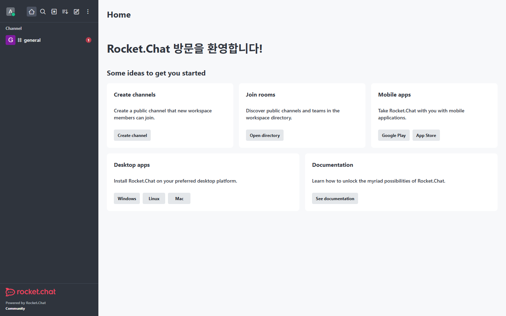
<figcaption aria-hidden="true">Rocket.Chat SSO 성공 결과</figcaption>
</figure>
<h3 data-number="10.2.2" id="대시보드-위젯-9종"><span
class="header-section-number">10.2.2</span> 2.2 대시보드 (위젯 9종)</h3>
<p>첫 로그인 시 기본 6 위젯 자동 시드. 우상단 <strong>편집</strong>
토글로 12-column CSS Grid 위에서 화살표 버튼(← → ↑ ↓ W± H±)으로
위치/크기 조정 + 위젯 추가/제거 [src: scenarios.md §22, PHASE14
§9.4].</p>
<p>위젯 카탈로그 9종 — <code>ATTENDANCE</code>(출퇴근) /
<code>LEAVE_BALANCE</code>(연차 Donut) /
<code>PENDING_APPROVAL</code>(미결 결재) /
<code>TODAY_EVENTS</code>(오늘 일정) / <code>NOTICES</code>(최근 공지) /
<code>MESSENGER_UNREAD</code>(메신저 DM) /
<code>MY_ROOMS</code>(다가오는 회의) / <code>TEAM_WORKLOG</code>(팀
업무일지) / <code>CHART_LEAVE_USAGE</code>(연차 사용 추이).</p>
<p>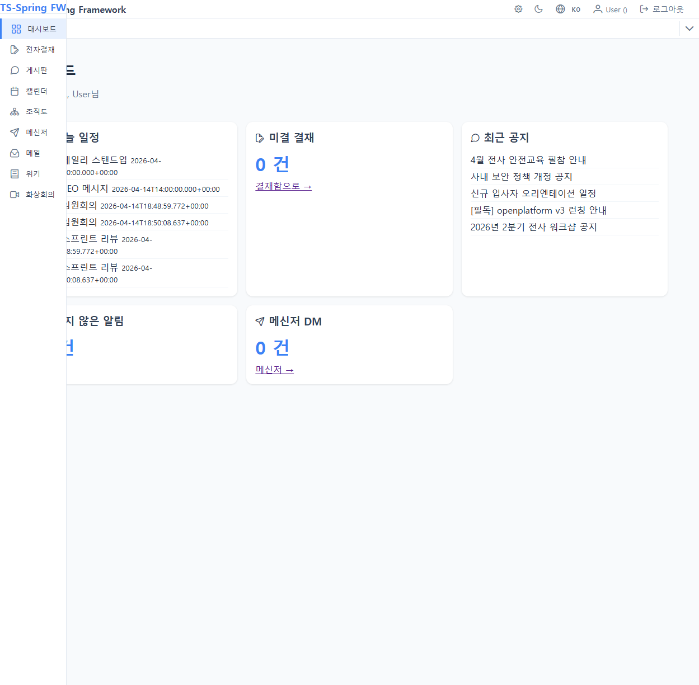 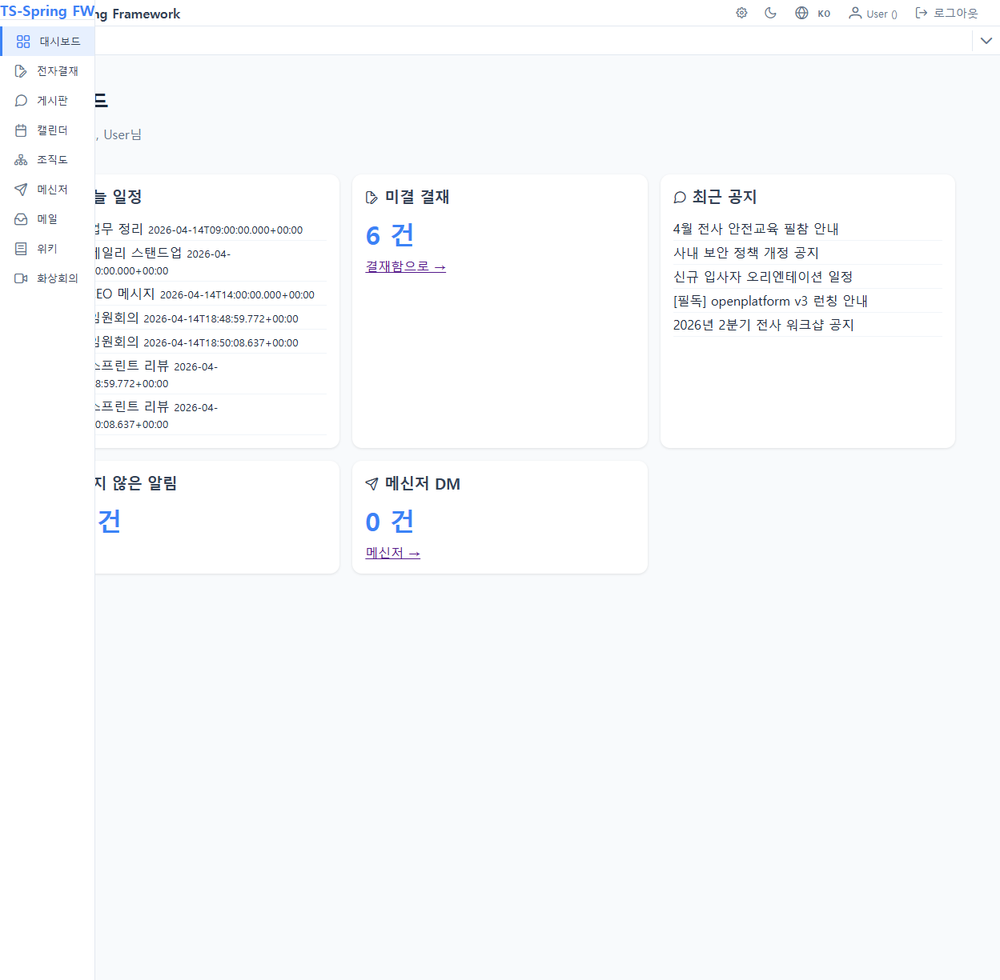</p>
<h3 data-number="10.2.3" id="메뉴별-기능-매핑"><span
class="header-section-number">10.2.3</span> 2.3 메뉴별 기능 매핑</h3>
<p><code>/approval</code> 9종 결재함·5액션·DMN /
<code>/attendance</code> 출퇴근·월별 hex grid / <code>/leave</code> 잔여
Donut·LEAVE 결재 연동 / <code>/room</code> FullCalendar·화상회의 자동 /
<code>/datalib</code> 폴더 트리·presigned / <code>/worklog</code>
본인+부서장 팀뷰 / <code>/calendar</code> 개인·부서·회사+LEAVE·Room 자동
/ <code>/video</code> LiveKit + view-only 폴백 / 메신저·메일·위키 = 외부
SSO.</p>
<hr />
<h2 data-number="10.3" id="결재-라이프사이클-사용자-시점"><span
class="header-section-number">10.3</span> 3. 결재 라이프사이클 (사용자
시점)</h2>
<p><code>PageApproval.vue</code> 는 9종 결재함 탭(내 대기함/내
진행함/완료함/반려함/회수함/대결함/공람함/임시저장/전체)을 가지며,
사용자는 한 화면에서 자신의 모든 문서를 확인합니다 [src: scenarios.md
§3-4, approval.md].</p>
<h3 data-number="10.3.1" id="상신-submit"><span
class="header-section-number">10.3.1</span> 3.1 상신 (Submit)</h3>
<ol type="1">
<li><strong>양식 선택</strong>: 품의/휴가(LEAVE)/지출/출장 중 1종</li>
<li><strong>폼 입력</strong>: WYSIWYG 본문 + 양식별 필드(휴가는
<code>leave_type</code>/<code>from_date</code>/<code>to_date</code>/<code>days</code>
자동 계산(주말 제외)/<code>reason</code>)</li>
<li><strong>DMN 자동 결재선 도출</strong> — 직책/금액 룰 기반</li>
<li><strong>파일 첨부</strong> — MinIO presigned PUT</li>
<li><strong>상신</strong> 버튼 → <code>ap_document</code> INSERT +
Flowable 프로세스 시작 + 결재자에게 SSE 알림 발송</li>
</ol>
<figure>
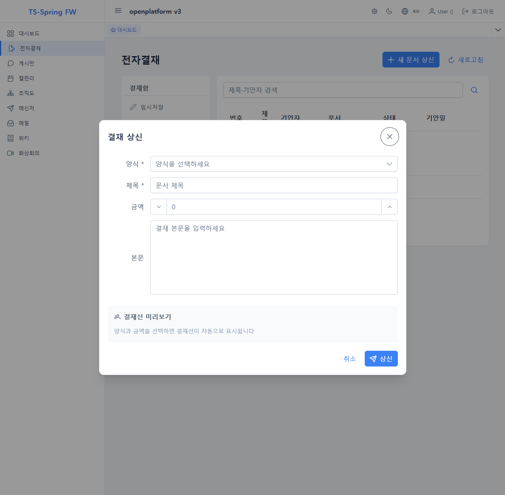
<figcaption aria-hidden="true">결재 제출 다이얼로그</figcaption>
</figure>
<h3 data-number="10.3.2" id="결재-approve-reject"><span
class="header-section-number">10.3.2</span> 3.2 결재 (Approve /
Reject)</h3>
<p>결재자는 <strong>내 대기함</strong> 탭에서 문서 클릭 →
본문/첨부/결재선 확인 → <strong>승인 / 반려 / 전결 / 대결 /
회수</strong> 5종 중 선택 → <code>ap_history</code> 자동 기록.</p>
<p>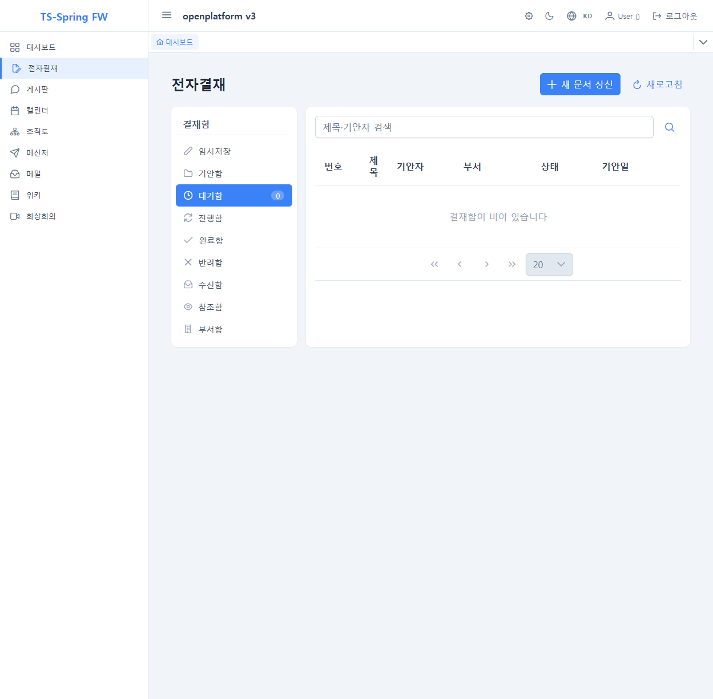 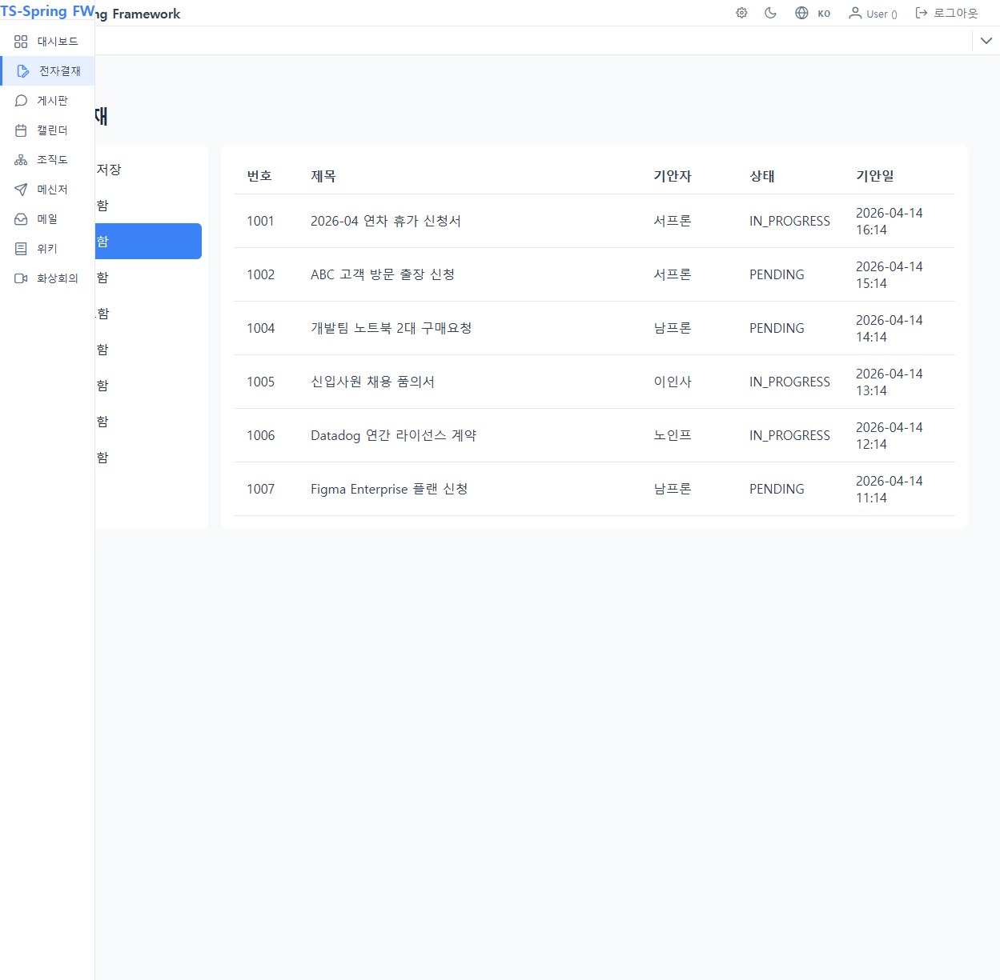</p>
<h3 data-number="10.3.3"
id="회수-recall-반려-reject-재기안-resubmit"><span
class="header-section-number">10.3.3</span> 3.3 회수 (Recall) → 반려
(Reject) → 재기안 (Resubmit)</h3>
<ul>
<li><strong>회수</strong>: 상신자가 첫 결재자 결재 전이라면 회수 가능 →
<code>ap_document.status='RECALLED'</code> → 임시저장으로 복귀</li>
<li><strong>반려</strong>: 결재자가 반려 시 → 상신자에게 SSE 알림 +
<code>ap_history.action='REJECT'</code> 기록</li>
<li><strong>재기안</strong>: 임시저장에서 본문 수정 후 재상신 → 새
doc_id 발급(이력 추적용 <code>parent_doc_id</code> 보유 가능)</li>
</ul>
<p>LEAVE 양식은 결재 승인 완료 시 <code>ApprovalCompleteDelegate</code>
(Flowable listener) 가 <code>LeaveService.onDocApproved</code> 를
호출하여 <strong>잔여 연차 자동 차감 + <code>at_attendance</code> 의
해당 일 status=‘LEAVE’ 자동 갱신</strong> 합니다 [src: PHASE14
§3.3].</p>
<hr />
<h2 data-number="10.4" id="근태-연차"><span
class="header-section-number">10.4</span> 4. 근태 / 연차</h2>
<h3 data-number="10.4.1" id="출퇴근-체크인아웃-attendance"><span
class="header-section-number">10.4.1</span> 4.1 출/퇴근 체크인·아웃
(<code>/attendance</code>)</h3>
<ul>
<li>상단 큰 <strong>출근</strong> 버튼 → <code>attendance/checkIn</code>
→ <code>at_attendance.check_in_at</code> 기록 → 페이지 갱신 시
<strong>퇴근</strong> 으로 라벨 변경</li>
<li>퇴근 시 <code>work_minutes</code> 자동 계산 + status
(NORMAL/LATE/EARLY) 결정 (회사 표준 출근 9시 기준)</li>
<li>월별 출근 시각화: 5×6 hex grid (출근=초록, 지각=노랑, 결근=빨강,
휴가=파랑, 공휴일=회색)</li>
<li>영업일 계산은 <code>cm_holiday</code> + 주말 제외 [src: scenarios.md
§16]</li>
</ul>
<h3 data-number="10.4.2" id="연차-신청-leave"><span
class="header-section-number">10.4.2</span> 4.2 연차 신청
(<code>/leave</code>)</h3>
<ul>
<li>상단 카드 3종(잔여/사용/총) —
<code>at_leave_balance.remaining</code> 의 GENERATED 컬럼</li>
<li><strong>휴가 신청</strong> 버튼 →
<code>ApprovalSubmitDialog (initialFormCode='LEAVE')</code> →
<code>leave_type</code> Dropdown(연차/오전반차/오후반차/병가/경조/무급)
+ <code>from-to</code> DatePicker + <code>days</code> 자동(반차=0.5) +
<code>reason</code></li>
<li>상신 시 <code>ApprovalService.submitDocument</code> 가
form_code=‘LEAVE’ 분기에서 <code>LeaveService.applyFromDoc</code> 자동
호출 → <code>at_leave_request</code> 와 <code>ap_document</code> 가 1:1
매핑</li>
<li>승인 완료 시 잔여일 차감 + 캘린더에 <code>L-{requestId}</code>
readonly 이벤트 자동 추가(초록) [src: scenarios.md §23]</li>
</ul>
<hr />
<h2 data-number="10.5" id="회의실-예약-room"><span
class="header-section-number">10.5</span> 5. 회의실 예약
(<code>/room</code>)</h2>
<p>좌측 회의실 목록(필터: 인원/장비/화상) + 우측 FullCalendar
<code>timeGridWeek</code> 빈 슬롯 클릭 → <code>BookingDialog.vue</code>
[src: scenarios.md §17, PHASE14 §4.4].</p>
<ul>
<li>충돌 검증: <code>room/checkConflict</code> 으로
<code>roomId × [start_at, end_at)</code> 겹침 사전 검사</li>
<li>통과 시 <code>rm_booking</code> INSERT (트랜잭션)</li>
<li><code>has_video=true</code> 회의실은 BFF
<code>LiveKitAdapter.createRoom</code> 자동 호출 → 룸 이름
<code>rm-{bookingId}</code> 자동 생성 (실패 시 view-only 폴백 — Phase
12.1 패턴 [src: PHASE14 §12])</li>
<li>참석자 each
<code>NotificationService.notifyByUserNo</code>(category=‘ROOM’)
호출</li>
<li>본인 캘린더에도 <code>cal_event</code> INSERT — 통합 캘린더 뷰에
주황 readonly <code>R-{bookingId}</code> 로 표시</li>
</ul>
<p>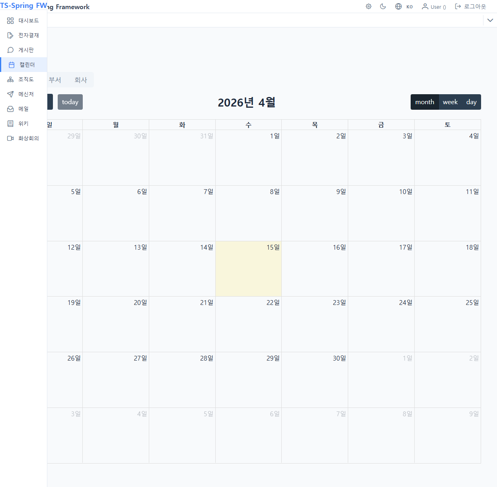 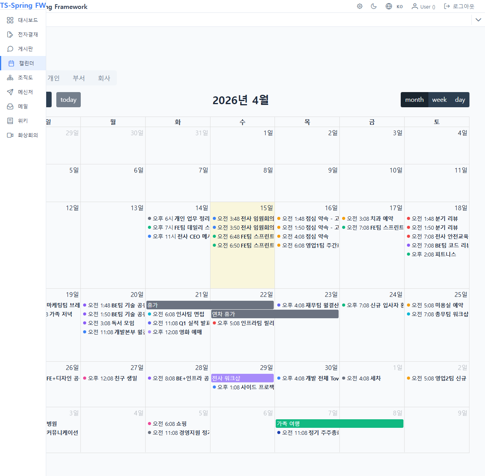</p>
<hr />
<h2 data-number="10.6" id="자료실-datalib"><span
class="header-section-number">10.6</span> 6. 자료실
(<code>/datalib</code>)</h2>
<p>좌측 폴더 트리(PrimeVue Tree) + 우측 파일 DataTable [src:
scenarios.md §18, PHASE14 §5.4].</p>
<ul>
<li><strong>폴더 scope 3종</strong>: COMPANY(전사) / DEPT(부서) /
PERSONAL(개인)</li>
<li>부서 폴더는 본인 부서만 RW, 외부 부서는 R
차단(<code>canAccessFolder</code> 헬퍼)</li>
<li>업로드: <code>FileUploadPanel.vue</code> 재사용 → MinIO presigned
PUT → <code>datalib/uploadMeta</code> 호출하여 <code>dl_file</code> 메타
INSERT</li>
<li>다운로드: <code>datalib/getDownloadUrl</code> → presigned GET 발급 +
<code>download_count++</code></li>
<li>우클릭 ContextMenu(<code>FolderActions.vue</code>): 이름 변경 / 삭제
/ 새 폴더 / 새 파일</li>
</ul>
<hr />
<h2 data-number="10.7" id="메신저-sso-rocket.chat"><span
class="header-section-number">10.7</span> 7. 메신저 SSO
(Rocket.Chat)</h2>
<p>Keycloak Custom OAuth Provider 가 Rocket.Chat 의 OAuth Service 로
등록되어, <strong>포탈 로그인 후 메신저 메뉴 클릭 시 추가 입력 없이 자동
로그인</strong> [src: scenarios.md §8, group_ware.md §Rocket.Chat].</p>
<p>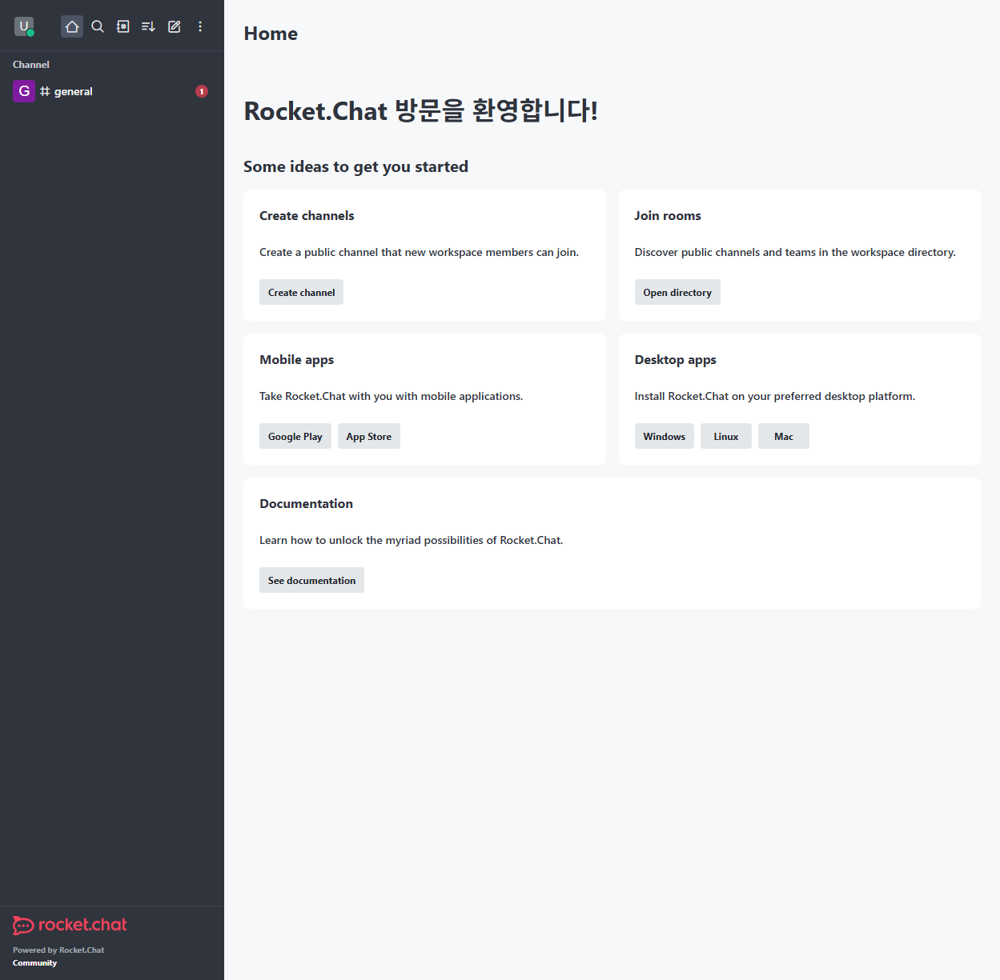 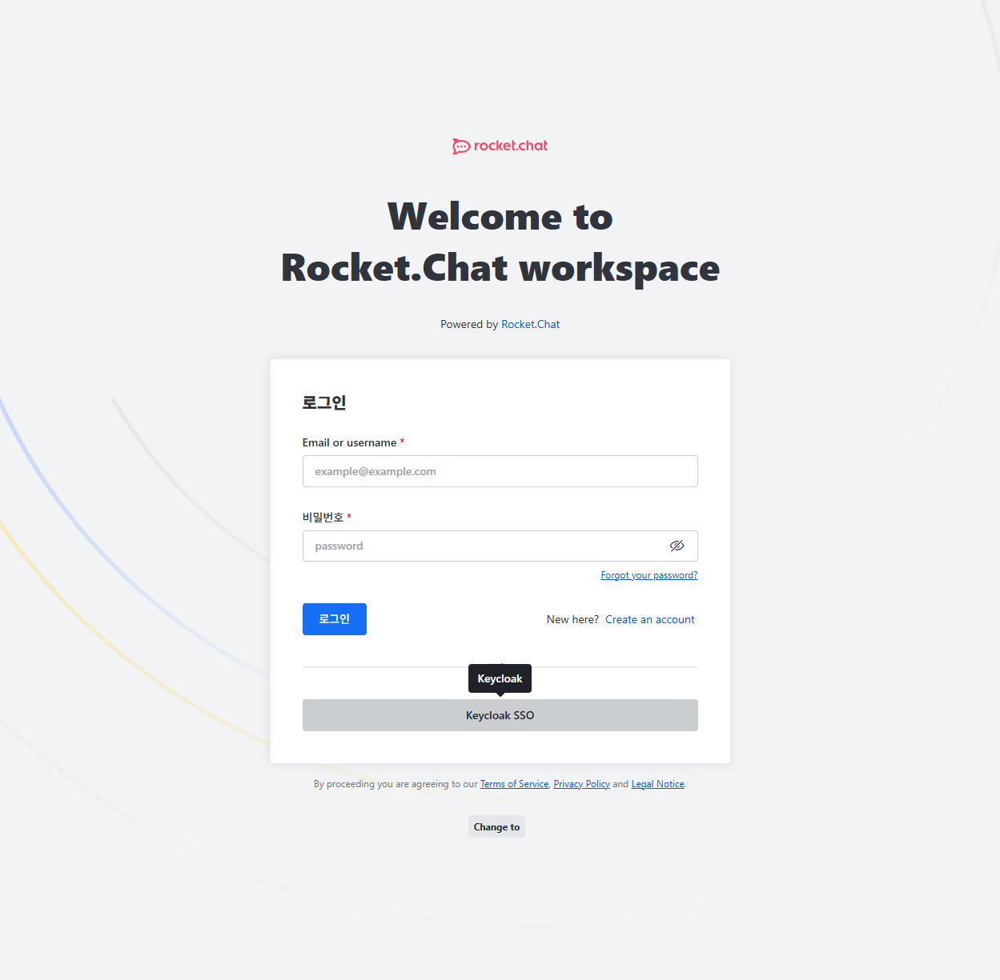</p>
<p>채널 목록 → 메시지 → DM → 파일 전송. 알림 카테고리
<code>MENTION</code> 의 <code>ux_notify_pref</code> 에서
<code>MESSENGER</code> 채널 enabled 시 백엔드가
<code>BffClient.sendNotificationDm</code> 으로 DM 발송 시도 (현재는 stub
— warn.md 기록) [src: PHASE14 §8.6 T6-3].</p>
<hr />
<h2 data-number="10.8" id="메일-stalwart-jmap-3단-레이아웃"><span
class="header-section-number">10.8</span> 8. 메일 (Stalwart JMAP 3단
레이아웃)</h2>
<p>Stalwart 메일 서버는 Keycloak LDAP Federation 으로 인증을
위임받습니다 [src: scenarios.md §9, group_ware.md §Stalwart].</p>
<ul>
<li><strong>3단 레이아웃</strong>: 좌(폴더 트리) + 중(메일 리스트) +
우(스레드 본문)</li>
<li>받은편지함 → 스레드 → 작성/임시저장/발송</li>
<li>알림용 시스템 메일은 BFF <code>/api/bff/mail/send</code> 로
backend-core 가 발송 (NotifyPref 의 EMAIL 채널 enabled 시) [src: PHASE14
§8.3]</li>
</ul>
<hr />
<h2 data-number="10.9" id="위키-wiki.js-게스트-자동-가입"><span
class="header-section-number">10.9</span> 9. 위키 (Wiki.js — 게스트 자동
가입)</h2>
<p>Wiki.js 의 OIDC SSO 가 Keycloak 와 연동되어, <strong>첫 로그인 시
사용자 계정이 Wiki.js 에 자동 프로비저닝</strong>됩니다 [src:
scenarios.md §10, group_ware.md §Wiki.js].</p>
<figure>
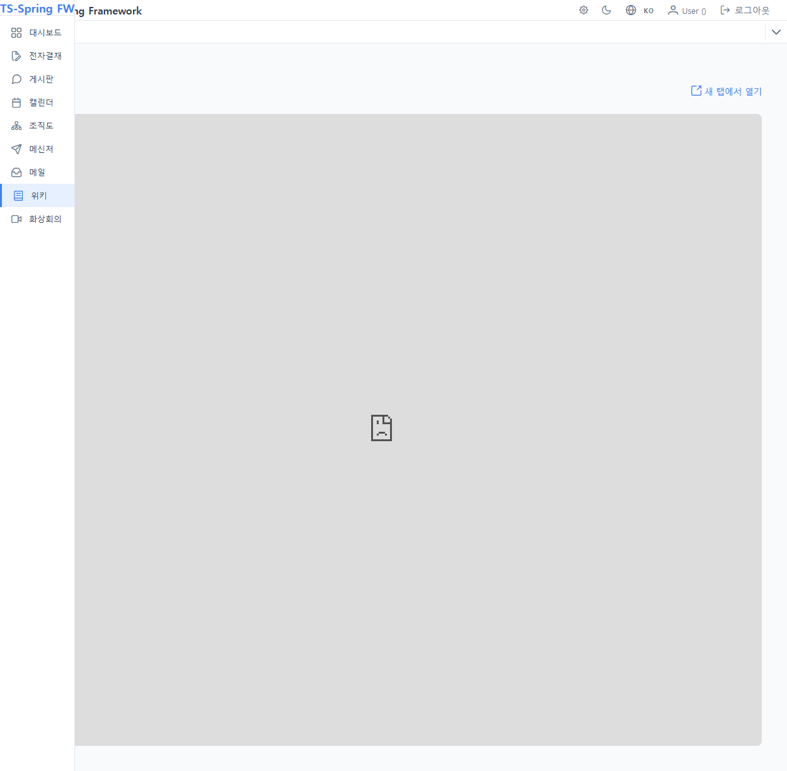
<figcaption aria-hidden="true">Wiki.js SSO 화면</figcaption>
</figure>
<p>페이지 탐색 → 편집(Markdown/WYSIWYG) → 히스토리 diff. 외부 게스트는
OIDC <code>roles</code> claim 에 <code>wiki-guest</code> 가 매핑되어
읽기 전용 또는 특정 namespace 한정 편집을 부여받습니다.</p>
<hr />
<h2 data-number="10.10" id="화상회의-livekit-view-only-폴백"><span
class="header-section-number">10.10</span> 10. 화상회의 (LiveKit +
view-only 폴백)</h2>
<p>회의 생성 → 참가자 초대 → 룸 입장 → 화면 공유 [src: scenarios.md
§11]. BFF <code>/api/bff/video/token</code> POST 로 LiveKit JWT 발급 →
WebSocket <code>wss://...:19880</code> (101 Switching Protocols) → ICE
<code>connected</code> 도달 시 자기 비디오 + 상대 RemoteTrack 수신.</p>
<p><strong>헤드리스 Playwright 자동 검증 불가</strong> — 카메라/마이크
디바이스 부재로 Phase 12 F-8 에서 수동 검증 가이드 별도 작성 [src:
docs/video-manual-check.md]. LiveKit 룸 자동 생성 실패 시
<code>view-only</code> 폴백 (Phase 12.1 패턴) — 예약은 성공, 화상은 입장
시 재시도 [src: PHASE14 §12].</p>
<p>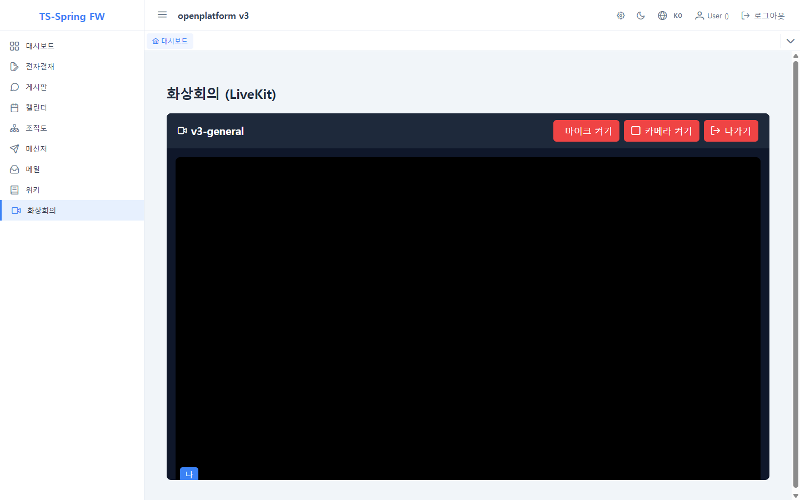 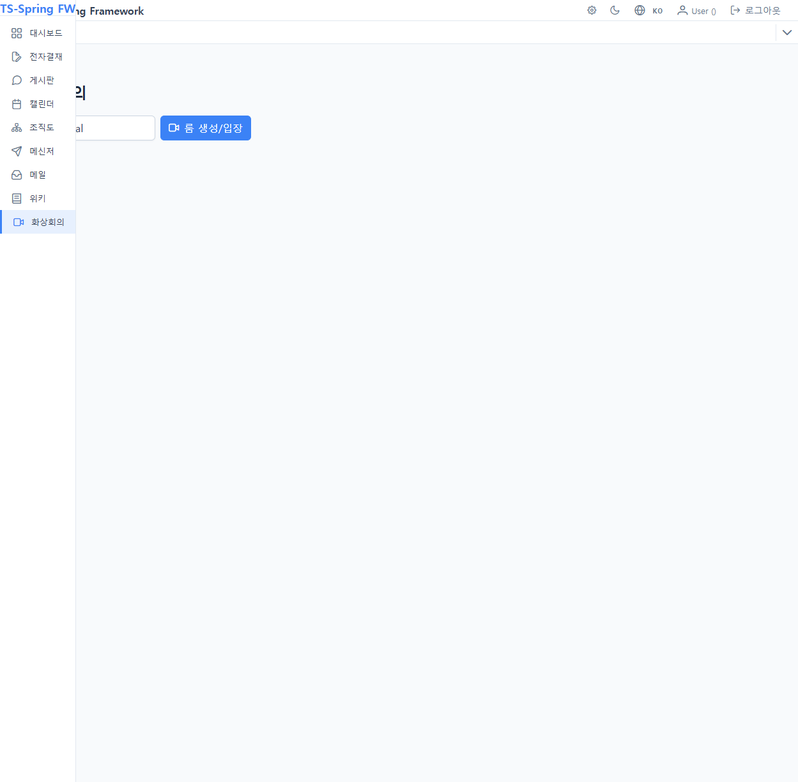</p>
<p>수동 검증 통과 기준 (5종): token 200, WS 101, ICE connected, video
readyState≥2, RemoteTrack 수신.</p>
<hr />
<h2 data-number="10.11" id="모바일-호환성-미적용-솔직-진술"><span
class="header-section-number">10.11</span> 11. 모바일 호환성 — 미적용
솔직 진술</h2>
<p><strong>현재 Phase 14 시점에서 모바일 전용 반응형 UI 는 적용되지
않았습니다.</strong> 의도적으로 우선순위에서 제외:</p>
<ul>
<li>PrimeVue 4 의 일부 컴포넌트(FullCalendar, Tree+DataTable 동시 노출,
결재 9탭)는 데스크탑(≥1280px) 가정 설계</li>
<li>위젯 시스템(트랙 7)의 12-column CSS Grid 는 모바일 1-column 자동
스택 미구현</li>
<li>메신저/메일/위키/화상회의 외부 서비스는 각각 자체 모바일
앱(Rocket.Chat / IMAP 클라이언트 / Wiki.js PWA / LiveKit Mobile SDK)
으로 우회 가능</li>
</ul>
<p><strong>권장 사용 환경</strong>: 데스크탑 Chrome / Edge / Firefox
최신 (해상도 1280×800 이상). 모바일·PWA 는 본 챕터 작성 시점에서
<strong>로드맵에 미반영</strong>.</p>
<hr />
<h2 data-number="10.12" id="참조-14"><span
class="header-section-number">10.12</span> 12. 참조</h2>
<ul>
<li><code>docs/scenarios.md</code> — 시나리오 1~23 (Phase 0~13 15종 +
Phase 14 8종)</li>
<li><code>docs/PHASE14_PRODUCTION_GROUPWARE.md</code> — 8 트랙 사용자
기능 명세</li>
<li><code>docs/video-manual-check.md</code> — LiveKit 수동 검증 5분
가이드 (F-8)</li>
<li><code>docs/group_ware.md</code> — 외부 5개 서비스 API 매뉴얼</li>
<li><code>docs/approval.md</code> — 결재 도메인 + PageApproval.vue
덤프</li>
<li><code>docs/comprehensive/inventory/00_existing_artifacts.md</code>
§4 — 32개 스크린샷 분류</li>
<li>루트 PNG (32개) — placeholder, PDF 빌드 단계에서 실제 인라인</li>
</ul>
<hr />
<h2 data-number="10.13" id="이-챕터가-다루지-않은-인접-주제-13"><span
class="header-section-number">10.13</span> 13. 이 챕터가 다루지 않은
인접 주제</h2>
<p>본 챕터는 <strong>사용자 시점의 화면 흐름</strong> 만 다룹니다. 인접
주제는 별도 챕터:</p>
<ul>
<li>운영자 일상 운영(모니터링/백업/Flyway/시드) → Chapter 1.17 운영
매뉴얼</li>
<li>장애·이상 동작 대응(warn.md/fatal.md, 5회 자율 복구) → Chapter 1.18
트러블슈팅</li>
<li>신규 메뉴/페이지 추가 절차(cm_menu INSERT, useDataSet, 권한
매트릭스) → Chapter 1.19 개발 가이드</li>
<li>백엔드 DataSet 서비스 사양(95개 service I/O) → Chapter 1.5 API &amp;
통신</li>
<li>Keycloak Federation 5종 SSO 동작 원리(PKCE, OIDC claim, LDAP
Federation) → Chapter 1.5 / 1.3</li>
<li>컴포넌트 재사용 규칙(vue-spring-fw 정적 복사) → Chapter 1.6</li>
<li>Playwright MCP 시나리오 14종 자동화 → Chapter 1.14 테스트</li>
<li>모바일·PWA 로드맵 — 미수립 (§11 솔직 진술로 갈음)</li>
</ul>
<div style="page-break-before: always;">

</div>
<h1 data-number="11"
id="chapter-1.17-운영-매뉴얼-operations-manual"><span
class="header-section-number">11</span> Chapter 1.17: 운영 매뉴얼
(Operations Manual)</h1>
<p>본 챕터는 openplatform_v3 (50명 규모 통합 그룹웨어 — Phase 14 완료)
운영자용 단계별 명령어 카탈로그다. 작업 루트는
<code>C:/claude/openplatform_v3</code> 이며, 모든 명령어는 bash (Git
Bash / WSL 호환).</p>
<blockquote>
<p>출처: <code>scripts/start.sh</code>, <code>scripts/backup.sh</code>,
<code>scripts/restore.sh</code>, <code>scripts/security-scan.sh</code>,
<code>scripts/perf-scan.sh</code>,
<code>infra/docker-compose.cron.yml</code>,
<code>infra/docker-compose.healthcheck.yml</code>,
<code>infra/docker-compose.observability.yml</code>,
<code>docs/PHASE14_REPORT.md</code>.</p>
</blockquote>
<hr />
<h2 data-number="11.1" id="클린-설치"><span
class="header-section-number">11.1</span> 1. 클린 설치</h2>
<div class="sourceCode" id="cb78"><pre
class="sourceCode bash"><code class="sourceCode bash"><span id="cb78-1"><a href="#cb78-1" aria-hidden="true" tabindex="-1"></a><span class="fu">git</span> clone <span class="op">&lt;</span>repo-url<span class="op">&gt;</span> openplatform_v3 <span class="kw">&amp;&amp;</span> <span class="bu">cd</span> openplatform_v3</span>
<span id="cb78-2"><a href="#cb78-2" aria-hidden="true" tabindex="-1"></a><span class="ex">docker</span> version</span>
<span id="cb78-3"><a href="#cb78-3" aria-hidden="true" tabindex="-1"></a><span class="fu">bash</span> scripts/start.sh full              <span class="co"># base + healthcheck + resources</span></span>
<span id="cb78-4"><a href="#cb78-4" aria-hidden="true" tabindex="-1"></a><span class="fu">bash</span> scripts/start.sh status            <span class="co"># 8 서비스 healthy 대기</span></span>
<span id="cb78-5"><a href="#cb78-5" aria-hidden="true" tabindex="-1"></a><span class="fu">bash</span> scripts/start.sh init-mongo        <span class="co"># Rocket.Chat 최초 1회</span></span>
<span id="cb78-6"><a href="#cb78-6" aria-hidden="true" tabindex="-1"></a><span class="ex">docker</span> exec v3-postgres psql <span class="at">-U</span> platform_v3 <span class="at">-d</span> platform_v3 <span class="dt">\</span></span>
<span id="cb78-7"><a href="#cb78-7" aria-hidden="true" tabindex="-1"></a>  <span class="at">-c</span> <span class="st">&quot;select version, success from flyway_schema_history order by installed_rank desc limit 5&quot;</span></span>
<span id="cb78-8"><a href="#cb78-8" aria-hidden="true" tabindex="-1"></a><span class="co"># UI: http://localhost:19173/  (admin/admin → 즉시 변경)</span></span></code></pre></div>
<p>기동 모드 (출처: <code>scripts/start.sh</code>): <code>dev</code>
(base only) / <code>full</code> (+healthcheck+resources, 기본) /
<code>observability</code> (+Loki/Grafana/Prometheus) /
<code>traefik</code> (+리버스 프록시) / <code>production</code> (전체 +
cron).</p>
<hr />
<h2 data-number="11.2" id="업그레이드"><span
class="header-section-number">11.2</span> 2. 업그레이드</h2>
<div class="sourceCode" id="cb79"><pre
class="sourceCode bash"><code class="sourceCode bash"><span id="cb79-1"><a href="#cb79-1" aria-hidden="true" tabindex="-1"></a><span class="fu">bash</span> scripts/backup.sh                  <span class="co"># 백업 먼저 (필수)</span></span>
<span id="cb79-2"><a href="#cb79-2" aria-hidden="true" tabindex="-1"></a><span class="fu">git</span> pull <span class="at">--rebase</span></span>
<span id="cb79-3"><a href="#cb79-3" aria-hidden="true" tabindex="-1"></a><span class="fu">ls</span> backend-core/src/main/resources/db/migration/V<span class="pp">*</span>.sql <span class="kw">|</span> <span class="fu">sort</span>   <span class="co"># V18__*.sql 충돌 확인</span></span>
<span id="cb79-4"><a href="#cb79-4" aria-hidden="true" tabindex="-1"></a></span>
<span id="cb79-5"><a href="#cb79-5" aria-hidden="true" tabindex="-1"></a><span class="ex">docker</span> compose <span class="at">-f</span> infra/docker-compose.yml <span class="at">-f</span> infra/docker-compose.healthcheck.yml <span class="dt">\</span></span>
<span id="cb79-6"><a href="#cb79-6" aria-hidden="true" tabindex="-1"></a>  build backend-core backend-bff ui-frontend</span>
<span id="cb79-7"><a href="#cb79-7" aria-hidden="true" tabindex="-1"></a><span class="fu">bash</span> scripts/start.sh stop <span class="kw">&amp;&amp;</span> <span class="fu">bash</span> scripts/start.sh full         <span class="co"># Flyway 가 자동 적용</span></span>
<span id="cb79-8"><a href="#cb79-8" aria-hidden="true" tabindex="-1"></a></span>
<span id="cb79-9"><a href="#cb79-9" aria-hidden="true" tabindex="-1"></a><span class="ex">docker</span> exec v3-postgres psql <span class="at">-U</span> platform_v3 <span class="at">-d</span> platform_v3 <span class="dt">\</span></span>
<span id="cb79-10"><a href="#cb79-10" aria-hidden="true" tabindex="-1"></a>  <span class="at">-c</span> <span class="st">&quot;select version, description, success from flyway_schema_history order by installed_rank desc&quot;</span></span></code></pre></div>
<p>마이그레이션 실패 시 Phase 14 V12 사례처럼
<code>flyway_schema_history</code> 의 <code>success=false</code> row 를
백업 후 삭제하고 SQL 보정 후 재기동 (출처: PHASE14_REPORT.md §4).</p>
<hr />
<h2 data-number="11.3" id="백업복구"><span
class="header-section-number">11.3</span> 3. 백업·복구</h2>
<h3 data-number="11.3.1" id="백업-scriptsbackup.sh"><span
class="header-section-number">11.3.1</span> 3.1 백업 —
<code>scripts/backup.sh</code></h3>
<div class="sourceCode" id="cb80"><pre
class="sourceCode bash"><code class="sourceCode bash"><span id="cb80-1"><a href="#cb80-1" aria-hidden="true" tabindex="-1"></a><span class="fu">bash</span> scripts/backup.sh</span>
<span id="cb80-2"><a href="#cb80-2" aria-hidden="true" tabindex="-1"></a><span class="co"># 결과: backups/v3-YYYYMMDD-HHMMSS.tar.gz + backup-*.log</span></span></code></pre></div>
<p>6 도메인 (출처: <code>scripts/backup.sh</code>):</p>
<table>
<colgroup>
<col style="width: 25%" />
<col style="width: 25%" />
<col style="width: 25%" />
<col style="width: 25%" />
</colgroup>
<thead>
<tr>
<th>#</th>
<th>컨테이너</th>
<th>명령</th>
<th>산출물</th>
</tr>
</thead>
<tbody>
<tr>
<td>1</td>
<td>v3-postgres</td>
<td><code>pg_dumpall -U platform_v3</code></td>
<td><code>postgres-dumpall.sql</code></td>
</tr>
<tr>
<td>2</td>
<td>v3-minio</td>
<td><code>mc mirror</code></td>
<td><code>minio/</code></td>
</tr>
<tr>
<td>3</td>
<td>v3-keycloak</td>
<td><code>kc.sh export --realm openplatform-v3 --users realm_file</code></td>
<td><code>keycloak/</code></td>
</tr>
<tr>
<td>4</td>
<td>v3-openldap</td>
<td><code>ldapsearch -b dc=v3,dc=local</code></td>
<td><code>ldap-dump.ldif</code></td>
</tr>
<tr>
<td>5</td>
<td>v3-mongo</td>
<td><code>mongodump --archive --db=rocketchat</code></td>
<td><code>rocketchat-mongo.archive</code></td>
</tr>
<tr>
<td>6</td>
<td>v3-wikijs</td>
<td><code>docker cp /wiki/db.sqlite</code></td>
<td><code>wikijs-db.sqlite</code></td>
</tr>
</tbody>
</table>
<p>각 단계 실패 시 <code>warn</code> 로그 후 계속. 컨테이너 부재 시 자동
스킵.</p>
<h3 data-number="11.3.2" id="복구-scriptsrestore.sh"><span
class="header-section-number">11.3.2</span> 3.2 복구 —
<code>scripts/restore.sh</code></h3>
<div class="sourceCode" id="cb81"><pre
class="sourceCode bash"><code class="sourceCode bash"><span id="cb81-1"><a href="#cb81-1" aria-hidden="true" tabindex="-1"></a><span class="ex">docker</span> stop v3-backend-core v3-backend-bff</span>
<span id="cb81-2"><a href="#cb81-2" aria-hidden="true" tabindex="-1"></a><span class="fu">bash</span> scripts/restore.sh backups/v3-20260427-030000.tar.gz</span>
<span id="cb81-3"><a href="#cb81-3" aria-hidden="true" tabindex="-1"></a><span class="ex">docker</span> compose <span class="at">-f</span> infra/docker-compose.yml restart <span class="dt">\</span></span>
<span id="cb81-4"><a href="#cb81-4" aria-hidden="true" tabindex="-1"></a>  v3-keycloak v3-wikijs v3-backend-core v3-backend-bff</span></code></pre></div>
<p>복원 순서: tar 해제 → backend 중단 확인(5s) → Postgres
<code>psql -U postgres</code> → MinIO <code>mc mirror</code> 역방향 →
Keycloak <code>kc.sh import --override true</code> → OpenLDAP
<code>ldapadd -c</code> → Mongo
<code>mongorestore --archive --drop</code> → Wiki.js sqlite cp.</p>
<blockquote>
<p>위험: 기존 데이터 덮어씀. 운영에서는 복원 직전 추가 백업 1회
권장.</p>
</blockquote>
<hr />
<h2 data-number="11.4" id="헬스체크-8-서비스"><span
class="header-section-number">11.4</span> 4. 헬스체크 (8 서비스)</h2>
<p><code>infra/docker-compose.healthcheck.yml</code> 컨테이너별
명령:</p>
<table>
<colgroup>
<col style="width: 50%" />
<col style="width: 50%" />
</colgroup>
<thead>
<tr>
<th>서비스</th>
<th>명령 (interval × retries, start)</th>
</tr>
</thead>
<tbody>
<tr>
<td>keycloak</td>
<td><code>cat /proc/1/cmdline \| grep -q keycloak</code> (30s×5,
60s)</td>
</tr>
<tr>
<td>mongo</td>
<td><code>mongosh --eval "db.adminCommand('ping').ok"</code> (20s×10,
20s)</td>
</tr>
<tr>
<td>rocketchat</td>
<td><code>node -e "http.get(localhost:3000/api/info)"</code> (20s×15,
90s)</td>
</tr>
<tr>
<td>wikijs</td>
<td><code>node -e "http.get(localhost:3000/, status&lt;500)"</code>
(20s×15, 60s)</td>
</tr>
<tr>
<td>stalwart</td>
<td><code>cat /proc/1/cmdline \| grep -q stalwart</code> (30s×5,
60s)</td>
</tr>
<tr>
<td>openldap / livekit</td>
<td><code>pgrep slapd</code> / <code>pgrep livekit-server</code></td>
</tr>
<tr>
<td>backend-core/bff</td>
<td><code>wget -qO- localhost:8080/actuator/health \| grep UP</code>
(20s×20)</td>
</tr>
<tr>
<td>ui-frontend</td>
<td><code>nginx -t \| grep successful</code> (30s×5, 15s)</td>
</tr>
</tbody>
</table>
<div class="sourceCode" id="cb82"><pre
class="sourceCode bash"><code class="sourceCode bash"><span id="cb82-1"><a href="#cb82-1" aria-hidden="true" tabindex="-1"></a><span class="fu">bash</span> scripts/start.sh status</span>
<span id="cb82-2"><a href="#cb82-2" aria-hidden="true" tabindex="-1"></a><span class="cf">for</span> c <span class="kw">in</span> <span class="va">$(</span><span class="ex">docker</span> ps <span class="at">--filter</span> name=v3- <span class="at">--format</span> <span class="st">&#39;{{.Names}}&#39;</span><span class="va">)</span><span class="kw">;</span> <span class="cf">do</span></span>
<span id="cb82-3"><a href="#cb82-3" aria-hidden="true" tabindex="-1"></a>  <span class="ex">docker</span> inspect <span class="at">--format</span> <span class="st">&#39;{{.Name}} {{.State.Health.Status}}&#39;</span> <span class="st">&quot;</span><span class="va">$c</span><span class="st">&quot;</span><span class="kw">;</span> <span class="cf">done</span></span></code></pre></div>
<p>Phase 14 검증: postgres / redis / keycloak / core / bff / ui 6
컨테이너 healthy + UI HTTP 200 (출처: PHASE14_REPORT.md §4).</p>
<hr />
<h2 data-number="11.5" id="정기-작업-cron"><span
class="header-section-number">11.5</span> 5. 정기 작업 (Cron)</h2>
<p><code>infra/docker-compose.cron.yml</code> —
<code>mcuadros/ofelia</code> 가 docker socket 으로 컨테이너 명령을
스케줄. 기본 작업 1건:</p>
<div class="sourceCode" id="cb83"><pre
class="sourceCode yaml"><code class="sourceCode yaml"><span id="cb83-1"><a href="#cb83-1" aria-hidden="true" tabindex="-1"></a><span class="fu">ofelia.job-exec.backup-postgres.schedule</span><span class="kw">:</span><span class="at"> </span><span class="st">&quot;0 0 3 * * *&quot;</span><span class="co">   # 매일 03:00</span></span>
<span id="cb83-2"><a href="#cb83-2" aria-hidden="true" tabindex="-1"></a><span class="fu">ofelia.job-exec.backup-postgres.container</span><span class="kw">:</span><span class="at"> </span><span class="st">&quot;v3-postgres&quot;</span></span>
<span id="cb83-3"><a href="#cb83-3" aria-hidden="true" tabindex="-1"></a><span class="fu">ofelia.job-exec.backup-postgres.command</span><span class="kw">:</span></span>
<span id="cb83-4"><a href="#cb83-4" aria-hidden="true" tabindex="-1"></a><span class="at">  </span><span class="st">&quot;sh -c &#39;pg_dumpall -U platform_v3 &gt; /tmp/backup-$(date +%Y%m%d).sql&#39;&quot;</span></span></code></pre></div>
<div class="sourceCode" id="cb84"><pre
class="sourceCode bash"><code class="sourceCode bash"><span id="cb84-1"><a href="#cb84-1" aria-hidden="true" tabindex="-1"></a><span class="ex">docker</span> compose <span class="at">-f</span> infra/docker-compose.yml <span class="at">-f</span> infra/docker-compose.cron.yml up <span class="at">-d</span> ofelia</span>
<span id="cb84-2"><a href="#cb84-2" aria-hidden="true" tabindex="-1"></a><span class="ex">docker</span> compose <span class="at">-f</span> infra/docker-compose.yml <span class="at">-f</span> infra/docker-compose.cron.yml <span class="dt">\</span></span>
<span id="cb84-3"><a href="#cb84-3" aria-hidden="true" tabindex="-1"></a>  <span class="at">--profile</span> backup run <span class="at">--rm</span> backup-runner       <span class="co"># 단발 백업</span></span></code></pre></div>
<p>권장 추가: 일일 full 백업 (host cron
<code>bash scripts/backup.sh</code> <span class="citation"
data-cites="03:00">@03:00</span>) / <code>sa_audit</code> 180일 보존
(<span class="citation" data-cites="04:00">@04:00</span>) / 주간 통계
(Mon 08:00, <code>/internal/report/weekly</code>).</p>
<hr />
<h2 data-number="11.6" id="보안-스캔"><span
class="header-section-number">11.6</span> 6. 보안 스캔</h2>
<div class="sourceCode" id="cb85"><pre
class="sourceCode bash"><code class="sourceCode bash"><span id="cb85-1"><a href="#cb85-1" aria-hidden="true" tabindex="-1"></a><span class="fu">bash</span> scripts/security-scan.sh                       <span class="co"># 기본 BASE_URL=http://localhost:19090</span></span>
<span id="cb85-2"><a href="#cb85-2" aria-hidden="true" tabindex="-1"></a><span class="fu">bash</span> scripts/security-scan.sh https://api.v3.local  <span class="co"># 운영</span></span>
<span id="cb85-3"><a href="#cb85-3" aria-hidden="true" tabindex="-1"></a><span class="co"># 결과: reports/security-YYYYMMDD-HHMMSS.txt</span></span></code></pre></div>
<p>4 단계 (출처: <code>scripts/security-scan.sh</code>):</p>
<ol type="1">
<li><strong><code>npm audit --audit-level=moderate</code></strong> (ui/)
— moderate 이상.</li>
<li><strong><code>mvn dependency:analyze</code></strong> (backend-core,
backend-bff) — 미사용/누락.</li>
<li><strong>이미지 CVE</strong> — <code>trivy</code> 우선, 없으면
<code>docker scout cves</code>. 대상: minio, keycloak, rocketchat, wiki.
severity HIGH·CRITICAL.</li>
<li><strong>인증 우회</strong> — <code>curl -w "%{http_code}"</code> 로:
<ul>
<li>보호 (401 기대): <code>/api/admin/users</code>,
<code>/api/admin/codes</code>, <code>/api/dataset/private</code>,
<code>/actuator/env</code>, <code>/actuator/loggers</code></li>
<li>공개 (200 기대): <code>/actuator/health</code>,
<code>/api/i18n/ko</code></li>
</ul></li>
</ol>
<p>결과 해석: - <code>[FAIL]</code> 보호 → 401 이외: SecurityConfig
누락. 즉시 차단. - <code>[FAIL]</code> 공개 → 401: permitAll 누락. - npm
<code>high</code>/<code>critical</code> ≥ 1: <code>npm audit fix</code>
후 재실행.</p>
<hr />
<h2 data-number="11.7" id="성능-스캔"><span
class="header-section-number">11.7</span> 7. 성능 스캔</h2>
<div class="sourceCode" id="cb86"><pre
class="sourceCode bash"><code class="sourceCode bash"><span id="cb86-1"><a href="#cb86-1" aria-hidden="true" tabindex="-1"></a><span class="fu">bash</span> scripts/perf-scan.sh</span>
<span id="cb86-2"><a href="#cb86-2" aria-hidden="true" tabindex="-1"></a><span class="co"># 결과: reports/perf-YYYYMMDD-HHMMSS.txt — avg/min/max/success/fail (10회 반복)</span></span></code></pre></div>
<p>기본 측정 대상:</p>
<pre><code>/actuator/health
/api/dataset/search?q=public&amp;size=10
/api/codes
/api/i18n/ko</code></pre>
<p>권장 임계:</p>
<table>
<thead>
<tr>
<th>엔드포인트</th>
<th style="text-align: right;">avg 목표</th>
<th>경고</th>
</tr>
</thead>
<tbody>
<tr>
<td><code>/actuator/health</code></td>
<td style="text-align: right;">≤ 50ms</td>
<td>&gt; 200ms 면 GC/풀 점검</td>
</tr>
<tr>
<td><code>/api/dataset/search</code></td>
<td style="text-align: right;">≤ 300ms</td>
<td>&gt; 800ms 면 인덱스 누락</td>
</tr>
<tr>
<td><code>/api/codes</code></td>
<td style="text-align: right;">≤ 100ms</td>
<td>&gt; 300ms 면 캐시 미스</td>
</tr>
<tr>
<td><code>/api/i18n/ko</code></td>
<td style="text-align: right;">≤ 100ms</td>
<td>&gt; 300ms 면 정적 캐시 점검</td>
</tr>
</tbody>
</table>
<hr />
<h2 data-number="11.8" id="장애-대응-시나리오"><span
class="header-section-number">11.8</span> 8. 장애 대응 시나리오</h2>
<p><strong>(a) PostgreSQL 다운</strong> — backend-core/bff
<code>/actuator/health</code> DOWN. 우회 없음 (전 시스템 정지).</p>
<div class="sourceCode" id="cb88"><pre
class="sourceCode bash"><code class="sourceCode bash"><span id="cb88-1"><a href="#cb88-1" aria-hidden="true" tabindex="-1"></a><span class="ex">docker</span> logs v3-postgres <span class="at">--tail</span> 200</span>
<span id="cb88-2"><a href="#cb88-2" aria-hidden="true" tabindex="-1"></a><span class="ex">docker</span> compose <span class="at">-f</span> infra/docker-compose.yml restart postgres</span>
<span id="cb88-3"><a href="#cb88-3" aria-hidden="true" tabindex="-1"></a><span class="co"># 디스크 손상: docker stop v3-postgres &amp;&amp; bash scripts/restore.sh backups/v3-LATEST.tar.gz</span></span></code></pre></div>
<p><strong>(b) Keycloak 다운 → SSO 전부 실패</strong> —
<code>/api/auth/*</code> 401, 신규 로그인 차단. 기존 JWT 만료 전까지
동작은 유지.</p>
<div class="sourceCode" id="cb89"><pre
class="sourceCode bash"><code class="sourceCode bash"><span id="cb89-1"><a href="#cb89-1" aria-hidden="true" tabindex="-1"></a><span class="ex">docker</span> logs v3-keycloak <span class="at">--tail</span> 200</span>
<span id="cb89-2"><a href="#cb89-2" aria-hidden="true" tabindex="-1"></a><span class="ex">docker</span> compose <span class="at">-f</span> infra/docker-compose.yml restart keycloak</span>
<span id="cb89-3"><a href="#cb89-3" aria-hidden="true" tabindex="-1"></a><span class="co"># realm 손상: kc.sh import --dir /tmp/kc-restore --override true → restart</span></span></code></pre></div>
<p><strong>(c) MinIO 다운 → 업/다운로드 실패</strong> —
<code>/api/datalib/*</code> presigned URL 발급 실패. 첨부파일 차단. 결재
본문은 정상.</p>
<div class="sourceCode" id="cb90"><pre
class="sourceCode bash"><code class="sourceCode bash"><span id="cb90-1"><a href="#cb90-1" aria-hidden="true" tabindex="-1"></a><span class="ex">docker</span> logs v3-minio <span class="at">--tail</span> 200</span>
<span id="cb90-2"><a href="#cb90-2" aria-hidden="true" tabindex="-1"></a><span class="ex">docker</span> compose <span class="at">-f</span> infra/docker-compose.yml restart minio</span>
<span id="cb90-3"><a href="#cb90-3" aria-hidden="true" tabindex="-1"></a><span class="ex">docker</span> exec v3-minio mc admin info local</span></code></pre></div>
<p><strong>(d) Rocket.Chat 다운 → 메신저 실패</strong> —
<code>/messenger</code> iframe 실패. 알림 MESSENGER 채널만 영향,
<strong>PORTAL/EMAIL 정상</strong> (NotificationService 가 sendDm 실패
시 debug 로그 + PORTAL fallback — 출처: PHASE14_REPORT.md §3 트랙
6).</p>
<div class="sourceCode" id="cb91"><pre
class="sourceCode bash"><code class="sourceCode bash"><span id="cb91-1"><a href="#cb91-1" aria-hidden="true" tabindex="-1"></a><span class="ex">docker</span> logs v3-rocketchat <span class="at">--tail</span> 200<span class="kw">;</span> <span class="ex">docker</span> logs v3-mongo <span class="at">--tail</span> 200</span>
<span id="cb91-2"><a href="#cb91-2" aria-hidden="true" tabindex="-1"></a><span class="ex">docker</span> compose <span class="at">-f</span> infra/docker-compose.yml restart mongo rocketchat</span></code></pre></div>
<hr />
<h2 data-number="11.9" id="롤링-배포"><span
class="header-section-number">11.9</span> 9. 롤링 배포</h2>
<p>현재 단일 노드 (<code>v3-net</code>) 1 instance 기동. <strong>무중단
배포는 Phase 15+ 권장.</strong></p>
<p>단기 (짧은 다운타임 허용):</p>
<div class="sourceCode" id="cb92"><pre
class="sourceCode bash"><code class="sourceCode bash"><span id="cb92-1"><a href="#cb92-1" aria-hidden="true" tabindex="-1"></a><span class="ex">docker</span> compose build backend-core backend-bff ui-frontend</span>
<span id="cb92-2"><a href="#cb92-2" aria-hidden="true" tabindex="-1"></a><span class="ex">docker</span> compose <span class="at">-f</span> infra/docker-compose.yml <span class="at">-f</span> infra/docker-compose.healthcheck.yml <span class="dt">\</span></span>
<span id="cb92-3"><a href="#cb92-3" aria-hidden="true" tabindex="-1"></a>  up <span class="at">-d</span> <span class="at">--no-deps</span> <span class="at">--force-recreate</span> backend-core   <span class="co"># healthy 대기 후 backend-bff, ui 순차</span></span></code></pre></div>
<p>중장기 권장 — <strong>Blue-Green</strong> (두 번째 compose 프로젝트
<code>-p v3b</code> 동시 기동 → traefik weight 100/0 → 0/100 전환, DB
공유), <strong>Canary</strong> (traefik <code>service.weighted</code>
90/10 → 메트릭 보며 단계 상승, Prometheus 연동),
<strong>Rolling</strong> (k8s/Swarm 이전 시 native).</p>
<hr />
<h2 data-number="11.10" id="모니터링-대시보드"><span
class="header-section-number">11.10</span> 10. 모니터링 대시보드</h2>
<p><code>bash scripts/start.sh observability</code> 후 진입:</p>
<table>
<thead>
<tr>
<th>도구</th>
<th>URL</th>
<th>초기 계정</th>
</tr>
</thead>
<tbody>
<tr>
<td>Grafana</td>
<td>http://localhost:19300</td>
<td>admin / admin (즉시 변경)</td>
</tr>
<tr>
<td>Prometheus</td>
<td>http://localhost:19309</td>
<td>—</td>
</tr>
<tr>
<td>Loki API</td>
<td>http://localhost:19310</td>
<td>(Grafana 데이터소스 자동 등록)</td>
</tr>
</tbody>
</table>
<p>Grafana provisioning (<code>provisioning/</code>) 으로 Loki /
Prometheus 데이터소스 자동 연결. 주요 LogQL:</p>
<pre class="logql"><code>{container_name=&quot;v3-backend-core&quot;} | json | level=&quot;ERROR&quot;
{job=&quot;docker&quot;} | json | level=~&quot;WARN|ERROR&quot; | after_last: &quot;1h&quot;</code></pre>
<p>Prometheus 스크레이프:
<code>backend-core:8080/actuator/prometheus</code>,
<code>backend-bff:8080/actuator/prometheus</code>,
<code>traefik:8082/metrics</code>.</p>
<hr />
<h2 data-number="11.11" id="운영-체크리스트"><span
class="header-section-number">11.11</span> 11. 운영 체크리스트</h2>
<p><strong>일일 (09:00)</strong> —
<code>bash scripts/start.sh status</code> 8 healthy /
<code>sa_audit</code> 24h count / Grafana “Backend Errors” 0 / 03:00
ofelia 백업 산출물 존재 / <code>df -h</code> &lt; 80%.</p>
<p><strong>주간 (월요일)</strong> — <code>bash scripts/backup.sh</code>
수동 + 사본 이동 / <code>security-scan.sh</code> FAIL 0 /
<code>perf-scan.sh</code> baseline 회귀 검토 /
<code>flyway_schema_history</code> <code>success=false</code> 0 /
Keycloak Realm Roles 변경 + <code>sa_audit</code> 비정상 패턴 점검.</p>
<p><strong>월간 (1일)</strong> — <code>npm outdated</code> +
<code>mvn versions:display-dependency-updates</code> /
<code>trivy image</code> 재스캔 / <code>sa_audit</code> 180일 초과 row
정리 / 백업 1건 무작위 dry-run 복원 시험 / Phase 14 잔여 항목
(RocketChat sendDm, BFF mail 인증, dept_manager_no, LiveKit Egress)
우선순위 갱신 (출처: PHASE14_REPORT.md §5).</p>
<hr />
<h2 data-number="11.12" id="참조-15"><span
class="header-section-number">11.12</span> 참조</h2>
<ul>
<li><code>scripts/start.sh</code>, <code>scripts/backup.sh</code>,
<code>scripts/restore.sh</code>, <code>scripts/security-scan.sh</code>,
<code>scripts/perf-scan.sh</code></li>
<li><code>infra/docker-compose.yml</code> /
<code>.healthcheck.yml</code> / <code>.cron.yml</code> /
<code>.observability.yml</code> / <code>.traefik.yml</code></li>
<li><code>docs/PHASE14_REPORT.md</code> — 8 트랙 / DoD</li>
<li><code>docs/comprehensive/chapters/11_backend_logging.md</code> —
Loki/LogQL</li>
<li><code>docs/comprehensive/chapters/12_backend_security.md</code> —
Keycloak/RBAC</li>
<li>루트 <code>docker-info.xml</code> — 19xxx 포트 레지스트리</li>
</ul>
<hr />
<h2 data-number="11.13" id="이-챕터가-다루지-않은-인접-주제-14"><span
class="header-section-number">11.13</span> 이 챕터가 다루지 않은 인접
주제</h2>
<ol type="1">
<li><strong>k8s/Swarm 이행</strong> — 현재 단일 노드 docker compose.
무중단 배포(blue-green/canary) 본격 도입은 별도 챕터.</li>
<li><strong>외부 SMTP 페일오버</strong> — Stalwart 다운 시 SendGrid/SES
fallback 라우팅.</li>
<li><strong>AlertManager / OpsGenie / Slack 통합</strong> — Prometheus
알람 라우팅. 현재는 Grafana 알람 채널만.</li>
<li><strong>재해 복구 (DR) 멀티리전</strong> — 현재 백업은 단일 호스트.
S3/오프사이트 복제.</li>
<li><strong>Compliance 자동 보고서</strong> — <code>sa_audit</code> →
월간 PDF 파이프라인.</li>
<li><strong>k6 / JMeter 부하 테스트</strong> — <code>perf-scan.sh</code>
는 응답시간만, 동시성 부하는 별도 도구.</li>
<li><strong>Secrets Management</strong> — application.yml 기본값 →
Vault/Doppler/AWS SM 연동.</li>
<li><strong>Keycloak realm-management service-account</strong> — 현재
admin-cli password grant. client_credentials 전환 (출처:
PHASE14_REPORT.md §5).</li>
</ol>
<hr />
<p><strong>Date:</strong> 2026-04-27<br />
<strong>Version:</strong> 1.0<br />
<strong>Status:</strong> Complete</p>
<div style="page-break-before: always;">

</div>
<h1 data-number="12" id="chapter-1.18-개발-가이드-developer-guide"><span
class="header-section-number">12</span> Chapter 1.18 — 개발 가이드
(Developer Guide)</h1>
<p><strong>Project</strong>: openplatform_v3 | <strong>Date</strong>:
2026-04-27 <strong>Scope</strong>: 코드 추가/수정 시 따라야 할
워크스페이스 규칙·자율 모드·재사용 정책·백엔드/프엔 컨벤션·셀프 QA
절차.</p>
<hr />
<h2 data-number="12.1"
id="coding_standards.md-부재에-대한-솔직-진술"><span
class="header-section-number">12.1</span> 0. CODING_STANDARDS.md 부재에
대한 솔직 진술</h2>
<p>본 저장소에는 <strong><code>CODING_STANDARDS.md</code> 가 존재하지
않는다</strong>. (<code>docs/comprehensive/warn.md</code> Phase 0.C 갭
분석 — “CLAUDE.md + warn.md 결정 이력 + 컨벤션 grep 결과로 대체”) [src:
docs/comprehensive/warn.md L18]</p>
<p>본 챕터는 다음 3개 권위 정보원에서 사실상의 규약을 추출한다.</p>
<ol type="1">
<li><code>C:/claude/CLAUDE.md</code> — 워크스페이스 공통</li>
<li><code>C:/claude/openplatform_v3/CLAUDE.md</code> — 프로젝트
규칙</li>
<li><code>warn.md</code> — 자율 결정 이력 (드래그 라이브러리 미채택, SVG
직접 구현 등)</li>
</ol>
<p>명시적 표준 문서 부재 상태이며, 별도
<code>docs/CODING_STANDARDS.md</code> 작성이 권장된다.</p>
<hr />
<h2 data-number="12.2" id="워크스페이스-공통-규칙"><span
class="header-section-number">12.2</span> 1. 워크스페이스 공통 규칙</h2>
<h3 data-number="12.2.1" id="포트-할당-19xxx-전용"><span
class="header-section-number">12.2.1</span> 1.1 포트 할당 — 19xxx
전용</h3>
<ul>
<li>본 프로젝트 호스트 포트 대역은 <strong>19xxx</strong>. UI dev 만
25174 (자율 결정 — <code>warn.md [2026-04-14 22:15]</code>).</li>
<li>신규 포트 시 <strong>3단계 필수</strong>: ① 루트
<code>docker-info.xml</code> <code>&lt;port-conflicts&gt;</code> 충돌
확인 → ② 자기 프로젝트 <code>&lt;service&gt;</code> 갱신 → ③
<code>port-change-report.md</code> 이력 기록. [src: C:/claude/CLAUDE.md
“포트 할당 규칙”]</li>
<li>IANA ephemeral 범위(49152–65535) 회피, <strong>1024–49151
만</strong> 사용.</li>
</ul>
<h3 data-number="12.2.2" id="v1v2-무복사-docker-ssot-서브모듈"><span
class="header-section-number">12.2.2</span> 1.2 v1/v2 무복사 + Docker
SSoT + 서브모듈</h3>
<ul>
<li>v1(<code>openplatform</code>)/v2(<code>openplatform_v2</code>)는
<strong>분석 후 필요 요소만 선택 포팅</strong>. 통째 복사 금지. [src:
warn.md L116-119]</li>
<li>루트 <code>docker-compose.yml</code> + <code>docker-info.xml</code>
은 단일 권위 소스. 컨테이너 추가/삭제 시 두 파일 모두 갱신. compose
최상단 <code>name:</code> 으로 프로젝트명 고정 (하이재킹 방지). [src:
C:/claude/CLAUDE.md]</li>
<li><strong>본 프로젝트는 서브모듈 없음.</strong> 모든 코드 직접 관리.
[src: openplatform_v3/CLAUDE.md “## 서브모듈”]</li>
</ul>
<hr />
<h2 data-number="12.3" id="자율-모드-운영"><span
class="header-section-number">12.3</span> 2. 자율 모드 운영</h2>
<p>[src: C:/claude/CLAUDE.md “최상위 규칙: 완전 자율 실행”]</p>
<table>
<colgroup>
<col style="width: 50%" />
<col style="width: 50%" />
</colgroup>
<thead>
<tr>
<th>상황</th>
<th>행동</th>
</tr>
</thead>
<tbody>
<tr>
<td>사용자에게 질문하고 싶을 때</td>
<td><strong>금지.</strong> 합리적 기본값 채택 후 <code>warn.md</code>
1행 기록</td>
</tr>
<tr>
<td>파일 생성/수정/삭제, 패키지 설치, Docker 실행, git push</td>
<td>승인 없이 즉시 진행</td>
</tr>
<tr>
<td>외부 서비스 불가</td>
<td>로컬 mock 으로 대체 → <code>warn.md</code> 기록</td>
</tr>
<tr>
<td>오류 발생</td>
<td>원인 분석 → 수정 → 재검증 자동 반복 (최대 5회). 5회 초과 시
<code>fatal.md</code> + 사용자 알림</td>
</tr>
<tr>
<td>애매한 요구사항</td>
<td>합리적 기본값 결정 → <code>warn.md</code> 기록</td>
</tr>
</tbody>
</table>
<p><strong>상태 파일 (1분 단위 갱신)</strong>: <code>info.md</code>
(현재 태스크) / <code>warn.md</code> (결정 이력) / <code>fatal.md</code>
(치명 중단) / <code>TODO.md</code> (Phase 체크리스트).</p>
<hr />
<h2 data-number="12.4" id="ai-생성-제약-vue-spring-fw-재사용-정책"><span
class="header-section-number">12.4</span> 3. AI 생성 제약 —
vue-spring-fw 재사용 정책</h2>
<p><code>C:\claude\vue-spring-fw\**</code> 는 <strong>원본 절대 수정
금지</strong>. 정적 복사 후 <code>ui/src/**</code> 에 배치, 복사 이력은
<code>docs/vue-spring-fw-reuse-map.md</code> 에 (원본 → v3경로 →
수정사항) 1행씩 기록. [src: openplatform_v3/CLAUDE.md “## vue-spring-fw
취급 규칙”]</p>
<table>
<colgroup>
<col style="width: 50%" />
<col style="width: 50%" />
</colgroup>
<thead>
<tr>
<th>분류</th>
<th>정책</th>
</tr>
</thead>
<tbody>
<tr>
<td><code>frontend/src/components/layout/Layout*.vue</code></td>
<td>복사 OK (메뉴 데이터 소스만 v3 교체)</td>
</tr>
<tr>
<td><code>frontend/src/components/common/*.vue</code>
(CrudToolbar/SearchPanel/PopupHost)</td>
<td>복사 OK</td>
</tr>
<tr>
<td><code>composables/use*.ts</code> (9개)</td>
<td>복사 OK (API base URL <code>/api</code>, Keycloak roles 매핑)</td>
</tr>
<tr>
<td><code>store/auth.ts</code></td>
<td><strong>keycloak-js 어댑터로 교체</strong> (JWT 자체 발급 → OIDC
PKCE)</td>
</tr>
<tr>
<td><code>api/interceptor.ts</code></td>
<td><strong>Bearer 를 Keycloak access token 으로 교체</strong>, 401 →
<code>keycloak.updateToken()</code></td>
</tr>
<tr>
<td><code>pages/templates/*.vue</code> (Chart/Map/Flow/Kanban…)</td>
<td>레퍼런스 참조, 필요 시 선택 복사</td>
</tr>
<tr>
<td><code>backend/**</code>, <code>docker/**</code>,
<code>mybatis mapper XML</code>, <code>pages/admin/**</code></td>
<td><strong>복사 금지</strong></td>
</tr>
<tr>
<td>원본 어떤 파일도 수정</td>
<td><strong>금지</strong></td>
</tr>
</tbody>
</table>
<hr />
<h2 data-number="12.5" id="백엔드-규약-dataset-패턴"><span
class="header-section-number">12.5</span> 4. 백엔드 규약 (DataSet
패턴)</h2>
<h3 data-number="12.5.1" id="표준-도메인-디렉토리-예-widget"><span
class="header-section-number">12.5.1</span> 4.1 표준 도메인 디렉토리
(예: <code>widget</code>)</h3>
<p>[code: backend-core/…/widget/WidgetService.java]</p>
<pre><code>backend-core/src/main/java/com/platform/v3/core/{domain}/
├── {Domain}Service.java          ← @Service + @DataSetServiceMapping
└── mapper/{Domain}Mapper.java    ← MyBatis 인터페이스
backend-core/src/main/resources/
├── mapper/{domain}/{Domain}Mapper.xml   ← 동적 SQL
└── db/migration/V{N}__{feature}.sql     ← Flyway 전진-only</code></pre>
<h3 data-number="12.5.2" id="datasetservice-어노테이션"><span
class="header-section-number">12.5.2</span> 4.2 DataSetService
어노테이션</h3>
<p>[code: backend-core/…/widget/WidgetService.java:L63-L186]</p>
<div class="sourceCode" id="cb95"><pre
class="sourceCode java"><code class="sourceCode java"><span id="cb95-1"><a href="#cb95-1" aria-hidden="true" tabindex="-1"></a><span class="at">@Service</span></span>
<span id="cb95-2"><a href="#cb95-2" aria-hidden="true" tabindex="-1"></a><span class="kw">public</span> <span class="kw">class</span> WidgetService <span class="op">{</span></span>
<span id="cb95-3"><a href="#cb95-3" aria-hidden="true" tabindex="-1"></a>    <span class="at">@DataSetServiceMapping</span><span class="op">(</span><span class="st">&quot;widget/listAll&quot;</span><span class="op">)</span></span>
<span id="cb95-4"><a href="#cb95-4" aria-hidden="true" tabindex="-1"></a>    <span class="at">@Transactional</span><span class="op">(</span>readOnly <span class="op">=</span> <span class="kw">true</span><span class="op">)</span></span>
<span id="cb95-5"><a href="#cb95-5" aria-hidden="true" tabindex="-1"></a>    <span class="kw">public</span> <span class="bu">Map</span><span class="op">&lt;</span><span class="bu">String</span><span class="op">,</span> <span class="bu">Object</span><span class="op">&gt;</span> <span class="fu">listAll</span><span class="op">(</span><span class="bu">Map</span><span class="op">&lt;</span><span class="bu">String</span><span class="op">,</span> <span class="bu">Object</span><span class="op">&gt;</span> params<span class="op">)</span> <span class="op">{</span> <span class="kw">...</span> <span class="op">}</span></span>
<span id="cb95-6"><a href="#cb95-6" aria-hidden="true" tabindex="-1"></a></span>
<span id="cb95-7"><a href="#cb95-7" aria-hidden="true" tabindex="-1"></a>    <span class="at">@DataSetServiceMapping</span><span class="op">(</span><span class="st">&quot;widget/saveLayout&quot;</span><span class="op">)</span></span>
<span id="cb95-8"><a href="#cb95-8" aria-hidden="true" tabindex="-1"></a>    <span class="at">@Transactional</span></span>
<span id="cb95-9"><a href="#cb95-9" aria-hidden="true" tabindex="-1"></a>    <span class="kw">public</span> <span class="bu">Map</span><span class="op">&lt;</span><span class="bu">String</span><span class="op">,</span> <span class="bu">Object</span><span class="op">&gt;</span> <span class="fu">saveLayout</span><span class="op">(</span><span class="bu">Map</span><span class="op">&lt;</span><span class="bu">String</span><span class="op">,</span> <span class="bu">Object</span><span class="op">&gt;</span> params<span class="op">)</span> <span class="op">{</span></span>
<span id="cb95-10"><a href="#cb95-10" aria-hidden="true" tabindex="-1"></a>        <span class="bu">String</span> rowType <span class="op">=</span> DataSetSupport<span class="op">.</span><span class="fu">toStr</span><span class="op">(</span>row<span class="op">.</span><span class="fu">get</span><span class="op">(</span><span class="st">&quot;_rowType&quot;</span><span class="op">));</span>  <span class="co">// C/U/D 분기</span></span>
<span id="cb95-11"><a href="#cb95-11" aria-hidden="true" tabindex="-1"></a>    <span class="op">}</span></span>
<span id="cb95-12"><a href="#cb95-12" aria-hidden="true" tabindex="-1"></a><span class="op">}</span></span></code></pre></div>
<p>핵심: - <strong>단일 진입점</strong>: <code>POST /api/dataset</code>
→ <code>ServiceRegistry</code> 가 <code>service</code> 키로
<code>@DataSetServiceMapping</code> 메서드 라우팅. [code:
backend-core/…/dataset/DataSetController.java] -
<strong>시그니처</strong>: <code>Map&lt;String,Object&gt;</code> 입출력.
snake_case ↔︎ camelCase 자동 변환
(<code>map-underscore-to-camel-case: true</code>). -
<strong><code>_rowType</code></strong>: UI 그리드 변경분을
<code>C</code> (Create) / <code>U</code> (Update) / <code>D</code>
(Delete) 마킹. - <strong>트랜잭션</strong>: 조회 =
<code>readOnly=true</code>, 변경 = <code>@Transactional</code>. 1메서드
= 1트랜잭션. - <strong>응답·예외</strong>:
<code>ApiResponse&lt;T&gt;</code> 봉투 + <code>BusinessException</code>
→ <code>GlobalExceptionHandler</code> 매핑. [code:
backend-core/…/common/]</p>
<h3 data-number="12.5.3" id="mybatis-동적-sql-순환-의존-회피"><span
class="header-section-number">12.5.3</span> 4.3 MyBatis 동적 SQL · 순환
의존 회피</h3>
<ul>
<li><p><code>&lt;choose&gt;/&lt;when&gt;/&lt;otherwise&gt;</code>,
<code>&lt;if test="..."&gt;</code>, <code>&lt;foreach&gt;</code>,
<code>useGeneratedKeys="true" keyProperty="docId"</code> (BIGSERIAL 자동
채움). 챕터 1.10 §1 상세.</p></li>
<li><p>같은 Wave 의 트랙 미존재 가능성 →
<code>@Autowired(required = false) setter</code> 주입 [src: warn.md “T1
근태”]:</p>
<div class="sourceCode" id="cb96"><pre
class="sourceCode java"><code class="sourceCode java"><span id="cb96-1"><a href="#cb96-1" aria-hidden="true" tabindex="-1"></a><span class="at">@Autowired</span><span class="op">(</span>required <span class="op">=</span> <span class="kw">false</span><span class="op">)</span></span>
<span id="cb96-2"><a href="#cb96-2" aria-hidden="true" tabindex="-1"></a><span class="kw">public</span> <span class="dt">void</span> <span class="fu">setLeaveService</span><span class="op">(</span>LeaveService s<span class="op">)</span> <span class="op">{</span> <span class="kw">this</span><span class="op">.</span><span class="fu">leaveService</span> <span class="op">=</span> s<span class="op">;</span> <span class="op">}</span></span></code></pre></div></li>
</ul>
<hr />
<h2 data-number="12.6" id="프론트엔드-규약-vue-3-sfc"><span
class="header-section-number">12.6</span> 5. 프론트엔드 규약 (Vue 3
SFC)</h2>
<h3 data-number="12.6.1"
id="script-setup-langts-작성-순서-챕터-1.8-1"><span
class="header-section-number">12.6.1</span> 5.1
<code>&lt;script setup lang="ts"&gt;</code> 작성 순서 (챕터 1.8 §1)</h3>
<pre><code>(a) Types &amp; Interfaces
(b) Composables &amp; API 호출  →  const approval = useApproval();
(c) Props &amp; Emits
(d) Reactive State (ref/reactive/computed)
(e) Actions &amp; Handlers
(f) Lifecycle (onMounted/...)</code></pre>
<h3 data-number="12.6.2" id="usexxx-composable-pinia-네이밍"><span
class="header-section-number">12.6.2</span> 5.2 useXxx Composable /
Pinia / 네이밍</h3>
<ul>
<li><code>ui/src/composables/use{Domain}.ts</code> (현 23개). 1함수 = 1
DataSet 서비스 호출 → <code>ApiResponse</code> unwrap → ref 반환.</li>
<li>Pinia store: <code>defineStore('{name}', () =&gt; { ... })</code>
Composition API. <code>auth.ts</code> (Keycloak), <code>tab.ts</code>
(탭바).</li>
<li>컴포넌트 prefix: <code>Layout*</code> / <code>Widget*</code> /
<code>Page*</code> / <code>App*</code>. 다이얼로그는
<code>{Domain}{Action}Dialog.vue</code> (예:
<code>ApprovalSubmitDialog.vue</code>).</li>
</ul>
<hr />
<h2 data-number="12.7" id="커밋브랜치-규약-git-log-기반"><span
class="header-section-number">12.7</span> 6. 커밋·브랜치 규약
(<code>git log</code> 기반)</h2>
<table>
<colgroup>
<col style="width: 50%" />
<col style="width: 50%" />
</colgroup>
<thead>
<tr>
<th>Prefix</th>
<th>용도</th>
</tr>
</thead>
<tbody>
<tr>
<td><code>feat:</code> / <code>feat({domain}):</code></td>
<td>새 기능 (예: <code>feat(approval): Phase A complete</code>)</td>
</tr>
<tr>
<td><code>fix:</code> / <code>fix({area}):</code></td>
<td>버그 수정 (예: <code>fix(sso): unify Keycloak host</code>)</td>
</tr>
<tr>
<td><code>chore:</code></td>
<td>유지보수·문서·gitignore</td>
</tr>
<tr>
<td><code>docs({domain}):</code></td>
<td>도메인별 문서</td>
</tr>
<tr>
<td><code>test:</code></td>
<td>테스트 추가 (예: <code>test: Playwright E2E scenarios</code>)</td>
</tr>
</tbody>
</table>
<p>브랜치는 단일 <code>main</code> 만 사용 (현재 git status). PR/머지
워크플로우는 코드베이스 미명시.</p>
<hr />
<h2 data-number="12.8"
id="금지자제-사항-warn.md-기반-사실상의-규약"><span
class="header-section-number">12.8</span> 7. 금지·자제 사항 (warn.md
기반 사실상의 규약)</h2>
<p>신규 npm 패키지 추가는 <strong>자제</strong>. 자율 결정 이력이
사실상의 규약 형성:</p>
<table>
<colgroup>
<col style="width: 33%" />
<col style="width: 33%" />
<col style="width: 33%" />
</colgroup>
<thead>
<tr>
<th>시도</th>
<th>채택 결정</th>
<th>출처</th>
</tr>
</thead>
<tbody>
<tr>
<td><code>vuedraggable</code>/<code>Sortable.js</code> (드래그
정렬)</td>
<td>미채택 → ▲▼ 버튼 + 일괄 호출</td>
<td>warn.md T6</td>
</tr>
<tr>
<td><code>vue-grid-layout</code> (대시보드 드래그)</td>
<td>미채택 → 화살표 버튼(←→↑↓ + W±/H±) + CSS Grid <code>order</code> +
<code>--w/--h</code></td>
<td>warn.md T7</td>
</tr>
<tr>
<td><code>Chart.js</code> (차트)</td>
<td>미채택 → SVG <code>&lt;circle&gt;×2</code> (donut) /
<code>&lt;rect&gt;×12</code> (막대) 직접 구현</td>
<td>warn.md T1 / T7</td>
</tr>
<tr>
<td><code>md-editor-v3</code> (마크다운)</td>
<td>미채택 → PrimeVue <code>Textarea</code> + 줄바꿈 처리</td>
<td>warn.md Phase B</td>
</tr>
</tbody>
</table>
<p>원칙: 50명 규모 + SVG 직접 구현 가능 범위에서는 자체 구현 우선. 외부
패키지 도입 시 <code>warn.md</code> 도입 사유 기록.</p>
<hr />
<h2 data-number="12.9" id="셀프-qa-루프-claude.md-정의"><span
class="header-section-number">12.9</span> 8. 셀프 QA 루프 (CLAUDE.md
정의)</h2>
<p>[src: openplatform_v3/CLAUDE.md “## 셀프 QA 루프”]</p>
<table>
<colgroup>
<col style="width: 33%" />
<col style="width: 33%" />
<col style="width: 33%" />
</colgroup>
<thead>
<tr>
<th>레이어</th>
<th>시점</th>
<th>도구</th>
</tr>
</thead>
<tbody>
<tr>
<td>Layer 0 — 정적 분석</td>
<td>개발 단위마다 즉시</td>
<td><code>mvn compile</code>, <code>vue-tsc --noEmit</code>, ESLint</td>
</tr>
<tr>
<td>Layer 1 — 단위 테스트</td>
<td>개발 단위마다 즉시</td>
<td>(현재 미흡 — JUnit + Testcontainers 권장. 챕터 1.14 참조)</td>
</tr>
<tr>
<td>Layer 4 — E2E</td>
<td>Phase 종료 시</td>
<td><strong>Playwright MCP</strong> (필수)</td>
</tr>
</tbody>
</table>
<p><strong>CODING_STANDARDS 11항목 자기검증 체크리스트는 부재</strong>.
본 챕터를 토대로 한 권장 11항목 초안:</p>
<ol type="1">
<li><code>@DataSetServiceMapping("{domain}/{action}")</code> 형식
정확</li>
<li>트랜잭션 경계 적절 (<code>readOnly=true</code> /
<code>@Transactional</code>)</li>
<li><code>_rowType</code> C/U/D 분기 처리</li>
<li>MyBatis 동적 SQL <code>&lt;if&gt;/&lt;choose&gt;</code> 사용</li>
<li><code>ApiResponse&lt;T&gt;</code> 봉투 응답</li>
<li><code>BusinessException</code> 으로 비즈니스 오류</li>
<li>Vue SFC <code>&lt;script setup&gt;</code> 순서 (a~f)</li>
<li>useXxx 1함수 = 1서비스</li>
<li>신규 npm 패키지 미추가 (도입 시 warn.md 기록)</li>
<li>vue-spring-fw 원본 무수정 + 복사 이력 기록</li>
<li>자율 결정은 <code>warn.md</code> 1행 기록</li>
</ol>
<hr />
<h2 data-number="12.10"
id="신규-도메인-추가-절차-11단계-체크리스트"><span
class="header-section-number">12.10</span> 9. 신규 도메인 추가 절차 —
11단계 체크리스트</h2>
<p>새 도메인 <code>Foo</code> 추가 시:</p>
<table>
<colgroup>
<col style="width: 33%" />
<col style="width: 33%" />
<col style="width: 33%" />
</colgroup>
<thead>
<tr>
<th>#</th>
<th>작업</th>
<th>위치</th>
</tr>
</thead>
<tbody>
<tr>
<td>1</td>
<td>DDL 작성</td>
<td><code>backend-core/src/main/resources/db/migration/V{N}__foo.sql</code></td>
</tr>
<tr>
<td>2</td>
<td>Mapper 인터페이스</td>
<td><code>core/foo/mapper/FooMapper.java</code></td>
</tr>
<tr>
<td>3</td>
<td>Mapper XML</td>
<td><code>mapper/foo/FooMapper.xml</code></td>
</tr>
<tr>
<td>4</td>
<td>Service + <code>@DataSetServiceMapping</code></td>
<td><code>core/foo/FooService.java</code></td>
</tr>
<tr>
<td>5</td>
<td>(선택) BFF Port-Adapter</td>
<td><code>backend-bff/.../port/FooPort.java</code> +
<code>adapter/FooAdapter.java</code></td>
</tr>
<tr>
<td>6</td>
<td>composable</td>
<td><code>ui/src/composables/useFoo.ts</code></td>
</tr>
<tr>
<td>7</td>
<td>Page 컴포넌트</td>
<td><code>ui/src/pages/PageFoo.vue</code></td>
</tr>
<tr>
<td>8</td>
<td>(선택) 다이얼로그</td>
<td><code>ui/src/components/foo/Foo{Action}Dialog.vue</code></td>
</tr>
<tr>
<td>9</td>
<td>router 등록</td>
<td><code>ui/src/router/index.ts</code></td>
</tr>
<tr>
<td>10</td>
<td>메뉴 INSERT</td>
<td><code>cm_menu</code> 마이그레이션 SQL</td>
</tr>
<tr>
<td>11</td>
<td>Playwright E2E</td>
<td>smoke 시나리오 1건</td>
</tr>
</tbody>
</table>
<blockquote>
<p><strong>공유 파일 충돌 회피</strong>: 같은 Wave 병렬 작성 시
<code>router/index.ts</code>, <code>LayoutSidebar.vue</code>,
<code>App.vue</code> 는 <strong>트랙 8 통합 책임</strong>으로 일괄 처리.
개별 트랙은 자기 도메인 파일만. [src: warn.md “Phase 14 Wave 1
spawn”]</p>
</blockquote>
<hr />
<h2 data-number="12.11" id="참조-16"><span
class="header-section-number">12.11</span> 참조</h2>
<p><strong>1차 정보원</strong>: - <code>C:/claude/CLAUDE.md</code>
(워크스페이스 공통) - <code>C:/claude/openplatform_v3/CLAUDE.md</code>
(프로젝트 규칙) - <code>C:/claude/openplatform_v3/warn.md</code> (자율
결정 이력) - <code>docs/vue-spring-fw-reuse-map.md</code> (재사용
추적표) - <code>developer_manual_codebase_driven_prompt.md</code> (메타
프롬프트) - <code>docs/comprehensive/warn.md</code> (Phase 0.C 갭
분석)</p>
<p><strong>코드 출처</strong>: -
<code>backend-core/.../widget/WidgetService.java</code> (DataSet 표준
패턴) - <code>backend-core/.../dataset/DataSetController.java</code>
(단일 진입점) -
<code>backend-core/.../common/{ApiResponse,BusinessException,GlobalExceptionHandler,DataSetSupport}.java</code>
- <code>git log --oneline -30</code> (커밋 prefix 규약)</p>
<p><strong>인접 챕터</strong>: 1.8 (Vue SFC 상세) · 1.10
(MyBatis·트랜잭션·응답 상세) · 1.14 (테스트 인프라 현황) · 1.19 (알려진
미완 항목)</p>
<hr />
<h2 data-number="12.12" id="이-챕터가-다루지-않은-인접-주제-15"><span
class="header-section-number">12.12</span> 이 챕터가 다루지 않은 인접
주제</h2>
<ul>
<li><strong>CODING_STANDARDS.md 정식 본문</strong> — §0 에서 부재 명시.
§8 의 권장 11항목 초안을 출발점으로 후속 작성.</li>
<li><strong>PR 코드리뷰 체크포인트</strong> —
<code>developer_manual_codebase_driven_prompt.md</code> Phase 1.11
산출물로 정의되어 있으나 미작성.</li>
<li><strong>Pre-commit hook / lint-staged</strong> — husky/lint-staged
설정 부재. ESLint/vue-tsc 는 IDE 단위.</li>
<li><strong>테스트 컨벤션 (JUnit/Vitest)</strong> — 챕터 1.14. 현
상태=E2E only, 권장=JUnit + Testcontainers + Vitest.</li>
<li><strong>CI/CD 파이프라인</strong> — GitHub Actions 등 미구성. 챕터
1.13 (단일 노드 docker compose 운영).</li>
<li><strong>로깅·추적</strong> — 챕터 1.11 (cid/hint 필드, AOP
<code>AdminAuditAspect</code>, Loki+Promtail).</li>
<li><strong>보안 코딩 (입력 검증/SQLi/XSS/OWASP)</strong> — 챕터 1.12
(RBAC, JWT, OWASP Top 10).</li>
<li><strong>i18n 작성 컨벤션</strong> — V9 마이그레이션 98×4 lang 라벨
패턴 (챕터 1.4 / 1.7).</li>
<li><strong>신규 외부 서비스 연동 절차</strong> — 챕터 1.3 federation +
챕터 1.12 OIDC 등록 결합
(<code>recipes/04_add_external_integration.md</code> 권장).</li>
</ul>
<div style="page-break-before: always;">

</div>
<h1 data-number="13"
id="chapter-1.19-troubleshooting-known-issues"><span
class="header-section-number">13</span> Chapter 1.19: Troubleshooting
&amp; Known Issues</h1>
<h2 data-number="13.1" id="overview-3"><span
class="header-section-number">13.1</span> Overview</h2>
<p>Consolidates <strong>frequent issues</strong>, <strong>resolved
defects (Phase 12 SSO sweep, Phase H JMAP)</strong>, <strong>known
incomplete items</strong>, and <strong>diagnostic patterns</strong>.
Sources: <code>warn.md</code>, <code>fatal.md</code>,
<code>docs/minio-console-oidc-analysis.md</code>,
<code>docs/video-manual-check.md</code>,
<code>docs/comprehensive/inventory/08_logging.md</code>.</p>
<p>Sections: (1) FAQ → (2) SSO Phase 12 fixes → (3) JMAP Phase H fixes →
(4) PrimeVue 4 TabPanel → (5) MyBatis camelCase → (6) PostgreSQL DATE
cast → (7) MESSENGER stub → (8) Open TODOs → (9) Log-pattern triage →
(10) LiveKit manual verification.</p>
<hr />
<h2 data-number="13.2" id="frequency-ranked-faq"><span
class="header-section-number">13.2</span> 1. Frequency-ranked FAQ</h2>
<table>
<colgroup>
<col style="width: 31%" />
<col style="width: 68%" />
</colgroup>
<thead>
<tr>
<th>Symptom</th>
<th>Cause → Resolution</th>
</tr>
</thead>
<tbody>
<tr>
<td>Sidebar width 0, layout collapses</td>
<td>CSS vars
<code>--sidebar-width / --header-height / --page-ground</code> undefined
→ defined in <code>ui/src/styles/global.css</code> (Phase 12 fix
#1)</td>
</tr>
<tr>
<td><code>/api/messages</code> 500 toast on navigation</td>
<td>BFF stub returns 500 → interceptor <code>silentEndpoints</code>
allowlist (commit 05275e6)</td>
</tr>
<tr>
<td>Stale <code>*.vue.js</code> build artifacts</td>
<td>vue-tsc emitting JS next to .vue sources →
<code>tsconfig.json</code> <code>noEmit:true</code> + clear vite cache
(commit 23571fe)</td>
</tr>
<tr>
<td>Login redirect loop on <code>kc.localtest.me</code></td>
<td>Browser DNS not resolving 127.0.0.1 → verify
<code>nslookup kc.localtest.me</code> returns 127.0.0.1</td>
</tr>
<tr>
<td>Approval submitted, no SSE notification</td>
<td><code>recipientId</code> null (employee_no→employee_id miss) → check
<code>org_employee.keycloak_user_id</code>; <code>notifyByUserNo</code>
early-exits with debug log</td>
</tr>
<tr>
<td>LiveKit ICE stuck <code>checking</code></td>
<td>Wrong node-ip / firewall → <code>livekit.yaml</code>
node-ip=127.0.0.1; UDP 19882 / TCP 19880-19881 open</td>
</tr>
<tr>
<td>MinIO Console SSO button missing</td>
<td>Console build &gt; 2024-07 dropped <code>redirectRules</code> →
direct Keycloak authorize URL
(<code>minio-console-oidc-analysis.md</code> §6)</td>
</tr>
<tr>
<td>Stalwart JMAP 400 on mailbox query</td>
<td><code>Object[]</code> serialised as JSON object → Phase H fix
<code>List.of(...)</code> (§3)</td>
</tr>
<tr>
<td>user1/user2 mailboxes empty</td>
<td>accountId requires LDAP-synced user → only <code>admin</code> works
until LDAP→Stalwart provisioning</td>
</tr>
<tr>
<td>Wiki.js “user not in any group”</td>
<td>autoEnrollGroups misconfigured → Phase 12.2 E3:
<code>[1] Administrators</code> → <code>[2] Guests</code></td>
</tr>
</tbody>
</table>
<hr />
<h2 data-number="13.3"
id="sso-integration-defects-resolved-phase-12"><span
class="header-section-number">13.3</span> 2. SSO Integration Defects
(Resolved — Phase 12)</h2>
<p>Source: <code>warn.md</code> 2026-04-15 19:50.</p>
<table>
<colgroup>
<col style="width: 10%" />
<col style="width: 39%" />
<col style="width: 50%" />
</colgroup>
<thead>
<tr>
<th>#</th>
<th>Component</th>
<th>Defect → Fix</th>
</tr>
</thead>
<tbody>
<tr>
<td>1</td>
<td>Layout CSS</td>
<td><code>var(--sidebar-width)</code> undefined → width 0 → defined in
<code>ui/src/styles/global.css</code></td>
</tr>
<tr>
<td>2</td>
<td>Keycloak host</td>
<td>Browser used <code>localhost</code>, containers used
<code>keycloak</code> (mismatched issuer + cookie) → unified on
<code>kc.localtest.me</code> (RFC public DNS → 127.0.0.1) +
<code>extra_hosts: kc.localtest.me:host-gateway</code> on all services.
Single domain → single SSO cookie</td>
</tr>
<tr>
<td>3</td>
<td>Rocket.Chat OAuth</td>
<td><code>mattermost</code> realm client mis-targeted RC callback →
replaced with <code>rocketchat</code> (callback
<code>/_oauth/keycloak</code>) registered via RC
<code>settings.update</code> REST API (env-var
<code>OVERWRITE_SETTING</code> does NOT apply to Custom OAuth keys in RC
6.x)</td>
</tr>
<tr>
<td>4</td>
<td>MinIO Console OIDC</td>
<td>client_secret out of sync → added <code>minio</code> client +
<code>protocolMapper(policy=consoleAdmin)</code>; synchronised</td>
</tr>
<tr>
<td>5</td>
<td>Wiki.js OIDC</td>
<td>Re-import overwrote secret; legacy strategy host on old port →
<code>kcadm</code> set secret to
<code>C45Mb5Fu6kVGwyk9i8cpxrAFi1lm6Nbm</code>; updated 5 jsonb host
fields via <code>jsonb_set</code> to
<code>kc.localtest.me:19281</code></td>
</tr>
<tr>
<td>6</td>
<td>LiveKit ICE</td>
<td>dev auto-detected wrong node IP → wrote <code>livekit.yaml</code>
(port=19880, tcp_port=19881, udp_port=19882, node-ip=127.0.0.1); compose
now publishes 19881/tcp + 19882/udp</td>
</tr>
<tr>
<td>7</td>
<td>PageVideo</td>
<td><code>createLocalTracks</code> rejection blocked room entry →
try-catch → view-only fallback</td>
</tr>
<tr>
<td>8</td>
<td>BFF video config</td>
<td>UI hard-coded ws URL → added <code>/api/bff/video/config</code>
returning <code>{ wsUrl }</code></td>
</tr>
<tr>
<td>9</td>
<td>PageMessenger</td>
<td>Legacy <code>/oauth/gitlab/login</code> → direct Keycloak authorize
URL
<code>kc.localtest.me:19281/realms/.../auth?client_id=rocketchat&amp;...</code></td>
</tr>
<tr>
<td>10</td>
<td>OpenLDAP seed</td>
<td>osixia chown collision → mount at <code>/seed-ldif</code> +
<code>LDAP_SEED_INTERNAL_LDIF_PATH=/seed-ldif</code></td>
</tr>
</tbody>
</table>
<p><strong>Verification:</strong> All six C-checkpoints (sidebar /
Wiki.js / Rocket.Chat / MinIO Console / LiveKit / Mail) passed
Playwright MCP 2026-04-15 19:51.</p>
<hr />
<h2 data-number="13.4"
id="jmap-serialization-bugs-phase-h-2026-04-16"><span
class="header-section-number">13.4</span> 3. JMAP Serialization Bugs
(Phase H, 2026-04-16)</h2>
<p>Source: <code>warn.md</code> 2026-04-16 22:40.</p>
<table>
<colgroup>
<col style="width: 16%" />
<col style="width: 29%" />
<col style="width: 38%" />
<col style="width: 16%" />
</colgroup>
<thead>
<tr>
<th>Bug</th>
<th>Symptom</th>
<th>Root Cause</th>
<th>Fix</th>
</tr>
</thead>
<tbody>
<tr>
<td>methodCalls request</td>
<td>Stalwart JMAP 400 on mailbox query</td>
<td>Java <code>Object[]</code> serialised by Jackson as JSON object
<code>{}</code> not array <code>[]</code></td>
<td><code>new Object[]{...}</code> → <code>List.of(...)</code></td>
</tr>
<tr>
<td>methodResponses parse</td>
<td>ClassCastException</td>
<td>Response is <code>List&lt;List&lt;Object&gt;&gt;</code>, code cast
to <code>List&lt;Object[]&gt;</code></td>
<td>Generic corrected to
<code>List&lt;List&lt;Object&gt;&gt;</code></td>
</tr>
</tbody>
</table>
<p>After both fixes, 5 mailboxes return correctly for
<code>admin</code>. Service-account auth uses <code>admin:admin</code>
Basic; <code>accountId = preferred_username</code> requires
LDAP→Stalwart sync.</p>
<hr />
<h2 data-number="13.5" id="primevue-4-tabpanel-api-change"><span
class="header-section-number">13.5</span> 4. PrimeVue 4 TabPanel API
Change</h2>
<p><code>&lt;TabPanel header="..."&gt;</code> alone fails TS compilation
in PrimeVue 4 — <code>value</code> prop is now required (panel ID).</p>
<pre class="vue"><code>&lt;TabPanel value=&quot;basic&quot; header=&quot;기본 정보&quot;&gt;...&lt;/TabPanel&gt;</code></pre>
<p>Apply to all Board / Calendar / Room / Admin dialogs. Source:
<code>warn.md</code> 2026-04-16 05:32.</p>
<hr />
<h2 data-number="13.6" id="mybatis-camelcase-resolution"><span
class="header-section-number">13.6</span> 5. MyBatis camelCase
Resolution</h2>
<p><code>map-underscore-to-camel-case: true</code> (default) — DB column
<code>employee_no</code> becomes Map key <code>employeeNo</code>. Always
read with camelCase preferred, snake_case fallback:</p>
<div class="sourceCode" id="cb99"><pre
class="sourceCode java"><code class="sourceCode java"><span id="cb99-1"><a href="#cb99-1" aria-hidden="true" tabindex="-1"></a><span class="bu">String</span> employeeNo <span class="op">=</span> <span class="op">(</span><span class="bu">String</span><span class="op">)</span> <span class="op">(</span>emp<span class="op">.</span><span class="fu">get</span><span class="op">(</span><span class="st">&quot;employeeNo&quot;</span><span class="op">)</span> <span class="op">!=</span> <span class="kw">null</span></span>
<span id="cb99-2"><a href="#cb99-2" aria-hidden="true" tabindex="-1"></a>    <span class="op">?</span> emp<span class="op">.</span><span class="fu">get</span><span class="op">(</span><span class="st">&quot;employeeNo&quot;</span><span class="op">)</span></span>
<span id="cb99-3"><a href="#cb99-3" aria-hidden="true" tabindex="-1"></a>    <span class="op">:</span> emp<span class="op">.</span><span class="fu">get</span><span class="op">(</span><span class="st">&quot;employee_no&quot;</span><span class="op">));</span></span></code></pre></div>
<p>Apply anywhere DataSet handlers read <code>org_employee</code> rows.
Source: <code>warn.md</code> 2026-04-16 00:50.</p>
<hr />
<h2 data-number="13.7" id="postgresql-date-casting"><span
class="header-section-number">13.7</span> 6. PostgreSQL DATE
Casting</h2>
<p><code>ApprovalCompleteDelegate</code> INSERT failed:
<code>column "from_date" is of type date but expression is of type character varying</code>.
PostgreSQL refuses implicit string→DATE in parameterised INSERTs. Use
explicit <code>CAST</code> (chosen over MyBatis typeHandler — more
explicit / easier to debug):</p>
<div class="sourceCode" id="cb100"><pre
class="sourceCode xml"><code class="sourceCode xml"><span id="cb100-1"><a href="#cb100-1" aria-hidden="true" tabindex="-1"></a>VALUES (..., CAST(#{fromDate} AS DATE), CAST(#{toDate} AS DATE), ...)</span></code></pre></div>
<p>Source: <code>warn.md</code> 2026-04-16 00:50.</p>
<hr />
<h2 data-number="13.8" id="notificationservice-messenger-stub"><span
class="header-section-number">13.8</span> 7. NotificationService
MESSENGER — Stub</h2>
<p><code>RocketChatAdapter</code> has no <code>sendDm</code>; BFF has no
<code>/api/bff/messenger/dm</code> (Phase 10 stub).
<code>notifyByUserNo(..., category)</code> evaluates
<code>NotifyPrefService.isChannelEnabled(MESSENGER)</code>; when
enabled, <code>BffClient.sendNotificationDm()</code> emits
<code>debug</code> log only and returns. <code>warn</code> log recorded
per skip; <strong>no notification loss</strong> — PORTAL (SSE) and EMAIL
still fire. To finish: add <code>POST /api/v1/im.create</code> →
<code>POST /api/v1/chat.postMessage</code> in
<code>RocketChatAdapter</code>, wire
<code>BffClient.sendNotificationDm</code> →
<code>/api/bff/messenger/dm</code>. Source: <code>warn.md</code>
2026-04-27 (T6).</p>
<hr />
<h2 data-number="13.9" id="known-incomplete-items"><span
class="header-section-number">13.9</span> 8. Known Incomplete Items</h2>
<table>
<colgroup>
<col style="width: 22%" />
<col style="width: 77%" />
</colgroup>
<thead>
<tr>
<th>Item</th>
<th>Status / Workaround</th>
</tr>
</thead>
<tbody>
<tr>
<td><code>ApprovalService.approve()</code> does not call
<code>recordHistory()</code></td>
<td>History tab missing APPROVE actions; submit/reject/withdraw/resubmit
already record. One-line fix planned</td>
</tr>
<tr>
<td><code>recordHistory.actorName = employee_no</code> raw</td>
<td>TODO: lookup <code>employee_name</code> via
<code>OrgMapper.findEmployeeByNo</code></td>
</tr>
<tr>
<td>BFF <code>/api/bff/mail/send</code> requires JWT,
<code>BffClient.sendNotificationEmail</code> calls without auth</td>
<td>May 401; warn log only; PORTAL still delivered. Plan:
service-account auth or internal-only endpoint</td>
</tr>
<tr>
<td>MESSENGER stub (§7)</td>
<td>warn log + skip</td>
</tr>
<tr>
<td><code>v3-ui</code> realm client
<code>directAccessGrantsEnabled=true</code> (dev)</td>
<td>Re-enabled for E2E smoke (Phase 13). <strong>Phase F-9 must restore
false before prod</strong></td>
</tr>
<tr>
<td>LiveKit dev in-memory state</td>
<td>Restart wipes rooms — production needs persistent backend</td>
</tr>
<tr>
<td><code>selectApproversForDocFromDmn</code> HR branch returns 3
instead of 2</td>
<td><code>LIMIT 3</code> fills always; HR/IT formCode should LIMIT
2</td>
</tr>
<tr>
<td>Calendar RRULE recurrence</td>
<td>No recurrence column on <code>cal_event</code> — design pending</td>
</tr>
<tr>
<td>Attachment-download permission check</td>
<td>Anyone with link can presigned-GET — covered in Phase A backlog
A4</td>
</tr>
</tbody>
</table>
<hr />
<h2 data-number="13.10" id="log-pattern-diagnostic-table"><span
class="header-section-number">13.10</span> 9. Log-Pattern Diagnostic
Table</h2>
<p>Patterns from <code>inventory/08_logging.md</code> plus operational
experience.</p>
<table>
<colgroup>
<col style="width: 33%" />
<col style="width: 66%" />
</colgroup>
<thead>
<tr>
<th>ERROR keyword</th>
<th>Likely Cause → First Action</th>
</tr>
</thead>
<tbody>
<tr>
<td><code>JWT validation failed: Signature verification failed</code></td>
<td>Realm export changed, JWKS cached → restart backend-core or hit
<code>/actuator/refresh</code></td>
</tr>
<tr>
<td><code>Connection is not available, request timed out after 30000ms</code></td>
<td>HikariPool exhausted → inspect <code>pg_stat_activity</code>; raise
<code>spring.datasource.hikari.maximum-pool-size</code></td>
</tr>
<tr>
<td><code>Unable to acquire JDBC Connection</code></td>
<td>Cascade from above → same</td>
</tr>
<tr>
<td><code>column "..." is of type date but expression is of type character varying</code></td>
<td>Missing <code>CAST(... AS DATE)</code> → §6</td>
</tr>
<tr>
<td><code>Failed to send DM via RocketChat</code> (warn)</td>
<td>MESSENGER stub (§7) → ignore; PORTAL/EMAIL deliver</td>
</tr>
<tr>
<td><code>400 Bad Request from POST /jmap</code></td>
<td>Phase H <code>Object[]</code> regression → verify
<code>List.of(...)</code> still in JmapClient</td>
</tr>
<tr>
<td><code>ICE candidate gathering failed</code></td>
<td>livekit node-ip mismatch / firewall → <code>livekit.yaml</code>
node-ip; UDP 19882</td>
</tr>
<tr>
<td><code>Too many failures, redirecting to login</code></td>
<td>Consecutive non-retryable failures ≥ threshold → check backend
health; reload to clear <code>consecutiveFailCount</code></td>
</tr>
<tr>
<td><code>Login with SSO button not visible</code></td>
<td>MinIO Console build dropped <code>redirectRules</code> → direct
authorize URL (<code>minio-console-oidc-analysis.md</code> §6)</td>
</tr>
</tbody>
</table>
<hr />
<h2 data-number="13.11"
id="playwright-livekit-headless-constraint"><span
class="header-section-number">13.11</span> 10. Playwright / LiveKit
Headless Constraint</h2>
<p>Headless Playwright has no camera/microphone, so
<code>createLocalTracks()</code> rejects with
<code>NotFoundError</code>. <strong>F-8 video verification is therefore
manual</strong> per <code>docs/video-manual-check.md</code>.</p>
<p><strong>Procedure summary:</strong> 1. Pre-check
<code>docker compose ps</code> — <code>v3-livekit</code> is
<code>Up (healthy)</code>. 2. <strong>1-person:</strong> admin/admin →
화상회의 → room <code>v3-manual-test</code> → grant camera/mic → toggle
controls → leave. 3. <strong>2-person:</strong> Browser A admin joins
<code>v3-multi</code>; Browser B user1 joins → A sees B’s tile + audio →
B mutes / leaves → A reflects state.</p>
<p><strong>Pass criteria (Type A):</strong>
<code>/api/bff/video/token</code> 200 with
<code>{ token, room, wsUrl }</code>; <code>wss://...:19880</code> 101
upgrade; ICE <code>connected</code>; <code>&lt;video&gt;</code>
<code>readyState ≥ 2</code>; <code>RemoteTrack</code> event in 2-person
test.</p>
<p><strong>Failure triage:</strong>
<code>docker logs v3-livekit --tail 50</code> (search
<code>ICE candidate gathering</code>) → firewall UDP 19882 + TCP
19880,19881 → <code>docker compose restart livekit</code> →
<code>curl http://localhost:19880</code> returning 404 is normal
(WS-only signaling).</p>
<p>Record pass with
<code>[YYYY-MM-DD HH:MM] F-8 수동 검증 통과 (테스터명)</code> line in
<code>warn.md</code>.</p>
<hr />
<h2 data-number="13.12" id="참조-17"><span
class="header-section-number">13.12</span> 참조</h2>
<ul>
<li><code>warn.md</code> — autonomous-decision history (Phase 12 SSO
sweep, Phase H JMAP, Phase 13 Identity, Phase 14 tracks)</li>
<li><code>fatal.md</code> — only
<code>2026-04-27 Docker daemon down</code> recorded; cleared after Wave
3 hot-fixes</li>
<li><code>docs/minio-console-oidc-analysis.md</code> — Console SSO
button history &amp; downgrade guide (§4 candidate tags, §6 alternative
redirect path)</li>
<li><code>docs/video-manual-check.md</code> — F-8 manual verification
procedure</li>
<li><code>docs/comprehensive/inventory/08_logging.md</code> — Logback /
MDC / Loki pipeline</li>
<li><code>docs/comprehensive/chapters/11_backend_logging.md</code> —
backend logging conventions</li>
<li><code>TODO.md</code> — Phase-level checklist (24 DONE / 4 STUB / 1
MISSING after Phase 12.2 E1 audit)</li>
</ul>
<h2 data-number="13.13" id="이-챕터가-다루지-않은-인접-주제-16"><span
class="header-section-number">13.13</span> 이 챕터가 다루지 않은 인접
주제</h2>
<ul>
<li><strong>CI/CD 파이프라인 실패 분석</strong> — Chapter 1.18 (Build
&amp; Deploy)</li>
<li><strong>퍼포먼스 튜닝 / 캐시 전략</strong> — Chapter 1.17
(Performance &amp; Cache)</li>
<li><strong>보안 취약점 sweep / RBAC 설계</strong> — Chapter 1.16
(Security)</li>
<li><strong>Flowable BPMN 모델링 가이드</strong> — Chapter 1.13
(Workflow Engine)</li>
<li><strong>DB 마이그레이션 충돌 해결</strong> — Chapter 1.05 partial +
dedicated migration runbook</li>
<li><strong>재해 복구 / 백업 절차</strong> — out of scope; planned as
ops runbook</li>
</ul>
<div style="page-break-before: always;">

</div>
<h1 data-number="14" id="부록-appendix"><span
class="header-section-number">14</span> 1.20 부록 (Appendix)</h1>
<p>본 챕터는 종합 문서 시리즈의 종결 장으로, <strong>용어집·외부
링크·라이선스·변경 이력·세션 핸드오프·산출물·포트/계정 빠른
참조</strong>를 모아 운영자·차기 세션·신규 합류자가 5~10분 안에 본
프로젝트 좌표를 잡을 수 있도록 합니다.</p>
<hr />
<h2 data-number="14.1" id="용어집-glossary"><span
class="header-section-number">14.1</span> 1. 용어집 (Glossary)</h2>
<p>V9 i18n (ko/en/zh/ja) 중 메뉴·버튼·도메인 핵심 ~40개 KR↔︎EN 매핑 [src:
V9__i18n_labels_and_seed_data.sql §1]. zh/ja 는 V9 SQL 직접 참조.</p>
<h3 data-number="14.1.1" id="메뉴-버튼"><span
class="header-section-number">14.1.1</span> 1.1 메뉴 + 버튼</h3>
<table>
<colgroup>
<col style="width: 25%" />
<col style="width: 25%" />
<col style="width: 25%" />
<col style="width: 25%" />
</colgroup>
<thead>
<tr>
<th>메뉴</th>
<th>KR / EN</th>
<th>버튼</th>
<th>KR / EN</th>
</tr>
</thead>
<tbody>
<tr>
<td>MENU_DASHBOARD</td>
<td>대시보드 / Dashboard</td>
<td>BTN_SAVE / CANCEL</td>
<td>저장/취소 — Save/Cancel</td>
</tr>
<tr>
<td>MENU_APPROVAL</td>
<td>전자결재 / Approval</td>
<td>BTN_DELETE / EDIT</td>
<td>삭제/수정 — Delete/Edit</td>
</tr>
<tr>
<td>MENU_BOARD / CALENDAR</td>
<td>게시판/캘린더 / Board/Calendar</td>
<td>BTN_ADD / SEARCH</td>
<td>추가/검색 — Add/Search</td>
</tr>
<tr>
<td>MENU_ORG / MESSENGER</td>
<td>조직도/메신저 / Organization/Messenger</td>
<td>BTN_CLOSE / CONFIRM</td>
<td>닫기/확인 — Close/Confirm</td>
</tr>
<tr>
<td>MENU_MAIL / WIKI / VIDEO</td>
<td>메일/위키/화상회의 / Mail/Wiki/Video</td>
<td>BTN_LOGOUT / REFRESH / EXPORT</td>
<td>로그아웃/새로고침/내보내기 — Logout/Refresh/Export</td>
</tr>
</tbody>
</table>
<h3 data-number="14.1.2" id="결재-도메인-게시판캘린더공통"><span
class="header-section-number">14.1.2</span> 1.2 결재 도메인 +
게시판/캘린더/공통</h3>
<table>
<colgroup>
<col style="width: 33%" />
<col style="width: 33%" />
<col style="width: 33%" />
</colgroup>
<thead>
<tr>
<th>키</th>
<th>KR / EN</th>
<th>비고</th>
</tr>
</thead>
<tbody>
<tr>
<td>LBL_APPROVAL_INBOX / DRAFT / PENDING / COMPLETED / REJECTED</td>
<td>결재함/기안함/대기함/완료함/반려함 —
Inbox/Drafts/Pending/Completed/Rejected</td>
<td>9-box</td>
</tr>
<tr>
<td>LBL_APPROVAL_SUBMIT / APPROVE / REJECT</td>
<td>상신/승인/반려 — Submit/Approve/Reject</td>
<td>액션</td>
</tr>
<tr>
<td>LBL_APPROVAL_WITHDRAW / DELEGATE / RESUBMIT</td>
<td>회수/대결/재상신 — Withdraw/Delegate/Resubmit</td>
<td>parent_doc_id 추적</td>
</tr>
<tr>
<td>LBL_DOC_TITLE / FORM_CODE / AMOUNT</td>
<td>문서제목/양식/금액 — Title/Form/Amount</td>
<td>DMN 키</td>
</tr>
<tr>
<td>LBL_DRAFTER / APPROVER / APPROVAL_LINE</td>
<td>기안자/결재자/결재선 — Drafter/Approver/Line</td>
<td></td>
</tr>
<tr>
<td>LBL_ATTACHMENT / HISTORY</td>
<td>첨부파일/이력 — Attachments/History</td>
<td>MinIO + 감사</td>
</tr>
<tr>
<td>LBL_BOARD_NOTICE/GENERAL/FREE/DEPT</td>
<td>공지/일반/자유/부서 — Notice/General/Free/Dept</td>
<td>게시판</td>
</tr>
<tr>
<td>LBL_VIEW_COUNT / PIN</td>
<td>조회수/상단고정 — Views/Pinned</td>
<td>게시판</td>
</tr>
<tr>
<td>LBL_CAL_PERSONAL/DEPT/COMPANY/ALL_DAY</td>
<td>개인/부서/회사/종일 — Personal/Department/Company/All Day</td>
<td>캘린더</td>
</tr>
<tr>
<td>LBL_NOTIFICATION / MARK_ALL_READ</td>
<td>알림/모두읽음 — Notifications/Mark all read</td>
<td>알림센터</td>
</tr>
<tr>
<td>LBL_FORBIDDEN / NO_DATA / LOADING</td>
<td>권한없음/데이터없음/로딩중 — Access denied/No data/Loading…</td>
<td>공통</td>
</tr>
</tbody>
</table>
<hr />
<h2 data-number="14.2" id="외부-링크-참고-자료"><span
class="header-section-number">14.2</span> 2. 외부 링크 / 참고 자료</h2>
<h3 data-number="14.2.1" id="핵심-프레임워크-인프라"><span
class="header-section-number">14.2.1</span> 2.1 핵심 프레임워크 +
인프라</h3>
<table>
<colgroup>
<col style="width: 33%" />
<col style="width: 33%" />
<col style="width: 33%" />
</colgroup>
<thead>
<tr>
<th>영역</th>
<th>도구 / 버전</th>
<th>공식 URL</th>
</tr>
</thead>
<tbody>
<tr>
<td>백엔드</td>
<td>Spring Boot 3.2.5</td>
<td>https://docs.spring.io/spring-boot/docs/3.2.5/reference/html/</td>
</tr>
<tr>
<td>보안</td>
<td>Spring Security 6.x</td>
<td>https://docs.spring.io/spring-security/reference/</td>
</tr>
<tr>
<td>영속화</td>
<td>MyBatis 3.x · Flyway 9.x</td>
<td>https://mybatis.org/mybatis-3/ ·
https://documentation.red-gate.com/fd/</td>
</tr>
<tr>
<td>BPMN</td>
<td>Flowable 7.x</td>
<td>https://www.flowable.com/open-source/docs/bpmn/</td>
</tr>
<tr>
<td>프론트</td>
<td>Vue 3.4 · Vite 5.x · PrimeVue 4</td>
<td>https://vuejs.org · https://vitejs.dev · https://primevue.org/</td>
</tr>
<tr>
<td>상태/라우팅</td>
<td>Pinia 2.x · Vue Router 4.x</td>
<td>https://pinia.vuejs.org · https://router.vuejs.org</td>
</tr>
<tr>
<td>캘린더</td>
<td>FullCalendar 6.x</td>
<td>https://fullcalendar.io/docs</td>
</tr>
<tr>
<td>인증</td>
<td>keycloak-js 23.x</td>
<td>https://www.keycloak.org/docs/latest/securing_apps/</td>
</tr>
<tr>
<td>IDP</td>
<td>Keycloak</td>
<td>https://www.keycloak.org/documentation</td>
</tr>
<tr>
<td>DB / 캐시</td>
<td>PostgreSQL 15 · Redis</td>
<td>https://www.postgresql.org/docs/15/ · https://redis.io/docs/</td>
</tr>
<tr>
<td>스토리지</td>
<td>MinIO</td>
<td>https://min.io/docs/minio/linux/</td>
</tr>
<tr>
<td>메신저 / 메일</td>
<td>Rocket.Chat · Stalwart (JMAP)</td>
<td>https://docs.rocket.chat/ · https://stalw.art/docs/</td>
</tr>
<tr>
<td>위키 / 화상</td>
<td>Wiki.js · LiveKit</td>
<td>https://docs.requarks.io/ · https://docs.livekit.io/</td>
</tr>
<tr>
<td>프록시</td>
<td>Traefik</td>
<td>https://doc.traefik.io/traefik/</td>
</tr>
</tbody>
</table>
<h3 data-number="14.2.2" id="표준"><span
class="header-section-number">14.2.2</span> 2.2 표준</h3>
<ul>
<li>OAuth 2.0 / OIDC —
https://openid.net/specs/openid-connect-core-1_0.html</li>
<li>JMAP RFC 8620 / 8621 —
https://datatracker.ietf.org/doc/html/rfc8620</li>
<li>DMN 1.3 / BPMN 2.0 — https://www.omg.org/spec/DMN/1.3/ ·
https://www.omg.org/spec/BPMN/2.0/</li>
<li>S3 Presigned URL —
https://docs.aws.amazon.com/AmazonS3/latest/userguide/PresignedUrlUploadObject.html</li>
</ul>
<hr />
<h2 data-number="14.3" id="라이선스"><span
class="header-section-number">14.3</span> 3. 라이선스</h2>
<h3 data-number="14.3.1" id="본-프로젝트-확인-필요"><span
class="header-section-number">14.3.1</span> 3.1 본 프로젝트 —
<strong>확인 필요</strong></h3>
<p>루트에 <code>LICENSE</code> 파일 부재. 운영 배포 전 다음 결정
필요:</p>
<ul class="task-list">
<li><label><input type="checkbox" />라이선스 종류: MIT / Apache-2.0 /
BSL / Proprietary</label></li>
<li><label><input type="checkbox" />저작권 표기
(<code>Copyright (c) 2026 ...</code>)</label></li>
<li><label><input type="checkbox" />외부 OSS 기여 정책
(CONTRIBUTING.md)</label></li>
</ul>
<blockquote>
<p><strong>임시 가정</strong>: 사내 폐쇄형 시스템. 외부 공개 시 본 섹션
갱신 필수.</p>
</blockquote>
<h3 data-number="14.3.2" id="외부-oss-라이선스-요약"><span
class="header-section-number">14.3.2</span> 3.2 외부 OSS 라이선스
요약</h3>
<table>
<colgroup>
<col style="width: 25%" />
<col style="width: 25%" />
<col style="width: 25%" />
<col style="width: 25%" />
</colgroup>
<thead>
<tr>
<th>카테고리</th>
<th>라이브러리</th>
<th>라이선스</th>
<th>비고</th>
</tr>
</thead>
<tbody>
<tr>
<td>백엔드</td>
<td>Spring Boot / MyBatis / Flyway / Flowable</td>
<td>Apache-2.0</td>
<td>고지</td>
</tr>
<tr>
<td>프론트</td>
<td>Vue / PrimeVue / Pinia / Router / FullCalendar</td>
<td>MIT</td>
<td>고지</td>
</tr>
<tr>
<td>인프라</td>
<td>PostgreSQL / Keycloak / LiveKit</td>
<td>PostgreSQL/Apache-2.0</td>
<td>고지</td>
</tr>
<tr>
<td>인프라</td>
<td>Redis (&gt;=7.4)</td>
<td>RSALv2/SSPLv1</td>
<td>재배포 제약</td>
</tr>
<tr>
<td>인프라</td>
<td><strong>MinIO / Wiki.js / Stalwart</strong></td>
<td><strong>AGPL-3.0</strong></td>
<td><strong>상용 SaaS 시 법무 검토</strong></td>
</tr>
<tr>
<td>인프라</td>
<td>Rocket.Chat</td>
<td>MIT (Community)</td>
<td>엔터프라이즈 별도</td>
</tr>
</tbody>
</table>
<blockquote>
<p><strong>AGPL-3.0 주의</strong>: MinIO/Wiki.js/Stalwart 는
<em>서비스로서 제공</em> 시 소스 공개 의무. 사내 폐쇄 사용은 무관, SaaS
외부 제공 시 법무 검토.</p>
</blockquote>
<hr />
<h2 data-number="14.4" id="변경-이력-changelog-phase-0-14"><span
class="header-section-number">14.4</span> 4. 변경 이력 (Changelog) —
Phase 0 ~ 14</h2>
<p><code>info.md</code> / <code>TODO.md</code> / git log 추출 [src:
TODO.md, info.md].</p>
<table>
<colgroup>
<col style="width: 33%" />
<col style="width: 33%" />
<col style="width: 33%" />
</colgroup>
<thead>
<tr>
<th>Phase</th>
<th>시기</th>
<th>핵심 변경</th>
</tr>
</thead>
<tbody>
<tr>
<td><strong>0~1</strong></td>
<td>2026-04-14</td>
<td>뼈대 + 상태 파일 + docker-compose + Keycloak realm + 16/17
healthy</td>
</tr>
<tr>
<td><strong>2~3</strong></td>
<td>2026-04-14~15</td>
<td>backend-core (DataSet+MyBatis+Flowable) + backend-bff Port-Adapter
7종</td>
</tr>
<tr>
<td><strong>4~5</strong></td>
<td>2026-04-15</td>
<td>UI 초기화 + vue-spring-fw 복사 + PKCE 로그인 + Dashboard 위젯</td>
</tr>
<tr>
<td><strong>6~9</strong></td>
<td>2026-04-15</td>
<td>결재/게시판/캘린더/조직도 UI 1차</td>
</tr>
<tr>
<td><strong>10~11</strong></td>
<td>2026-04-15</td>
<td>Rocket.Chat / Stalwart / Wiki.js / LiveKit 통합</td>
</tr>
<tr>
<td><strong>12 + 12.1</strong></td>
<td>2026-04-15</td>
<td>MinIO presigned + SSE 알림 + i18n + SSO kc.localtest.me 통일</td>
</tr>
<tr>
<td><strong>Final</strong></td>
<td>2026-04-15</td>
<td>C1~C6 시나리오 통과 + LiveKit WebRTC 정상화</td>
</tr>
<tr>
<td><strong>13/0</strong></td>
<td>2026-04-16</td>
<td>V8 결재 + Identity 정규화 (employee_no ↔︎ keycloak_user_id)</td>
</tr>
<tr>
<td><strong>13/A</strong></td>
<td>2026-04-16</td>
<td>ApprovalService 8 메서드 + 5 Vue 컴포넌트 + useApproval</td>
</tr>
<tr>
<td><strong>13/B~D</strong></td>
<td>2026-04-16</td>
<td>게시판/캘린더 풀 CRUD + 조직도 EmployeeDetailDialog</td>
</tr>
<tr>
<td><strong>13/E~F</strong></td>
<td>2026-04-16</td>
<td>NotificationBell SSE + V9 i18n 4개 언어 + Page403</td>
</tr>
<tr>
<td><strong>13/H</strong></td>
<td>2026-04-16</td>
<td>Stalwart JMAP 3단 메일 UI</td>
</tr>
<tr>
<td><strong>14 W1</strong></td>
<td>2026-04-27</td>
<td>T1 근태/연차 + T2 회의실 + T3 자료실 + T5 어드민</td>
</tr>
<tr>
<td><strong>14 W2</strong></td>
<td>2026-04-27</td>
<td>T4 업무일지 + T6 검색/즐겨찾기 + T7 대시보드 위젯</td>
</tr>
<tr>
<td><strong>14 W3</strong></td>
<td>2026-04-27</td>
<td>V17 메뉴 + Router 13 + Calendar UNION + Flyway V1~V17 clean
boot</td>
</tr>
</tbody>
</table>
<blockquote>
<p>상세: <code>docs/PHASE14_REPORT.md</code>, 시나리오:
<code>docs/scenarios.md</code> (1~23).</p>
</blockquote>
<hr />
<h2 data-number="14.5" id="세션-핸드오프-5분-컨텍스트-복구"><span
class="header-section-number">14.5</span> 5. 세션 핸드오프 (5분 컨텍스트
복구)</h2>
<p><code>SESSION_HANDOFF.md</code> 의 핵심 절차 압축 [src:
SESSION_HANDOFF.md §4].</p>
<h3 data-number="14.5.1" id="첫-5분-체크리스트"><span
class="header-section-number">14.5.1</span> 5.1 첫 5분 체크리스트</h3>
<div class="sourceCode" id="cb101"><pre
class="sourceCode bash"><code class="sourceCode bash"><span id="cb101-1"><a href="#cb101-1" aria-hidden="true" tabindex="-1"></a><span class="bu">cd</span> /c/claude/openplatform_v3</span>
<span id="cb101-2"><a href="#cb101-2" aria-hidden="true" tabindex="-1"></a><span class="fu">git</span> log <span class="at">--oneline</span> <span class="at">-5</span></span>
<span id="cb101-3"><a href="#cb101-3" aria-hidden="true" tabindex="-1"></a><span class="ex">docker</span> ps <span class="at">--format</span> <span class="st">&quot;{{.Names}} {{.Status}}&quot;</span> <span class="kw">|</span> <span class="fu">grep</span> ^v3-</span>
<span id="cb101-4"><a href="#cb101-4" aria-hidden="true" tabindex="-1"></a><span class="ex">curl</span> <span class="at">-s</span> <span class="at">-o</span> /dev/null <span class="at">-w</span> <span class="st">&quot;core=%{http_code}\n&quot;</span> http://localhost:19090/actuator/health</span>
<span id="cb101-5"><a href="#cb101-5" aria-hidden="true" tabindex="-1"></a><span class="ex">curl</span> <span class="at">-s</span> <span class="at">-o</span> /dev/null <span class="at">-w</span> <span class="st">&quot;bff=%{http_code}\n&quot;</span>  http://localhost:19091/actuator/health</span></code></pre></div>
<p>모두 200 → 정상. 아니면
<code>docker compose -f infra/docker-compose.yml up -d</code>.</p>
<h3 data-number="14.5.2" id="작업-진입-우선순위"><span
class="header-section-number">14.5.2</span> 5.2 작업 진입 우선순위</h3>
<ol type="1">
<li><code>SESSION_HANDOFF.md</code> → <code>TODO.md</code>
<code>[~]</code>/<code>[ ]</code> →
<code>warn.md</code>/<code>fatal.md</code>/<code>info.md</code></li>
<li>변경 후
<code>docker compose ... build --no-cache &lt;svc&gt; &amp;&amp; up -d --force-recreate &lt;svc&gt;</code></li>
<li>Playwright MCP 시나리오 검증</li>
</ol>
<h3 data-number="14.5.3" id="keycloak-토큰-발급-e2e"><span
class="header-section-number">14.5.3</span> 5.3 Keycloak 토큰 발급
(E2E)</h3>
<div class="sourceCode" id="cb102"><pre
class="sourceCode bash"><code class="sourceCode bash"><span id="cb102-1"><a href="#cb102-1" aria-hidden="true" tabindex="-1"></a><span class="va">TOKEN</span><span class="op">=</span><span class="va">$(</span><span class="ex">curl</span> <span class="at">-s</span> <span class="at">-X</span> POST <span class="st">&quot;http://localhost:19281/realms/openplatform-v3/protocol/openid-connect/token&quot;</span> <span class="dt">\</span></span>
<span id="cb102-2"><a href="#cb102-2" aria-hidden="true" tabindex="-1"></a>  <span class="at">-d</span> <span class="st">&quot;client_id=v3-ui&quot;</span> <span class="at">-d</span> <span class="st">&quot;username=admin&quot;</span> <span class="at">-d</span> <span class="st">&quot;password=admin&quot;</span> <span class="at">-d</span> <span class="st">&quot;grant_type=password&quot;</span> <span class="dt">\</span></span>
<span id="cb102-3"><a href="#cb102-3" aria-hidden="true" tabindex="-1"></a>  <span class="kw">|</span> <span class="ex">python</span> <span class="at">-c</span> <span class="st">&quot;import sys,json; print(json.load(sys.stdin)[&#39;access_token&#39;])&quot;</span><span class="va">)</span></span></code></pre></div>
<blockquote>
<p><strong>보안 메모</strong>: Phase Final 에서
<code>directAccessGrantsEnabled=false</code> 복구 완료. E2E 시 임시 true
필요.</p>
</blockquote>
<hr />
<h2 data-number="14.6" id="빌드-산출물-pdf-html"><span
class="header-section-number">14.6</span> 6. 빌드 산출물 PDF / HTML</h2>
<table>
<colgroup>
<col style="width: 50%" />
<col style="width: 50%" />
</colgroup>
<thead>
<tr>
<th>파일</th>
<th>설명</th>
</tr>
</thead>
<tbody>
<tr>
<td><code>doc/access-info.html</code> (9 KB)</td>
<td>URL·계정·API 엔드포인트 가이드 (인쇄용)</td>
</tr>
<tr>
<td><code>doc/openplatform_v3_access_info.pdf</code> (159 KB)</td>
<td>access-info.html PDF 변환본</td>
</tr>
<tr>
<td><code>doc/openplatform_v3_session.pdf</code> (364 KB)</td>
<td>Phase 0~12 세션 기록 1부</td>
</tr>
<tr>
<td><code>doc/openplatform_v3_session_part2.pdf</code> (306 KB)</td>
<td>Phase 13~14 세션 기록 2부</td>
</tr>
<tr>
<td><code>doc/conversation.html</code> (28 KB)</td>
<td>전체 대화 스레드 HTML 아카이브</td>
</tr>
<tr>
<td><code>doc/session-continuation.html</code> (30 KB)</td>
<td>세션 핸드오프 인쇄용 HTML</td>
</tr>
</tbody>
</table>
<blockquote>
<p>본 챕터가 가장 최신·정규화된 정보. PDF/HTML 은 시점 스냅샷.</p>
</blockquote>
<hr />
<h2 data-number="14.7" id="포트-빠른-참조-19xxx-단일-표"><span
class="header-section-number">14.7</span> 7. 포트 빠른 참조 (19xxx 단일
표)</h2>
<p>[src: docs/port-allocation.md, doc/access-info.html §6].</p>
<table>
<colgroup>
<col style="width: 33%" />
<col style="width: 33%" />
<col style="width: 33%" />
</colgroup>
<thead>
<tr>
<th>서비스</th>
<th>호스트 포트</th>
<th>용도</th>
</tr>
</thead>
<tbody>
<tr>
<td>PostgreSQL · Redis · Keycloak</td>
<td>19432 / 19379 / 19281</td>
<td>DB · 캐시 · IDP</td>
</tr>
<tr>
<td>MinIO API / Console · OpenLDAP</td>
<td>19900 / 19901 / 19389</td>
<td>스토리지 · LDAP</td>
</tr>
<tr>
<td>backend-core / backend-bff</td>
<td>19090 / 19091</td>
<td><code>/api/dataset/*</code> · <code>/api/bff/*</code></td>
</tr>
<tr>
<td>Rocket.Chat · Wiki.js · LiveKit</td>
<td>19065 / 19001 / 19880</td>
<td>메신저 · 위키 · 화상</td>
</tr>
<tr>
<td>Stalwart SMTP/IMAP/Admin</td>
<td>19025 / 19143 / 19480</td>
<td>메일 · JMAP</td>
</tr>
<tr>
<td>UI Vite dev / nginx prod</td>
<td>25174 / 19173</td>
<td>dev · 빌드 산출물</td>
</tr>
<tr>
<td>Grafana / Prometheus / Loki</td>
<td>19300 / 19309 / 19310</td>
<td>관측</td>
</tr>
<tr>
<td>Traefik 대시보드 (공유)</td>
<td>18082</td>
<td>라우팅</td>
</tr>
</tbody>
</table>
<hr />
<h2 data-number="14.8" id="계정-빠른-참조"><span
class="header-section-number">14.8</span> 8. 계정 빠른 참조</h2>
<blockquote>
<p><strong>운영 변경 필요</strong> = 프로덕션 배포 전 비밀번호 회전 /
Secret Manager 이관 필수.</p>
</blockquote>
<h3 data-number="14.8.1"
id="인프라-관리자-src-docaccess-info.html-15"><span
class="header-section-number">14.8.1</span> 8.1 인프라 관리자 [src:
doc/access-info.html §1~5]</h3>
<p>모든 행 <strong>운영 변경 필요</strong> (default 비밀번호 회전 +
Secret Manager 이관 필수).</p>
<table>
<thead>
<tr>
<th>시스템</th>
<th>계정 / 비밀번호</th>
</tr>
</thead>
<tbody>
<tr>
<td>Keycloak master</td>
<td><code>admin</code> / <code>admin</code></td>
</tr>
<tr>
<td>PostgreSQL</td>
<td><code>platform_v3</code> / <code>platform_v3_pass</code> (DB
<code>platform_v3</code>)</td>
</tr>
<tr>
<td>Redis</td>
<td>(없음) / <code>v3_redis_pass</code></td>
</tr>
<tr>
<td>MinIO root</td>
<td><code>v3minio</code> / <code>v3minio_pass</code></td>
</tr>
<tr>
<td>OpenLDAP</td>
<td><code>cn=admin,dc=v3,dc=local</code> / <code>adminpass</code></td>
</tr>
<tr>
<td>Stalwart admin</td>
<td><code>admin</code> / <code>b3C2k27fWn</code> (자동 생성)</td>
</tr>
<tr>
<td>Rocket.Chat 로컬</td>
<td><code>v3admin</code> / <code>Admin1234!</code> (SSO 우선)</td>
</tr>
<tr>
<td>Wiki.js 로컬</td>
<td><code>admin@v3.local</code> / <code>Admin1234!</code> (SSO
우선)</td>
</tr>
<tr>
<td>Grafana</td>
<td><code>admin</code> / <code>admin</code></td>
</tr>
</tbody>
</table>
<h3 data-number="14.8.2" id="시드-사용자-realm-openplatform-v3"><span
class="header-section-number">14.8.2</span> 8.2 시드 사용자 (Realm
<code>openplatform-v3</code>)</h3>
<table>
<thead>
<tr>
<th>계정</th>
<th>비밀번호</th>
<th>employee_no</th>
<th>역할</th>
</tr>
</thead>
<tbody>
<tr>
<td><code>admin</code></td>
<td><code>admin</code></td>
<td>E0001</td>
<td>대표이사 (시드 데이터 소유자)</td>
</tr>
<tr>
<td><code>user1</code></td>
<td><code>user1</code></td>
<td>(정규화 fallback)</td>
<td>일반 사용자 데모</td>
</tr>
</tbody>
</table>
<blockquote>
<p>Identity 정규화: JWT <code>preferred_username</code> →
<code>OrgMapper.findEmployeeByKeycloakUserId</code> →
<code>employee_no</code>. 매핑 실패 시 username fallback [src:
SESSION_HANDOFF.md §2.1].</p>
</blockquote>
<h3 data-number="14.8.3" id="운영-전환-체크리스트"><span
class="header-section-number">14.8.3</span> 8.3 운영 전환
체크리스트</h3>
<ul class="task-list">
<li><label><input type="checkbox" />모든 default 비밀번호 회전 (8.1
전체)</label></li>
<li><label><input type="checkbox" />Keycloak
<code>directAccessGrantsEnabled=false</code> 유지</label></li>
<li><label><input type="checkbox" />MinIO root → IAM, Postgres
least-privilege 분리, Redis ACL+TLS</label></li>
<li><label><input type="checkbox" />Secret Manager 이관 (Vault / AWS /
Azure)</label></li>
<li><label><input type="checkbox" />운영 도메인 인증서 (Traefik Let’s
Encrypt 또는 사설 CA)</label></li>
</ul>
<hr />
<h2 data-number="14.9" id="참조-18"><span
class="header-section-number">14.9</span> 참조</h2>
<ul>
<li><code>SESSION_HANDOFF.md</code> — 5분 컨텍스트 복구 (§5 모체)</li>
<li><code>TODO.md</code> / <code>info.md</code> / <code>warn.md</code> /
<code>fatal.md</code> — 진행 상태 4종 파일 (§4 추출 원본)</li>
<li><code>backend-core/src/main/resources/db/migration/V9__i18n_labels_and_seed_data.sql</code>
— i18n 4개 언어 (§1 모체)</li>
<li><code>docs/port-allocation.md</code> — v3 19xxx 단일 권위 표 (§7
모체)</li>
<li><code>doc/access-info.html</code> — URL/계정 가이드 HTML (§7·§8
보강)</li>
<li><code>docs/PHASE14_REPORT.md</code> — Phase 14 산출물 (§4
W1~W3)</li>
<li><code>docs/scenarios.md</code> — 시나리오 1~23</li>
<li><code>C:\claude\docker-info.xml</code> — 워크스페이스 전체 포트 단일
권위 레지스트리</li>
</ul>
<hr />
<h2 data-number="14.10" id="이-챕터가-다루지-않은-인접-주제-17"><span
class="header-section-number">14.10</span> 이 챕터가 다루지 않은 인접
주제</h2>
<ol type="1">
<li><strong>운영 절차 매뉴얼</strong> — 백업/복구/DR, on-call 룰북 (별도
RUNBOOK.md)</li>
<li><strong>테스트 전략 상세</strong> — Playwright step 자동화는
<code>docs/scenarios.md</code></li>
<li><strong>API 카탈로그 전체</strong> — 95개+ DataSet 서비스는
<code>docs/api-catalog.md</code></li>
<li><strong>CI/CD 파이프라인</strong> — GitHub/GitLab CI 정의 미수록
(현재 로컬 docker compose)</li>
<li><strong>모니터링 대시보드</strong> — Grafana JSON / 알림 규칙은
<code>infra/grafana/</code></li>
<li><strong>법무 라이선스 의견서</strong> — AGPL-3.0 상용 사용 검토
별도</li>
<li><strong>데이터 마이그레이션</strong> — v1 → v3 ETL (본 챕터는 신규
구축 기준)</li>
<li><strong>국제화 추가 언어</strong> — V9 4개 외 신규 언어 추가 시
cm_i18n_message 확장</li>
</ol>
<hr />
<p><strong>작성일</strong>: 2026-04-27<br />
<strong>버전</strong>: 1.0<br />
<strong>상태</strong>: 본 종합 문서 시리즈의 종결 챕터 (1.20)</p>
</body>
</html>
